BÖLÜM 3 / OSMANLI’DA KENTLEŞME: KIRIMLILARIN DOBRUCA’YA GÖÇÜ VE MECİDİYE’NİN KURULMASI (1856-1878)134
Mecidiye (ya da Mejidiye) kentinin 1856 yılında yayınlanan bir imparatorluk fermanıyla resmen kurulması, Osmanlı’da alışılmamış ve yeni bir şehircilik ve iskân anlayışının ilginç örneklerindendir. Kent, kuzeyde ve batıda Tuna nehriyle; doğuda Karadeniz’le ve güneyde Lom ve Pravadi ırmaklarıyla (oysa Silistre’nin güneyinden Varna’ya dek uzanan hat daha makul bir sınırdır) sınırlanan bir bölge olan Dobruca’nın (veya Dobruja, şimdiki adıyla Dobrogea) merkezinde kurulmuştu. 1878 yılında Berlin Antlaşması’nın imzalanmasından sonra bölge Romarıya’nın bir parçası oldu. Mecidiye adını, Osmanlı hanedanının 1839’dan 1861’e kadar iktidarda olan 31. sultanı Abdülmecid’den almıştı. Günümüzde kentin adı, Romen fonetiğine uygun bir biçimde Medgidia olarak yazılmaktadır.
15. ve 16. yüzyıllarda Osmanlı idaresindeki güneydoğu Avrupa’da eski kentsel alanların yeniden imarı, nüfuslandırılması ve yayılması sonucu bir dizi yeni kasaba ve köyün ortaya çıkması da gayet iyi belgelenmiştir ve burada ayrıca ele alınması gerekmemektedir. Osmanlı’nın o dönemdeki kasabalarının ve köylerinin, yolların kesiştiği kavşak noktalarında, kervansarayların, kalelerin veya idari merkezlerin çevresinde ya da nehirlerin birleşme noktalarında ve benzeri yerlerde oluştuğunu söylemek yeterlidir.135 Bundan dolayı bu yerleşimler, toplumsal ve demografik ihtiyaçlar karşısında düşünülüp tasarlanmış yerler olmaktan çok, genellikle mevcut ekonomik, toplumsal ya da stratejik koşulların ortaya çıkardığı doğal demografik gelişmelerin bir sonucudur. Bu eski kentsel merkezlerin tersine yeni Mecidiye kenti, merkezi Osmanlı idaresinin bir kararıyla kurulmuştu. Ticaret Nezareti ve Ebniye Meclisi’nin teknik daireleri tarafından bilhassa Kırım göçmenlerinin iskân edilmesi ve orta Dobruca bölgesinin ekonomik gelişiminde bir merkez olması düşünülerek hazırlanan kent planı esas alınarak kurulmuş ve geliştirilmişti.
Mecidiye’nin kurulmasını buyuran imparatorluk fermanı (bu fermanın bir tıpkıbasımı bu makalenin sonundaki Ek I’de yer almaktadır), teklifle ilgili önceki yazışmaların içeriğinin sultan adına onaylanmasıyla başlıyordu. Hükümdarın kent planını görüp onaylamış olduğu vurgulanmaktaydı ve sonunda yine Sultan adına “sözü edilen kentin sözü edilen plana göre inşa edilmesi ve yapıları ve dükkânları inşa etmek isteyen kişilere gerekli iznin verilmesi” (“Kasaba-ı mezkûrenin harita-i mezkûreye tatbikan inşas ve hahişgâr olanların orada dükkân ve sair ebniye yapmalarına dahi ruhsat... emir ve ferman hazret-i veli-yulemrindir”) emri verilmekteydi. Fermanın taşıdığı 2 Eylül 1856 (2 Muharrem 1273) tarihi, Mecidiye’nin resmi kurulma tarihi olarak değerlendirilmelidir. Bu belge, kentin kurulmasına ilişkin diğer yazışma örnekleriyle birlikte Başbakanlık Arşivleri’nde kayıtlıdır.136Fermanda sultanın imzası yer almamaktadır; Osmanlı kançılarya geleneğine göre yalnızca üçüncü şahıs olarak emir dile getirilmişti.
Mecidiye hakkındaki yazışmalar, Tanzimat’ın ilanından (1839) sonra geliştirilmiş olan Osmanlı karar alma işlemlerini Avrupa hiyerarşik düzenine uygun olarak yapan modern, merkezi bir bürokrasinin kurulmasına örnek olarak gösterilebilir.137Mutasarrıflığın baş yetkilileri, yani genel olarak valiler, mutasarrıflar veya yerel meclis, ilk teklif taslağını hazırlıyorlardı. Bu taslak, merkezi idarenin yerel temsilcisi tarafından onaylandıktan sonra başvezirin dairesine, Babıâli’ye (veya Sadaret) sunuluyordu. Babıâli uygun gördüğü takdirde teklifi, son kez tasdik edilmek üzere mabeyn-i hümayuna (sultanın kâtibi) sunuyordu. Özellikle çok önemli bir mesele söz konusu olduğunda, sultanlık makamı imparatorluk evrakına yorumlarını yazardı; yoksa teklifi, başvezir tarafından sunulduğu biçimiyle tek bir sözcükle, “mucibince” (“gereğinin yapılması”) diyerek tasdikliyordu. Alt kademelerdeki görevliler bildirileri ilk isimleriyle imzalarken, başvezir yalnızca ilk isminin baş harfini yazıyordu. Sultan, talimatı kendisi imzalamıyor ve resmi konuşmalarında üçüncü tekil şahsı kullanıyordu. Dolayısıyla, Mecidiye kentinin kurulmasıyla ilgili belgelerde yer alan imzalar arasında ticaret nazırının tam ismi (Saffeti) ve daha ziyade Ali Paşa olarak bilinen, 1850’den 1871’e dek Osmanlı’nın en önemli başvezirlerinden ve hariciye nazırlarından biri olan Mehmet Ali Paşa’nın ilk adının baş harfi olan M yer almaktadır. Ali Paşa, Mecidiye’nin kurulması teklifini içeren mektubu ikinci başvezirliği döneminde (2 Mayıs 1855-1 Kasım 1856) imzalamıştı.138
Üst kademeler arasında yeni kentle ilgili olarak yapılan yazışmalarda adet olduğu üzere, mutasarrıflık memurlarından gelen çeşitli diğer bildiriler ilk sırada yer alıyordu. Bu mutasarrıflık bildirileri henüz bilim adamlarının eline geçmemiştir; yine de elinde bunların olmaması araştırmacıyı, Mecidiye’nin kurulmasına yol açan nedenlerin ve kent planının tasarlanmasındaki modernist yaklaşımın içyüzüne ilişkin bir fikir edinmekten alıkoymaz.
Yerleşim yeri olarak Karasu seçilmişti. Evliya Çelebi 17. yüzyılda kaleme aldığı bir gezi kitabı olan Seyahatname’sinde bu köyü, Kuzey ve Güney Dobruca’yı birbirine bağlayan ve Tuna nehrinin eski bir kolundan artakalan sıra halindeki bataklıkların kıyısı boyunca uzanan yol üzerindeki epey önemli bir bağlantı noktası olarak anlatmaktaydı. Bununla birlikte, 1856 yılına gelindiğinde Karasu eski önemini yitirmişti. Resmi belgelerde dikkate bile alınmıyordu; örneğin, Silistre’nin nüfusuyla ilgili rakamları veren 1830 tarihli bir defterde Karasu’nun adı, Dobruca’nın başlıca kasabaları arasında bile sayılmamaktadır.139 (Dobruca, Mecidiye kurulduğu sırada Silistre eyaletinin bir parçasıydı; daha sonra yeni Tuna vilayetine katıldı.)140 Başvezirin mektubu “eski Karasu kasabası”nın (Kadim Karasu kasabası yerine) bulunduğu alandan söz etmektedir. Belli ki Karasu da bir dönemin gelişmiş Dobruca eyaletinin büyük bölümü gibi zor zamanlar geçirmekteydi.
Karasu ve Dobruca’nın 19. yüzyılda topyekûn bir düşüşe geçmesi öncelikle, bu eyaletin topraklarında 1768’den 1829’a kadar olan dönemin büyük bir bölümünde aralıklı olarak süren feci Osmanlı-Rus savaşlarının bir sonucuydu; Rus ordusunun karargâhları, 1828-1829’da Karasu’da kurulmuştu ve Kırım Savaşı da 1855 yılında Dobruca’da başlamıştı. Gerçekten de, Silistre Sancak kayıtlarında Dobruca’nın 1830-1831’deki nüfusunun önemli oranda düştüğü ve belki de tarihindeki en düşük düzeye (Bkz. bu bölümün sonundaki tablo) geldiği görülmektedir. Yaklaşık 30.000 olan erkek nüfusu ikiyle çarpıldığında (İlk Osmanlı sayımlarında kadınlar sayılmıyordu) ve noksan sayım için % 10 eklendiğinde bile Dobruca’nın 1830’daki nüfusu yaklaşık 100.000’den ibaret görünmekteydi. 1828-1829’daki savaş sırasında gitmiş olan göçmenlerin geri dönmesinden sonra bile Dobruca nüfusunun, Mecidiye’nin kurulduğu 1850’li yıllarda bile istenen düzeyin çok altında kaldığını varsaymak zor değildir.
19. yüzyılın ilk yarısında Osmanlı devleti, bir nüfus kıtlığı sorunu yaşamıştı ve bunun sonucunda büyük toprak parçaları işlenememiş ve devlet gelirleri düşmüştü. Osmanlı idaresi, ne pahasına olursa olsun nüfusunu arttırmaktan yanaydı. 1857 yılında belli başlı Avrupa gazetelerinde görülen göçmen talebi, Osmanlı topraklarına daha çok insanın yerleşmesine duyulan ihtiyacın açık bir göstergesiydi. Bu yola başvuran Osmanlı devleti, tarımlık toprak, vergi muafiyeti ve çeşitli dini ve kültürel teşvik vaatleriyle Avrupalıları Osmanlı topraklarına yerleşmeye özendiriyordu. Yanıt, beklenenin çok ötesindeydi dahası bir yanıt da hiç beklenmedik bir bölgeden, Kırım’dan gelmişti. Büyük Müslüman topluluklarının 1856 yılından sonra Kırım’dan ve 1862 yılından sonra Kafkaslar’dan göç etmesi, gerçekten de Osmanlı nüfusunda bir patlamaya neden oldu. Mecidiye’nin kurulması ve bunu izleyen dönemdeki gelişmesi, bu göçün doğrudan bir sonucuydu. Yine de, bu kentin yükselişine eşlik eden özel koşulları ele almadan önce kısaca, Dobruca’ya yönelik önceki göç modellerini ve burada daha önceden yerleşmiş olan toplulukların durumunu değerlendireceğim.
Dobruca’nın 1850 Yılından Önceki Demografisi
Kırım ve Bucaklı (Besarabya) Müslümanlar, 15. ve 16. yüzyıllardan beri Osmanlı topraklarına peyderpey gelmişlerdi. Osmanlı arşivlerinde, Kırım Müslümanlarının Dobruca’ya yerleşmelerine ilişkin kayıt 1514 tarihlidir. Anadolu’dan gelen büyük Türk toplulukları Dobruca’ya yerleşmişti; bunlar, 13. yüzyıldaki Müslüman Selçukluları saymazsak Hunlar, Peçenekler, Kumanlar, Uzlar ve Tatarlar gibi diğer eski Türki toplulukları izleyerek gelenlerdi. Kırım’ın 1783 yılında Rusya’ya bağlanmasıyla birlikte yeni, daha büyük bir Müslüman göç dalgası Dobruca da dahil olmak üzere Osmanlı topraklarına geldi. Ayrıca Almanlar ve Osmanlı belgelerinde “Kazaklar” olarak tanımlanan Ortodoks Hristiyanlar gibi gayrimüslim topluluklar da Dobruca’ya gelip yerleştiler. Ortodoks Hristiyanlar 1740 yılının başında gelmişlerdi. Orta Asya’daki Türki Kazaklarla karıştırılmaması gereken bu Kazaklar aslında Don Kazaklarıydı. Nekresovitler (I. Nekrasev önderleriydi) olarak da biliniyorlardı; yüzyılın sonlarına doğru Dobruca’daki Eski İnançlıların (Starevery) da kendilerine katılmalarından ve dinlerini değiştirmelerine neden olmalarından sonra bu isimle tanınmaya ve halk arasında Lipovanlar olarak da anılmaya başladılar. Zaporojyeler olarak bilinen ya da düpedüz Ukraynalı veya Rusyalı olan başka bir Kazak topluluğu da daha sonraki bir tarihte Dobruca’ya göç etti. Bütün bu topluluklar, Rusya’daki dini ve siyasal zulümden kurtulmak için Osmanlı topraklarına sığınmak istemişlerdi; Kazaklar, 1707-1709 yılları arasında Güney Rusya’daki Bulavin isyanından geriye kalanlardan oluşuyordu.
Osmanlı idaresi, bu göçmenlerden yararlanmasını bildi. 1826 yılında ilk sipahi birliğini kurdu. Silistre’de mevzilenmiş olan bu birlik, Dobruca’daki üç “sadık” etnik topluluktan oluşuyordu: Tatarlar, Türkler (her iki topluluk da Müslümandı ve dil bakımından birbirleriyle akrabaydı) ve Kazaklar.141 (Sovyet Ansiklopedisi’nde At Kazakların ve Eski İnançlıların, Rusya’ya karşı savaşma koşuluyla Osmanlı devletine kabul edildikleri iddia edilmektedir. Bu görüş yanlıştır; askeri birlikler ancak 1826 yılında kurulmuştu.) Sonunda bu topluluklar, ayrı birlikler kurdular ve her birime kendi önderlerini (duruma göre imamlar ya da rahipler) atadılar; aynı cemaatten olan kişiler birbirlerinin yerine geçtiler.
Bu birimlerden 1828-1829 Osmanlı-Rus Savaşı sırasında yararlanılmıştı; Kabail Tatarları olarak bilinen ve Babadağı’ndan gelen bir topluluktan oluşan Müslüman birliği, kısa bir süre sonra Ortadoğu’daki çeşitli harekâtlarda görevlendirildi. Dokuz yıl Ali Paşa’nın idaresi alanında Gazze, Sayda ve nihayet yurtlarından 4.000 km. uzaklıktaki Hicaz’da hizmet verdiler. (Bu birliğin, 1833’ten 1841’e dek Suriye’yi işgali altında tutan Mehmet Ali Paşa’nın oğlu ve Mısır valisi İbrahim Paşa’nın güçlerine karşı savaştığı anlaşılmaktadır. Büyük kayıplar veren bu birliğin askerleri bitap düştü; sonunda, 1841 yılında, kalmak üzere Babadağı’ndaki yurtlarına geri dönmelerini ve âdet olduğu gibi boşalan mevkileri cemaatten kişilerle doldurmayı kabul eden bir anlaşma yapıldı.)142
1843 yılında Silistre’nin beş kazasında, bilhassa Kabail Tatarları olarak adlandırılan en azından 4.731 erkek vardı; bunlar daha çok Babadağı kazasında yoğunlaşmışlardı. (Kabail “aşiret” anlamındadır, ancak Dobruca’da bu terim, 1840 yılından önce oraya yerleşmiş olan Tatarlar için kullanılır olmuştu. Yüzyılın daha sonraki tarihlerinde göç etmiş olan Kırımlılardan, Tatarlar, Nogaylar veya Kırımlılar olarak söz ediliyordu.) Asıl uğraşları tarım olmakla birlikte Kabailler, daha önce de belirtildiği gibi özellikle muhafız (karavul ya da karakal) olarak ağır askerlik hizmetlerini yerine getiriyorlardı. Dolayısıyla bazı vergilerden muaf tutulmuşlardı.
Tanzimat’tan sonra yapılan vergi reformlarında çok sayıda eski vergi imtiyazının kaldırılması düşünülmüştü. Bu değişikliklerin bir kısmı, Kabail Tatarlarının yararına olan vergi konumlarını feshedecekti. Çeşitli daireler arasında yapılan yazışmalardan sonra başvezir Mehmet Emin Rauf Paşa, Kabaillerin agnâm resmi (koyundan alınan vergi) ve âşâr-ı şerife’yi (tarımsal üründen alınan vergi) ödemeye devam etmelerini ve diğer mali yükümlülükleri yerine getirmelerini ancak, bir tek Rumili’nde uygulanmakta olan ve koyun olarak ödenen özel bir vergi olan ondalıktan muaf tutulmalarını sağlayan bir düzenlemenin yapılmasını önermiş ve sultan da bunu onaylamıştı. Kabaillerle hiç zıtlaşmaya girmeden ve oldukça nazik bir üslupla vergilerin toplanması bilhassa şart koşuluyordu. (Taife-i mezkume adet-i agnâm ve aşar ve rusumat-i sairelerini tamamen eda eyledikten sonra kendilerinden ondalık agnâmi mutalebe olunmaması.)143 Kabail kaymakamı Han Mirza’nın miralay rütbesiyle onurlandırılmasına da karar verilmişti; Kabaillerin orduda subay olabilmelerine ilişkin bir kararın çıkması, Babıâli’ye karşı gösterdikleri iyi niyeti muhafaza etmelerinde ayrıca teşvik edici oldu. Ayrıca Kabaillerin, Tanzimat reformlarında öngörüldüğü gibi modern idari meclisler kurmak zorunda kalmadan kendi meselelerini geçmişte olduğu gibi ele almalarına ve aralarındaki çekişmelere ihtiyarlar meclisinde bir çözüm bulmaya devam etmelerine izin verildi.
Dobruca ovalarında pek fazla yerleşimin olmamasında, Rusya’yla girişilen savaşların yol açtığı yıkımın yanı sıra Müslüman erkeklerinin uzun süreli askerlik yükümlülüklerinin de kısmen bir payı olmalıydı. Osmanlı yetkililerinin “hali ve vasatlı” (büyük ve boş) olarak tanımladığı Dobruca’daki bu durum, göçe davet çıkaran kararın alınmasını hızlandırmıştı. Aslında daha 1843 yılında Berriyetuşamlı (Suriyeli) bir grup Arap -önceleri talimhanede görevlendirilmiş olan 170 aileden toplam 558 kişi- Hacıoğlu Pazarcık’ı (günümüzde Bulgaristan’da Tolbuhin) ve Yemsinli yakınlarındaki köylere yerleşmişti.144Buralarda iskân edilenler beş yıl boyunca öşür dışında diğer bütün vergilerden muaf tutulmuşlardı.
Kırım Savaşı ve Sonuçları, 1856-1866
Dobruca 1855 yılında yerleşik halkın bir kez daha kaçmasına yol açan savaşa ve yıkıma sahne oldu. Rus birlikleri savaşın başında Silistre’ye ulaştı. Müslümanlar kadar Romenler, Bulgarlar ve Yunanlar da çarpışmalardan önce kaçtılar. (İşgalcilerle işbirliği yapmış olan bazı Hristiyanlar, 1855’te Dobruca’dan çekilen çarın birliklerine katıldılar.) Ruslara karşı Sadık Paşa’nın (Michal Czajkowski, 1804-1886) komutasında savaşmış olan Babadağlı bir Kazak birliği İstanbul’da ortaya çıktı. Büyük olasılıkla kentte görevlendirilmiş bir süvari birliğinde yer almışlardı. Düşmanlıklar sona erdiğinde, Babıâli’ye hitaben yazılmış bir dilekçede Kazaklar, Tulça ve çevresindeki bölgenin birleştirilerek Dobruca’da bir mutasarrıflık (özel bir bölge) kurulmasını ve Sadık Paşa’nın “Dobruca’nın ilgiye ve gelişmeye değer geniş ovalarının” idarecisi olarak atanmasını talep ediyorlardı.145Dilekçe geri çevrildi; ancak, Babıâli, İbrail’de (Braila) görevlendirilmiş olan Sadık Paşa’nın maaşını iki katına çıkararak, çara karşı düzenleyeceği bir askeri harekâtta bu Polonyalı vatansevere üs sağlayamamış olmasını telafi etti.146Sadık Paşa Babıâli’yi, Dobruca’ya ilk kez yerleştikleri 18. yüzyıldaki gibi Kazakları vergiden muaf tutmaya devam etmesi için ikna etmeye çalıştı; ama Babıâli hem onun bu talebini hem de Kazakların, Michael Andorbogons başkanlığında Jurilofka köyünde kendi idari meclislerini kurma ricalarını geri çevirdi. Bununla birlikte Babıâli, Kazakların Babadağı kazasında yeni kurulmuş olan idari meclislere temsilci göndermelerine izin verdi.147
Kırım Müslümanlarının Dobruca’ya kitleler halinde göçü, 1856 yılında Kırım Savaşı’na son veren Paris Anlaşması’nın onaylanmasından kısa bir süre önce başlamıştı. Müslümanların Kırım’dan ve bütün Taurida eyaletinden, Rusların 1783 yılında bu bölgeyi ilhak etmesinden sonra çıkmalarının nedenleri, Taurida idaresinin ve Levitsky ile diğer Rus bilim adamlarının araştırma konusu olan göçmenlerin belgeleri sayesinde görece iyi bilinmektedir. Kırım’ın kırsal kesimindeki Müslüman halk, zamanla toprağından olmuş ve askeri ileri gelenlerin mülklerinde serfliği kabul etmek zorunda kalmıştı. (Taurida’nın fatihi Potemkin, binlerce dönüm toprağa sahipti.) Bu arada, güneydeki bazı Kırımlı yüksek sınıf üyeleri, çar yönetimiyle işbirliği yapmış ve iç kesimler ile kuzeyin zaten yoksunluk içinde olan kırsal halkının zararına ödüllendirilmişlerdi. Toplumsal ve ekonomik bakımdan bastırılmış olan Müslüman nüfus, zaman zaman isyana yeltenmiş ve sürekli olarak ekonomik güçlüklerden, dini ve kültürel zulümden kurtulmanın yollarını aramıştı.
Yarımada, Kırım Savaşı sırasında Fransız, İngiliz ve Osmanlı birlikleri tarafından işgal edildiğinde, baskı altındaki bu nüfusun bir bölümü, yabancılarla işbirliği yapmıştı. Savaşın sonunda Rus idaresi, bu eylemlerinden dolayı bütün Müslüman nüfusu cezalandırmaya hazırlandı. Başta Gözleve (Yeupatoria) halkı olmak üzere Kerç ve Sivastopol kentlerinin halkları, çarın hepsini Kazan’a süreceğine ilişkin bir söylentinin yayılmasından sonra ne pahasına olursa olsun göç etme telaşına kapıldılar. (Gerçekte çar idaresi, 1944 yılında Kırım’daki bütün Müslüman nüfusu Sibirya’ya ve Orta Asya’ya sürmüş olan Stalin’den daha yumuşaktı; bu nüfusun yaklaşık yarısı yollarda ölmüştü.)
Babıâli, göç etmek isteyenlere yardım etmeye karar verdi; nakil ve iskân işini ele alacak olan bir kurul, Paris Barışı onaylanmadan önce kurulmuştu.148Osmanlı topraklarına göç, “milliyetlerinden bağımsız” olarak herkese açılan Babıâli, yeni gelenlere bedava toprak, yük hayvanı, tohum ve tarım aletleri sağlayacağına söz vermişti.
Dobruca’ya yerleşecek olanların Balçık limanında karaya çıkmaları düşünülmüştü. Gerçekte göçle gelenlerin büyük bölümünü, nüfusun düşük olduğu o bölgeye yöneltme çabası vardı. Gözleve’nin eski sakinlerinden 121 kişilik bir grup İstanbul’a çıktığında kendilerine iyi davranılmış (Hazine, bakımları için 19.900 kuruş harcamıştı) ancak, isteseler de istemeseler de Dobruca’ya yerleştirilmek üzere Balcık’a gönderilmişlerdi.149Bu politikadan daha sonra vazgeçildi ve Dobruca’ya yerleşmesi düşünülen göçmenlerin, hayatlarını Bulgaristan’da kurmalarına ya da istedikleri takdirde Anadolu’ya gitmelerine izin verildi.
Gözleve’den göç edenler Osmanlı gemileriyle nakledilirken, Sivastopol (Fransız işgali altındaydı) ve Kerç’tekilerin (İngiliz işgali altındaydı) esas olarak Avrupalıların gemileriyle nakledilmelerine karar verilmişti, çünkü Osmanlılar kadar Avrupalılar da savaş sırasında kendilerine dostluk göstermiş olan Kırımlıların geleceği konusunda endişe duyuyorlardı. Osmanlı gemilerinin, Paris Anlaşması koşulları gereğince Kırım’ın boşaltılması sırasında, üçte iki göçmene karşılık üçte bir asker taşıması konusunda anlaşma sağlandı. Tahliye gemilerinde sivillerle askerlerin, göçün planlanmadığı izlenimini uyandırmak için bir arada olmaları düşünülmüştü; Osmanlı idaresinin Kırımlı göçmenlere resmen yardım ettiği ortaya çıkarsa daha çok sayıda kişinin apar topar evlerini terk edeceği düşünülüyordu. Göçün başlangıcında hükümete ait 13 gemi ve tüccarlara ait 10 tekne Gözleve’ye yanaşırken bir Osmanlı gemisi Kerç’e, bir diğeri de Balaklava’ya gitmişti.150Bu süreçte kaç İngiliz ve Fransız gemisinden yararlanıldığına dair bir bilgi yoktur.
Göçmenler, kendilerine 15-20 günlük yiyecek, çadır ve diğer gerekli malzemelerin verildiği Balcık’ta karaya çıktılar. Balak yeni gelenlerin hepsini barındıramayacak kadar küçük olduğu için geçici olarak Hacıoğlu Pazarcığı ve Şumnu çevresindeki köy ve kasabalar ile civardaki diğer yerlere yerleştirildiler. Kısa bir süre sonra daimi olarak ikamet edecekleri yerlere nakledildiler. Göçmenlerin ihtiyaçlarını karşılamak üzere başlangıçta 2.000 kese (bir kese 500 kuruştu, 1829’da bir İngiliz poundu 104 kuruşa eşdeğerdi) tahsis edilmişti.151Başından itibaren hükümetin, elindeki bütün imkânlardan yararlanarak göçmenleri bir an önce yerleştirmesi ve olabildiğince kısa bir sürede toplumun üretken bir öğesi haline gelmeleri için ne gerekiyorsa yapması konusunda uzlaşılmıştı. Göçmenlerin on yıl boyunca (öşür de dahil olmak üzere) bütün vergilerden muaf tutulmalarına ve yirmi yıl boyunca askere alınmalarına karar verilmişti; ancak bunun, Kırım’dan daha çok sayıda insanı Osmanlı topraklarına göçe özendirmemesi için halk bu ayrıcalıklardan haberdar edilmeyecekti. Alınan bu önlemlere karşın her şey olacağına vardı.
Kırım’dan bu ilk aşamada göç edenlerin tam sayısına ilişkin bir bilgi elimizde mevcut değildir. Gözleve müftüsü ve yörenin ileri gelenlerinden dört ya da beş kişi, kasabayı terk etmek isteyenlerin isimlerinin bir listesini Osmanlı yetkili makamlarına sunmuşlardı; bununla birlikte, bu liste mevcut değildir. 1856 yılında, yani Rusların bölgeyi fiziksel olarak ele geçirmelerinden önce Kırım’dan ayrılanların toplam sayısının en az 50.000 civarında olduğunu tahmin etmek yanlış olmayacaktır.152Çok sayıda göçmenin evine geri dönmüş olmasına karşın bu rakam, göç sürdüğü için sürekli olarak artmıştır. Kaynaklarda 1854-1860 yılları arasında en az 141.667 kişinin Kırım’dan kaçtığı ve 1860-1862 yılları arasında 227.627 kişinin daha ayrıldığı tahmin edilmektedir. Böylelikle 1864 yılına gelindiğinde, Türk kaynaklarına göre çoğu Kırım’dan ve bir kısmı da Kazan’dan olmak üzere toplam 595.000 göçmen Osmanlı topraklarına sığınmış bulunuyordu. 1880’li yıllardan sonra bu yerleşimcilerin çoğunun Anadolu’ya gitmiş olmasına karşın yaklaşık 120.000’i, Dobruca’ya ve Bulgaristan’a yerleşmişti. Rus kaynaklarında, 1856-1862 yılları arasında Kırım’dan ve Taunda eyaletinden göç edenlerin toplam sayısının yaklaşık 230.000 ila 250.000 olduğu tahmin edilmektedir.153Rusların verdikleri bu rakamlar, basılan pasaport sayısına dayandığı için sağlam değildir. 1856 yılında göç edenler belli ki pasaportsuzdular. Rus ve Sovyet çalışmaları, Müslüman göçmenlerin önemli bir bölümünün alt-orta sınıfa ait olduğunu doğrulamaktadır. (Markevich 6.987 kişinin orta sınıfa dahil olduğunu ve diğer pek çoğunun da tüccar sayılabileceğini belirtir; bu insan göçünün Kırım’daki insan gücü kaynağını ciddi anlamda tükettiği sonucuna varır.) Göçmenlerin bir kısmı Rusya’ya dönmüş olsa da (1861-1863 yılları arasında yaklaşık 10.600 kişi) büyük çoğunluğu Dobruca, Balkanlar ve Anadolu’daki yeni yerleşim yerlerinde kalmışlardır.
Kısacası, Rusya’dan göçmen akını, 1857 tarihli resmi davetle gelmesi beklenen Avrupalı yerleşimcilere duyulan ihtiyacı ortadan kaldırmıştır. Buna karşılık Osmanlı idaresi, sultanın hem bir hükümdar olarak hem de dindar kimliği gereği yardım etmekle yükümlü olduğu kişilere barınacak yer ve yeterli yaşam koşullarını sağlama konusunda ağır bir baskı altında kalmıştı. Eski imparatorluk geleneğine göre sultan, yalnızca Müslümanları değil bütün tebaasını himaye ediyordu. Örneğin, düşmanlıklar sırasında ülkelerinden kaçmış olan Romanyalılara, geri döndüklerinde, eski yaşantılarını sürdürebilmeleri için maddi destek sağlanmıştı.
Yeni göçmenlerin hepsi Müslüman değildi. Aralarında Yahudiler, çok sayıda Alman ve pek çok da Romen vardı. Osmanlı arşivlerinde, Dobruca’daki Almanca konuşan toplulukların çoğunun Rusya’dan 1829 ve 1854 yıllarından sonra iki dalga halinde geldiklerini gösteren çeşitli belgeler vardır. Almanlara da normal göçmen olarak davranılmış, toprak verilmiş ve vergiden muaf tutulmuşlardı. Öyle ki 1865 Fermanında, “Babadağı kazasına ve Tulça sancağına yerleşmiş olan Alman (nemce) ailelerinin vergiden muafiyet dönemlerinin sona erdiği... binbeş yüz kuruş tutarındaki vergi yükümlülüğünün... daha önce sözü edilen kazaya uygulanan toplam vergiyle orantılı olarak aralarında bölüştürüleceği ve askerlik yaşındaki altmış erkeğe karşılık gelen bedelat-ı askeriye’yi temsilen binikiyüzelli kuruşun da daha önce sözü edilen kazaya uygulanan toplam vergiye ekleneceği” buyuruluyordu.1541840’lı yıllarda, özellikle de 1860 yılından sonra başka Romenler de Dobruca’ya yerleşerek bölgedeki varlıklarını önemli ölçüde arttırdılar. Başlangıçtaki yerleşim yerleri, sözü edildiği gibi Tuna nehri boyundaydı;155bu ilk yerleşim yerlerindeki halkın bir kısmı, Tuna’nın kuzeyindeki eyaletlerden gelen diğer Romanyalılar gibi daha sonra Mecidiye’ye taşındılar ve buradaki ekonomik fırsatlardan yararlandılar. Kentte ve kentteki panayırda, ünü diğer ülkelere yayılmış olan ticari yapılarının varlığı, onları buraya çeken bir özellik olmuştu.
Mecidiye Kentinin Planlanması
Mecidiye kenti, hem Osmanlı İmparatorluğu’nun nüfusunu arttırmaya yönelik genel bir istekten hem de yeni gelen mültecilere ve göçmenlere ev bulma gereğinden dolayı kurulmuştu, “ilişikteki kent planına uygun olarak eski Karasu kasabasının bulunduğu yere Kırımlı göçmenlerin yerleştirilmesi (tavtin ve iskân) için kurulacak köylerden oluşan bir merkez olarak” tasarlanmıştı. Başvezir, “sözü edilen yerin büyük caddeleriyle sistemli ve muntazam bir biçimde yeni bir kent olarak (şehri cedit olacağına mebni) inşa edilmesine” karar verildiği için “sözü edilen planın Bina Kurulu’nun kararlarına uygun olarak düzeltilip değiştirildiğini” beyan etmişti.156 Ne yazık ki, kentin planı şimdiye dek bulunamamıştır. Bununla birlikte, 1838 yılında Tanzimat’ın ilanından sonra Osmanlı idaresi, mevcut kentlerin modernleştirilmesi ve Avrupa’daki kentsel merkezlerin örnek alınarak yenilerinin inşa edilmesi için yeni bir kent politikası benimsedi. Bazı kent planları çizildi ve 19. yüzyılın ikinci yarısı boyunca Osmanlı topraklarına akın eden çok sayıdaki göçmeni iskân edeceği düşünülen yeni kasaba ve köylerin kurulmasında bunlardan yararlanıldı. Mecidiye, yeni sisteme göre tasarlanmış ve inşa edilmiş ilk ve en önemli Osmanlı yerleşimi olarak diğerlerinden ayrılmaktadır.
Teknik daireler arasındaki yazışmalar, kentin planı hakkında birçok bilgi vermektedir. “Çarşının ve kent mahallinin merkezini oluşturan ana caddenin (memleket beyni) genişliğinin yirmi beş zira, ana yolun sağında ve solunda kalan sokakların genişliğinin on zira ve diğer sokakların... sekiz zira olacağı” belirtilmiştir.157Mutasarrıflık yetkilileri, Bina Kurulu’nun kararlaştırdığı bütün ölçülere uyulacağını bildirmişlerdi. Yazışmalarda düşülmüş bir nota göre, sokakların sayısı ve genişliği hakkındaki bütün ayrıntılar kent planının kenarlarına kaydedilmişti.158Anlaşıldığı kadarıyla, kentin inşasına kesin olarak öncelik tanınmıştı, çünkü kararlar hızla alınıyor ve telgrafla mutasarrıflık yetkililerine bildiriliyordu. Çeşitli daireler arasındaki yazışmaların tamamlanması ve projenin uygulamaya geçirilmesini buyuran imparatorluk fermanının çıkması yalnızca dokuz gün sürmüştü. Bürokratik bir aygıt için bu süre bir rekordu. Kentin, Sultan Abdülmecid’in adını taşıyacak olmasının yanı sıra Boğazköy-Köstence (Cernavoda-Constanta) demiryolu hattında (bu hattın inşasının sürdürülmesine ve Mecidiye’nin kurulmasına aynı sıralarda karar verilmiş olmalı) bir bakım atölyesine ihtiyaç duyulması da Mecidiye’nin kurulmasına öncelik verilmesinin nedenlerinden olabilir. Demiryolu hattı, imtiyaz sahibi bir İngiliz şirketi tarafından (Tuna ve Karadeniz Ltd. Şirketi) 1857-1860 yılları arasında inşa edilmişti; bu, Osmanlı İmparatorluğu’ndaki ilk demiryolu hattıydı.
Mecidiye büyük bir hızla ortaya çıktı. Osmanlı idaresi, kente yerleşmek, ev ve bina inşa etmek isteyen kişilere, kent planına uygun olduğu sürece gerekli iznin gecikmeden çıkarılması için yetkililere talimat verdi. 26 Ekim 1856 tarihinde (21 Sefer 1273) sultan, “göçmenlerin evlerinin... han ve dükkân işlevi görecek binaların her gün inşa edilmekte olduğunu” ve kentin hızla büyümüş olduğunu dikkate alarak kent sakinlerinin dini ve eğitim ihtiyaçlarını karşılamak üzere bir cami ve “eski caminin bulunduğu arsaya bir okul” yaptırılması kararını aldı.159Bu inşaatın bütün masraflarının (250.000 kuruş olarak hesaplanmıştı) devlet hazinesinden karşılanmasına ve yerel halka hiçbir mali yükümlülük getirilmemesine karar verilmişti. Hükümet, savaş sırasında Rusçuk’ta toplanmış olan keresteyi kullanarak inşaat masraflarını kısmayı umuyordu. Bu sıralarda bir hamam ve bir okul inşasına da karar verilmişti; ancak, hükümet konağının ve medresenin yapımı daha uygun bir zamana ertelendi. Silistre Valisi Mehmet Sait Paşa’nın tavsiyesini dikkate alan Osmanlı idaresinin, Mecidiye’yi önemli bir ticaret merkezi haline getirmek üzere mümkün olan her yola başvurmaya ve kentin ekonomik açıdan büyümesini teşvik etmeye kararlı olduğu görülmektedir. Eski Karasu kasabasının başlıca özelliklerinden biri olan panayırın Mecidiye’de yılda iki defa düzenlenmesine devam edilmişti. Deniz ve nehir yoluyla İstanbul, Avrupa ve Romanya’yla bağlantı kurulmasının (munasebat-i bahriye ve nehriye) ve kentin yakın hinterlarının bu panayırların daha da büyümesine yol açması ve sermayeyi çekmesi bekleniyordu.
Mecidiye’de yeni bir inşaat programı, hükümetin depolama kapasitesi olan dükkânlar ve başka binalar inşa etmek isteyen herkese bedava toprak vermesiyle teşvik edilmiş oldu. Bu dükkânlar ve yapılar, köylülerin, hızla büyüyen pek çok civar köy için bir ticaret merkezi olan Mecidiye’ye satmak üzere getirdiği ya da buradan satın aldığı malların depolanmasına yarayacaktı. Bu teklifi öne süren ilk kişi olarak Sait Paşa, kentte bu tip depolama tesisleri olduğu takdirde panayırın başka tüccarlar için de cazip bir hale geleceğine inanıyordu. Bu tüccarlar, yeni binaları kiralayarak sermayesini bu depolara yatırmış olanlara ve hükümete gelir sağlayacaklardı.160 Başlangıçta düşünülen yalnızca Kırım göçmenlerine bedava toprak dağıtma tasarısından, kente yeni gelenlerin neredeyse hepsinin binalara yatırım yapamayacak kadar yoksul olduğu görüldüğü için vazgeçildi. 1856 yılının Eylül ayında, yani göçmenlerin gelişinden beş ay sonra, sadece 140 Kırımlı, bina izni için kendi adına başvuruda bulunmuştu. Dolayısıyla genelde tarım için elverişli olmayan bu topraklar, göçmen olsun ya da olmasın bir ticaret binası inşa etmek isteyen herkese bedelsiz olarak verildi. (1930’lu yılların sonunda Mecidiye panayırının Dobruca’daki en büyük panayır olması ve Romanya’nın pek çok kesiminden tüccarları buraya çekmesi bu politikanın başarısını doğrulamıştır.)
Mecidiye’nin inşasına ilişkin planlarda, Sait Paşa’nın Silistre valiliği görevinden istifa etmesinden sonra kısa bir süre için karışıklık yaşanmıştı. Onun ardından göreve gelen İsmet Paşa, ilk planın yürürlüğe konması için gerekli olan sermayenin tahsis edilmesi konusunda hükümeti sıkıştırdı. Meclis-i Vala, ekonomi nazırına danıştıktan sonra, sonunda 7 Kasım 1857 tarihli uzunca bir bildiride, inşaat programının derhal yeniden uygulamaya konması için kesin talimatlar verdi.161Büyük caminin, 1859 yılının sonunda ya da 1860 yılının başında tamamlanmış olduğu görülüyor. 1860 yılının Mart ayındaki yazışmalardan kubbe, minber ve minarenin hepsi de bakır olan simgelerinin İstanbul’da imal edildiği ve daha sonra Mecidiye’ye 7.023 kuruş karşılığında naklediği anlaşılmaktadır.162 Cami, resmi hesaplamalara göre 200.932 kuruşa mal olmuştu. Başlangıçta tahmin edilen rakam fazlasıyla aşılmış olduğu için ek olarak 71.900 kuruşun daha tahsis edilmesi gerekmişti.163Okulun ve hamamın yapımı ise daha sonra tamamlanmıştır.
Hem Mecidiye’deki hem de komşu köylerdeki göçmen konutlarının inşasına derhal başlanması gerekiyordu, çünkü kış gelmeden (Orta Dobruca ovalarında sert geçen kışlardan söz ediliyordu) göçmenlere barınak sağlanmalıydı. 1856 yılının sonbaharında, Kırım göçmenleri için her biri ikişer odalı 3.100 konutun inşasına karar verilmişti. Bu konutlardan yaklaşık 1.800’i Silistre eyaletinde, muhtemelen büyük bir bölümü de Mecidiye ve çevresindeki köylerde yapılacaktı.164Daha sonraki bir yazışmaya göre inşa edilecek konutların sayısı 3.300 olarak belirtilmişti. Toplam ev sayısının 1.500’ü Vidin (Ziştovi, Plevne, Lofça ve Servi kasabalarında), Tırnova ve İslimiye sancaklarında inşa edilecekti. 1857 yılında yayınlanan bir rapora göre Silistre ve Vidin’de yapılması planlanan evler çoktan tamamlanmıştı ve geriye kalanlar da kısa sürede hazır olacaktı.165Göçmen konutları, merkezi hazinenin inşaat sırasında ev başına 500 kuruş ödediği yöre halkı tarafından inşa edilmişti. Her ev yaklaşık 2.800 kuruşa mal oluyordu ve geriye kalan miktar daha sonra ödenecekti. Bununla birlikte, bu programın hazineye büyük bir mali yük getirdiği anlaşılıyor, çünkü ödeme sürecine yerel idarenin de katılımı sağlanmış ve böylece bu yük hafifletilmeye çalışılmıştı.166Bazılarının deyişiyle bu angariyeye, kasaba sakinlerinden direnenler olmuştu; ama genelde yöre halkı, göçmenler için ev yapımını, cemaat ve din dayanışması ve karşılıklı destek hareketi olarak görmüştü. Gerçekte halkın, inşaat bedelinin geri kalanıyla ilgili alacağından vazgeçmiş olduğu anlaşılmaktadır. Bu sayede zaten çeşitli mali zorlukların baskısı altında olan idari çevrelerde bir rahatlama olmuştu.
İskânın Ekonomisi
Anlaşılmaktadır ki, Dobruca’ya 1856-1859 yılları arasında gelmiş olan göçmenlere bedava ev verilmiş ve göçmenler yirmi yıl boyunca askerlik hizmetinden ve on yıl boyunca öşür de dahil olmak üzere bütün vergilerden muaf tutulmuşlardır.167Gıda için başlangıçta yetişkin başına iki kuruş ve çocuk başına bir kuruş harçlık verilmişti. 1856 yılının sonbaharında Mecidiye’de ve komşu köylerdeki göçmen ailelerin her birine toprak ve mümkün olduğu ölçüde bir çift öküz ve tohum verilmişti. Ancak 1857 yazında çekirgeler Mecidiye’nin çevresindeki ürüne büyük ölçüde zarar vermişlerdi; dolayısıyla hükümet, ihtiyacı olanlara hem ekmek için buğday (tayinat) hem de sonraki ekim için tohum vermek zorunda kaldı. Ayrıca bazı göçmenlerin, daha ziyade bütçe sorunlarından ötürü hâlâ öküz alamadıkları anlaşılmaktadır; bu nedenle başvezir, göçmenlere gerekli koşum hayvanlarının sağlanması ve kentteki inşaat etkinliklerinin hızlandırılması için yeni bir talimat verdi.168
1857 yılının ilkbaharında yeni bir sorun baş gösterdi. Savaş yıllarında memleketeyne (Eflak ve Boğdan), hatta Rusya’ya kaçmış olan çoğu Romen ve bir kısmı da Bulgar olan gayrimüslim mülteciler, Dobruca’daki evlerine dönmeye başladılar. 3.000 göçmen ailenin yanı sıra 1.000 kadar Romenin de yeniden tarım yapabilmek için desteğe ihtiyaç duyduğu görülüyordu. Her aileye, aile başına 350 kuruşa ya da toplam 2.100 keseye karşılık gelen 8 kile buğday (hinta) ve 4 kile arpa (şair) teklif edilmişti. Aynı şekilde ihtiyaç içindeki her ailenin her bireyi, günde yarım kiyye (yaklaşık 642 gram) un alacaktı. Göçmenlerin tahıl ihtiyaçlarının karşılanması için toplam 3.220 kese gerekiyordu. Evlerine geri dönen Romenler ve diğer gayrimüslim göçmenler için istenen toplam tohum miktarı, 16.311 İstanbul kilesi buğday (25.6 kg; Dobruca kilesi de vardı ama burada İstanbul kilesi -kile-i Asitane- ölçü alınmıştı), 240 kile arpa ve 147 kile mısırdı. Borç düzenlemesine göre tüm borçlar üç yıl içinde ya da aynı yılın hasat mevsiminde geri ödenecekti.169
Sonraki yazışmalara bakılırsa Osmanlı idaresi, Silistre, Şumnu, Tırnova ve Ziştovi sancaklarına, vergi bedeline karşılık (aşar-ı bedalat-ı ayniye) buraya teminat olarak bırakılmış olan Dobruca’da 15.000 ila 16.000 kileye kadar ulaşan buğdayın alınmasını emretmiş ve bu buğday, ihtiyacı olanlara dağıtılmıştı.170Tahılın geriye kalanı ve de öküzler, merkezi hazine ya da yerel idare tarafından tahsis edilen sermayeyle serbest piyasadan satın alınacaktı. Tahıl ve koşum hayvanlarının piyasada sarılması, Orta Dobruca’da ticareti büyük ölçüde hareketlendirdi. Dobruca’daki öküz ve at talebinin, Eflak (Muntenia) ve Boğdan ile Tuna boyundaki köylerde hayvan besiciliğini ciddi anlamda özendirdiği belirtilmelidir. Tuna üzerindeki kavşak noktalarında kurulmuş olan mocan (çoban) köyleri de dahil olmak üzere bu köylerin çoğunda Romenler yaşamaktaydı. Başından beri Dobruca’nın batı yakasında bir araya gelmiş olan ve çiftlik hayvanı besiciliği yapan pek çok Romenin büyük bir sermaye toplamış olduğunun ve Mecidiye’de kendilerine sunulan ticaret fırsatından yararlanmaya başladığının açık işaretleri vardır.
Kırım Müslümanlarının göçü Dobruca’nın etnik bileşimini önemli ölçüde değiştirdi. Osmanlı yetkilileri, Kabail Tatarlarının (yani, 1840’lı yıllardan önce Dobruca’ya yerleşmiş olan Bucak ve Kırım göçmenleri) 1857’deki toplam sayısının yaklaşık 8.000 ila 10.000 aile, kabaca 30.000 kişi olduğunu tahmin etmekteydiler. 1857 yılında yeni gelenlerin sayısı 6.000 ila 7.000 aile ya da 35.000 ila 40.000 kişi olarak tahmin edilmişti ve bunların yarısı ekonomik yardıma ihtiyaç duyuyordu.171Gerçekte yeni göçmen ailelerinin toplam sayısı, yazışmalar sadece kendilerine yapılan yardımdan hoşnut olmayan ve Kırım’daki evlerine dönmekten söz eden kişilerle ilgili olduğundan muhtemelen daha fazlaydı. Mecidiye, başlangıçtaki İskân sorunlarının başarıyla çözümlenmesinden sonra hızla büyümeye başlamıştı. Yeni Kırım göçmenleri sayıca çoğunluğu kazanarak buradaki Müslümanlar üstünde güç sahibi olmuşlardı. Kırımlı ileri gelen göçmenlerden biri olan Abdul Veli Efendi, Mecidiye’nin ve çevre bölgenin kaymakamı olarak atanmıştı, çünkü göçmenlere ayrılan yerleşim alanları “yeni bir idari bölge oluşumunun işaretlerini vermekteydi”.172Bu gelişme, yoğunluğu azalmaksızın devam etti.
Kısa bir duraksamanın ardından 1858 yılından itibaren Kırım’dan yapılan göçün, kısmen Mecidiye’nin cazip bir ticaret ve kültür merkezi haline gelmiş olması nedeniyle daha da hızlandığı görülmektedir. Ayrıca ilk göçmenlerin iyi bir uygulamayla karşılaşmış olmaları, Kırım’da kalanları göçe heveslendirmiş olsa gerek. İlk iskândan üç yıl sonra vali Veli Bey (Osmanlı bürokrasisine katılır katılmaz Veli, genellikle ulemaya verilen “efendi” unvanını, normalde idareciler için ayrılmış olan “bey” ile değiştirmişti), hükümete 260 ailenin Köstence’ye ve Varna’ya ayak bastığını ve dört teknenin daha başka göçmenleri getirmiş olduğunu, dolayısıyla yeni gelenlerin toplam sayısının 12.000 kişiye çıktığını bildirmişti. Bunlar Mecidiye’de ve komşu köylerdeki yerel halkın misafirleri olmuşlardı. Veli Bey, Kırım’daki Müslüman nüfusun büyük bölümünün de Mecidiye’ye yerleşmek üzere gelmeye hazırlandığını bildiriyor ve bunların toplam sayısının 30.000 olduğunu tahmin ediyordu. Ancak Dobruca’daki toprağın azaldığını ve yalnızca 5.000 göçmenin Mecidiye’de ve çevre köylerde barındırılabileceğini ekliyordu.173
Mecidiye’nin, Dobruca’nın Ekonomisi ve Nüfusu Üzerindeki Etkisi
Boğazköy’ü Köstence’ye bağlayan demiryolu hattının açılması, Mecidiye’deki hızlı büyümeye daha da büyük bir ivme kazandırdı. 1860 yılına gelindiğinde, biri Tuna üzerinde, diğeri Karadeniz’de bulunan ve aralarında da Mecidiye’nin yer aldığı bu üç kent, yeni merkezi ekonomik ve idari ekseni oluşturmuşlardı ve Dobruca’da hayat bu eksenin çevresinde dönüyordu. Gerçekten de, yeni inşa edilen demiryolu, bölgenin ekonomik, demografik ve idari yöneliminde büyük bir değişime yol açmıştı. 19. yüzyılın ortasına dek Dobruca’nın ağırlık merkezinin Maçin, Isakça ve Tulça (Tulçi) gibi Tuna boyundaki liman kentleri olduğu gayet iyi bilinmektedir. Kuzey Dobruca’nın belki de en önemli kenti olan Babadağı, yüzyıllarca Osmanlı’nın idari merkezi olmuş ve bu kentin demografik büyümesi 17. yüzyılda had safhaya ulaşmıştı. Güney Dobruca’daki etkinlik merkezi, Silistre, Şumnu ve Varna sancaklarında yoğunlaşıyordu. (Güneydeki Hacıoğlu Pazarcığı Kırım’dan gelen göç nedeniyle son derece büyümüştü.) Dobruca’nın merkezi en verimli bölgeydi ve daha önce de söz edildiği gibi oldukça boştu ve az gelişmiş durumdaydı. Bununla birlikte, demiryolu hattının inşası ve Mecidiye’nin canlı bir ticaret merkezi haline gelmesi, 1860 yılından sonraki idari değişikliğe ilişkin kayıtların da gösterdiği gibi, bu bölgenin idari ve ekonomik önemini artırmıştı.
Mecidiye kaymakamı Veli Bey, 1860 yılının Kasım ayında öldü ve yerine yeni birisinin atanması gerekti. Mecidiye’nin gelişmesine büyük katkılarda bulunmuş ve göç meselelerinden sorumlu bir kurmay albay olan Nusret Bey’in girişimiyle Silistre eyalet meclisinin, Babıâli’ye yazmış olduğu uzunca bildiride Veli Bey’in ölümünün yol açtığı boşluk ve bölgede meydana gelen demografik değişimler ele alınıyordu.174 Köstence ve Boğazköy’ün çok hızlı bir değişimden geçmekte olduğuna ve idari konumlarının buna uygun olarak yeniden gözden geçirilmesi gerektiğine işaret edilmekteydi. Bildiride öngörülen yeni örgütlenmeye göre Kabail Tatarlarına özel bir ayrıcalık olarak tahsis edilmiş olan ve o dönemde aylığı 2.333 kuruş olan Boğazköy kaymakamlığı, 3.500 kuruş tutarında bir aylık ücret tahsis edilmiş olan daha büyük Mecidiye kaymakamlığı ile birleştirilecekti. Köstence, Kabail kaymakamı Mehmet Bey’in idaresi altında kaymakamlık konumuna yükseltilerek merkezi idare makamı olacak ve Mehmet Bey, aynı zamanda Mecidiye ve Boğazköy’den oluşan yeni bir müdürlüğün de idaresini üstlenecekti.
Babıâli’nin nihai kararı gereğince bu önerilenden biraz farklı bir düzenleme için yetki verildi. Kabail (Boğazköy) ve Mecidiye kaymakamlıklarının birleşmesi onaylanmış ancak, Köstence yerine Mecidiye idari merkez yapılmıştı; aylık ücreti 3.833 kuruşa çıkarılan Kabail kaymakamı Mehmet Bey, yeni makamına atanmıştı.175 (1864 ve 1871 yıllarında yeni vilayet kanunlarının yürürlüğe girmesiyle birlikte bu düzenleme bazı değişiklikler geçirmiş, ancak, Mecidiye ayn bir merkez olma statüsünü korumuştu.) Bununla birlikte, Mecidiye’nin çevresinde, olup biten ekonomik ve idari değişikliklerin, 1860’lı yıllara dek özel bir konumdan yararlanmış olan Kabail’in hızlı bir düşüşe geçmesine yol açtığı açıktır.
1860 yılında Dobruca’ya göç yeniden başladı.176Kırım ve Bucak’tan gelen göçmenler, Tuna’nın güney kolu üzerinde bulunan ve Karadeniz’den yaklaşık 25 km. içerde küçük bir kasaba olan Mahmutiye’ye yerleşmişlerdi. 1863 yılında Babadağ’lı bütün Müslüman ve Hristiyan halkın, Mahmutiye’ye yeni gelenlerin yerleştirilmesinde kullanılmak üzere 523.183 kuruş bağışladığı kaydedilmişti. Her ne kadar hükümet daha önceki desteğini artık sağlayamıyor olsa da 1860 yılından önce Dobruca’ya gelmiş olan Kırımlı göçmenlerin yararına yapılan uygulamalarla ilgili haberlerin insanlara hâlâ cazip geldiği anlaşılmaktadır. Bununla birlikte, 1860 yılına gelindiğinde, yeni gelenlerin Dobruca’ya yerleştirilmesi, özellikle de ekilebilir toprağın azalmış olmasından ötürü büyük bir sorun olmuştu. Bu, Meclis Âli-i Tanzimat’ın gündeminde yer alacak kadar önemli bir konu haline gelmişti. Meclis, uzun tartışmalardan sonra, eskiden yapılmış olan arazi tetkiklerinden ve haritalardan yararlanarak 3.000 ila 5.000 aileyi (yaklaşık 20.000 kişi) daha barındırabilecek kadar toprağın mevcut olduğu sonucuna vardı. Yine de meclis, merkez hazinenin son gelenlere geçmişteki gibi cömert bir destek sağlayamayacağını açıkça ifade etti. Bu nedenle, büyük yoksunluk içindeki göçmenlere bir nebze olsun yardım edilmesine karar verildi. Ancak, ev ya da geçim parası sağlanması söz konusu değildi. Vergi ve askerlik hizmetinden muafiyet, ayrımcılık suçlamalarından kaçınmak için olduğu gibi korunacaktı ama bu konuda bir karara varılması daha sonraki bir tarihe ertelendi. Meclis, yeni gelenlerin Silistre, Vidin ve Edirne sancaklarına yerleştirilmesine de karar vermişti.
1860 yılından sonra gelen Kırımlılara eskiye oranla daha sınırlı olanaklar sunulmuş olması, hem merkezi hazinenin mali sorunlarından hem de bu yeni göçmen dalgasının görece varlıklı olmasından kaynaklanıyordu. Gerçekten de, Rus hâkimiyetinin 1856 yılında Kırım’da yeniden kurulmasından sonra gelenlerin çoğu, Rus makamları tarafından verilen pasaportlara sahipti. Anlaşılıyor ki, Rusya’daki mal varlıklarını satmaya zaman ve fırsat bulabilmişler ve gelirken servetlerini de beraberlerinde getirmişlerdi.177
Kırım’dan bu ikinci göç dalgasıyla birlikte gelenlerin çoğu, ilk gelenlerden daha varlıklı olmalarının yanı sıra daha iyi eğitimliydiler de ve yeni işler kurmak ve toprağa yatırım yapmak konusunda istekliydiler. Mecidiye’nin ekonomik ve kültürel gelişimine yeni bir ivme kazandırdılar. 1864 yılında, yani Osmanlı idaresinin kenti kurmaya karar vermesinden yalnızca 8 yıl sonra, Mecidiye, bir rüştiyenin -orta dereceli okul- inşa edilmesini gerektirecek kadar büyümüştü. Başvezir Mehmet Fuat Paşa “Mecidiye kenti... nüfusu ve yapılarıyla birlikte sürekli büyümekte olduğundan halkın eğitimi için... bir okula ihtiyaç duyuluyor” diye bildiriyordu.178Rusçuk rüştiyesinin başöğretmeni Mahmut Efendi, kendisine tahsis edilen 700 kuruşluk aylık ücretle Mecidiye okuluna müdür olarak atandı. Yerli ahali arasından okul için uygun ikinci bir öğretmen seçilecek ve 400 kuruş aylıkla göreve atanacaktı.
Kent hızla büyümeye devam etti. Başvezir dairesinin bir mektubu, 1865 yılına kadar Osmanlı idaresinin üç kamu binası yaptırmış olduğuna işaret etmektedir; hükümet konağı, mahkeme ve hapishane. Başvezirin mektubuna bakılırsa bu binaların inşası için daha önceden talimat verilmiş ancak, inşaat salgın bir hastalık yüzünden gecikmiş, ayrıca bu sırada, ücretlerde ve malzeme masrafında da artış olmuştu. Sonuçta, başlangıçta 38.127 kuruş olarak tahmin edilen toplam maliyet, 52.444 kuruş gibi daha büyük bir rakama çıkmıştı.179Sultan, artan maliyet giderlerinin karşılanması için yetki verilmesini onaylamıştı.
Nüfus Artışının Ölçülmesi
Genelde Dobruca’nın ve özellikle de Mecidiye’nin nüfusunun niceliksel bir ölçümü, Mecidiye’nin gelişmesine ilişkin olarak yukarda dik getirilen görüşleri genelde destekleyici bir yöndedir.180Mithat Paşa’nın denetiminde Tuna vilayetinde 1866 yılında gerçekleştirilen sayıma göre vergi yükümlüsü toplam nüfus 2.112 kişidir ve bu sayının 2.021’inin Müslüman göçmenlerden oluştuğu özellikle belirtilmiştir.181Mecidiye, Dobruca kentleri arasında Müslümanların oranının en yüksek (% 95.7) olduğu kentti. Değinildiği gibi, 1866’daki Osmanlı sayımında yalnızca “vergilendirilebilir” nüfus, yani çoğunluğu aile reisi olan ve vergi konusu olacak kadar mal varlığına ve gelire (esas olarak öşür vergilendirmesinin uygulandığı tarımsal mallardan kaynaklanan gelirlere) sahip olan erkekler kaydedilmişti. Bu durumda, 1866 yılında Mecidiye’nin gerçek nüfusunun en azından 8.000 olduğu rahatlıkla varsayılabilir. Yine 1866 sayımına göre, Mecidiye nüfusunun % 45,9’u tarımla, % 40.0’ı el sanatlarıyla ve geri kalanı da ticaretle uğraşmaktaydı. On yıllık geçmişi olan bir kent için bu, oldukça çarpıcı bir yapılanmadır. Todorov’a göre, 1866 yılında 304.050 kuruşa kadar ulaşan gayri menkul değeriyle Mecidiye, daha uzun bir geçmişi olan Maçin kentinden (162.475 kuruş) çok önde bulunuyordu. Mecidiye’deki depo sayısına işaret etmek, artan ticaretin ve imalat sanayinin ve dolayısıyla her anlamda güçlü bir gelişme eğiliminin göstergesi olması açısından ilginç olsa gerek; kentte 1866 yılında toplam 79.300 kuruş değerinde on depo bulunuyordu.182Kent bu bakımdan da Kuzey Dobruca’daki eski Maçin ve Babadağı kentlerinden ilerideydi. O dönemde Dobruca’nın en önemli kenti olan Tuna üzerindeki eski liman kenti Tulça, 23 depoya sahipti. 1872 yılında Mecidiye’de 15 cami, 1.157 ev ve 3 kilise ve sinagog vardı.183Osmanlı nüfusuyla ilgili istatistik kitabını, 1872 yılında Osmanlı vilayet yıllıklarına (salname) dayanarak derlemiş olan A. Ritter zur Helle von Samo, Mecidiye’nin nüfusunu, 2.392’si Müslüman ve 1.313’ü gayrimüslim olmak üzere toplam 3.705 (yalnızca erkek nüfusu olabilir) olarak vermektedir. (Samo’nun hatalı olan bazı rakamları düzeltilmiştir.)184
Von Samo’nun ve Todorov’un, tümüyle resmi Osmanlı istatistiklerine dayanan rakamları, belli ki bütün Mecidiye kazasının nüfusundan çok yalnızca kentinkini vermektedir. Yaklaşık 1876 yılında toplanmış olan bu rakama göre Mecidiye, kent olarak 781 aileden veya hepsi Müslüman olan toplam 2.624 kişiden oluşurken, idari bölge içinde yer alan 51 çevre köyün toplam nüfusu 9.498 kişiydi ve 3.561 aileden oluşuyordu.185Çoğu Romen olan gayrimüslimlerden, 1872 salnamesinde büyük bir gayrimüslim topluluk olarak söz edilmesine karşın, bilinmeyen nedenlerden ötürü bu topluluk, sonraki isteden çıkarılmıştı. Osmanlı istatistikleri, 1882 sayımına dek nüfusun etnik bileşimi ya da çocuk ve kadın sayısı konusunda bilgi sağlamıyordu. Bu tarihe kadar gayrimüslim nüfusu ayırmak için kullanılan ana ölçüt millet (dini cemaat) idi. Ermeniler, doğu kiliselerine bağlı Hristiyanlar arasındaki en önemli topluluk olarak kabul edildikleri için aynı sayılmışlardı. Yahudiler de ayrı bir millet olarak kabul ediliyorlardı. (Yabancı gözlemciler, kendi şüpheli tahminlerine dayanarak sık sık etnik toplulukların bir listesini veriyorlardı. Nüfusun tam olarak sayılması ancak Osmanlı idaresi tarafından gerçekleştirilmişti.)186
Mecidiye ve Dobruca nüfusuyla ilgili belki de en eksiksiz ve doğru rakamlar, Tulça’daki Fransız konsolosluğu tarafından toplanmış olan istatistik tablosunda yer almaktadır. Fransız elçisine göre bu rakamlar, 1878’deki Berlin Anlaşması koşulları gereğince yakında Romanya’ya dahil edilecek olan Dobruca’nın nüfusunun olabildiğince gerçekçi bir tahmini için Romen idaresi tarafından gönderilen özel bir temsilci tarafından toplanmıştı. Güvenilirlik payı yüksek bu tahmine göre, Dobruca’nın Traianus surlarının (Roma imparatoru tarafından MS 2. yüzyılda inşa edilmişti) kuzeyindeki bölümünün toplam nüfusu 225.753 idi. Bu toplam rakamın 126.924’ü Müslüman (48.784’ü Türk, 71.146’sı Tatar ve 6.994’ü Çerkez) idi. Nüfusun geri kalanını 46.504 Romen, 30.237 Bulgarlar ile Yahudiler, Rumlar, Ermeniler, Ruslar ve Almanlar oluşturuyordu. Bu tarihte Mecidiye kentinin toplam nüfusu, 4.664’ü Türk (aslında Tatar) ve 4.000’i Bulgar olmak üzere 8.664 idi. Mecidiye’nin köylerinde 265 kadar Türk, 17.051 Tatar ve 2.233 Romen yaşıyordu; başka milliyetlerden kimse bulunmuyordu. Dolayısıyla toplam nüfusu 28.313’e ulaşan Mecidiye, Dobruca’nın en kalabalık bölgesiydi.187 Mecidiye’de 4.000 Bulgarın yaşadığını gösteren istatistiklerde bir baskı hatası olduğu açıktır. Hiçbir Osmanlı kaynağında Mecidiye’deki Bulgarlardan söz edilmemektedir. Yine de bölge genelinde yaşamakta olan bazı Bulgarlar vardı ve Bulgar tüccarlar, Dobruca’daki diğer ulusal topluluklar için olduğu kadar kendileri açısından da bir buluşma noktası olan Mecidiye panayırına düzenli olarak katılıyorlardı. Kaynaklarda, sık sık memleketeyn ahalisinden ya da memleketeyn gayrimüsliminden, yani Eflak ve Boğdan halkından ya da Hristiyanlarından söz edilirken, Dobruca’nın hiçbir yerinde çoğunluğu oluşturmayan Bulgarların adı geçmemektedir. Balkanlar’daki demografik durum ve buradaki Bulgar nüfusun büyüklüğü konusunda son derece bilgili (ve Slavcı partizan) olan Rusyalı istatistikçi V. Teplov, 1877 yılında Mecidiye kazası için şu rakamları vermektedir: 2.800 Türk; 12.000 Tatar; 500 Çerkez; 1.600 Bulgar ve Rus; 1.600 Romen ve 200 Almandan oluşan toplam 21.200 kişi.188
Sonuç
Kırım göçmenleri Mecidiye’ye geldiklerinde, eski sınıf yapılarını ve anayurtlarındaki bölünmelerinin nedeni olan geleneksel uzlaşmazlıklarını da beraberlerinde getirmişlerdi. En büyük zıtlaşma Nogaylar (bu terim, 13. yüzyıldaki Altınordu’nun yöneticisi olan Nogay Han’dan gelmektedir) ile kendileri arasında yaşanmaktaydı. Daha ziyade tarımla ilgilenmiş olan Nogaylar, çoğunlukla iç kesimlerden ve Kırım’ın kuzey ovalarından geliyorlardı. Aşiret âdetlerine ve örgütlenmesine bağlı olan Nogayların, ilkel ve kaba oldukları düşünülüyor ve küçük görülüyorlardı. Buna karşılık kendilerini “gerçek Kırımlılar” olarak adlandıran kentlilerin ise okur yazarlık oranı ve gelişmişlik düzeyi yüksekti. Bu topluluğun mirza ve emir gibi ileri gelenleri, soylu olduklarını iddia ediyor ve kendilerini eski Altınordu ve Kırım hanlıklarının yöneticileriyle özdeşleştirmekten gurur duyuyorlardı. Kırım’daki ekonomik koşullar, ticareti denetleyen, kasabalarda gayrimenkul ve kırsal kesimde toprak sahibi olan ve gerçekte Rusya idaresine gayet iyi bir şekilde uyum sağlamış olan bu topluluğun lehine işliyordu. Çar idaresi, üst sınıftan Müslüman Kırımlıları, Nogaylar üzerinde nüfuz sahibi olacakları konumlara atayarak, bu iki Müslüman topluluk arasındaki toplumsal yarılmayı derinleştirmişti.
Kırım Savaşı sırasında üst sınıftan gelen Kırımlıların Osmanlı yanlısı yaklaşımlarının farkında olan Çar idaresi, uzun zaman baskı altında tutulmuş ve sömürülmüş olan Nogayların sempatisini kazanma hevesiyle politikasını değiştirdi ve Nogaylardan iyi eğitimli ve varlıklı olanları, kendi aşiret topluluklarındaki idari konumlara atamaya başladı. Nişan vererek ve sadakatlerini kazanmak üzere her anlamda onlarla ilgilendi Nogay ileri gelenlerinin gönlünü aldı. Ancak, kendi topraklarında serf durumuna düşen ve geçmişte Rus idaresi altında küçük düşürülmüş olan Nogaylar, bu teşvikleri göz ardı ederek diğer Kırımlılarla birlikte Dobruca’ya göç ettiler.
Nogaylar, göçmenlerin toplam sayısının muhtemelen dörtte birini oluşturuyorlardı ve daha ziyade Tulça sancağındaki demiryolu hattının kuzeyine yerleşmişlerdi. Özellikle bu bölgede, topluluklar henüz Kırım’dayken aralarında ortaya çıkmış olan anlaşmazlıklar, koşullar değişmiş olduğu halde gittikçe büyüdü. Üst sınıftan gelen Kırımlılar, Nogayları küçümsemeyi, aşağılayıcı ve bayağı ifadelerle onlara hakaret etmeyi sürdürdüler. Nogaylar da bu tür davranışlara olabildiğince karşılık veriyorlardı. Öyle anlaşılıyor ki, Osmanlı idaresi, politikası gereği üst sınıftan gelen Kırımlıları Nogaylar karşısında kayırarak gerginliğin artmasına katkıda bulunmuştu. Nogaylar sonunda Kırım’a geri dönmeyi düşünmeye başladılar. (Küçük bir bölümü sonunda bunu yaptı.) Tulça mutassarrıfı Esseyid Bey, gitgide kötüleşen bu durum karşısında endişeye kapılarak Babıâli’ye hitaben yazdığı bir bildiride bu çekişmeyi anlattı ve hükümeti çözüm için harekete geçmeye çağırdı. Sultan karşılık olarak Nogay ulemasından pek çok kişiyi ücretli mevkilere atadı ve tıpkı Rus idaresinin yaptığı gibi özel nişanlar vererek diğerlerinin gönlünü aldı.189 (Ücretli idari mevkilere getirilen ve nişan verilen Nogayların bir listesi bu makalenin sonundaki ekte yer almaktadır.)
Mecidiye’nin ve güneydeki pek çok köyün nüfusu esas olarak “gerçek” Kırımlılardan oluşuyordu ve buradaki topluluklar arasındaki gerginlik daha hafifti. Ancak, Kırım göçmenleri arasındaki toplumsal yarılma, 1865 yılından sonra hemen hemen hepsinin o tarihlerde aşağı yukarı aynı ekonomik ve toplumsal konuma gelmelerinden dolayı hızla kapandı. Göç hareketi, toplumsal eşitlenme sürecini başlatmaya yetmişti. Soyluluk ve üstünlük iddiaları, Kırım’ın ekonomik, siyasal ve tarihsel bağlamı dışında pek bir anlam ifade etmiyordu. Gerçekte, bütün göçmenler yeni bir toplumsal yapılanmanın ve sınıfsal düzenlemenin parçası olmuşlardı. Geleneksel Osmanlı toplumunun dönüşümünü hızla etkileyen bir kapitalist ekonomiye katılmışlardı. Bu süreç, Dobruca’nın 1878 yılında Romanya’nın bir parçası olmasından sonra daha da hız kazandı. Böylece göç, Kırım’da yaşadıkları sırada Müslümanlar arasında egemen olan yarı feodal toplumsal düzenin yıkılmasında ve yeni bir ekonomik düzene geçişin kolaylaşmasında başlı başına etkili bir faktör oldu.
Sonuç olarak, Mecidiye’nin kurulmasının ve hızla büyüyerek büyük bir ticaret merkezi haline gelmesinin, Osmanlı devleti açısından kapitalist ekonomi ve toplumsal mühendislik alanında başarılı bir deneyimi temsil ettiği söylenebilir. 1875 yılına kadar, Mecidiye’nin Osmanlı devletindeki en zengin, en gelişmiş ve okur yazar sayısı en yüksek olan kentlerden biri olduğuna kuşku yoktur.
Tablo 1. Silistre Sancağı’nın 1830’daki Nüfusu
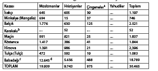
Kaynak: İstanbul Üniversitesi ms. katalog D-8, no. 8867, icmal (özet) defterleri. Belgeye göre defteri tutan kişi, İstanbul’daki yazışma dairesinin bir üyesi olan Hacı Ahmet Efendi’dir.
Notlar: Bu defterde yalnızca erkeklerin sayısı verilmektedir; kadınlar Osmanlı sayımlarında 1880’li yıllara dek sayılmadılar.
Bu defterin orijinalinde Varna da Silistre sancağına dahil edilmiştir ve 3.427 Müslüman, 1.573 Hristiyan ve 167 Çingeneden oluşan toplam nüfusu 5.167’dir.
Silistre’yle ilgili mevcut bir diğer defterde, Babadağı hariç olmak üzere asıl (proper) Dobruca’da olmayan ve daha güneyinde bulunan kentler sıralanmaktadır; Babadağı için verilen rakamlar (toplam 2.920) apaçık ki yanlıştır. Bkz. Enver Ziya Karal, Osmanlı İmparatorluğu’nda ilk Nüfus Sayımı 1831, Ankara, 1943, s. 200-01 ve bu sorunu ele aldığım The Ottoman Population, 1830-1914: Social and Demographic Characteristics, (Madison, Wisconsin, yayımlanmak üzere).
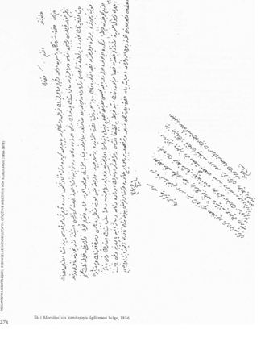
a Çingeneler Müslüman oldukları halde ayrı sayılmışlardı.
b Bu özel hizmetler karşılığında vergiden muaf tutulmuş bir Hristiyan köyüydü ve ayrı olarak sayılmıştı.
c Bu rakam iki farklı Silistre sancağı defterinde verilen iki Babadağı sayımının rakamlarından daha yüksektir.
d Bu sayının 3.621’inin Tatar, muhtemelen Kabail Tatarı olduğu açıkça belirtilmiştir; Ayrıntılı listelerde Köstence Hırşova’da sırasıyla 351 ve 723 Kabail’in olduğu görülmektedir.
Ek III.a. Ücretli Durumdaki Nogayların Listesi
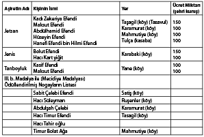
Kaynak: BA, İrade, Meclis i Vala no. 21755.
Ek lV. 1868’de Tulça Sancağı’ndaki Ailelerin ve İkamete Mahsus Olmayan Yapıların Sayısı
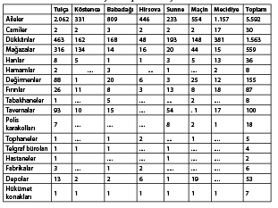
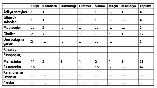
Kaynak: Tuna Vilayeti Salnamesi, 1285, s. 112.
Ek V. 1869’da Tulça sancağındaki Ailelerin ve İkamete Mahsus Olmayan Yapıların Sayısı
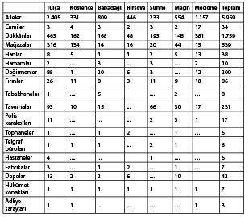
Kaynak: Tuna Vilayeti Salnamesi, 1286, s. 110.
BÖLÜM 4 / BALKANLAR’DAKİ MÜSLÜMAN AZINLIK: Toplam Sayı ve Coğrafi Dağılım190
Balkanlar’daki Müslümanların toplam sayısı yaklaşık 10 ila 11 milyon veya toplam nüfusun yaklaşık % 18’idir. Arnavutluk’ta yoğunlaşmış olan bu nüfus, burada 3.6 milyon ile toplamın yaklaşık % 70’ini oluşturur. Bu çalışmaya Arnavut Müslümanlarını dahil etmedim, çünkü Müslümanlar Arnavutluk’un 1912 yılında bağımsız bir devlet olarak kurulmasından bu yana daima çoğunluğu oluşturmuştur. (Her ne kadar Arnavutluk 1967 yılında Enver Hoca tarafından resmen ateist bir devlet olarak ilan edilmiş ve dini uygulamalar -gerek Müslümanlar gerekse Hristiyanlar için- yasaklanmış olsa da bu ülkede Müslüman kültürü hâlâ egemen durumdadır.)191
Müslümanların, 4.5 milyon civarında bir nüfusla azınlık olarak en yoğun oldukları ülke Yugoslavya’dır. Bosna-Hersek’te 1.8 milyon ile nüfusun % 44’ünü oluşturan Müslümanlar, Kosova bölgesindeki toplam 1.7 milyon olan sayılarıyla, toplam nüfusun % 89’unu oluştururlar. Makedonya’da da Müslüman yerleşmeleri bulunmaktadır (1913 yılına dek çoğunluk konumunu korumuş olan Türk nüfusu yaklaşık 100.000’e kadar düşmüştür); Karadağ ve Hırvatistan’da da Müslümanlardan oluşan küçük yerleşmeler vardır. (Çoğu küçük iş sahibidir ve Bosna ile Makedonya göçmenidir.) Bu bölgelerdeki toplam Müslüman nüfusu bir milyonu aşar. En büyük Müslüman nüfusa sahip ikinci Balkan ülkesi Bulgaristan’dır. Nüfusun Müslüman öğesi 1.4 ila 3 milyon olarak tahmin edilmektedir. Resmi Bulgar istatistiklerinde, azınlık meselesini önemsiz göstermek için sınıflandırma ölçütü olarak din yerine dil alınmıştır. Bu istatistiklere yalnızca Türkler etnik ve dini bir azınlık olarak geçmiş ve sayıları da yaklaşık 650.000 olarak verilmişti. Devletin verdiği rakamlar, hem Türklerin sayısını önemli ölçüde az göstermekte hem de, Pomakları (Slavca konuşan Müslümanlar) ve Çingeneleri göz ardı etmektedir. Bir Bulgar devlet adamı, yalan bir tarihte ülkedeki toplam Müslüman sayısının 1.3 milyon olduğunu tahmin etmişti ki bu önceden verilen rakamın neredeyse iki katını buluyordu. Bulgar demografisi hakkında bilgi sahibi olan bazı bilim adamları, Müslümanların sayısının, 2-3 milyon civarında ya da nüfusun % 30’una yakın olduğu tahmininde bulunmuşlardı. Her durumda kesin olan bir gerçek var: Yugoslavya ve Bulgaristan’ın Müslüman nüfusları, her iki ülkede de toplam nüfusun % 15 ila 28’ine ulaşmaktadır.
Yunanistan ve Romanya gibi diğer iki Balkan devletinin Müslüman nüfusları toplam nüfusa oranla çok düşüktür: Romanya’da (nüfusu 23 milyon) resmi istatistiklere göre Müslümanların toplam sayısı 65.000’dir (ancak ülkedeki bazı aydınlar, Müslüman nüfusun 90.000 ile 100.000 arasında olduğunu tahmin etmektedirler); Yunanistan’da toplam Müslüman nüfus yaklaşık 120.000’dir. Müslümanlar Romanya’da yoğunlukla Dobruca’da bulunurken, Yunanistan’da, yakın tarihe dek çoğunluğu oluşturdukları Batı Trakya bölgesinde yaşamaktadırlar.
Bulgaristan’da, Müslümanlar Rodop Dağları’nın Kırcaali bölgesinde, Türk-Yunan sınırı yakınında yoğunlaşmıştır ve burada çoğunluğu oluştururlar; kuzeydoğudaki Razgard, Şumen, Silistre ve Tutrakan bölgelerinde ise çoğunluğu oluşturmasalar da buna yakın bir sayıda olabilirler. Balkan Müslümanlarının ezici bir çoğunluğu sünnidir. Bulgaristan’ın Deliorman bölgesine dağılmış birkaç Alevi (Şii) topluluk da bulunmaktadır.
Müslümanların bir kısmının stratejik öneme sahip birkaç bölgede yoğunlaşmış olmalarının Balkan hükümetlerinin idari politikaları üzerinde kesin bir etkisi olmuştu. Bu nedenle, hükümetler, Müslüman tebaanın, bir sorun kaynağı olabileceğini düşünme eğiliminde olmuşlardır. Böyle bir kuşkuyu haklı çıkarabilecek hiçbir kanıt olmamasına rağmen Sırp yönetimi, Kosova Arnavutlarını, Kosova’yı Arnavutluk’a bağlama planları yapmakla, Yunan ve Bulgar yönetimleri de Müslüman Türkleri, fesat çıkarma heveslisi olmakla suçlamışlardır; böylelikle Türk hükümetine müdahale için bir bahane sağlamaya çalışmışlar ve misilleme için onu kışkırtmışlardır.
Osmanlı İdaresi Altında Balkan İslamiyetinin ve Cemaat Örgütlenmesinin Doğuşu
İslamiyet Balkanlara 13. yüzyıldan itibaren tümüyle olmasa da esas olarak göç ve din değiştirme yoluyla geldi. Balkanlar’a gelen Müslüman göçmenlerin büyük çoğunluğu Türktü. Bazı Türk toplulukları daha 11. yüzyılda (daha öncekiler, örneğin, Hunlar hariç) Karadeniz’in kuzeyinden gelmişlerdi; ancak, çoğu Anadolu göçmeniydi ve daha ziyade 15. ve 16. yüzyıllarda Tuna’nın güneyine, günümüzdeki Bulgaristan, Trakya ve Makedonya topraklarına yerleşmişlerdi. Sonuçta, Bulgaristan, Yunanistan ve Romanya’daki Müslümanların çoğu etnik olarak Türktür; bölgeler arasında fonetik ve terminolojik bakımdan bazı önemsiz farklılıklar olmakla birlikte Türkiye’nin dilini konuşmaktadırlar. Bölgede 14. ve 15. yüzyıllardaki Osmanlı-Türk fethinden sonra yaşanan bir dizi iç göç, Balkanlar’ın dini ve etnik bileşiminin büyük ölçekte olmamakla birlikte değişmesine yol açmıştır, Kosova bölgesinde ise bu değişim muhtemelen daha büyük olmuştu.192
Balkanlar’ın İslamlaşması öncelikle din değiştirme olgusundan kaynaklandı. İslamiyete geçiş, daha çok 15. ve 16. yüzyıllarda meydana geldi. Bu, kuvvet ya da baskı sonucu olmaktan çok belirli toplulukların kendi etnik kimliklerini ve kültürel özelliklerini korumak için İslamiyeti bir fırsat olarak görmelerinden kaynaklanmıştı. Roma’nın ya da Konstantinopolis’in katı Ortodoksluğundan kurtulmak üzere İslamiyeti kabul etmiş olan Bogomiller -Bosnalı Müslümanların ataları- örneğinde de böyle olmuştu. Din değiştirme, bazı egemen sınıfların toplumsal ayrıcalıklarını muhafaza etmelerini de sağlamıştı. Alt sınıfların yeni inancı benimsemelerinin başka nedenleri de vardı. İslamiyet devletin üstünlüğü ilkesini benimsiyordu ve uygulamada bu, kamu hukukuna belli bir öncelik tanınarak köylülerin, Latin ve Bizanslı feodal beylerin yağmacı uygulamalarından korunması, anlamına geliyordu. Türk fethi zamanında bu beyler, Balkanlar’da hâlâ önemli bir gücü ellerinde tutuyorlardı. Feodal Türk beyleri ise merkezi idareye itaat ediyorlardı ve Hristiyan öncülleri gibi kişisel bir özerklik geliştirememişlerdi. Böylelikle Boşnaklar ve Arnavutlar da 15. ve 16. yüzyıllarda, tıpkı daha küçük Vlah, Makedon ve Bulgar topluluklarının tarihin farklı dönemlerinde yaptıkları gibi İslamiyete geçtiler.
O halde, etnik açıdan bakıldığında, günümüzde Balkan Müslümanlarının büyük bölümünün -yani yaklaşık % 70’inin- bölgenin ilk sakinlerinden olan Arnavutlardan, Slavlardan (daha çok Sırpça-Hırvatça konuşan Boşnaklar, Hersekliler ve Karadağlılar) ve başka birkaç topluluktan oluşmuş olduğu görülmektedir. Türkler toplam Müslüman nüfusun yaklaşık % 20’sini oluşturmaktadır. Bu demografik gerçek, Balkan milliyetçilerinin Müslüman vatandaşların yerli Slav ve Yunan halkın arasına zorla yerleştirilmiş “mütecavizler” olduğuna dair iddialarını çürütmektedir. Balkanlar’daki en büyük Müslüman kitleyi oluşturan Arnavutların (5 milyonun üzerinde) bölgenin en eski sakinleri oldukları ve buraya, Yunanlar ve Slavlardan bin yıl önce geldikleri bir gerçektir.
Osmanlı devleti, gayrimüslimler konusunda kısmen birleşik bir örgütlenme düzeni benimsemişti Balkan Hristiyanlarının neredeyse hepsi Ortodokstu ve sonuç olarak İstanbul’daki Ortodoks patriğin oteritesi altındaydılar. Bir millet ya da dini-milli bir cemaat oluşturdukları kabul ediliyordu. Patriğin ve meclisinin, büyük Ortodoks cemaatini ilgilendiren eğitime, din ve kültür ile ilgili bütün meselelerde mutlak bir yetkisi vardı. Ortodoks cemaati, kabaca Ortodokslar arasındaki etnik ve dilsel bölümlere karşılık gelen küçük alt birimlere ayrılmıştı ve her bölümün kendi kilisesi vardı. Yahudiler de bir millet idiler.193
Osmanlı idaresinin hâkimiyet alanı esas olarak hukuk, düzen, vergi ve savunma konularını kapsıyordu. Hristiyanların ve Yahudilerin inançlarının gereklerini yerine getirmek için kültürel ve dini kurumlarını kurma hakları, ilahi dayanağı olan bir nevi doğal hak olarak görülüyordu.194Osmanlı devleti, gerek Yahudilerin gerekse Hristiyanların Ahl al-Kitab’a (Kitap halkları) yani, Allah’ın vahyi olan kurallara (Tevrat ve İncil) göre yönetilen halklar olduklarına dair İslamî görüşe gönülden bağlıydı; dolayısıyla Osmanlı idaresi de dahil olmak üzere hiçbir dünyevi iktidar ya da insan eseri bir bünyenin kanunları, inançlara dayanan haklara tecavüz edemezdi. Diğer yandan, Yahudilerin ve Hristiyanların dini liderleri, Kuran’ın tanrısal bir kaynağı olduğu görüşünde değillerdi. Sonuçta, Yahudi ve Hristiyan devletleri kendilerini, Müslüman idaresi altındayken kendilerine tanınan dini ve kültürel özgürlüğü Müslümanlara tanımakla yükümlü görmüyorlardı. Azınlık topluluklarının özerkliği, dini ve kültürel özgürlüğe sahip olmaları ilkesi, Hristiyan idarelerinin laikleşmesinden çok sonra gelişti.
Osmanlı idaresi döneminde Müslümanlar, resmen bir millet olarak tanımlanmamışlardı. Ancak, uygulamada onlar da bir milletti ve tümüyle dini bir milleti oluşturuyorlardı. Her etnik topluluk kendi dilini konuşmayı ve adetlerini yerine getirmeyi sürdürmekle birlikte, ortak Müslüman kimliği, Müslümanların etnik, dilsel ve ırksal kimliklerinden önde geliyordu. Pek çok Balkan Müslümanı, bölgede hızla türemiş olan çok sayıdaki din kardeşliğinden birine (Halveti, Kadiri, Mevlevi vb.) aitti. Balkan Müslümanları da tıpkı benzerleri gibi çeşitli etnik kimliklerinin tümüyle farkındaydılar ancak, ne etnik köken ne de dil, nüfusun geri kalanı üzerinde üstünlük iddiasında bulunmalarına yol açan bir kimlik temeli oluşturmuyordu. Boşnaklar Sırpça-Hırvatça konuşuyorlardı ama kendilerini Sırplardan veya Hırvatlardan çok Müslümanlarla özdeşleştiriyorlardı. Osmanlı yönetim dili Türkçe’ydi ama Türkler hiçbir zaman Türk olmayan diğer Müslüman topluluklar karşısında üstünlük iddiasında bulunmamışlardı.
Müslümanlar kendilerini bir “çoğunluk” ve dolayısıyla, Hristiyanları da bir “azınlık” olarak görmüyorlardı. Bu kavramlar, birleşik örgütlenmesi etnik hiyerarşiden çok dini cemaatlerin eşitliğine dayanan Osmanlı devletine tümüyle yabancıydı. Müslümanlar kendilerini devletin toprağıyla değil, otoritesiyle özdeşleştiriyorlardı. Birer Müslüman olarak elbette Müslüman bir hükümdara itaat edeceklerdi; hükümdar, bir bölgedeki egemenliğini yitirdiği takdirde Müslümanlar, geleneksel biçimde hâlâ Müslüman bir hükümetin idaresi altında olan bir bölgede yaşamak üzere göç ediyorlardı. Bu gelenekselleşmiş zorunlu göç, Peygamberin MS 622 yılında, baskıya maruz kaldığı Mekke’den, inancını özgürce uygulayabildiği ve yayabildiği Medine’ye kaçışına dayanmaktadır,195
Milliyetçilik kavramı -toprak bütünlüğü olan ulusal devlet (territorial national state), vatandaşlık ve bir çeşit laiklik düşünceleri- sonunda Balkan Hristiyanları arasında da benimsendi. Çoğu Balkan bilim adamı, bu kavramların hepsinin Batı’dan ödünç alındığını iddia ediyordu. Gerçekten de, bunların isim ve biçim olarak Batı’dan geldikleri doğrudur ancak, içerik ve öz olarak doğu kökenliydiler ve bölgenin tarihsel ve kurumsal geçmişini yansıtmaktaydılar. Balkan Müslümanlarına yapılan uygulamada ve onların günümüzdeki statülerinin belirlenmesinde bu kavramların etkili olduklarını söylemeye gerek yoktur. Balkanlardaki milliyetçilik kavramının kaynağı, resmen iddia edildiği gibi etnik diller topluluklardan çok, dini cemaatlerde bulunuyordu. Bu nedenle bölgedeki modern devletlerin doğuşuna ulusal kiliselerin kurulması eşlik etmişti ya da bu kiliseler daha önce kurulmuşlardı. Bundan dolayı Balkan milliyetçiliği, öncelikle evrensel Ortodoks hiyerarşinin dağılmasına yol açtı. Rumlar bile bir yandan İstanbul patrikhanesiyle özdeşleşmeye çalışırken diğer yandan kendi ulusal kiliselerini kurdular.196
Dini Ortodoks kimliğin siyasal bir kimliğe dönüşmesi ve ardından Balkan Hristiyanları arasında bir nevi ulusal bilinç haline gelmesi, çarlık dönemi Rusyası’nın 18. yüzyılın sonuna doğru başlattığı ideolojik bir sürecin sonucuydu. “Baskı altındaki Ortodoks Hristiyanların imansız Türklerin zulmünden” kurtulması, Rus dış politikasının Balkanlardaki sloganı olmuş ve bu fikir, çok sayıda Balkan entelektüelinin Batı’yla ve düşünceleriyle tanışmasından çok daha önce Rus ajanları ve Rusya’da eğitim görmüş Balkanlı öğretmenler aracılığıyla yayılmıştı. Slavcılık, etnik-dilsel öğeyle ilişkilendirdiği dini kimliğe yeni bir güç kazandırmıştı ve bu da görünüşte Batı’nın milliyetçilik ölçütüne karşılık geliyordu. Osmanlı devleti en azından 1880’li yıllara dek Ortodoks Hristiyanların eğitim etkinliklerine karışmayarak, özellikle Bulgaristan’da ve Sırbistan’daki okulların müfredat programlarında etkili olmak konusunda ipleri Rusya’nın eline bırakmıştı. Bu süreç, Osmanlı idaresinin 1856 yılında Islahat Fermanı’nı benimsemesinden sonra daha da hız kazandı. Bu ferman, gayrimüslimlere Batı’da tanımlandığı anlamda bir “eşitlik” sağladı; yani, Ortodoks Hristiyan cemaatlerin siyasal uluslara dönüşümünü destekleyen bir ortam yarattı. Bunu temel olarak dini liderlerin bu cemaatler üzerindeki iktidarını zayıflatarak yaptı.
Müslümanların Azınlık Konumuna Geçmeleri
1878 yılındaki Berlin Anlaşması, belli başlı her Ortodoks Hristiyan topluluğun kendi bağımsız, toprak bütünlüğü olan ulusal devletini kurmasına olanak sağlayarak Müslümanları azınlık haline getiren ideolojik ve kültürel süreci tamamlamış oldu.197Böylelikle Sırbistan, Romanya, Karadağ ve Bulgaristan (Birinci Dünya Savaşı öncesine kadar resmen sultanın egemenliği altındaydılar), neredeyse bir gecede etnik ve tarihsel isimler altında bağımsız birer devlet oldular. Yunanistan zaten (1830 yılında) bağımsızlığını kazanmıştı. Avusturya 1878 yılında, kısmen Sırpların Adriyatik’e açılma isteklerini engellemek için Bosna-Hersek’i işgal etti. Sonunda 1913 yılında Osmanlının Balkanlardaki son önemli toprakları olan Makedonya ve Trakya, Sırbistan, Yunanistan ve Bulgaristan tarafından işgal edilerek bölüşüldü. Bu yeni ulusların her birinde, iktidardaki hâkim sınıfla pek ortak yanları olmayan büyük bir Müslüman nüfusu ya da başka halklar bulunuyordu. Bu durum özellikle de 1913 yılından sonraki ilhaklar için geçerliydi. Örneğin, Makedonya’nın Sırbistan tarafından işgal edilen bölümlerinde Sırplar, tıpkı Bulgarların ve Yunanların ele geçirdikleri ülke topraklarının çoğunda olduğu gibi küçük bir azınlığı oluşturuyorlardı.
İşgal güçleri Müslümanları, etnik ve dilsel aidiyetlerini dikkate almaksızın göçe zorlayarak demografik dengeyi kendi lehlerine kurmaya çalıştılar.198Balkanlarda “Türk” sözcüğü, “Müslüman”la eşanlamlıydı. Balkan Müslümanlarının çoğunluğunun etnik ya da dilsel açıdan Türk olmamasının, yeni “ulusal” devletlerin yöneticileri açısından hiçbir önemi yoktu; çünkü din, Balkanlardaki ulusal özdeşleşmenin başlıca göstergesiydi. (Bu, bugün hâlâ büyük ölçüde geçerlidir.) Aynı ölçütün, Bosna Slavlarını, İlirya Arnavutlarını ve Yunanları Müslüman oldukları takdirde “Türk” olarak kabul eden Osmanlı devletinde de (ve daha sonra modern Türkiye’de) geçerli olması ilginçtir. Sınırların değişmesinin ve gönüllü ya da zorunlu göçlerin sonucunda Müslümanlar, Arnavutluk dışında 19. yüzyılda kurulan bütün Balkan devletlerinde azınlık durumuna geldiler. Arnavutlar da 1912 yılında bağımsızlıklarını ilan ederek azınlık olmaktan kurtuldular.
Balkan bölgesi aslında Berlin Anlaşması’nın getirdiği resmi ulus-devlet kavramına pek uygun değildi. Bölgedeki hiçbir ülke, gerçekten ulus olarak adlandırılabilecek kadar dini, dilsel ve etnik bir türdeşliğe sahip değildi, (belki 1858 yılında Romanya’yı oluşturmak üzere birleşen Eflak ve Boğdan dışında.) Aynı dili konuşan topluluklar, dini (örneğin, Ortodoks Sırplar ve Katolik Hırvatlar) ve az da olsa bölgesel farklılıklar veya farklı tarihsel deneyimler nedeniyle bölünmüşlerdi. Sonuçta, her yeni devlet sahip olduğu devlet araçlarından yararlanarak, bir dili ulusal dil ilan ettiler ve standart bir “tarih” yorumunu, “milli” bir edebiyatı ve çoğu kez toprak yayılmacılığını da içeren geleceğe yönelik hedeflere ilişkin özel bir görüşü yaymaya yönelik eğitim sistemini de kullanarak bir “ulus” yaratmaya giriştiler.
Balkan devletlerinde, devletin ayakta kalmasının en büyük güvencesinin kültürel ve dini türdeşlik olduğu görüşüne inanıldı ve buna bağlı kalındı. Başka bir deyişle, “ulus”un “devlet” karşısında öncelikli olduğu varsayıldı; ulusal birliği ve dayanışmayı güçlendirmeyi amaçlayan her kanunun, azınlık haklarını dikkate almasa bile yasal ve yararlı bir kanun olduğu düşünüldü. Balkanlar’daki komünist rejimler, bilhassa 1947 yılından itibaren, bir yandan halkların kardeşliği telkininde bulunurken diğer yandan bütün azınlıklarına karşı asimilasyon politikalarını benimsediler ve “burjuva ulusalcılığını” yani azınlıkların kendi kültürel miraslarını savunma çabalarını acımasızca yargılayıp cezalandırdılar. Çavuşesku gibi cahil ve megaloman biri bile, diktatörlüğünün ilk yıllarında, büyük ölçüde etnik gururu istismar ettiği ve vatanseverlik ve ulusalcılık adına yabancı düşmanlığını körüklediği için geniş bir destek sağlamıştı. Bulgaristan’ın Jivkov’u gibi o da, türdeş ve yekpare bir ulusal devletin mimarı olarak tarihe geçmek istedi. Balkan idarelerinin gözünde Müslümanlar, birleşik ve türdeş bir ulus oluşturma çabası önündeki en büyük engeli oluşturuyor ve asimile olmayı reddettikleri için de devletin güvenliğini tehdit ediyorlardı. Sonuçta Müslümanlar, nüfusun güvenilmez yabancı bir öğesi olarak değerlendirildiler. Oysa Balkan Müslümanları, devletlerine bağlı olmuşlar ve orduya hizmet de dahil olmak üzere bütün vatandaşlık görevlerini sadık bir biçimde yerine getirmişlerdi.
Berlin Anlaşması, Osmanlı düzeninin temel taşı olan eşitlik kavramını ve dini-cemaatlerin özerkliğini ortadan kaldırdı. Üniter bir ulus devlet kavramına yasallık kazandırdı. Çoğunluğu oluşturan topluluk iktidara geçti, büyüklükleri ve tarihleri göz ardı edilen diğer topluluklar ise iktidardakilerin iradesine tabi oldular. Berlin Anlaşması’na biçim verenler, yasal “azınlıklar” oluşturduktan sonra, özellikle başta Müslümanlar olmak üzere dini azınlıkların haklarını korumayı amaçlayan iki koşulu benimsediler.
1878 Anlaşmasının taslak olarak hazırlandığı Berlin Kongresi’ne katılanların, seküler ulus-devlet kavramına bağlı oldukları halde Balkan azınlıklarını yine de hâlâ din bağlamında değerlendirdikleri burada vurgulanmalıdır. Bu nedenle anlaşma, bütün etnik azınlık topluluklarını, farklı etnik kimlikleri benimsemiş olan hükümetler tarafından “ulusal” hakları dikkate alınmaksızın yönetilmeye mahkûm ederek göz ardı etmiş oldu; örneğin Yunanlar Bulgaristan’da bırakılmış, Vlahlar, Sırp ve Yunan idaresi altına alınmıştı. Yine de anlaşmada dini özgürlük ve eşitlik, şu ifadeyle sağlanmaya çalışılmıştı: “İnanç farklılıkları, siyasal haklar ile yurttaşlık haklarından yararlanırken, kamu görevine alınma da, işlevlerin ve unvanların kabulünde ya da herhangi bir yerde çeşitli mesleklerin ve görevlerin yerine getirilmesinde kimseye karşı yetkisiz kılma ve dışlama nedeni olarak kullanılamaz.” Ayrıca “(ülkenin adı veriliyor) halkı kadar yabancılar da bütün dinlere inanma ve açıkça ibadet etme özgürlüğüne sahiptir ve çeşitli cemaatlerin hiyerarşik örgütlenmesine ya da din liderleriyle olan ilişkilerine hiçbir engel getirilemez” denilmekteydi. Bu madde Bulgaristan (mad. 5), Karadağ (mad. 27), Sırbistan (mad. 35) ve Romanya (mad. 44) ile ilgili bölümlerde de olduğu gibi korunmuştu.
Bir ulus devletindeki azınlıkların hakları en azından üç grupta düşünülebilir. Birinci gruptaki haklarla, azınlıkların, hâkim çoğunluğun idaresi altında sürdürülebilecek ayrımcılığa karşı korunması amaçlanır. Başka bir deyişle, koruyucu düzenlemeler çoğunluğun yararlandığı siyasal, dini, kültürel, eğitim ve yurttaşlık haklarından azınlıkların da yararlanmasını sağlama amacı güder. İkinci gruptaki haklarla, azınlıklara bir dereceye kadar özerklik tanınması ve özel bir statü verilmesi hedeflenir. Buna mevcut siyasal yapılanmalarda ulusal bir varlık olarak kendilerini temsil etme hakkı da dahildir. Bu hakların tanınması bir azınlığın elbette ayrı bir etnik, dini ve kültürel topluluk olarak var olmasını sağlamakla birlikte, aynı zamanda onu nüfusun geri kalanından farklı da kılar. Osmanlı devleti, kendi dini azınlıklarına karşı bütün dini cemaatleri birbirinden ayıran ve sonunda ulusal-üniter bir devletin bünyesine dahil olmalarını olanaksız kılan bu politikayı benimsemişti. Osmanlı devletinin, 1876-1878 parlamentosunda dini topluluklara bir çeşit siyasal temsiliyet olanağı tanıyarak onları türdeş bir siyasal birlik içinde kaynaştırma çabası başarısız olmuştu. Çünkü bunun hem sultanın egemenliğini tehdit ettiği düşünülmüştü hem de öneri Rusya ve Avrupa’nın desteğini alamamıştı. Üçüncü gruptaki azınlık haklarıyla, bir azınlığa tehlike altındaki bir tür gibi davranmak ve çeşitli “olumlayıcı” önlemler yoluyla onu çoğunluğun ekonomik ve entelektüel düzeyine çekmek ve canlandırmaya çalışmak amaçlanır.
Berlin Anlaşması’nın, bağımsızlığını yeni kazanmış olan Balkan devletlerinin Müslüman tebaaya karşı ayrımcılık yapmalarını engellemeyi amaçlayan ilk yaklaşımı benimsediği açıktır. Aslında Balkan Müslümanlarının Berlin Anlaşması’nın yürürlüğe girmesinden itibaren verdikleri mücadele, anlaşma yükümlülüklerini ihlal eden hâkim çoğunluk tarafından maruz bırakıldıkları genel ayrımcılığı sona erdirmeyi amaçlamıştır.
Ulus Devletlerde Müslümanlara Yapılan Uygulamalar
Bağımsızlığını yeni kazanmış olan Balkan devletlerinin hükümetleri, her ne kadar çeşitli idari ve ekonomik baskılar aracılığıyla Müslüman tebaayı göçe yöneltmekte duraksamamış olsalar da, Berlin Anlaşması’nın koşullarına başlangıçta uydular.199Çok sayıda Müslüman da azınlık olarak yeni konumuna uyum sağlamakta zorlandığı ya da halife sultanın idaresi altında yaşamayı tercih ettiği için kendi isteğiyle göç etti. Bununla birlikte, Müslüman azınlıklara 1878 yılından hemen sonra tanınan görece özgürlük, Balkan devletlerinin giderek daha milliyetçi olmaları ve tarihlerini intikamcı bir yaklaşımla yeniden yorumlamaları yüzünden zamanla sınırlandırıldı ya da tümüyle kaldırıldı. Bu devletler, ekonomik bakımdan görece az gelişmiş olmalarını Osmanlı-Türk idaresine (kendi deyişleriyle 500 yıllık Türk baskısına) bağladılar ve Müslüman tebaayı, eski rejime geri dönme yanlısı olarak yaftaladılar. Müslüman vatandaşlara karşı giderek daha ayrımcı olan bir uygulamayı haklı çıkarmak için bu bahaneden yararlandılar. Özellikle Türkçe konuşan Müslümanlar, geçmişteki Osmanlı idaresinin başlıca işbirlikçileri, daha da kötüsü Türkiye’nin potansiyel destekçisi olarak görüldükleri için bu ayrımcılığın asıl yükünü taşıdılar. Bulgaristan’da, 1930’lu yılların başında bir grup milliyetçi subayın seçimle iktidara gelmiş olan hükümeti görevden alarak otoriter, faşist bir hükümet kurmasından sonra Türklere karşı açıkça ayrımcı bir siyaset uygulandı.200Türk okulları ve Türkçe yayımlanan gazeteler kapatıldı. Okullarda Bulgar çocuklarına, Türklerden nefret etme duyguları aşılandı. Türklere duyulan bu nefret, Bulgar kültürünün değişmez bir özelliği haline geldi.201
Balkan Türklerine yapılan uygulamalar, Balkan ülkelerinin Türkiye ile olan ilişkilerine bağlı olarak birbirinden farklı oldu. İkinci Dünya Savaşandan sonra Marksizmi benimsemiş olan Bulgaristan ve Romanya Varşova Paktı’na katıldılar ve NATO üyesi olan Türkiye’yi baş düşmanları ve kendi vatandaşları olan Türkleri de potansiyel beşinci kol olarak gördüler. Diğer taraftan kendisi de bir NATO üyesi olan Yunanistan, Kıbrıs anlaşmazlığı nedeniyle Türkiye’yle ilişkisi bozuluncaya dek, Türkçe konuşan Müslümanlara karşı daha liberal bir yaklaşımı benimsedi. Balkanlar’daki Müslümanlar, Marksist rejimler altında en kötü zulümlere maruz kaldılar. Sırpların üniter devleti yönettikleri 1918-1941 yılları arasında hâkim olan ayrımcı politikayı sürdürme çabalarına karşın, federal bir düzenin ve Tito’nun dış siyasetinin Müslümanları bir nebze olsun himaye altına aldığı Yugoslavya dışındaki genel durum oydu.202
Balkan devletleriyle önce Osmanlı devleti ve daha sonra Türkiye arasında çeşitli anlaşmalar imzalanmış olmasına karşın Müslümanlara zulüm uygulanmıştı. Örneğin, Bulgar Müslümanları Türkiye’yle Bulgaristan arasındaki çeşitli anlaşmalara tabiydiler. 1909 yılındaki İstanbul Protokolü’nde, Türklerin Bulgarlarla eşit kabul edildiği yinelenerek, Berlin Anlaşması’nın beşinci koşulu yeniden ifade edildi. 1913, 1919 (Neuilly) ve özellikle de 1925’teki dostluk anlaşmaları, Türklerin yurttaşlık ve dini haklarını yeniden teyit ediyor ve göç etme haklarını garanti altına alıyordu.203Bu haklar, Müttefiklerle Bulgaristan arasında 1947 yılında imzalanan anlaşmada bir kez daha sıralanmıştı. Yine de, 1951-1952’de Bulgaristan, Stalin’in tavsiyesi üzerine Türk kökenli 152.000 vatandaşını ülke dışına sürdü. Bununla, Türkiye’yi NATO’ya katılmış olduğu için cezalandırmak ve mültecileri bünyesine almak zorunda bırakarak ekonomisini çökertmek amaçlanıyordu.2041951-1952 ihracıyla dağılan aileleri yeniden bir araya getirmek üzere 1968 yılında yeni bir Türk-Bulgar anlaşması yapıldı. Bulgaristan’ın, Türklerin göç etmesini yasaklaması nedeniyle bu anlaşmanın tam olarak uygulandığı söylenemez. Gerçekte işgücü açığı karşısında Bulgaristan Türk azınlığını yol yapımında, kenderde konut inşaasında ve tarımın geliştirilmesinde yararlanabileceği önemli bir işgücü potansiyeli olarak görmeye başlamıştı. Türklerin ücretleri, özellikle tarım alanında aşırı düşük tutuluyordu ve Bulgarlar daha yüksek ücretli işlere geçmişlerdi. Bu arada Müslümanlar arasındaki, doğum oranı % 3’ün üzerine çıkmıştı. (Bu gelişmede, çeşitli demografik, kültürel ve siyasal nedenlerle birlikte Türklerin, etnik bir topluluk olarak hayatta kalmalarının, daha çok üremeleriyle mümkün olacağına ilişkin bilinçaltından gelen çabalarının da rolü vardı.)
Bulgarların doğum oranı 1950’de yaklaşık % 1.5’ten 1980’de % 0.2’ye düştü. Sonuçta, 1984 yılının Aralık ayında Bulgaristan’ın o tarihteki idarecisi olan Todor Jivkov, kabinenin de onayını alarak bezdirici Türk-Müslüman sorununu “kökten çözmeye” karar verdi. Makedonların (sayıları yaklaşık 168.000 idi) aslında etnik olarak Bulgar olduklarını zaten ilan etmişti. Timok vadisinde yaşayan Romenler, Yunanlar ve diğer etnik topluluklar için de aynı şeyi söyledi. Bulgar idaresi, 1878 yılından itibaren imzalanmış olan bütün ikili anlaşmalara ve uluslararası anlaşmalara meydan okuyarak, Bulgar Türklerinin aslında “din değiştirmiş Bulgarlar” olduklarını ve Hristiyan (Bulgarlaştırılmış) isimleri ve âdetlerini benimseyerek “ulusal birliğe” dönmeye karar vermiş olduklarını ilan etti. Türk okulları kapatıldı ve ülkenin pek çok yerindeki camiler kamulaştırıldı (Sofya’daki caminin, Arap diplomatları yanıltmak için açık kalmasına izin verildi), Müslüman mezarlıkları tahrip edildi ve Türkçe konuşulması yasaklandı. Türklerin protestoları, yüzlerce kişinin ölümüne ve binden fazla kişinin Belene Adası’nda hapsedilmesiyle sonuçlanan ayaklanmalara yol açtı.205
Dünyanın Bulgaristan’ı kınaması, Uluslararası Af Örgütü’nün ve Müslüman Dünya Birliği gibi uluslararası Müslüman örgütlerinin eleştirileri herhangi bir sonuç getirmedi. Sovyetler Birliği, Bulgaristan’daki en temel insan haklarının göz göre göre ihlalini ‘bir iç mesele’ olarak değerlendirerek çeşitli çevrelerden gelen taleplere karşın müdahale etmeye yanaşmadı. 1989 yılının ilkbaharında Türkler, zorla Bulgarlaştırılmalarını protesto etmek üzere Şumen’de büyük bir gösteri düzenlediler. Gösteri, ancak Türklerin çıplak elleriyle birkaç Bulgar tankını tahrip etmesinden sonra güçlükle bastırıldı ve iktidarı elinde tutan komünist grubun zayıf ve korkak olduğunu gözler önüne sermeye yaradı. Türklerin daha sonraki gösterileri, demokratik görüşlü Bulgarların ayaklanarak, Jivkov diktatörlüğünü sonunda alaşağı etmelerinde cesaretlendirici oldu. Umutsuzluk sınırına getirilmiş olan baskı altındaki iki azınlığın -Bulgar Türkleri ve Timişoara’daki (Temeşvar) Romen Macarları- iktidardaki hükümetler tarafından maruz bırakıldıkları uygulamayı protesto etmek üzere ayaklanmasının, Doğu Avrupa’nın en kötü iki diktatörünü düşürmek için gereken kıvılcımı yakmaya yaradığını kaydetmek ilginç olsa gerek. Bununla birlikte, Bulgar hükümetinin iktidardan düşmesi, ancak Jivkov’un 350.000 Türk kökenli Bulgar vatandaşını “seyahat özgürlüğü” tanıdığı bahanesiyle ülkeden sürmesinden sonra gerçekleşti. Jivkov’un düşürülmesinden sonra 100.000 kadar Bulgaristan Türkü evlerine döndü ve hâlâ Bulgaristan’da bulunan Türklerle birlikte Ahmet Doğan’ın başkanlığında bir siyasal parti (Haklar ve Özgürlükler Hareketi) kurmayı ve Ulusal Meclis’e 22 milletvekili seçtirmeyi başardı. Bununla birlikte, Türklerden nefret etmeyi öğrenmiş olan Bulgar kamuoyu, onlara tanınan eşitliğe, karşı çıkmaktan vazgeçmedi. Dolayısıyla, Bulgaristan’ın günümüzdeki demokratik görüşlü başbakanının iyi niyetine karşılık Türklerin hakları hâlâ tehdit altındadır. Yeri gelmişken, Pomakların, yani Bulgaristan’daki Slavca konuşan Müslümanların, çeşitli devlet baskılarına ve onları “Bulgar” olduklarına ikna etmeye yönelik kandırmacalara karşın kendilerini İslamiyetle ve Türklerle özdeşleştirmeye devam ettiklerinin belirtilmesinde yarar var. Böylelikle dinin, etnik kökenden ya da dilden daha güçlü bir kimlik kaynağı olduğu görülmüştür. Bu nedenle, Berlin Anlaşması’na şekil verenler, azınlıkların dini haklarının korunmasına büyük önem vermekte pek de haksız değillerdi.
Yunanistan’daki Müslümanların da değişik koşullarda olmakla birlikte benzer bir uygulamaya maruz kalmış olmaları, Balkan devletlerinin iktidardaki siyasal rejimden bağımsız olarak eninde sonunda aynı milliyetçi politikayı benimsemeye yönelmiş olduklarına işaret etmektedir. Yunanistan’daki çoğu Türk olan Müslümanların konumu, aynı zamanda çağdaş Türkiye’nin temel taşı olan Lozan Anlaşması (1923) ve Türkiye ile Yunanistan arasındaki nüfus mübadelesine ilişkin protokol de dahil olmak üzere diğer anlaşmalarla düzenlenmişti. Bu anlaşmalara göre, Batı Trakya’daki Türklerin kendi yurtlarında (Komotini, Ksan vs.) ve İstanbul Rumlarının da bu kentte kalmalarına izin verilmişti. Her iki topluluğun da hakları en esnek koşullarla ifade edilmiş ve genellikle her iki tarafın görece iyi niyetiyle uygulamaya konmuştu. Bununla birlikte, Türkiye’nin 1974 yılında Kıbrıs’a asker çıkarmasından (1960 yılında İngiltere, Türkiye, Yunanistan ve Kıbrıs tarafından imzalanan Garantörlük Anlaşmasının taahhütlerine uygun olarak adada anayasal düzeni korumak üzere) sonra her iki ülkenin kendi azınlıklarına karşı politikası birdenbire değişti. Özellikle Yunanistan, Lozan Anlaşması’na karşın Türk azınlığın haklarını kısıtlamaya girişti. Sıralanan nedenler arasında, Türkiye’nin işgal için Batı Trakya Türklerini bahane olarak öne süreceği görüşü de vardı. Yunan idaresi, Türklerin ana dillerinde eğitim görmesi konusunda bir dizi engel çıkardı: Türkiye’den ders kitaplarının ithal edilmesini yasakladı, Türkiye’deki yükseköğrenim kurumları tarafından verilen diplomaları tanımayı reddetti vs. Ayrıca hükümet çeşitli bahanelerle Türklerin topraklarına el koydu, Rusya’dan gelen sözde Pontus Rumlarını Türklerin yaşadıkları bölgelere yerleştirdi, Türk mallarına ağır ve bitmek bilmeyen cezalar uyguladı ve hatta yurtdışına seyahat eden Türklerin vatandaşlık hakkını geri almaya ve pasaportlarına el koymaya kalkıştı. 206Türk dostu olarak tanınmadığına kuşku olmayan Uluslararası Af Örgütü bile böyle bir haksızlığa göz yumamadı ve 1991 yılının başında Yunan devletinin Türklerin haklarını ihlalini kıyasıya eleştiren bir rapor yayımladı. Atina hükümetinin en çok eleştirilen hareketlerinden biri de Yunan parlemontosundaki milletvekili Sadık Ahmet’e karşı olan davranışıydı; Sadık Ahmet, dokunulmazlığı kaldırılarak tutuklanmıştı, uluslararası baskı sayesinde sonunda serbest bırakıldı ve ardından Komotini bölgesinden bağımsız milletvekili seçildi.
Bu arada Yunanistan’da 20.000 kadar Pomaktan oluşan küçük bir azınlık (1912 yılından, topraklarının Yunanistan’a bağlandığı 1919 yılına dek Bulgaristan’ın idaresi altında kalmışlardı), aslen Rum oldukları ve sonradan İslamiyeti seçmiş olduklarına dair hükümetin destek verdiği bir kampanyaya açıkça meydan okuyarak Türk olduklarını ilan ettiler. Bulgarların izinde giden Yunan idaresi, Pomakları çeşitli cazip mevkilere getirip (Türk bölgelerinde öğretmenlik vs.) ayrıcalıklar tanıyarak yeniden Yunan birliğine döndürmeye çalıştı.207Çok sayıda Pomak şimdi Türkiye’ye göç etmiştir ve orada yaşamaktadır.
Yugoslavya’daki Müslümanların durumu ve maruz kaldıkları uygulama, Müslüman nüfusunun büyüklüğüne bağlı olduğu kadar Yugoslavya’nın bütün dış politikasına da bağlı olarak bir cumhuriyetten diğerine farklılık gösteriyordu. Yugoslavya’daki belli başlı üç Müslüman topluluğun her birinin kendine özgü etnik ve siyasal özellikleri de vardı. Bosna ve Hersek Müslümanlarının ya da onların kendini adlandırdıkları gibi Boşnakların kendine özgü bir konumu vardır. Bosna ve Hersek cumhuriyetinde Müslümanlar, %44 gibi bir çoğunluğu oluşturuyorlar, komşu Hırvat ve Sırp halklarıyla aynı dili konuşuyorlardı. Boşnaklar, 1878’den 1918’e kadar kendilerine oldukça iyi davranan ve hatta siyasal etkinlikte bulunmalarına izin veren Habsburgların idaresi altında kalmışlardı.208Aslında Avusturyalılar, reisu’l-ulema (din alimlerinin başı) dairesini kurmuşlar ve Müslümanların asıl temsilcisi olarak bu kurumla ilişkiye geçmişlerdi. İkinci Dünya Savaşı’ndan sonra Bosna ve Hersek, yeni oluşturulan Yugoslavya devletinin bir parçası oldu ya da daha doğru bir deyişle, Güney Slavlarının sözcüsü gibi davranan büyük Sırbistan’a dahil edildi. Yugoslavya devleti, Slavlar arasındaki etnik ve dinsel bağın, nüfusun en baskın özelliği ve onu bir arada tutacak denli güçlü olduğu düşüncesi üzerine kurulmuştu; ancak, Sırplar kısa sürede dini farklılıkların, idealleştirilmiş etnik bağlardan daha güçlü olduğunu keşfettiler. Slovenyalılar, Hırvatlar ve Müslümanlar, etnosekülarist iddialarının tersine kültürel anlamda bir Sırpçı Ortodoks politikası izleyen ve Sırp Kilisesi’ne sıkı sıkıya bağlı olan yeni siyasal oluşuma dahil edilmeye (asimilasyona) karşı çıktılar. Günümüzde Kosova’da en güçlü Arnavut karşıtı propagandayı bizzat kilise yapmaktadır.
Boşnaklara, inançlarına yabancılaşmaları ve “Sırp” olduklarını ilan etmeye ikna olmaları için çeşitli baskılar yapıldı. Bosna Müslümanları, büyük ölçüde kendilerini Sırp şovenizminden korumak için Hırvat siyasal partilere destek vererek tepkilerini ortaya koydular. Bunun üzerine Sırpların daha da artan milliyetçi baskısı altında kaldılar. Sırpların milliyetçi propagandaları, Bosna Müslümanlarının güçlü bir şekilde karşı koymuş olmalarına rağmen etkisini gösterdi; Boşnakların, Osmanlı devletiyle geçmişteki bağlarına ilişkin tarihsel bellekleri zayıfladı ve sonunda yeni bir Boşnak kimliği oluştu. Seküler bir boyutu bu olan ulusal-siyasi kimliğin kökeninde hiç olmazsa eski Müslüman dini kimliği vardı. Bu yüzden ne Sırp ne de Hırvat olanların kendine özgü bir niteliği vardı ve yeni bir ulusal oluşumun- İkinci Dünya Savaşı’ndan sonra oluşan federal cumhuriyetin- temel taşı haline gelmişti.
Mareşal Tito’nun bilhassa 1955 yılındaki Bandung Konferansı’ndan sonra Üçüncü Dünya’da önemli bir figür olmasından ve Arap dünyasında ve Asya’daki, başta Sukarno’nun Endonezyası ve Nasır’ın Mısırı gibi milliyetçi-sosyalist rejimlerle daha iyi ilişkiler kurmaya çalışmasından sonra Yugoslavya Müslümanlarının özellikle de Boşnakların durumu, Belgrad’ın Bosna üzerindeki hâkimiyetinin sürmesine karşın büyük ölçüde düzeldi.209Yugoslav devleti, ziyarete gelen Üçüncü Dünyalı İslam heyetlerine Müslüman vatandaşlarına ne denli iyi davrandığını Sarayevo’yla Mostarı ve bu kentlerdeki Osmanlı idaresi altında inşa edilmiş olan Müslüman anıtlarını sergileyerek kanıtladı. Laik ve akılcı görüşler sayesinde Boşnaklar etnik ve dilsel bakımdan daha bilinçlendiler ve ayrı bir ulusal topluluk olarak tanınmak için daha büyük bir istek duydular. Kendilerini Sırplarla ya da ortak etnik ve dil bağlarına dayanarak onlara kucak açmaya hazır olan Hırvatlarla bir tutmaya hâlâ karşı çıkıyorlardı. Boşnak entelektüelleri, (çoğu iktidardaki partinin -Komünist Birlik- bir üyesiydi) sekülarist ve ateist felsefelerine karşın dinlerine dayanarak ayrı bir millet olduklarını iddia ediyorlardı. Bunun sonucunda 1971 yılında Bosna ve Hersek Müslümanları resmen “Müslüman ulusu” olarak tanınırken, Yugoslavya’nın diğer Müslümanları, “Türk”, “Arnavut” gibi etnik terimlerle tanımlanlandılar.
Boşnaklar, resmen bir “ulus” olarak tanımlandıktan sonra doğal olarak ulusal haklarla ilgili taleplerini artırmaya başladılar. Basın, örgütlenme, eğitim vs. özgürlüğü, tarih üzerine çalışma ve kendi tarihsel yorumlarını yapabilme hakkı ve daha geniş bir idari özerklik taleplerinde bulundular. Sonunda Belgrad, giderek yükselen Müslüman Boşnak milliyetçiliği karşısında, onlara “Müslüman ulusu” olarak ilan edildiklerinde üstü kapalı olarak tanınmış olan hakları reddetmek üzere harekete geçmeye karar verdi. Belgrad, merkezi hükümeti düşürmeye yönelik “köktendinci bir Müslüman entrikasını açığa çıkardığı bahanesiyle 1983 yılında 11 Müslümanın tutuklanması emrini verdi. Hükümet “entrika” bahanesinden, çeşitli Boşnak yayınlarını durdurmak ve Boşnak olmayan birisini Reisu’l-İslam (önceden reisu’l-ulema idi) olarak atamak için de yararlandı. 1983-1984 yılına dek bu makamda, Yugoslavya’daki İslamiyeti Türklerden çok Slavca konuşan Müslümanların temsil ettiği iddiasının bir göstergesi olarak hep bir Boşnak bulunmuştu. Tutuklanmış olan Müslümanlar 1989 yılının sonuna doğru, siyasetin serbestleşmeye başlamasından sonra serbest bırakıldılar ve sonunda Yugoslav hükümeti, Müslümanların “şeriata dayalı bir hükümet kurmaya yönelik köktendinci entrikaların” Sırpların hâkim olduğu gizli servis tarafından uydurulmuş olduğunu kabul etti.
Arnavutların yaşadığı Kosova bölgesinde, on yılı aşan bir süreden beri özerklik yolunda ulusal bir hareketlenme vardır. Esas olarak bu, Müslüman çoğunluğun idari, kültürel ve ekonomik haklarını güvence altına almayı amaçlayan siyasal bir harekettir. Şayet bu harekete eşlik eden dini bir düşünce varsa bunun kesinlikle önemsiz olduğu söylenebilir. (Bu konuda aksi yönde çeşitli görüşler vardır.) Kosova Arnavutlarının yasal talepleri karşısında Sırp idaresi, tepkisini, bölgenin özerkliğine son verip Kosova’yı Sırbistan’a dahil ederek ve Müslümanların sivil ve insan haklarına ciddi sınırlamalar getirerek gösterdi. Gerçekte Sırp idaresi uluslararası kuruluşların ve ziyaretçilerin Kosova bölgesine girmesine bile izin vermemektedir.
Yugoslavya’nın üçüncü Müslüman bölgesi olan Makedonya’daki durum, diğer yerlerden dikkat çekici derecede farklıdır. Yugoslav idaresi burada da çoğu Arnavut kökenli olan Müslümanlara karşı liberal bir dini ve kültürel politika benimsemiştir. Belgrad hükümeti, Makedonlar arasında güçlü bir Arnavut milliyetçiliğini yaymak için İslamiyeti daha çekici kılmaya çalıştı. Üsküp’te bir medrese inşa ettirdi, Müslüman tarikatlarına diledikleri etkinlikte bulunmaları için özgürlük tanıdı ve dini yayınlara da izin verdi. Belgrad aynı zamanda Makedonya Türklerinin, milliyetçi Arnavut gruplara karşı koymalarına yardım etmek için (200.000 ila 300.000 kadarının 1951 yılında ülkeyi terk etmek zorunda bırakılmasından sonra yaklaşık 100.000 kişi kalmıştı) onlara geniş haklar tanıdı ve ulusal haklarını öne sürmeleri için onları hep kışkırttı. Kısacası, demek ki, Yugoslavya Müslümanları hâlâ Belgrad hükümetinin ulusal ve uluslararası politikalarının tutsağıdırlar. Azınlık hakları ve özgürlükleri, koşullara bağlı olarak genişletilmekte ya da kısıtlanmaktadır. Yugoslavya geçmişte olduğu gibi bugün de belirgin özelliği yayılmacı bir milliyetçilik olan Sırpların egemenliği altındadır ve bu gerçek, devredilemez insan hakları ve özgürlüğü kavramını anlamsız kılmaktadır.
Romanya Müslümanları, komünist rejimin gelmesine ve Romanya devletinin Moskova’nın kışkırtmasıyla Müslümanların özgürlüklerini kısıtlamasına dek gayet iyi bir durumdaydılar. Gerçekten de, Romanya idaresi 1878’den 1947’ye kadar, hemen hepsi Türk kökenli olan Müslümanların kültürel ve dini kurumlarını muhafaza etmelerine izin vermişti. Bu yardımsever tutum büyük ölçüde pratik nedenlerle benimsenmişti. Öncelikle, bir anlamda Rusya’nın güney Besarabya’yı almasına karşılık Dobruca’nın 1878 yılında Romanya’ya bağlanması düpedüz beklenmedik bir kazanç olmuştu. İkinci olarak, 1878 yılında çoğunluğu Müslümanlar oluştururken Romenler, nüfusun % 20’sinden ibaret küçük bir topluluktu. Sonuçta Romanya, Romenleri Dobruca’ya yerleştirmek ve bu arada Müslümanları Türkiye’ye göçe zorlamak için zamana gereksinim duymuştu. Romenler çoğunluğu oluşturduğunda (bu durum, kuzey Dobruca’daki Bulgarlarla güneydeki Romen yerleşimcilerin yer değiştirdiği 1940’lı yıllarda gerçekleşti) hükümetin Müslümanlara karşı politikası değişti. 1950’li yılların başında varlıklı diğer toplulukların yanı sıra Müslüman üst sınıfın da mallarına el konuldu ve önde gelen temsilcileri Bicaz’da hapsedildi. O zaman Tatarlar, ulus olarak dillerinin ve adetlerinin Türklerinkinden farklı olduğunu ilan etmeleri konusunda baskıya uğradılar. Oysa her iki topluluk da geçmişte, karşılıklı evliliklerin ve ortak okulların vs. varlığının da gösterdiği gibi, tek bir cemaatten geldiklerini düşünüyorlardı. Mecidiye’deki orta dereceli ilahiyat ve imam okulları da dahil olmak üzere bütün Tatar ve Türk okulları kapatıldı. Romen idaresi bunun ardından diğer azınlıkları da asimile etmeye yönelik hayli gözü kara bir projeyi uygulamaya geçirdi. Yahudilerin ve Almanların, yüklü miktarda para ödedikten (sözde, bu paralar devlerin ülkeden ayrılan azınlıklar için zamanında yaptığı “eğitim” harcamalarını telafi etmek üzere alınıyordu) sonra göç etmelerine izin verildi. Becerikli önderlerden yoksun, küçük ve savunmasız bir azınlık olan Müslümanlar kısa sürede asimilasyonun hedefi haline geldiler. Dobruca’nın başlıca kenti olan Constanta’nın güvenlik teşkilatının personeli, yerel muhbirler ve yöneticilerden oluşuyordu. Romen idaresi asimilasyonu yürütmek için hem ödülden (Müslümanların en iyi okullara kaydolmalarına izin verildi. Bu okullardan yetişenler önemli mesleklere sahip olabiliyorlar ve Romenlerle evlenmeye eğilimli oluyorlardı) hem de cezadan (kendi dilini ve kültürünü korumaya çalışan her Müslümana sert cezalar getirildi) yararlandı. Camileri resmen kapatmasa da camiye gidenleri yıldırmak ve imamlara diğer devlet memurlarına verilen ortalama maaşın üçte birini ödeyerek Müslümanları dini önderlerinden yoksun bırakmak için elinden geleni yaptı. Bunun sonucunda Müslümanların dini ihtiyaçlarını karşılayan imamların sayısı 1990 yılında 20’ye kadar düşmüştü. O tarihten bu yana bu durumda çok az düzelme oldu.
BÖLÜM 5 / 1878-1914 DÖNEMİNDE BOSNALI MÜSLÜMANLARIN OSMANLI’YA GÖÇÜ: OSMANLI KAYNAKLARINA DAYANAN BİR İNCELEME210
Bu genel nitelikli çalışma, Bosna Müslümanlarının 1878 ve 1914 yılları arasında Osmanlı devletine göçlerini, büyük ölçüde İstanbul’daki T.C. Başbakanlık Arşivleri’nde bulunan Osmanlı belgeleri üzerinden incelemek amacıyla kaleme alınmıştır. Göç araştırmaları, nüfus çalışmalarının olmazsa olmaz öğelerindendir. Çünkü göçlerin etnik, dini veya toplumsal bir grubun büyüklüğünü etkilemek; sonuçlarından istifade edecek bir güç odağı olması durumunda da siyasi ve bölgesel değişikliklere yol açmak gibi neticeleri vardır. Göçler, doğum oranını dahi etkileyebilir ve bununla ilişkili muhtelif değişikliklere sebep olabilir.
Osmanlı’nın diğer bölgelerine göre oldukça az olmakla birlikte Bosna’dan göçler, 19. yüzyılın ikinci yarısı boyunca Boşnaklar ile imparatorluğun geri kalan Müslüman nüfusu arasında ilk kez büyük bir siyasi-toplumsal cemaat oluşturmuş ve geleneksel dini-kültürel Boşnak kimliğinin siyasileşmesine giden yolu açmıştır. 1876-78 öncesinde Osmanlı idaresinde ve ulema hiyerarşisinde yüksek mevkiler elde etmiş Boşnaklar olduğu; insanların yalnız veya aileleri ile birlikte, belirli sıklıklarla ve çeşitli saiklerle Bosna’dan göç ettiği bir gerçektir. Fakat 1878 sonrası göç hareketleriyle kıyaslandığında bu göçler önemsiz kalır. Taşradan İstanbul’a ya da diğer belli başlı idari merkezlere göç eden nerede ise tüm Müslümanların, ayrıldıkları memleketleriyle bağlarını nesiller boyunca devam ettirdikleri görülür. Bu memleket bağlılığı, özellikle Boşnaklarda (Müslümanlar arasında bu isimle anılırlar) çok güçlü şekilde karşımıza çıkar. Boşnakların özel konumu, Fatih Sultan Mehmet’in 1463’teki fetih esnasında ihsan ettiği ayrıcalıklar haricinde Bosna’nın kendine has tarihî, kültürel ve siyasi karakteristiklerinden de kaynaklanır. Avusturya işgali de dahil olmak üzere değişik baskılar sebebiyle, 1876-78 sonrası gerçekleşen göçlerin sonucu Osmanlıya gelen Bosnalı sayısı artmıştır; ancak bu sayı, 1877 sonrası topraklarından zorla koparıldıkları Bulgaristan, Niş, Makedonya ve diğer bölgelerden gelen Müslümanların sayısına kıyasla oldukça düşüktür.211
Bosna-Hersek’in nüfusu, ancak 19. yüzyılın ikinci yarısında bölgenin yapısına göre özel olarak hazırlanmış, dini ve etnik konularda daha net sonuçlar veren sayımlar sayesinde belirli derecede bir doğrulukta tespit edilebilmiştir. Bu bağlamda 19. yüzyıl Bosna ve Hersek nüfuslarını belirten en erken kaynaklar, Osmanlı vilayet idaresi tarafından yayımlanan salnameler yani yıllıklardır. Vilayetler, salnamelerini her yıl yayımlamak zorundaydı; fakat gerçekte çok azı bunu yapmıştır. Böyle olmakla birlikte, az bilinen bazı vilayet matbaalarında bastırılmış çeşitli salnameler şimdilerde düzenli olarak bulunmakta ve bu vilayet idarelerinin çalışmalarını duyurmak konusunda ne kadar ciddi olduklarını göstermektedir. Bosna vilayeti bunlardan biridir.212 Bosna salnameleri 1866-77 ve 1882-93 yılları arasında yayımlanmış ve 1884 yılından itibaren “Hersek” ibaresinin de eklenmesiyle birlikte “Bosna ve Hersek Vilayeti Salnamesi” ismini almıştır. Saraybosna’da hazırlanan ve basılan Bosna ve Hersek salnamelerini çeşitli eski Yugoslavya ülkeleri kütüphanelerinde bulabilmek imkan dahilindedir; Türkçe asılları ise Türkiye kütüphanelerinde halihazırda ulaşılabilir durumdadır.
Bosna ve Hersek’te Avusturya otoritelerinin yaptığı nüfus sayımları kesinlikle önemli kaynaklardır ve vilayet nüfusu hakkında detaylı bilgiler sunarlar. 1878’de Avusturya’nın Bosna-Hersek’i işgal etmesine rağmen Yenipazar (Novi Pazar) Sancağı’nın 1912-13 Balkan Savaşları sonunda Sırbistan ve Karadağ arasında paylaşımına kadar Osmanlı’ya bağlı kalması, nüfusa dair istatistiki ölçümleri zorlaştıran nedenlerden olmuştur. Osmanlı yönetimi boyunca Yenipazar Sancağı’ndan (sadece “Sancak” ismi ile de anılır) kısıtlı bir göç gerçekleştiği anlaşılmaktadır. Bölgeden Osmanlı devletine ve Türkiye Cumhuriyeti’ne esas göçün I. Dünya Savaşı akabinde, bundan daha büyük bir göçün ise göçmenlerin Türk makamları tarafından Yugoslavya kökenli olarak kayıt altına alındığı II. Dünya Savaşı sonrası olduğu görülür.
Bosna’dan Osmanlı devletine göç hakkında en önemli istatistiki bilgi kaynaklarının başında İstanbul’daki Muhacirin-i İslamiyye Komisyonu Alisi (Müslüman Göçmenler Yüksek Komisyonu) tarafından derlenen haftalık, aylık ve yıllık giriş kayıtları yer alır. Başbakanlık Arşivleri’nde bulunan bu kayıtlar ve bunlar üzerine yapılmış olan yayınlar bu çalışmanın ilerleyen kısımlarında kullanılan istatistiki bilgilerin de ana kaynağıdır. Bosna’dan göç konusunda Başbakanlık Arşivleri’nde bulunabilecek belgeler, bu araştırma kapsamında kullanılmış giriş kayıtları ve istatistiki belgelerden ibaret değildir; derinlemesine bir araştırma bize bu konuda çok daha fazla belge sunabilir.
Bosna’da görevli Osmanlı memurlarının yazışmaları, ayrıca Bosna ve Hersek ayanı ve dini liderlerinin düzenli olarak olmasa da İstanbul’daki Sadrazam, Hariciye Nazırı ve hatta Şeyhülislam’a gönderdiği mektup ve arzuhaller nüfus ve göç konularında zengin bilgiler içerir. Benzer şekilde, Bosna-Hersek Müslümanlarıyla iletişimi sağlayan Belgrad ve Dubrovnik’teki (Ragusa) Osmanlı diplomatik temsilcilerinin raporları bu konularda malumat verir. Görüleceği üzere, söz konusu yazışmalardan bazıları bu çalışmanın ana bölümünde kullanılmıştır. Başbakanlık Arşivleri’nde bulunan bu yazışmaların bir kısmı, hem asılları hem de Latin Alfabesine çeviriyazıları ile konu üzerine yapılmış ilk araştırmalardan alıntılarla birlikte yayımlanmıştır.213Bu derlemedeki 96 civarı belgeden sadece üçü (Bosna Kanunnamesi) 16. yüzyıla aittir; geri kalanlar ise 19. ve 20. yüzyıl belgeleridir. Buradaki belgelerin çoğu, Bosna’dan Osmanlı’ya göç ve Avusturya işgali altında Bosna Müslümanlarının durumu ile ilgili konular üzerinedir.214Kıymeti tartışılmaz olmakla beraber söz konusu derleme, konu ile ilgili çok çeşit arz eden, benim de bu çalışma kapsamında kullandığım diğer bazı arşiv belgelerini kapsamaz. Osmanlı Hariciye Nezareti arşivinde Bosna ve Bosna’dan göç konularında belgeler mevcuttur ve bilebildiğim kadarıyla bu belgeler henüz hak ettikleri gibi değerlendirilememiş ve yeterince kullanılmamıştır.215
Bu araştırma için kısmen incelenmiş fakat yeterince kullanılmamış kaynaklar arasında Belgrad, Dubrovnik, Viyana ve Saraybosna’dan (özellikle Freeman’den Salisbury’ye olanlar) gönderilen İngiliz diplomatik raporları216 ve Avusturya arşivleri yer alır. Bosna-Hersek üzerine kapsamlı bir demografik çalışma için bu kaynakların incelenmesi gereklidir.217 Avusturya hükümetine çalışan büyük bir casus ordusunun hazırladığı raporlar, nüfus hareketleri, Müslümanların İstanbul’la iletişiminin kontrol edilmesi ya da zorla göç ettirilmeleri için kullanılan yöntemler hakkında her zaman güvenilir olmasa da çok geniş bilgi verir.218
Bosna ve Hersek’in nüfusu üzerine, özellikle Müslüman göçü hakkında Sırp-Hırvat dilinde yayımlanmış çalışmalar, Türkiye’de yayımlananlarla kıyaslanmayacak derecede detaylı ve çoktur. 219 Hatta Türkçe’de bu konuda neredeyse hiçbir kapsamlı çalışmanın olmadığı söylenebilir.220Günümüzde Türkler’in Bosna’ya olan çok yoğun ve aynı zamanda hissi ilgileri ile içlerinde çok seçkin yazar ve entelektüellerin221 de bulunduğu bir milyon kadar Bosna-Hersek kökenli Türk’ün varlığı dikkate alındığında bu yayın eksikliği gerçekten anlaşılması zor bir durumdur.
Bosna’dan Göç ve Bosnalı Göçmenlere Karşı Osmanlı Politikaları
Bu çalışmanın amacı, Bosna’dan göç konusunu Osmanlı bakış açısından analiz etmek ve meselenin genel bir portresini ortaya koymaktır. Bu nedenle, incelenen dönemde Bosna’da meydana gelen siyasi-kültürel gelişmeler Osmanlı makamlarının Bosna’dan göç meselesini gördüğü ve yorumladığı şekliyle anlaşılmaya çalışılacaktır. Konu edilen dönemde Bosna içine ve dışına olmak üzere Ortodoks ve Katolik Hristiyanlarının göçleri olmuştur. Ancak Yahudilerin aksine Hristiyanların çok azı Türkiye’ye göç etmiş ve yerleşmiştir.222
Karadağ’dan göç konusu üzerinde fazla durulmayacaktır; çünkü Avusturya’ya karşı geleneksel Müslüman-Ortodoks ittifakını destekleyen Prens Nikola, Sırbistan ve Avusturya hükümdarlarının aksine Müslümanların mülklerini ve diğer haklarını konu eden 1878 Berlin Antlaşması’nın 30. maddesine uymuş ve böylece Karadağ’dan göç edenlerin sayısı düşük kalmıştır. Nikola, Müslüman toprak sahipleri ile topraksız Hristiyan çitfçiler arasındaki meseleleri oldukça barışçıl yollardan çözebilmiştir.223
19. yüzyılın ikinci yarısı ve 20. yüzyıl başında Bosna’dan göçlerin dört farklı dönem veya safhada gerçekleştiği söylenebilir. Dördü de Sırp ve Avusturya yönetimlerinin, Müslümanların dini-kültürel miraslarına yönelttiği tehditler; toprak sahibi kesimin çıkar amaçlı tutumları gibi çeşitli baskılardan kaynaklanır. Her biri özel gelişmelerin neticesi olmakla beraber genelde Bosna’dan göçler, insanların rızası ile değil zorla olmuştur. Üstelik bu, Osmanlı hükümetinin Bosna Müslümanlarına dönem dönem yaptığı göç davetine rağmen gerçekleşmiştir.
Türk ve Arnavutların da yer aldığı, bu sebeple “Boşnak” göçünden çok “Müslüman” göçü olarak isimlendirebileceğimiz ilk göç, tek seferde değil birkaç dalgada 1876’da başlamıştır. 1875 Bosna-Hersek İsyanı (Hersek İsyanı), 1876-77 Osmanlı-Sırp ve 1877-88 Osmanlı-Rus Savaşı (93 Harbi) bu göçe neden olmuştur. Bu dönem boyunca zorunlu olarak yurdunu terk eden Müslüman sayısı oldukça fazladır; fakat Osmanlı’nın Bosna’ya tekrar hakim olacağını ve geri dönebileceklerini uman Boşnaklardan Osmanlı’ya göç edip kalıcı olarak yerleşen azdır.
Balkan Müslümanlarının ilk göçlerinin çok eskiye giden tarihi sebepleri, Osman Pazvantoğlu ve hizmetindeki yeniçeri yamaklarının ayaklanarak Sırp köylülerinin topraklarına el koymaya başlamaları, bunun sonucunda Osmanlı hükümetinin kendilerini korumaları için Sırp köylülerini silahlandırmasına ve daha sonra, 1804-15 Sırp isyanına kadar gider. İsyancılar, Sırp Prensliği’ndeki Müslümanların neredeyse tamamını katlettiler ve geriye kalanları da zorunlu göçe tabi tuttular. Ancak isyanın bastırılmasında son kertede önemli rol oynayan Bosna Müslümanlarını savunmak adına Osmanlı hükümeti çok az gayret sarf etmiştir. Padişah İkinci Mahmut (1808-39) “Kilisesinde bir Hristiyan veya Camisinde bir Müslüman, hepsi eşit şekilde benim tebaam-kulumdur.” şeklinde beyanda bulunmuş, ama hemen akabindeki gelişmeler onun bu niyetini boşa çıkarır nitelikte olmuştur. 1856 Islahat Fermanı, Hristiyanlara hukuki “eşitlik” getirmiş, ama üniter bir Osmanlı milleti oluşturmak yerine Avrupa devletlerinin koruması altında gayrimüslimlerin ayrıcalıklı muamele görmesi ile neticelenmiştir.224Çok sayıda muhafazakar Müslüman, 1853 ve 1856 yılları arasında Osmanlı’nın Batı ile yaptığı ittifakların devletin özünü değiştirdiğini ve halifeyi, imanı ve müminleri korumakla alakalı vazifelerden uzaklaştırdığına inanıyordu. Muhafazakar Müslüman ve varlıklı kesimi teşkil eden ayanlar, geleneksel olarak Osmanlı idaresinin kırsaldaki başlıca destekçileri olmuştur. Yönetimin reform çabaları ve merkezileşme hareketleri, ayanları gittikçe uzaklaştırdı. Muhafazakar Müslümanların Osmanlı bürokrasisine olan güvenlerini yitirmeleriyle birlikte, modernleşme yanlısı Müslümanlar, hükümeti inancın destekçisi olmaktan ziyade milli güç ve ilerlemenin aracı olarak görmeye başlamıştır.
Bosna, bölgesel özerklik ile merkezileşme ve Osmanlı hükümdarının taşıdığı Padişahlık (Devletin başı) ile Halifelik (tüm İslam ümmetinin başı) unvanları arasındaki çatışmaların ilk yaşandığı yer olmuştur. Sırp isyanı, Osmanlı padişahının Emir’ül mü’minin ve Halife-i peygamber unvanlarıyla imani bir mücadele ve hükmetmeden çok, dini mensubiyetlerine bakmaksızın tebaası üzerinde daha çok dünyevi, hakani bir hakimiyeti devam ettirmek istediğinin en güzel kanıtıdır. 1820’ler öncesi hiç sorgulanmayan Padişahın vasıflarıyla alakalı bu karışık durum, II. Abdülhamit’in saltanatına kadar sürmüştür. Abdülhamit, 1881’de Tunus’un Fransa tarafından, 1882’de de Mısır’ın İngiltere tarafından işgalinin ardından açık bir şekilde Müslümanlardan yana taraf olarak Balkan Müslümanlarının azami derecede koruyucusu olmuş ve onları Osmanlı topraklarına göç etmek konusunda yüreklendirmiştir.
1831’deki Hüseyin Kapudan Gradaščević ayaklanması, yönetici seçiminde söz sahibi olmak gibi hakları da içeren yüksek dereceli bir özerklik elde ederek Bosna ayanlarının ayrıcalıklarını korumak amacıyla yapılmış gibidir. Tüm talaplerin arkasında olası tehditlere karşı kendilerini savunabilmeleri için Boşnakları örgütleme ihtiyacı yatar. İstanbul’da Bosna Müslümanlarının son derece itibar görmesine ve Bosna’nın stratejik öneminin farkında olunmasına rağmen, kendilerini savunmak konusunda Babıâli’ye güvenemeyeceklerini anlamalarıyla birlikte bu talepleri dile getirmeye başlamışlardır. Değişim rüzgarları, millet ve devlet olma fikrinin hasıl olduğu yeni bir dönemin başlangıcının habercisi olmuştur.2251835’te Kapudanlık kurumunun kaldırılıp yerine Müsellimlik kurumunun getirilişi, 1850-51 senelerinde Ömer Lütfi Paşa’nın gerçekleştirdiği reformlar, yönetim merkezinin Saraybosna’ya taşınması, Hersek Paşalığının kaldırılması ve akabinde Topal Osman Paşa yönetimi (1861-69) gibi gelişmeler Bosna’nın geleneksel, yarı bağımsız toplumsal-idari düzenini derinden sarsmıştır.226
Kısaca belirtmek gerekirse merkezileşmiş modern devlete gidiş, Osmanlı devletinin kurumsal işleyişinde vergi toplamak, yerel halk üzerinde hakimiyet kurmak gibi konularda hayati önem arz eden yerel elitin (ayan, toprak sahipleri ve ulema) gücünü azaltmıştır. Bunu takiben, birçok ayan bölgesel özerklik talep etmeye, yerel dil ve kültür savunuculuğu yapmaya başlamıştır. Bölgesel özerklik talepleri, yerel kültürlerin tanınması isteği gibi geleneksel sistem altında asla görülmemiş bir problemi doğurmuştur. Bosna, başta Yemen olmak üzere Suriye ve Arnavutluk’ta da çok belirgin şekilde yükselen yerel milliyetçiliğin en önemli örneklerinden biri olmuştur. Öte yandan Boşnak milliyetçiliği etnik karakteristik temelli değildir. Bunun başlıca sebebi, Müslüman ya da gayrimüslim diğer Balkan topluluklarından farklı olarak Bosna Müslümanlarının etnik kimliğinin şu ya da bu şekilde tasavvur edilmiş bir ırk ya da dil fikrinden çok tarih, kültür ve vatan toprağı üzerine bina edilmiş olmasıdır. Hristiyanlar için “Türk” ifadesi, tüm Müslümanları kapsarken Müslümanlar arasında belirgin bir etnik anlam taşır.
Merkezileşme hareketleri, Bosna’yı ve halkını merkezin aldığı kararlarla, Osmanlı düşünürleri ve liderleri arasında itibar görmeye başlayan ideolojilerle ve merkezdeki yönetici sınıf mensubu yeni bürokrat ve entelektüel kesim tarafından benimsenen Osmanlı kimliği ile karşı karşıya getirdi. Osmanlıcılığın siyasi kimliğinin dayanağı hanedan değil onun Müslüman tebaası idi. Osmanlı merkezi tarafından propagandası yapılan Osmanlıcılık ideolojisi, sonuçları zaman zaman tam zıddı olsa da üniter bir Osmanlı milleti yaratmayı amaçlıyordu. Sonuç, Müslümanların devletin hakimi, gayrimüslimlerin de devletin istenmeyen tebaası gibi görünmesi oldu. Aslında taşradaki ayanlara siyasi temsiliyet hakkı veren Kanun-i Esasi’nin 1876 yılında ilan edilmesiyle 1856 Islahat Fermanı’ndan beri büyüyen Hristiyan ve Müslümanlar arasındaki din temelli bölünmeler daha da derinleşmiştir. Merkezde ise gelenekçi İslamcılar tarafından desteklenen Halife-Padişah ile modernleşmeci anayasa taraftarı bürokrasi arasında bir güç mücadelesi yaşanıyordu. Gelenekçiler, Sultan Abdülaziz’in (1861-76) saltanatının sonlarına doğru bu mücadeleyi kazanan taraf olmuş ve II. Abdülhamit (1876-1909) devrinde durumlarını sağlamlaştırmışlardı. 1870’e gelindiğinde Padişahın ve İstanbul’daki dönemin idarecilerinin iç gelişmelerin zorlamasıyla devlet nezdinde değişik inançlara karşı tarafsızlık düşüncesini terk ederek Müslümanlara öncelik göstermeye başladıkları görünümü vardı. Rusya’nın desteklediği Ortodokslar ve Paris ve Roma desteğini alan Katoliklerin aksine 1878 senesine kadar Müslümanları destekleyen bir devlet yoktu. Bu tarihten sonra, İstanbul açık bir şekilde Osmanlı Müslümanları için mücadele fikrini benimsedi. İlk olarak 1878’de Bosna-Hersek’in Avusturya tarafından işgaline karşı Müslüman ayaklanmasını destekledi. Viyana’ya Müslümanların, özellikle de ulema ve toprak sahiplerinin haklarına saygı gösterilmesi yönünde diplomatik çağrılarda bulunuldu ve Taşlıca (1879) ve Mostar (1902) müftülerine iltica hakkı tanındı.227
1875-78 arasında Bulgaristan ve Sırbistan’daki olaylar Osmanlı yönetiminin tutumunu derinden etkiledi. Savaş sırasında çoğu Tuna Vilayeti’nden olan 300.000 Müslüman katletildi, bir milyondan fazla Müslüman da yurtlarını terk ederek Osmanlı’ya sığınmak zorunda bırakıldı.228Rumeli Müslümanlarının başına gelen bu eşi görülmedik felaket, Türk ve Arnavutların (Büyük kısmı, çoğunluk nüfusun Arnavut olduğu Prokuplje (Ürgüp) ve Kurshumlja’dan) da bulunduğu Niş Sancağı’ndaki Müslümanların katli ve yurtlarından koparılmalarıyla başladı.229Niş Müslümanlarına kendi kültürlerini yaşayabilmeleri için maddi destek veren ve onlara önderlik yapan toprak sahibi kesim olan ayanların neredeyse tümü ölüm, topraklarına el konma ya da topraklarından çıkarılmaya maruz kaldı. Böylece Balkanlardaki Osmanlı-Müslüman varlığının sona erme süreci başlamış oldu. Niş Osmanlı Başkonsolosu M. Nicolaides’in topraklarına el konan insanların ve varislerinin verdiği arzuhalleri temel alarak hazırladığı bir listeye göre Niş’te kaybedilen mülkler şu şekildedir:230
Bu gelişmelerin sonucu olarak 1875’te Niş’te başlayan Bosna Müslümanlarının göçü, daha sonra Berlin Kongresi sonrası gelişen olaylar ve 1878 Avusturya işgalinden etkilendi. İyi bilindiği üzere Bosna’da Avusturya ilerleyişi, Taşlıca müftüsü Hacı Lojo başta olmak üzere Müslüman önderlerin örgütlediği ve Ortodoksların da yardımda bulunduğu bir direnişin sonucunda üç ay boyunca durdurulmuştur.231Bosna’daki toplam yirmi üç Osmanlı taburundan on dokuzu bölgeden silahaltına alınmış acemi neferlerden oluşuyordu. Müslüman direnişi bu taburlara dayanıyordu ve başlangıçta Viyana’yı Berlin Antlaşması’nın bazı şartlarını değiştirmeye zorlamak amacıyla İstanbul tarafından desteklendi. Babıâli Avusturya işgalini geçici kılmak, Osmanlı yönetimini yeniden tesis etmek ve en sonunda statükoyu tekrar kurmak amacını güdüyordu; fakat bu konularda başarı sağlanamadı. Ciddi bir mücadele sonunda direnişi yenen Avusturya kuvvetlerine komuta eden General Filipović, Müslüman önderleri ve ayaklanan askerleri “kurtulmamız gereken düşmanlardı... [ve] haklarında Müslüman olmaları haricinde bir suç iddiasına gerek olmayan birçoğu... asiler ve isyankarlar olarak muamele gördüler.”232düşüncesiyle hedef alıyordu.
Bu noktada Bosnalı bazı Müslüman önderler, Osmanlı topraklarına toplu göç etmek konusunda Babıâli’den yardım talebinde bulundular. Padişah bu talepleri detaylı bir şekilde incelenmek üzere kabineye havale etti. Kabine cevabında göçmenlerin Selanik üzerinden deniz yoluyla taşınması gibi tedbirlerle Bosna Müslümanlarının Avusturya zulmünden kurtulabilmeleri ve iyi halde olmaları için imkan dahilinde her türlü yardımın yapılması görüşünü savundu.233Kabine aynı zamanda Padişahın dikkatini yaklaşık 400.000 Bosna Müslümanının iskanı ile zorluklara çekerek böylesi bir göç ve iskan projesine muhalif çeşitli sebepleri sıralıyordu. Her şeyden önce Bosna’da Müslüman varlığı, hem Osmanlı devletinin buradaki haklarının garantisi ve devamını, hem de bunun bir sonucu olarak “ahabb-ı İslamiyanın idame ve bekası” olarak ifade edildiği şekliyle Müslüman varlığının idamesini sağlayacaktı. Bunun dışında Bosna’da Müslüman varlığı Avusturya’nın Selanik’e doğru olası bir ilerlemesini önleyebilir ve Viyana’yı en az 60.000 kişilik bir kuvveti Bosna’da tutmaya mecbur edebilirdi. Ayrıca Müslümanların atalarının topraklarında kalması, Avusturyalıların Bosna’daki varlığını yurtlarını terk eden Müslümanların topraklarını bölgeye getirdikleri Polonyalılara ve diğer kolonicilere dağıtmak suretiyle sağlamlaştırmasını önleyebilirdi.234
Uzayan müzakerelerin sonunda Babıâli, Avusturya’yı Bosna’daki sert-baskıcı politikalarını değiştirmesi ve Müslümanların topraklarını topraksız Hristiyanlara ve Müslümanlara dağıtmayı durdurması hususlarında diplomatik kanallarla zorlama kararı aldı.235Toplu halde göçe karşı olmakla birlikte Babıâli yine de “mülk sahibi olmayan, nufüsun seyrek olduğu ve izole yerlerde yaşayan ve göç etmek isteyen” Müslümanların göçüne izin verme kararı aldı.236Bunu sonucu, 1878 ve 1880 yılları arasında belirli sayıda Boşnak, Anadolu’nun muhtelif yerlerine göç etmiştir.237Benjamin von Kallay’ın Bosna’nın yönetiminden de sorumlu Avusturya Maliye Bakanı olarak atanmasında Babıâli’nin diplomatik çabalarının rolü olduğu söylenebilir. Kallay’ın atanması, Müslümanlara karşı Avusturya’nın ilk dönemki çok sert muamelelerinin kısmen sona ermesi ile sonuçlanmıştır.
1876 ve 1879 arasında göç eden Bosna Müslümanları Bosna’nın etnik yapısını belirli ölçüde değiştirmeye yetecek sayıda olmalıydı. Tarihsel nüfus bilimi uzmanı Justin McCarthy’nin tahmini hesapları, Bosna ve Hersek nüfusunun yaklaşık yüzde ellisinin Müslüman olduğunu göstermektedir. Toplam Müslüman, Ortodoks ve Katolik nüfusları sırasıyla 870.128, 636.208 ve 220.353 idi. 1879 Avusturya nüfus sayımının sonuçlarında, ilk göç dalgası ve Yenipazar’ın Osmanlı’ya bağlı kalmasına rağmen Hersek’e bağlı Müslümanların yaşadığı bölgelerin Karadağ’a verilmesi sonucunda Müslüman nüfusunda bir düşüş görülmektedir. Karadağ’a verilen bölgelerden (Dulungo) ciddi bir Müslüman göçü olmuştur; göç edenler arasında Kraliyet ailesinin İslam’a geçmiş yakın akrabaları da vardı. Neticede, Müslüman, Ortodoks ve Katolik nüfusları sırasıyla 449.000, 496.000 ve 209.000’e gerilemiştir.238Aynı bölgede, 1870 senesinde Ortodoks nüfusu 534.000’i, Katolik nüfusu ise 209.000’i bulmakta idi. Bu sayılar, Ahmet Cevdet Paşa’nın Bosna-Hersek’e gerçekleştirdiği teftiş gezisi sonunda hazırladığı verilerle karşılaştırılabilir.239
Osmanlı devletine ikinci göç dalgası, 1882 yılında, o yıl isyan edenlere karşı Hristiyanların gerekleştirdiği misillemeler ve zorunlu askere alımın yürürlüğe girmesinin ardından başladı. Boşnak önderlerin artan şikayetleri ile karşı karşıya kalan Babıâli, ulaşım ve iskan işleri için bir milyon lira tahsis ederek göç sürecini serbest bırakmaya hatta teşvik etmeye karar vermiş gözükür. Buna rağmen 1882 ve 1883 senelerinde Bosna’dan Osmanlı’ya göç edenlerin sayısı 10-12.000’i geçmemiş olarak gözükmektedir. Bosnalılar yüzyıl sonuna kadar ufak gruplar halinde yavaş yavaş göç etmeye devam ettiler; fakat oranları Bulgaristan, Romanya ve Kafkaslar’dan gelen göçmenlerin çok altında kaldı. 1882-1903 döneminde Bosna’nın yöneticisi olan Kalay’a göre 1883-1899 arasında 16.692 kişi göç etmiştir.240Kalay, Avusturya-Macaristan İmparatorluğu’ndan Katoliklerin bölgeye göç etmesini destekleyerek dini ümmet kimliğinin yerine geçecek özgün bir Boşnak kimliği yaratmak istiyordu. Hem Ortodokslar hem de Müslümanlar Kallay’ın bu çabalarına gayrimillileştirme olduğu gerekçesiyle karşı çıktı; fakat Müslüman, Ortodoks ve Katolik olmak üzere üç farklı Boşnak milliyetçiliğinin ortaya çıkmasına engel olunamadı. Kalay, göç etme niyetinin önceden duyurulması, izne tabi olma ve izinsiz göçmenlerin geri dönmeleri durumunda cezalandırılmaları gibi göçe değin bazı şartlar getirdi. Bu düzenlemeler, Müslüman göçünün ciddi oranda azalmasına neden oldu ve üç kollu Boşnak milliyetçiliğinin gelişmesini hızlandırdı.
Babıâli, Müslümanların Osmanlı topraklarına göç etmesini engelleme amacını güden Avusturya politikalarına karşı çıktı; ancak bu konuda bir başarı elde edilemedi. Ayrıca, Avusturya hakimiyetindeki Bosna ve 1878 sonrası “ulus” devletleri Sırbistan, Bulgaristan, Romanya yönetimleri altındaki Müslümanların gittikçe artan sıkıntıları, Padişahı Balkanlardan ve diğer bölgelerden gelen Müslüman göçmenlere karşı daha liberal politikalar benimsemeye zorlamıştır. Bu politika, aynı zamanda Sultan II. Abdülhamit’in daha önce de belirttiğimiz üzere 1881’de Tunus’un Fransa ve 1882’de Mısır’ın İngiltere tarafından işgalinin tetiklediği kendini koruma refleksine dayalı “panislamist” olarak nitelenen siyasetine denk düşmüştür. Bu konu üzerinde ayrıca durulacaktır. Tesadüflerin sonucu da olsa Bosna, 20. yüzyılda da olacağı üzere 19. yüzyıldaki Doğu ve Batı karşılaşmalarının tetikleyici gelişmelerine sahne olmuştur.
Osmanlı yönetiminin Boşnak ve bazı Karadağlı göçmenleri İşkodra ve Dıraç’a yerleştirme planları idari zorluklar, maddi kaynak eksikliği ve yerel Müslüman önderlerin itirazlarıyla engellenmiştir. Katolik Kilisesi’nin Bosna’da Müslümanları din değiştirme konusunda ikna çalışmalarına başlaması üzerine Mostar müftüsü Ali Fehmi Džabić ve Alibeyzade Hacı Salih Efendi önderliğinde bir delegasyon Viyana’ya İmparator ile görüşmeye gitmiştir. Görüşme öncesi Müftü Džabić Viyana’daki Osmanlı elçisine Bosna-Hersek Müslümanlarının dini ve kültürel özerkliğini talep eden önerileri reddedilirse toplu olarak göç edebileceklerini söylemiştir.241Viyana öneriyi büyük olasılıkla Halife-Padişahın Bosna’daki haklarını ve nüfuzunu korumayı amaçlar görünmesi sebebiyle reddetmiş ve 1902’de İstanbul’a padişahı görmeye gelen müftüye Avusturya makamları, kendi memleketine dönüş izni vermemiştir.242Taşlıca Müftüsü Mehmet Efendi örneğinde olduğu gibi Osmanlı’ya yerleştikten sonraki işleri bile Avusturya yönetimi tarafından takip edilen başka Müslüman önderler de benzer muamelelere maruz kalmıştır.243
Bosna Müslümanlarının yaşadıkları, Osmanlı devletinde ve genel olarak da tüm dünyada meydana gelen iki temel siyasi-kültürel sürecin yansıması olmuştur. Bu süreçlerden ilki, resmi olarak dünya üzerindeki tek büyük bağımsız İslam Devleti olan Osmanlı devletine karşı Avrupa (Rusya dahil) emperyalizminin doğurduğu tehditler karşısında bir bütün olmuş Müslüman direniş cephesinin ortaya çıkışıdır. Halifelik, Batı emperyalizmine karşı bu Müslüman direnişinin birleştirici unsuru ve Sultan Abdülhamit ise sembolü olarak ortaya çıktı. Panislamizm’i teşvik ile suçlanan Abdülhamit gayriihtiyari olarak bir direniş ve İslami dini ve kültürel kendini muhafaza etme düşüncesi olan yeni bir ideolojiyi, İslamcılığı kuruyordu. Müslümanlar tarihte ilk kez evrensel cemaat tasavvurları olan İslam ümmeti adına siyasi farkındalık ve ortak gelecek düşüncesi üretiyordu ve böylece ümmet siyasileşmekte ve harekete geçmekteydi.244 (Beklenmeyecek bir şekilde Bosna’daki bu “Panislamlaşma” 1992-95 arasında hızla gelişmiş ve Arap topraklarından ve Asya’dan gelen Müslüman gönüllülerin Boşnaklara Sırp ve Hırvatlara karşı savaşlarında yardım etmeleriyle sonuçlanmıştır.)
İkinci süreç modernleşme olmuştur. Osmanlı devletinde (ve Rusya’da) 19. yüzyılın son çeyreğinde sosyo-ekonomik sahada ve eğitim alanındaki çeşitli değişmeler, Müslüman toplumların ancak iç dinamiklerle oluşan derin bir değişim gerçekleştirerek ve kendilerini dış dünyaya açarak hayatta kalabileceklerine inanan geniş bir entelektüel kesimin ortaya çıkmasına neden oldu. Bu entelektüeller, dindar insanları ibadete adanmış ruhani bir yaşantı ile ahiret hayatına hazırlama arayışında değildi. Daha çok bu dünya ile ilgili idiler ve cemaatin toplum meseleleriyle, özellikle de siyasi eylem şeklinde doğrudan alakadar olmalarını hedefliyorlardı. Yeni nesil Osmanlıların bu “dünyevilik” anlayışı, Şeyh Halid’in (ölümü 1827) öğretisini esas alan Nakşibendi tarikatından ciddi destek gördü. Çağdaş dünya şartlarında İslam’ın temel kaidelerini yaşama arayışı ile kendilerini faal bir topluluğa dönüştüren Nakşibendilerin, Bosna ve Hersek’te çok sayıda takipçisi olmuştur. Böylece, Avrupa fark etmemiş gözükse dahi Bosna, Osmanlı devletini karakterize eden Avrupa İslamı’nın modern bir şekil aldığı coğrafya olmuştur. Balkanlarda İslam konusunda çeşitli yönleriyle çok başarılı olan yakın tarihli çalışmalar dahi ortak inanç anlayışına rağmen Avrupa İslamı’nı Orta Doğu ve Asya İslamı’ndan farklı kılan temel karakteristikleri göstermek konusunda başarısız kalmıştır.245
Modernleşme taraftarı ya da muhafazakâr olsun değişim odaklı yeni nesil Müslüman entelektüeller hem kendi dinlerinin kurumlarından (müftü, kadı ve ulemanın çoğunluğu) hem de devlet yönetiminden yöneltilen itirazlara maruz kaldı. Elbette Sünni İslam’da Ortodoksluk veya Katolik Kiliselerinde olduğu gibi bir ruhban sınıfı yoktur. 1862-63’te Ortodoks Milleti’nin yeniden düzenlenmesi, ticaret ehlinin ve meslek erbabının kendi cemaat işlerinde söz sahibi olmalarını sağladı; ancak Ortodoks Kilisesi’nin düzenini değiştirmedi ve nüfuzunu azaltmadı ve Osmanlı yönetimi ile güç mücadeleleri yaşayan Kilise etnik-dini milliyetçiliğin önderi haline geldi. Buna karşın İslam’da, özellikle de Bosna’da yeni entelektüel kesim, muhafazakar ulemadan bağımsız bir şekilde toplum üzerinde neredeyse tam bir kontrol elde etti ve dini belirli ölçüde sekülerleştirerek ve kimlik, kültür ve kendilerini ifadenin güçlü bir öğesi haline getirdi.
Jön Türk hareketi, 1889’da İstanbul’da gizli bir cemiyet olarak başlamış, İttihat ve Terakki Cemiyeti’ni iktidara taşıyan 1908 devrimine giden yolu açmıştır. Bu, Osmanlı devletinin ve Bosna’nın sosyo-kültürel ve siyasi dönüşümünde bir dönüm noktasıdır. Bu yeni modernleşme, inanç ve kimlik sentezi ya da İslam bağlamında söylenmesi uygun düşerse inancın sekülerleşmesi, yerellik ve etnik anlamda kimlik düşüncelerinin gelişmesine olanak tanıdı. Böylece bir kişinin artık hem Türk (Arap, Arnavut ya da Boşnak) hem Müslüman hem de modern olabilmesi mümkün oluyordu. Geçmişte “biz” ve “onlar” (Müslümanlar ve Hristiyanlar) kavramları altında ezilen Bosna Müslümanlarının hususi tarihi ve kültürel öğeleri, Müslüman bir topluluğun (Boşnaklar) “etnik” karakteristikleri olarak yerel ve bölgesel bir anlam kazandı. Daha önce de belirtildiği gibi bu etnisite anlayışı ırk veya sadece inanç üzerine temellendirilmemişti. Aksine, birkaç olgu üzerine bina edilmişti: Bosna beş asırdır neredeyse hiç değişmeyen sınırlara sahipti; kendi tarihi ve yöneticileri vardı; kendine has kültür ve dinini (Bogomilizm ya da İslam) ve kendi dili Sırp-Hırvatça’yı (daha tercih edilen ismiyle Boşnakça) var eden çok sayıda şair, düşünür vs. yetiştirdi. Bunlar, tüm ülkenin ve Bosna Müslüman kimliğinin alametleri oldu.246Kendilerini Osmanlı yöneticileriyle olan ilişkilerine binaen ayrıcalıklı bir topluluk olarak gören Müslüman toprak sahiplerinin çoğu göç etmiş olsa da dikkate değer bir kısmı kalmıştı. Yeni önderlerin bazıları yine bu toprak sahibi Boşnak ailelerden çıkıyor ve böylece Bosna geçmişi ile Müslüman kültürü arasında bir devamlılık sağlanıyordu.
Tekrar etmek pahasına belirtilmelidir ki modern Bosna’nın özünde olan İslam, Osmanlı, Bulgaristan, Romanya, Arnavutluk ve Sırbistan’da yaşanan, buralara has bir İslam’dır ve doğru şekliyle Avrupa İslamı (Euroislam) olarak isimlendirilmelidir. Mehmetbeg Kapetanović’in haftalık dergisi Bošnjak (1891-1910) büyük olasılıkla bu İslam anlayışının en iyi örneklerindendi. Buraya kadar bahsedilen değişimlerin etkileri, hem Osmanlı yöneticilerinin Bosna’ya yaklaşımlarında hem de Bosna-Hersek Müslümanları nezdinde görülmekteydi.
İstanbul’da Sultan Abdülhamit, İbrahim Derviş Paşa’ya tüm Müslümanların -muhtemelen eski Osmanlı topraklarında yaşayanların- Osmanlı’ya getirilmesi ve elden gelen en hızlı ve sorunsuz şekilde yerleştirilmeleri için gerekenler hakkında bir rapor hazırlaması emrini verdi.247Devlet politikalarının referansı haline gelen bu rapor, Osmanlı-Türk göç tarihinde ve bu göçlerin Türk-Osmanlı kimliğinin yeniden inşasına etkilerinde belirleyici bir rol oynamıştır. Padişah ve Derviş Paşa, Osmanlı devletinin düzenli bir şekilde iskan sağlayamaması ve Avusturya yönetiminin (Sırpların hakim grup olabilecekleri korkusundan ötürü) teşvik ve ikna çabaları sonucu Bosnalı göçmenlerin bir kısmının topraklarına geri dönmek istemesine tepki gösteriyordu. Sırbistan ve Yunanistan’ın yönetimleri altındaki Müslümanlara dini ritüellerini yaşama yasağı dahil olmak üzere baskı politikaları uygulamaları neticesinde Derviş Paşa göçün tek çözüm olduğuna kanaat etti. “Müslümanların Osmanlı devletine dini sebeplerle geldikleri ve onlara yardım etmenin dini ve insani bir görev olduğu” fikrinin altını çizen Paşa, Osmanlı’ya gelen göçmen topluluklarıyla yaşanan problemleri değerlendiriyordu.248Dobruca ve Bulgaristan’dan gelen Tatar göçmenlerin durumunu kısaca anlatan Derviş Paşa, Osmanlı’daki Boşnak göçmenlerin temsilcilerinin gönderdiği üç mektup üzerinde uzunca duruyordu. Paşa, Boşnakları çalışkan ve sadık olmaları, vergilerini zamanında ödemeleri gibi özellikleriyle överek Avusturyalıların onların bağlılıklarını kazanmaya çalıştıklarını söylüyordu (örneğin, Viyana’daki Boşnak taburunun fes giymesine izin vererek). Ayrıca, kendi imamlarının olduğu askeri okullara kabul ediliyor olduklarını belirtiyordu.
Bunun yanında Derviş Paşa, Zir-Tuzla müftüsü Mehmet Tevfik Efendi’nin yazdığı, Bosna ve Hersek uleması nezdinde kabul gören, Müslümanlara göç etmemeyi tavsiye eden bir risaleyi eleştirdi. “Vatan sevgisi imandan gelir.” hadisi yurttaşları, vatanlarını düşman işgaline terk etmemeye çağıran Bosna, Rusya ve Bulgaristan’daki yeni nesil Müslümanların sloganı oldu. Bunların sonucunda, Derviş Paşa bir yandan Boşnakların iskanını kolaylaştıracak bir dizi idari ve mali tedbir önerileri hazırlamış, bir yandan da yetkin İstanbul alimlerinden Bosna ve Hersek’te dağıtılmak üzere Müslümanları göçten vazgeçirmek amacıyla yazılmış risaledeki Hadis ve diğer Sünnet ahkamının “gerçek” anlamlarını yazmalarını istemiştir.
Göçle ilgili Kurani emirler hakkında Bosna uleması ile İstanbul alimleri arasında çıkmak üzere olan çatışmada sınırlar “milli” çıkarlara göre şekilleniyordu.249Derviş Paşa padişaha tavsiyesinde Bosna Müslümanlarının göç hakkı savunulurken Hariciye Nezareti’nin dinî olduğu kadar siyasi yaklaşımı da kullanmasını savunuyordu.250Dubrovnik Şehbenderi ise çok defalar basımı yapılan ve referans olarak gösterilen bir raporunda, planlı ve tarafların anlaştığı bir göçü hem Bosna Müslümanlarının kötü durumuna hem de Osmanlı devletinin Rum ve Ermeni nüfusunu dengeleme adına hızlı bir çözüm olması nedeniyle öneriyordu.251Bosna-Hersek’ten Müslüman göçünün yalnızca 1900 senesinde 4.000 aile veya yaklaşık 20.000 kişiye çıktığını belirten Şehbender, abartılı bir şekilde yıllar süren toplam göçün Müslüman nüfusunun üçte birine denk geldiğini söylemiştir.252Akabinde Babıâli’ye Bosna’da kalabalık bir Müslüman nüfusun varlığının uzun vadeli çıkarlara hizmet edeceğini hatırlatıyor ve Bosna’dan Müslüman göçünün yasaklanmasını, haklarının savunulması için diplomatik kanalların kullanılmasını ve başka bir devletin (Avusturya’nın) hakimiyetinde olsalar dahi kalkınmalarına maddi destek verilmesi gerektiği sonucuna varıyordu.253
Bu rapor Osmanlı politikasında bir dönüm noktası olmuştur. Hemen sonrasında Bosna’dan göç yasaklanmamış ama zorlaştırılmıştı. Buna karşın Bosna Müslümanlarına kültürel ve iktisadi destek veriliyordu.2541908’de Avusturya’nın işgali ve 1912-13 Balkan Savaşları ile Osmanlı devleti ile Bosna arasında kara bağlantısının (Yenipazar ve Kosova üzerinden) kesilmesi ile Bosna’nın yeniden Osmanlı devletinin bir parçası olabileceğine ilişkin hiçbir umut kalmamıştı. 1908 Avusturya işgali, tarımsal üretimle ilgili bir türlü çözülemeyen sorunlar, özerklik talepçisi hareketin yükselişi ve Müslümanlar ile Ortodoksların olası ittifakına karşı Avusturya yönetiminin uyguladığı ağır cezalandırmalar, Bosna-Hersek’ten Osmanlı’ya gerçekleşen üçüncü ve dördüncü göç dalgalarının sebebiydi. 1882 yılında Avusturya, Bosna’da vakıfları kontrol için dört üyeli bir komisyon ve bir Reisü’l-ulema teşkilatı kurdu; fakat yeni nesil Müslümanlar yeni bir örgütlenme talep etti. Müftü Ali Fehmi Džabić’in İstanbul ve Viyana’ya daha önce bahsi geçen ziyaretleri, Bosna’da yeni bir yerel siyasi oluşumun başlangıcı olmuştu. Bu oluşum, Bosna meclisinin bir parçası olan ve siyasi bir parti gibi çalışlan Alibeg Ferdus’un Milli Müslüman Teşkilatı’ydı (1906).255
Avusturya dini işlerde Müslümanların özerkliğini tanıyordu; fakat İstanbul’daki Halife-Padişahın bu işlerdeki otoritesini kabul etmiyordu. 1900 tarihli İdare-i Vakf-ı Maarif Meclisi (Vakıf ve Eğitim İşlerinden Sorumlu Komisyon) bu durumun en iyi örneklerindendi. Meclisin reisi İmparator tarafından üç aday arasından seçiliyordu; ancak İstanbul’da Şeyhülislam’ın vereceği onayı gösterir menşur gerekliydi. Beklenmeyecek bir şekilde bu teşkilatı kuran yasa 1930’a kadar yürürlükte kalmıştır.256
Bu süreçte Bosna kimliği, ne Sırp ne de Hırvat olarak değil, ancak kendine has bir Boşnak kimliği olarak şekillenmiştir. Bosna konusunda otorite kabul eden iki ismin katiyetle ifade ettiği üzere 19. yüzyıl sonunda ve 20. yüzyıl başında Ortodoks, Müslüman, Katolik kimliklerinin ötesinde bir Boşnak kimliği ortaya çıkmıştır ve Bosna Hristiyanlarının Sırp veya Hırvat olarak sınıflandırılması ancak bir yüzyıl öncesine geri götürülebilir. Ayrıca Boşnak ifadesi sonradan üretilmiş değil, kökeni bölge toprağındadır.257Diğer bir ifadeyle, Bosnalıları Sırp, Hırvat olarak veya Bosnalı Müslümanları din değiştirmiş Ortodoks ya da Katolikler olarak gösterme çabası kıymeti olmayan, tarihi temelden yoksun ideolojik ve siyasi bir argümandır.
Dışarı Göç ve Gelen Göçler Üzerine Bazı İstatistiki Bilgiler
Osmanlı devletine göç eden Bosnalıların toplam sayısını tam olarak belirlemek mümkün değildir. Bu durumun başlıca sebebi, Bosna ve Osmanlı arasında birkaç kez gidip gelen çok sayıda göçmenin olması nedeniyle kayıtlardan elde dilen sayısal verilerin sağlıksız oluşudur. Bununla birlikte, İstanbul’daki Muhacirin-i İslamiyye Komisyonu Âlisi tarafından hazırlanmış olan tablolar Osmanlı’ya gelen Boşnak ve diğer Müslüman göçmenlerin sayısı ile ilgili en ayrıntılı ve sağlıklı bilgileri sunar. Bu listeler tamamen devlet içi kayıtlar için hazırlanmış ve yayımlanmamıştır. Bu nedenle gelen göçmen sayısını bir miktar düşük gösteriyor olma ihtimalleri olsa da tamamen güvenilir kaynaklardır. Listeler, istisnalar olmakla birlikte İstanbul’a yalnızca deniz yoluyla gelen göçmenleri içermektedir. Halbuki az sayıda da olsa karayolu ve demiryoluyla gelen göçmenler vardı. Bu çalışmada yalnızca göçmenlerin geldiği yerlerin ve gemiye biniş noktalarının belirtildiği istatistiki tablolar kullanılacaktır. Ancak Bosnalı göçmenlerin yerleşimi üzerine yer ve sayı belirten çok fazla başka Osmanlı sayısal kaydı olduğu ve detaylı çalışmaların gelecekte yapılabilceği burada belirtilmelidir.
Tablo 1258
13 Mart 1899 ve 12 Mart 1900 tarihleri arasındaki süre boyunca İstanbul’a gelen göçmenlerin sayısını belirtir bu liste aynı zamanda bu dönemde yerleşen göçmen sayısını da belirtmektedir. (Burada aslı detaylı olan tablonun, kısaltılmış hali verilmiştir.)
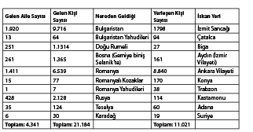
Bazı durumlarda yerleşen kişi sayısının gelen kişi sayısından fazla olmasının sebebi, bir önceki yıl gelip, takip eden senede iskan edilen göçmenlerdir. (Yukarıdaki tabloda Girit’ten gelen ve 1.455’i 1899/1900 senesinde yerleşen ve 658’inin de kısa zamanda yerleşmesi beklenen 2.113 Müslüman yer almamaktadır. Ayrıca, asıl tablo 1898’de gelmiş 68 kişiyi içermektedir ki bu bizim hesapladığımız toplamlarla asıl belgedeki sayılar arasında bir çelişki taşımaktadır.)
Tablo 2259
1301 (1881) senesinde İstanbul’a gelen göçmen sayısı
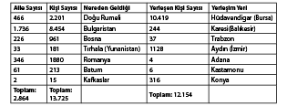
Not: Bu tablodaki toplamlar ile asıl tablo arasındaki tutarsızlıklar bir önceki yıl gelen göçmenlerden kaynaklanmaktadır.
Tablo 3260
13 Mart 1886-12 Mart 1887 arasında İstanbul’a gelen göçmen sayısı
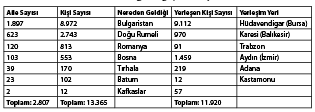
Tablo 4261
13 Mart 1905-12 Mart 1906 arasında İstanbul’a gelen göçmen sayısı
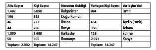
Not: Asıl tablodaki yerleşen kişi sayısı bir önceki yıldan kalan birkaç bin kişiyi içermektedir.
Tablo 5262
13 Mart 1906-12 Mart 1907 arasında İstanbul’a gelen göçmen sayısı
Not: Tablo bir önceki yıldan kalan birkaç bin göçmeni içermektedir.
Tablo 6263
Osmanlı istatistik biriminin tuttuğu aylık ve haftalık olarak gelen ve yerleşim yerine gönderilen göçmen sayılarını belirtir
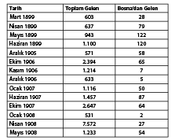
Not: 1905 yılı sonuna kadar Bosnalı göçmenlerin neredeyse sadece Selanik’ten, 1905 sonrası ise Trieste’den ve nadir olarak da başka yerlerden gemiye binerek geldiğini görüyoruz. Çoğunlukla varlıklı kesimden olan ciddi sayıda göçmen ise Belgrad’dan trenle gelmeyi tercih etmiştir.
Sonuç
Tekrar içermeyen haftalık geliş kayıtlarının doğruladığı ve bu tabloların gösterdiği üzere Bosna’dan göç parça parça, ufak gruplar halinde ve devamlı olmuştur. Kafkaslar, Teselya ve Girit’ten gelişlerde yıldan yılda çok fazla dalgalanma olurken Bosna’dan göç, yıllık toplam göçün sadece yüzde üçü ile onu arasında kalarak istikrarlı ve düşük oranda gerçekleşmiştir. Öte yandan, Bulgar yönetiminin göç etmeleri için Müslümanlara uyguladığı ağır baskılar nedeniyle Bulgaristan ve Doğu Rumeli’den göç devamlı surette yüksek olmuştur.
Bosna’dan gerçekleşen göçün toplam büyüklüğü uzun süre tartışma konusu olmuştur. Avusturya-Macaristan yönetimi, 1883 ve 1905 arasında 32.625 Bosnalının göç ettiğini 4.042’sinin geri döndüğünü ve 1906 ve 1918 yılları arasında da 24.000’inin göç ettiğini iddia etmiştir.264Osmanlı göç istatistiklerini kullanarak hazırladığımız hesaplamalar beş yılda (1881, 1887, 1900, 1905-6, 1906-7) toplam 3.499, kabaca yılda 700 Bosnalının Osmanlı devletine göç etmiş olduğunu göstermektedir. Her zaman titizlikle ve dikkatle işlerini yapmayan göçten sorumlu Osmanlı memurları, yalnızca İstanbul’a deniz yoluyla gelen göçmenleri kayıt altına almıştır. Bu sebeple, bu sayının iki katı daha gerçekçi bir sonuç olacaktır. Bu durumda, 1878 ve 1912 yılları arasında atalarının topraklarını terk ederek Osmanlı devletine göç eden toplam Boşnak sayısı 80.000 ile 100.000 arasını geçmeyecek şekilde hesaplanmaktadır. Dubrovnik’teki Osmanlı konsolosunun sadece 1900 senesinde 4.000 aile veya 20.000 kişi ile ifade olunan bir sayıda Bosnalının göç ettiği ve göçle geçen yılların sonunda Müslüman nüfusun üçte bir oranında azaldığı şeklindeki tahminleri ciddi çelişkiler yaratmaktadır.265
Özetle, Osmanlı devletine kırk beş yıllık bir zaman zarfında göç eden Bosna Müslümanlarının sayısı 100.000’i geçmiyordu ve yaklaşık yüzde on ile on beşlik bir kısmı geri dönmüştü. Göç eden diğer Balkan Müslümanları arasında Bosnalı göçmenlerin sayısı (her ülkenin toplam Müslüman nüfuslarına oranla) listenin alt sıralarında yer almaktadır. Memleketine geri dönen göçmen sayısı tablosunda ise Bosnalılar başlardadır.
Bu çalışmadaki hesaplamalar, Karadağ’a bırakılan Bosna topraklarını (Karadağ’dan Osmanlı’ya sınırlıdır) ve Yenipazar’ı kapsamamaktadır. Neticede burada hesaplanan sayılar, Osmanlı’dan göç ve Osmanlı’ya göç çalışmaları kapsamlı bir şekilde çalışıldığında yeniden gözden geçirilebilir. Her halükarda araştırılması gereken, Bosnalı göçmenlerle ilgili net niceliksel büyüklükler değil, eğitim, sosyo-ekonomik konum, yaş gibi niteliksel değerlerdir.266
BÖLÜM 6 / OSMANLI DEVLETİNDE YAHUDİ NÜFUSU HAREKETLERİ, 1862-1914267
Yahudilerin Osmanlı İmparatorluğu topraklarına göçü, esas olarak Filistin’deki Yahudilerin tarihini ele alan çeşitli çalışmaların konusu olagelmiştir Bu çalışmalar, Özellikle Rus Yahudilerinin göçü ve Filistin’de çeşitli Yahudi yerleşimleri kurmaları üzerinedir. Bu nedenle, Filistin’deki modern Yahudi tarihinin büyük ölçüde Avrupa, özellikle de Siyonist harekette ve İsrail’in kurulmasında önemli bir rol oynamış olan Rus ve Polonya Yahudilerinin bakış açısından yazıldığı söylenebilir. Osmanlı İmparatorluğu’nun tarihiyle yakın bağlantısı olan Sefarad Yahudilerinin tarihi, özellikle de Romaniyot, Kırımçak, Buhara, Gürcü ve Kafkasya’daki Dağıstan’ın dağlı Yahudileri (Tatlar) gibi ikincil Yahudi topluluklarınınki büyük ölçüde göz ardı edilmiştir. Bundan dolayı, Ortadoğu Yahudilerinin genel olarak Yahudi tarihindeki ve özellikle de Filistin’in dönüşümünde etkili olan Siyonist hareket içindeki rolleri dikkate alınmamıştır.
Avrupa merkezci bir bakış açısına olan bu eğilim, kısmen bilim adamlarının elindeki mevcut kaynakların yarattığı bir sonuçtur. Başta İngiltere, Rusya, Fransa ve bir dereceye kadar da Avusturya olmak üzere Avrupa devletlerinin Filistin’i, kısmen kendi Yahudilerine himaye sağlayarak Osmanlı topraklarındaki nüfuzlarını yaymak üzere bir üs olarak kullanmış olmaları, çok sayıda diplomatik yazışmayla ve Avrupa Yahudileri üstünde aşırı ölçüde durulmasıyla sonuçlanmıştır. Filistin meselesine ilişkin hakiki bir resmin ortaya çıkması için bu diplomatik yazışmalardan eleştirel bir tutumla yararlanılmalı ve bunlar Osmanlı kaynaklarındaki bilgilerle dengelenmelidir. Örneğin çok sayıdaki İngiliz diplomatik yazışmasından, Filistin’de İngiliz himayesinden yararlanan Yahudilerin, sonunda bölgenin kaderini belirlemiş olan büyük ve hâkim bir topluluğu oluşturdukları sonucu çıkarılabilir.268Gerçekte ise, bilhassa Filistin’le ilgili bir koleksiyondaki belgeler hızlıca gözden geçirildiğinde İngiliz himayesindeki Yahudilerin şaşırtıcı olmakla birlikte oldukça küçük bir topluluk olduğu ortaya çıkar. 1849 yılında kendi istekleriyle başvurup, İngiliz Himayesi Belgesi alan Rusya’lı Yahudi ailelerinin toplam sayısı şöyledir: Kudüs’te 98, Hebron’da 12, Safed’de 161, Tiberia’da 99, toplam 370 aile.269
Bu durum sonraki yıllarda da pek değişmemiştir Bir İngiliz elçilik yetkilisi, 1884 yılında, “Himaye altına alınanlardan çok azı hâlâ hayattadır ama aksi yönde bir talimat olmadığı için aynı soydan gelenler de himaye edilmeye devam edilmiştir. Bildiğim kadarıyla, bugünkü mevkiinde bulunma onuruna sahip olduğum 21 yıldan beri himaye altına alınan yeni bir aile olmamıştır.”270 diye bildirmekteydi. Bütün bunlara bakılırsa, 1884 yılında İngiliz himayesinden yararlanan ve başta Safed ve Tiberia çevresinde toplanmış olan Yahudilerin sayısı 445’e ulaşmaktaydı. 1890 yılına kadar, Önceden İngiliz himayesinde olan Rusya Yahudilerinin çoğu, bu himayeden yararlanmayı bırakmış ve Osmanlı uyruğuna geçmiş bulunuyordu.271
Genel olarak, Avusturya ve Fransa’nın himayesi altındaki Yahudilerin sayıca az oldukları söylenebilir, 20. yüzyılda Rusya, önceden feragat etmiş olduğu kedi yahudilerini temsil etme hakkını yeniden talep ederek Babıâli ile uzun yazışmaların konusu olan az sayıdaki Filistin Yahudisini, İngilitere’nin nüfuz alanından çıkardı.
Osmanlı İmparatorluğu’ndaki Yahudilerin sayısı, yaklaşık 1840’tan 1914’e kadar Kuzey ve Güney Amerika’ya büyük çaplı bir göç olmasına karşın artmıştı. Bu artış, büyük ölçüde komşu ülkelerdeki Yahudilerin Osmanlı İmparatorluğu’na göç etmelerinden kaynaklanmıştı. Bununla birlikte, Rusya Yahudilerinin 1882 yılından sonra Filistin’e göçü üzerinde o kadar fazla durulmuştu ki, diğer toplulukların rolü neredeyse tümüyle gölgede kalmıştı. 1880’li yıllarda Rusya ve Polonya Yahudilerinin göçünde, özellikle de 1884 yılında Hovevei Zion derneklerinin Katoviçe’deki toplantılarında Osmanlı uyruğunu kabul etmelerinden sonra büyük bir artış olduğu doğrudur; Bundan böyle başta Filistin olmak üzere Osmanlı topraklarına göç edip yerleşmekte özgür olacaklardı. Yine de, oldukça çok sayıdaki Rusya Yahudisi, vergi ödememek ve bürokratların keyfi muamelesine maruz kalmamak için yabancı pasaportlarını muhafaza etmeyi tercih etmişlerdi. Osmanlı idaresi 1909 yılında zorunlu askeri yükümlülük kapsamını din ve milliyetten bağımsız olarak genişlettiğinde, Osmanlı uyruğuna geçmiş olan Rusya ve Avusturya Yahudilerinin çoğu askere alınmamak için kendi milliyetlerine geri dönmüşlerdi. Osmanlı uyruğuna geçenlerin yabancı devletler tarafından himaye edilmek istenmeleri, Osmanlıların yabancıların müdahalelerine ve kapitülasyonların iyice suistimal edilebileceğine ilişkin endişelerini daha da artırmıştı. Bu nedenle Osmanlı idaresi Yahudilerin Osmanlı topraklarına göç edip, yerleşmelerine ve bilhassa Filistin’de toprak satın almalarına kısıtlamalar getirmenin gerekli olduğunu düşündü.272
Rusya Yahudilerinin Filistin’e yerleşmelerine yönelik kısıtlamalar yaklaşık 1882 yılından itibaren yavaş yavaş getirilmişti. Buna karşın Kutsal Topraklara yapılan bireysel ziyaretler hiçbir zaman yasaklanmadı.273Bu kısıtlamalar, Avrupalı Yahudilerin Filistin’e göç etmelerine kuşkusuz ket vurmuştur. Joan Peters, yakın tarihli ve çokça eleştirilen kitabında “Türklerin idaresi alandaki” Filistin’in tarihine tam bir bölüm ayırmıştır.274 Osmanlı İdaresinin, Yahudilerin Filistin’e yerleşimine getirdiği kısıtlamalar konusundaki uzun eleştirilerinden sonra Filistin’deki Yahudi nüfusunun 1914 yılına kadar mucizevi bir artış göstermeyi başarmış olduğu gibi şaşırtıcı bir sonuca varmıştı. Gerçekten de Filistin’deki Yahudi nüfusu 1839’dan 1914’e kadar yaklaşık on kat artmıştı. (10.000’in altındaki bir rakamdan yaklaşık 100.000’e çıkmıştı.) Yahudiler, 1860 yılından sonra Kudüs nüfusunun çoğunluğunu oluşturmayı başardılar. Nüfustaki bu büyük arayışın nedenleri, Osmanlı demografisinin dinamiklerinde aranmalıdır. Filistin’in demografik tarihi, İsrailli nüfus bilimcilerin ve başka bilim adamlarının çoğunun aklını kurcalayan başlıca meseledir ve Osmanlı İmparatorluğu’nun genelindeki nüfus hareketleri tarihinden ayrı olarak ele alındığı takdirde anlaşılamayacağı açıktır. Çağdaş Ortadoğu tarihine biçim veren genel Osmanlı tarihini göz ardı eden bir bilim adamı büyük yanılgılara düşebilir.
Kısaca ifade edilecek olursa, Filistin’deki modern Yahudi yerleşimi, Yahudilerin ve Müslümanların Balkanlar’da ve Kırım’daki eski Osmanlı topraklarından ilk göçleri sayesinde oluşan elverişli demografik koşullardan yararlanmıştı.275Osmanlı İmparatorluğu 1774 yılında Kırım’ı kaybetmiş olduğu halde (Rusya 1783 yılında ilhak etmişti) sultanlar kendilerini eski tebaalarının geleceğinden sorumlu tutmaya devam ettiler. Sonuçta, Kırımlı Müslümanlara ve Yahudilere, Osmanlı topraklarına göç etmek istediklerinde, Yahudilerin doğrudan Filistin’e gitmemeleri koşuluyla yardım edilmişti. Rusya’dan göç eden Yahudilerin, Osmanlı Hariciye Nazırlığı tarafından hazırlanan iki listesini ekte örnek olarak verdik. 1890 yılında liste haline getirilen ilk belgede, Kırım’dan göç eden Yahudiler sıralanmakta ve göç eden Yahudilerin “Türkiye’ye” gittikleri belirtilmektedir. Görüldüğü kadarıyla göç etmekte özgür bırakılmışlardı.2761886 yılında derlenen ikinci liste, Rusya’nın çeşitli yerlerinde doğmuş olan ve Filistin’e yerleşmek istedikleri anlaşılan Yahudilerden oluşmaktadır. Pasaportlarındaki tahdit süresinin damgalanarak Filistin’de bulunmalarının otuz günle sınırlandırılmamış olması, daimi ikamet izinlerinin olduğunun bir göstergesi olarak alınmıştı.277
Osmanlı İmparatorluğu’ndaki Yahudilerin 19. yüzyıldaki tarihiyle ilgili bir dizi tutarsızlık ve boşluk bulunmaktadır. Bu durum, o dönemdeki olaylardan pek çok eksik ve mantık dışı sonucun çıkarılmasında kendisini gösterir. Filistin tarihiyle ilgili tek yanlı anlatımlar, daha çok Osmanlı Yahudileri üzerine gerçek bir demografik tarih çalışmasının yapılmamış olmasından kaynaklanmaktadır. Batılı Yahudilerin zihinleri meşgul etmiş olması, Avram Galante’nin konuyla ilgili iyi bilinen bir çalışması olmasına karşın, Osmanlı Yahudilerinin, Yahudi halkının bütün tarihinde kapladığı önemli yeri gölgelemiştir.278Osmanlı Yahudilerinin göçü konusunda yapılacak bir çalışma, söz konusu tarihe yeni ve aydınlatıcı bir ışık tutabilir. Milyonlarca Müslüman gibi pek çok Osmanlı Yahudisi de 1783’ten 1913’e dek Kırım, Kafkaslar ve Balkanlar’dan göç etmek zorunda kalmış ve hâlâ Osmanlı idaresi altında olan topraklara sığınmışlardı. Osmanlı belgeleri, bu Osmanlı Yahudilerinin göçüyle ilgili merak uyandırıcı bilgiler sağlamaktadır. Nüfus hareketleri konusundaki belgeler, bilim adamlarının 19. yüzyıldaki Osmanlı tarihini yeni bir referans çerçevesi içinde yeniden yapılandırıp yazmalarına ve Osmanlı İmparatorluğu’nun parçası olmuş pek çok ulusun tarihine ışık tutmalarına olanak sağlayabilmelidir. Bir başvuru çerçevesi olarak bu, Osmanlı Yahudilerinin tarihine gerçek anlamını kazandıracaktır.
Bu makalede, Yahudilerin Balkanlar’dan Anadolu’ya ve Balkan devletlerinin 1877-1878 yıllarında oluşmasından sonra Suriye-Filistin’e göçlerinin genel bir yaklaşım içinde izlenmesi amaçlanmıştır. 1783 yılında Osmanlı idaresinden ayrılan Kırım Yahudilerinin göçü de sınırlı bir çerçevede olmakla birlikte bu makalede ele alınmaktadır.
Eski Osmanlı Topraklarındaki Osmanlı Yahudileri
Osmanlı nüfusunun modern zamanlardaki başlıca hareketleri üç alanda meydana geldi: Göç ilk olarak Kırım ve Besarabya’dan (Bucak), bu toprakların sırasıyla 1783 ve 1812 yıllarında Rusya karşısında kaybedilmesinden sonra gerçekleşti. Müslümanların bu bölgelerden, hâlâ Osmanlı idaresi altındaki topraklara kitleler halinde göçü, Rus fetihleri zamanında başlamış ve 20. yüzyıla dek sürmüştü. Göçmenlerin ikinci çıkış noktası Kafkaslar’dı. Bu bölgelerdeki Müslümanlar, yaklaşık 1800 yılından, Şeyh Şamil’in önderliğindeki son direnişin de bastırıldığı 1859 yılına dek, atalarının topraklarının neredeyse aralıksız olarak Ruslar tarafından istila ve işgal edilmesine karşı savaştılar. 1862 yılından itibaren çok sayıda Kafkas Müslümanı anayurtlarını terk edip, Osmanlı topraklarına sığınmak zorunda kaldı. Üçüncü göç dalgası 1877/78’de, başta Tuna vilayeti, Bosna-Hersek, eski Sırbistan vilayetinin bir kısmı olmak üzere Kafkaslar’daki başka bölgelerin yanı sıra Osmanlı Balkanlarının çoğu Rusya ve Avusturya karşısında kaybedildiğinde ve bu arada Bulgaristan, Sırbistan, Romanya ve Karadağ bağımsızlıklarını ya da özerkliklerini kazandıklarında başladı. Göçün kaynaklandığı başlıca yerler olan bu bölgelere, Doğu Avrupa Rusya’sındaki Kazan, Orta Asya’daki Buhara, Girit, Oniki Adalar ve Kıbrıs gibi ikincil çıkış noktaları da eklenebilir. Bu bölgelerden göç, imparatorluğun sonuna dek azalmadan sürdü. Türkiye Cumhuriyeti bugüne değin eski Osmanlı topraklarından ve genelde Türki dünyadan gelen göçmenleri kabul etmiştir. Bütün bu bölgelerden 1783-1913 yılları arasında Osmanlı topraklarına gelen göçmenlerin toplam sayısı, 5 ila 7 milyon olarak tahmin edilebilir. Son 15 yıldan beri bu konu üzerine bir araştırma yapmaktayım ve bulgularımı yakın bir gelecekte yayınlayacağım için bu konuyu burada gereğinden fazla açmayacağım.
Müslüman göçmenler arasında çok sayıda Yahudi de vardı. Kırım’dan gelen Yahudiler arasında Kırımçaklar (Türki dilde konuşan Rabbinik Yahudileri) ve Karaylar da vardı. Kafkaslar’dan Dağlı Yahudiler (Tatlar) ve Gürcüstan Yahudileri geldiler. Balkan Yahudi göçmenleri büyük ölçüde Sefarad Yahudilerinden oluşmaktaydı ama aralarında Romaniyotlar ve Eskenaziler de bulunuyordu. Göçmenler arasında çareyi Osmanlı topraklarına gitmekte bulan Yemenli, Buharalı ve Hindistanlı Yahudiler de vardı. Bir bölümü ise Balkan Yahudileri gibi yavaş yavaş imparatorluğun çeperinden merkezine doğru ilerlemekteydi.279Hemen hemen bütün Yahudi cemaatlerinin, 16. yüzyıldan ya da daha da öncesinden beri İstanbul’da zaten şöyle veya böyle temsilcileri olmuştu.280
Osmanlı idaresi Balkanlar’da ve bir dereceye kadar da Kırım’da daha sonra ortaya çıkan devletlerde kalan Yahudileri, sultanın tebaası olarak görüyordu. Osmanlı hükümdarı ve bütün tebaası arasındaki geleneksel bağlara ek olarak sultan ve imparatorluğun gayrimüslim vatandaşları arasında Avrupai anlamda milliyet kavramı hükümet tarafından onaylanıp, 1861/69 milliyet yasasıyla kanunlaştırıldığında yeni bir yasal bağ oluşmuştu. Osmanlı idaresi 19. yüzyılın büyük bölümünde eski Yahudi tebaasıyla eski Müslüman tebaasını eşit konumda tutmayı sürdürmüştü. Eski Osmanlı topraklarında doğmuş ya da yaşamış olan Yahudiler ve Yahudi soyundan gelenler, artakalan Osmanlı topraklarına göç etmekte özgürdü. Bu nedenle, Osmanlı idaresi 1882 yılında Rus Yahudilerinin Filistin’e göçünü sınırlamaya başladığında, Osmanlı Yahudilerine herhangi bir kısıtlama getirmedi. Ancak 1890’lı yılların sonlarında, bir yandan İslamcı milliyetçiliğin artan baskısı altında diğer yandan Siyonist amaçların imparatorluğun kalan topraklarının bütünlüğünü tehdit edebileceği endişesiyle hükümet, Osmanlı Yahudilerinin Filistin dışındaki bölgelere göç edip yerleşmelerini şart koştu.
Osmanlı idaresi, eski Yahudi tebaasıyla başka yollardan da ilgilendi. Romanya’da 1872 yılında semitizm karşıtı gösterilerin başlamasından hemen sonra devreye giren sadrazam, Romanya yetkililerinden Yahudi halkını korumasını istedi. Osmanlı İmparatorluğu, bağımsızlığını yeni kazanmış olan Sırp devletiyle 1887 yılında imzaladığı bir anlaşmada, Sırp hükümetinin Yahudi tebaasına, sultanların idaresi altındayken sahip olduğu hakları tanımasını şart koştu.281Balkanlar’da yeni oluşmuş devletlerde yaşamakta olan Yahudiler de, Osmanlı idaresine olan özel bağlılıklarını göstermeye devam ettiler. Osmanlı Yahudilerinin, İspanya’dan kovulan Yahudilerin Osmanlı İmparatorluğu topraklarına yerleşmelerinin 400. yıldönümünü kutlamak için seçtikleri tarih olan 1892 yılında, Eflak’ta (Romanya) bulunan Yahudi cemaatinin başı, Kalafat, bölgedeki Osmanlı elçisine, cemaatin “İspanya’dan kovulduktan sonra haşmetlilerinin hükümeti tarafından kabul edildikleri ve dört yüzyıl boyunca özgürlükleri kısıtlanmadığı için müteşekkir olduğunu” ifade eden bir mektup gönderdi.2821899 yılında kendisini “Siyonist” olarak tanımlayan Filibe’deki (Bulgaristan’da Polvdiv) Yahudi cemaati, “gelmiş geçmiş en büyük Osmanlı idarecisi” olan II. Abdülhamit’e merhameti ve “Yahudi tebaasına göstermiş olduğu şefkati” için teşekkür etti, sadakat duygularını ve iyi dileklerini dile getirdi.283
Osmanlı Yahudilerinin Göçü Üzerine Bir Çalışma
Osmanlı idaresi, göçmenlerin sayısını, kökenini ve gemilere bindikleri ve vardıkları yerleri gösteren aylık ve yıllık listeler derlemişti. Ne yazık ki eksiklikleri olan bu listelerde göçmenler genelde etnik kökenlerine ya da inançlarına göre sınıflandırılmazlardı. Bununla birlikte, “gelen Müslüman ve Yahudi muhacirler” ya da “Musevi olanlar” gibi pek çok kısa ibare, gelenler arasında açıkça Yahudilerin de bulunduğunu göstermektedir. İngiliz konsolosluk raporlarında da yer yer Müslümanlarla birlikte Balkanlar’dan göç eden Yahudilere gönderme yapılmaktadır. Bunun yanı sıra Balkanlar’dan gelen göçmenler arasındaki Yahudiler hakkında bazı kesin bilgiler veren resmi Osmanlı göçmen listeleri vardır. Bir listede özellikle 13 Mart 1898 ve 12 Mart 1899 tarihleri arasında toplam 13 Yahudi ailenin (64 kişi) gemiyle Bulgaristan’dan İstanbul’a geldiği görülmektedir. Aynı listede Balkanlar’dan gelen toplam 12 Yahudi ailesinin (94 kişi), İstanbul’un batısındaki Çatalca’ya yerleşmiş oldukları görülmektedir; Romanya’dan 7 Yahudi daha gelmiş ve toplam 38 Yahudi göçmen bu dönemde Trabzon’a yerleşmişti. 14 Temmuz 1893 tarihli bir başka liste, hicri takvime göre 1310 yılında (Temmuz 1892-Temmuz 1893) 849 Yahudinin eski Osmanlı tebaası olarak Aydın vilayetine yerleştirilmiş olduğunu ve birçoğunun da İstanbul’da, iskân edilecekleri yerlere nakledilmeyi beklediğini kaydetmektedir.284
Bu dönemde eski Osmanlı tebaasından olmayan Rusya Yahudileri, gitmek istedikleri ilk yer olan Filistin’e yerleşmekten onları alıkoymayı amaçlayan sıkı koşullara uymak zorunda bırakılmışlardı. Göç etmek isteyenler, Osmanlı ve Osmanlı olmayan Yahudilere ayrı muamele yapıldığının farkındaydılar. Devletten özel bir uygulama talep edildiğinde, Osmanlı idaresinin eski tebaasına karşı yükümlülüğünü yerine getirmesi isteniyordu. Bu nedenle 1882 yılında bir grup Romanya Yahudisi (Rus kökenli olabilirler) Babıâli’den, Filistin’e göç edip yerleşme izni talebinde bulunduklarında, sultanın hükümranlığı altındaki bir ülkede yaşamış olduklarını vurguladılar ve önceki konumlarının Osmanlı topraklarında istedikleri bir bölgeye yerleşmekte özgür olmalarına hak tanıdığını iddia ettiler. Bir Sefarad Yahudisi olan sözcüleri De Castro, Osmanlı idaresinin, eski tebaasının ya da eski Osmanlı topraklarından gelenlerin cefası karşısında daha önceki örneklerinde de görüldüğü gibi kayıtsız kalamayacağını iddia etti. İngilizlerin, 1882 yılında Mısır’ı işgal etmesi, gayrimüslimlere karşı tepki yaratmış olmasaydı, De Castro bu savını kabul ettirmekte başarılı da olabilirdi.285Bu grubun geri çevrilmesinin bir başka nedeni de açıkça Filistin’e gitmeyi istemiş olmaları olabilir. Gerçekten de, Yahudilerin göç izni almakta daha başarılı oldukları durumlar olmuştu. Belgelerde bilhassa Dobrucalı 400 Yahudi ailesinin etkileyici bir öyküsü anlatılmaktadır. Başlangıçta Dobruca’ya, Karadeniz’de Dinyester ırmağının ağzında kurulmuş olan Besarabya kenti Akkerman’dan, kentlerini 1812 yılında Ruslar karşısında kaybettikten sonra gelmişlerdi. Bu Akkerman Yahudileri, Dobruca 1878 yılında Romanya’ya verilinceye dek Osmanlı idaresinin yetki alanı içinde yaşamışlardı. Daha sonra 1887 yılında, Romanya idaresinin kendilerine yaptığı uygulamadan hoşnut olmayan 400 aile, Osmanlı himayesine geçmek istedi. Osmanlı idaresi, bu ailelerin topraklarına göç etmesine izin vermekle kalmadı, özel olarak onlara yardım etti ve Bursa’da yeniden yerleşme masraflarını ödemeyi üstlendi.286
Bu nedenle, gelişigüzel, seçilmiş Osmanlı belgelerinden alınan bu bilgi bile, küçük bir kasabanın nüfusu kadar olan yaklaşık 4.000 Yahudinin, kısa süre içinde Balkanlar’dan gelmiş olduğunu ve hükümet tarafından Osmanlı devletinin çeşitli bölgelerine yerleştirildiğini göstermektedir. Hükümetin, göçmenleri yeniden yerleştirirken Aydın ve Bursa bölgelerine öncelik verdiğine işaret eden göstergeler vardır.
1882 yılında Babıâli, Osmanlı vatandaşlığını koşulsuz olarak kabul etmiş olan Rusya Yahudilerinin, Filistin dışında istedikleri bir yere, 100 ila 150 aileyi geçmeyen topluluklar halinde yerleşmelerine izin veren bir talimat yayımladı. Bununla birlikte, bu izne zamanla bir sınırlama getirildi. 1891 yılında, Rusya Yahudilerinin göç etmesi kesin olarak yasaklanmıştı. Yine de, bu kısıtlamalar yürürlüğe girmeden önce göç etmiş olanlar bundan etkilenmediler. Bu nedenle, ilk önce Safed’e yerleşmiş olan 440 Rusya Yahudisi, 1891 yılının Temmuz ayında Hayfa’ya geçerek Osmanlı vatandaşlığı için başvurduğunda, kalmalarına ve vatandaşlık işlemlerini tamamlamalarına izin verildi.287
Osmanlı idaresi 1890 yılından sonra bile, Osmanlı vatandaşlığını sonraki idare altındayken de korumuş olan eski Osmanlı Yahudilerinin lehine bir uygulamayı sürdürdü. Ocak 1892 tarihli resmi bir yazışma, Besarabya ve Odesalı bazı Yahudilerin İstanbul’a gelmiş olduklarını göstermektedir. Osmanlı idaresi, Besarabyalı Yahudilerin ulaşım ve başlangıç masraflarını karşılayarak, imparatorluğun çeşitli yerlerine yerleştirilmeleri yükümlülüğünü üstlendi. Ancak, Rus pasaportu taşıyan Odesa Yahudilerinden ülkeyi terk etmelerini istedi.288Diğer yandan, Haziran 1892’de Rusya’dan gelen toplam 1.293 Yahudi, göçmen olarak (yani yeni gelenlere tanınan ayrıcalıklardan yararlanarak) yerleştirilmek üzere Selanik, Kosova ve Manastır’a gönderildi.289Sonraki yılın 5 Ağustos’una gelindiğinde, ilk gelen göçmenler arasında bulunan Rusya Yahudisi 42 kadın, yeni doğmuş bebekleriyle birlikte hâlâ İstanbul’da bulunuyordu.290
Osmanlı idaresi sonunda, Siyonistlerin ulusal bir devlet kurma planlarını boşa çıkarmak için Yahudilerin Filistin’de yeni yerleşimler kurmalarını yasakladı. 20 Rebiyülevvel 1317 (29 Temmuz 1899) tarihli bir düzenleme, bütün Osmanlı ve Osmanlı olmayan Yahudilere, Kutsal Topraklara seyahat gerekçelerini açıklayan bir tezkere ya da pasaport bulundurma yükümlülüğünü getiriyordu. Tezkere sahibi kişi belgeyi, karaya çıktığı limandaki görevlilere, üç ay geçerli olan seyahat iznini almak için göstermek zorundaydı. Bu sürenin sonunda tezkere sahibi kişi, ülkeden çıkmak zorundaydı ve ülkeyi terk etmediği takdirde zorla çıkarılabilecekti.291 Bu talimatın büyük bölümü 1907 yılında, sultan tarafından iptal edildi. Osmanlı Yahudilerinin yapmış oldukları çeşitli gösteriler bunda bir dereceye kadar etkili olmuştu.
Balkan Yahudilerinin Toplam Sayısı
Buraya kadar öncelikle, milyonlarca Müslümanın yanı sıra çok sayıda Yahudinin de savaşlar ve 1863-1878 yılları arasındaki zorunlu sürgünler sırasında mülteci olarak Osmanlı topraklarına göç ettiğini ve aynı zamanda eski Osmanlı Yahudilerinin de tıpkı Müslümanlar ve bazı Hristiyanlar gibi 20. yüzyılda da Osmanlı topraklarına göç etmeye devam ettiklerini göstermeye çalıştım. Şimdi de söz konusu bölgelerdeki Yahudi nüfusunun büyüklüğü konusunu ele alacağım.
Balkanlardaki Yahudilerin 1860-1914 yılları arasındaki dönemde toplam sayıları büyük değişiklik gösterdi. 1878 yılında Sırbistan, Romanya ve Bulgaristan’ı terk eden Yahudiler, Anadolu, Suriye ve Filistin’e olduğu kadar Balkanlar’da son kalan Osmanlı vilayetlerine de göç ettiler. Osmanlı İmparatorluğu’nun tam vatandaşı oldukları ve mutlak seyahat özgürlüğünden yararlandıkları için yer değiştirirlerken kayıtlara geçmemişlerdi. (1899’da Filistin’e daimi olarak yerleşmelerine geçici bir yasak getirilinceye kadar.) Dolayısıyla Balkanlar’da yaşayan Yahudilerin toplam sayısı, oldukça gerçekçi rakamlar veren 1882-1893 Osmanlı sayımına dek doğru olarak belirlenemez. Daha önceki 1831 sayımı, Rumeli ve Silistre eyaletlerinde yaşayan Yahudilerin toplam sayısının 10.133 erkekten oluştuğunu göstermektedir. Yoğun olarak bulundukları Selanik ve Edirne’de 7.700 ve Manastır’da 1.163 kişiydiler. Bu noksan bir sayım olduğu için rakamların düşük olduğu göz önünde bulundurulmalıdır. Üst düzey bir Osmanlı devlet adamı olan Selahaddin Bey, A. Ubicini’nin rakamlarından (muhtemelen kayıtları artık mevcut olmayan 1844 Osmanlı sayımından) yararlanarak 1867 yılında Yahudilerin sayısını, Avrupa’da 70.000 ve Asya’da 80.000 olarak vermişti.292Bu sayının da çok düşük olduğu açıktır ve bütün Romanya Yahudilerinin hariç tutulmuş olması bir hatadır. Öncü Fransız coğrafyacı Elisée Reclus, ulaşabildiği hemen her kaynaktan yararlanarak 1877/78 Türk-Rus Savaşı’nın öncesinde Türkiye Avrupa’sında yaşayan Yahudilerin sayısının 400.000 olduğu tahmininde bulunmuştur. Eflak ve Boğdan’ı kapsayan bu rakamda İstanbul hariç tutulmuştu.293
Diğer yandan 1882-1893’teki Osmanlı sayım sonuçları, imparatorluktaki toplam Yahudi nüfusunun kabaca 184.000 kişiden (olağan noksan sayımı gidermek için gerekli istatistiksel düzeltmeler yapıldığı takdirde bu sayı yaklaşık 220.000’e çıkar) oluştuğunu göstermektedir. Bu Yahudi nüfusunun 13.717’si Edirne’de, 37.237’si Selanik’te, 5.072’si Manastır’da (Bitola), 3.677’si Yarıya’da ve 1.706’sı Kosova’da sayılmıştı. Dolayısıyla bu rakamlara göre toplam 61.409 Yahudi (toplam rakamda düzeltme yapıldığı takdirde kabaca 70.000) Balkanlar’da yaşamaktaydı. Bununla birlikte Sırbistan, Bulgaristan, Dobruca ve Romanya’nın bu toplam rakama dahil edilmemiş olduklarını göz önünde bulundurmak gerekir. Aslında bu sayı, imparatorluğun en zengin ve nüfus yoğunluğu en yüksek bölgelerinden biri olan Tuna eyaletinin nüfusunu da içermiyordu.
1866 yılında sadece Tuna vilayetinde (sonradan Yahudi göçünün kaynaklandığı başlıca yer olmuştu) yapılan Osmanlı sayımı, 1866’da bu bölgede çok sayıda Yahudinin yaşadığını göstermektedir. Bu sayımın tam metni, Bulgar ulusal kütüphanesindedir ve yabancılar bu belgeden yararlanamamaktadır. Bununla birlikte, bu sayımla ilgili belgeyi görebilmiş olan Profesör Nicolai Todorov, vilayetteki vergi yükümlüsü toplam Yahudi nüfusunu 5.071 kişi ya da vergi yükümlülerinin toplam sayısının kabaca % 3’ü olarak tahmin etmişti.294Diğer yandan, 1866 sayımının bir özetini içeren 1874 yılındaki Tuna Vilayet Yıllığı’nda (salname) Tuna vilayetindeki erkek nüfusun 1.021.309 olduğu tahmin ediliyordu. Dolayısıyla vergi yükümlüsü nüfusun yüzdesi, Tuna vilayetinin toplam nüfusuna uyarlandığı takdirde, vilayette 1877 yılındaki erkek ve kadın toplam Yahudi nüfusu 62.000’den düşük olmamaktadır. Osmanlı sayımlarında noksan sayımın olağan olduğu göz önünde bulundurulursa, Tuna vilayetindeki Yahudilerin sayısı pekâlâ 75,000 kadar yüksek bir rakam olabilmektedir.295
1878 yılında Avusturya tarafından işgal edilen Bosna-Hersek’te yaşayan Osmanlı Yahudilerinin toplam sayısının 1879’da 3,428, 1885’te 5.805,1895’te 8.212 ve fakat 1910’da 4.868’den ibaret olduğu söylenmekteydi.296Bu bağlamda, Avusturya’dan Osmanlı İmparatorluğu’na 19. yüzyılda kesintisiz bir Yahudi akışı olduğunun üstünde durulması gerekir. Viyana’dan İstanbul’a uzanan ana yol üzerindeki Vidin, Sofya, Filibe, Pazarcık ve Edirne gibi kentler, Yahudilerin başlıca yerleşim merkezleri olmuştu. Sonuçta, 1877 yılında Osmanlı idaresi altındaki Balkan vilayetlerinin Yahudi nüfusunun en azından 170.000 ila 180.000 olduğu rahatlıkla söylenebilir. Bu nüfusun yarısı, 1877-1878 savaşları sırasında yabancı işgali alanda kalmış ve bunun sonucunda göçe yönelmiştir.
1906-1907 Osmanlı sayımı, Selanik’teki Yahudilerin sayısını 52.395 (bu rakam, kentin 1914’teki Yahudi nüfusunun 76.000 olarak tahmin edildiği diğer kaynaklarla da uygunluk içindedir) olarak tahmin etmektedir. Ayrıca Yahudilerin 23.839’u Edirne’de, 5.459’u Manastır’da (Bitola), 3.385’i Yanya’da ve 1.668’i Kosova’da yaşamaktaydı. (Rakamların hiçbiri düzeltilmemiştir). Dolayısıyla 1906-1907’de hâlâ Osmanlı idaresi altında olan Balkan vilayetlerindeki Osmanlı Yahudilerinin toplam sayısının kabaca 100.000 (düzeltilmiştir) olduğu görülmektedir ve bu rakam 1882-1893 sayımından itibaren % 20 oranında bir artış olduğunu gösterir. Bu artış, Balkanlar’da imparatorluktan ayrı düşmüş olan bölgelerden kaynaklanan göçe bağlanabilir. Aynı dönemde, hızla gelişmekte olan liman kenti İzmir’i de kapsayan Aydın vilayetindeki Yahudi nüfusu, 22.153’ten 57.218’e (düzeltilmemiştir) fırlamıştı; ancak, daha sonra 1914’te 35,041’e düşmüştür. Çeşitli sayımlara göre İstanbul’daki Yahudi nüfusu, yaklaşık 1865’e dek 25.000 civarındadır; bu nüfus 1906-1907’de 57.860’a (düzeltildiği takdirde 63.000) çıkmış, daha sonra 1914’te yaklaşık 57.000 olacak şekilde biraz düşmüştür. Anadolu’daki bölgelerde, 1882 yılından sonra önemli bir artışın olduğu bir dönemin ardından 1906-1907 ve 1914 yılları arasında Yahudi nüfusundaki bu düşüş (özellikle Aydın vilayetinde dikkat çekiciydi) Balkan Yahudilerinin Anadolu’dan Filistin de dahil olmak üzere başka yerlere göç etmiş olmalarına bağlanabilir.
Filistin’deki Osmanlı Yahudilerinin Rolü
Osmanlı kökenli Yahudi nüfusu, Filistin’de Yahudi yerleşimlerinin kurulmasında önemli bir insan kaynağı oldu. 1880 yılına dek Filistin’in Yahudi nüfusunun çoğunluğunu oluşturdular. Daha çok Kudüs çevresinde toplanma eğilimindeydiler. Avrupalı Yahudilerle birlikte 1840’lı yıllardaki en büyük dini cemaati oluşturmuşlar ve 1860 yılından sonra da kentte (Kudüs kazası ya da mutasarrıflığı hariç) çoğunluğu sağlamışlardı. Tüm vatandaşlık haklarından yararlanan Osmanlı Yahudileri, bölgede dükkân ve toprak satın almışlardı. Kısa sürede ekonomik güç kazanmalarını sağlayan finans işleriyle (çoğunlukla tefecilik) uğraşmışlardı. İngiliz elçilik kayıtlarında, zengin olan ancak daha sonra yabancı himayeden yararlanmak üzere İngiliz uyruğuna geçmenin yollarını araştıran “Oryantal” (yani Osmanlı) Yahudi sınıfından söz edilmektedir.297
Osmanlı Yahudileri Rusya, Romanya ve diğer ülkelerdeki kardeşlerinin davalarını savunmakta giderek daha etkin bir rol oynadılar ve çoğu zaman Osmanlı yetkilileriyle onlar arasında aracılık yaparak bunların da yerleşme izni almalarını sağladılar. Ayrıca iş ve diğer gerekli bağlantılarını kurmada da onlara yardımcı oldular. Dolayısıyla Rusya’dan gelen Yahudiler İstanbul’da karaya çıktıklarında, Osmanlı dindaşlarını kendilerine yardıma hazır bulmuşlardı. 1880’li yılların sonuna gelindiğinde, Eşkenaziler ve Sefaradlar arasındaki çekişme, daha temelli bir Yahudi siyasal kimliği oluşmaya başladığından yatışmış görünüyordu. Aaron Eisenberg’in girişimleri bu bağlamda bir anlam kazanmaktadır.
Bir Rusya göçmeni olan ve 1886 yılında Osmanlı vatandaşlığına hak kazanmış olan Eisenberg, İstanbul çevresinde ve Anadolu’da Yahudi göçmen kolonileri kurmayı teklif etmişti. Bu koloniler, Filistin’e yerleşmek üzere yola çıkmış olan Yahudi göçmenler için birer geçiş noktası olacaktı. Osmanlı idaresini ve kamuoyunu etkilemekte de bu noktalardan yararlanılacaktı. 1905’te Neta’im (yerleşim yerleri) adında bir şirket kuruldu ve 1.125.000 franklık sermayesi olan bir Osmanlı şirketi olarak kayıtlara geçti. Şirketin merkez ofisindeki Elsenberg’in damadı Gad Grumberg, daimi olarak İstanbul’da ikamet etmekteydi. Filistin’de dört yerleşim merkezi geliştirdi ve 1908 yılından sonra Rusya’dan ve Güney Avrupa’dan gelen göçmenler kapsamlı olarak bu düzenlemeden yararlandı. Nitekim, göçmenler doğrudan Filistin’e gitmeyi yeğlediklerinden geçici yerleşim yerleri kurma hedefine ulaşamadı.
Bununla birlikte bu yöndeki çabaları, Filistin’e göç eden Yahudiler için İstanbul, Selanik, İzmir ve diğer kentleri birer geçiş noktası yapmaya yönelik uygulamayı kurumsallaştırma doğrultusunda resmi bir girişimi temsil eder. 1880’li yıllarda başlayan bu uygulama, Birinci Dünya Savaşı’na dek sürdü.298
Sonuçlar
Sonuç olarak, birkaç nokta yinelenmelidir.
Osmanlı idaresi, 19. yüzyılda topraklarını yitirinceye dek Sultanın egemenliği altındaki topraklarda yaşamış olan Osmanlı Yahudilerine Müslümanlarla eşit davranmıştı. 1899 yılında Filistin’e yerleşmeleri yasaklanıncaya kadar genelde Osmanlı topraklarına göç etmekte ve yerleşmekte özgür bırakılmışlardı. İlk önce, Balkan Yahudileri göç ettiler ve hâlâ Osmanlı idaresi altında olan Balkan topraklarında yaşayan soydaşlarının yanına yerleştiler. Böylece Rusya, Romanya ve Macaristan kadar Sırbistan ve Bulgaristan’dan da gelen Yahudiler Makedonya’da ve Trakya’daki çeşitli kentlere ve ardından da Anadolu’ya göç ettiler. Aydın vilayetinin Yahudi nüfusundaki hızlı artış (1882-1893 yılları arasında ve 1907-1907 sayımında üç katına çıkmıştı) başta Osmanlı Yahudilerinin imparatorluğun çeperinden merkeze olan göçünden kaynaklanmaktaydı.
Osmanlı İmparatorluğu topraklarına göç etmiş olan Yahudilerin 1862-1914 yılları arasındaki toplam sayısı, yaklaşık 120.000 olarak tahmin edilebilir.
Osmanlı İmparatorluğu’ndaki nüfus hareketleri, dünyanın her yerindeki benzerleri gibi siyasal sonuçlar doğurdu. 1890 yılında Osmanlı Yahudileri, özellikle de Balkanlar’dan gelenler, milliyetçi ideolojilerin Osmanlı İmparatorluğu’nda yayılmasından dolayı belli bir düzeyde siyasal bilince sahip kimselerdi. Bu durum, sonunda bunlardan bir bölümünün Siyonist düşünceleri benimsemesine yol açtı. Osmanlı Yahudileri arasında Siyonizmin tutunmasında, Türk ve Arap milliyetçiliğini doğuran yükselen Müslüman kimliği kadar Balkan devletlerindeki şoven milliyetçilik de etkili olmuş olabilir. Sonunda bunlar Osmanlı idaresine, göçün kısıtlanmaması ve Siyonist taleplerin tanınması için baskı yapmak üzere Eşkenazi Yahudilerle birleştiler, özellikle de Selanikli Sefarad Yahudileri, İttihat ve Terakki Partisi’nin Osmanlı hükümetini Siyonizmin yasal bir ideoloji olduğunu kabul etmeye ikna etme girişiminde (girişim başarısız olmuştu) bulunmasında önemli bir rol oynadılar.
Osmanlı Yahudilerinin Balkânlar’dan göç ederek Anadolu ve Filistin’e yerleşmeleri ve buralardaki etkinlikleri, Kudüs’ün vali muavini Asım Bey tarafından İstanbul’a gönderilen gizli bir mektupta açıkça belirtilmiştir. 20 Ocak 1891 tarihli belgede şöyle denmektedir:
“Dünyanın her tarafındaki Yahudiler, öldüklerinde Kutsal Topraklarda gömülmek için yaşlılıklarında Filistin’e göç etmek gibi eski bir geleneği yerine getirirler. Son 15 ila 20 yıl boyunca bu göç, Rusya ve Almanya’dan ayrılmak zorunda kalan Yahudilerin Safed, Tiberia ve özellikle de Kudüs çevresine göç etmeye başlamalarından dolayı büyük ölçüde yoğunluk kazandı. Bilhassa Osmanlı günlerinde Sırbistan’da huzur ve rahat içinde yaşamış olan Yahudiler İslam takvimine göre ‘93 savaşından (miladi 1877-1878) sonra pek acımasız bir uygulamaya maruz kalmışlardı. Bu Yahudilerin büyük bir bölümü imparatorluğun bu tarafına geldiler ve Kudüs’te büyük bir yerleşim yeri kurdular. İnsan, bu göç devam ettiği takdirde gelecekte siyasal sorunlar doğuracağını ve bu sorunların daha bugünden yaşanmakta olduğunu ve saymakla bitmeyeceğini düşünmeden edemiyor.299 Kudüs’ün toplam nüfusu yaklaşık 45.000 kişiden oluşmaktadır. Müslüman ve Hristiyan nüfus 15.000’den azdır. Nüfusun geri kalanı yani, 30.000’den fazlası, çoğu yabancı pasaport sahibi olan Avrupalı Yahudilerden oluşmaktadır. Çok uzak bir geleceği düşünmeye gerek yok. Yukarda sözü edilen durumun on yıllık sonuçları Kudüs’te, Hayfa’da ve Hebron’da görülebilmektedir. Buralardaki binaların ve toprağın büyük bölümü Yahudilerin eline geçmiştir. Ticaret, el sanatları ve kısmen tarım onlar tarafından yürütülmektedir ve kamu zenginliği Yahudilere geçmiştir.”300
Filistin’deki en yetkin Osmanlı devlet adamının inceleme konusu olan dönemdeki kişisel gözlemlerine dayanan bu belge, bu makalede geliştirilen düşünceleri tümüyle desteklemektedir.
Osmanlı Yahudileri, Filistin’deki bütün Yahudi yerleşimlerine yasaklamanın getirildiği tek bir dönem dışında, imparatorluk içinde istedikleri yere yerleşmekte özgür olmuşlardı. Kudüs’ün Yahudi nüfusundaki büyük artış ve bu nüfusun ekonomik açıdan giderek güçlenmesi, büyük ölçüde Balkanlardaki eski Osmanlı topraklarından kaynaklanan göçe bağlanabilir. Osmanlı Yahudilerinin tarihine ve İmparatorluk içindeki özel konumlarına ilişkin kapsamlı bir çalışmanın yapılması gerekmektedir. Böyle bir çalışma modern Yahudi tarihinin pek çok alanına ışık tutacaklar.
BÖLÜM 7 / OSMANLI YÖNETİMİ ALTINDA FİLİSTİN’E YAHUDİ GÖÇÜ, İSKAN VE NÜFUS ARTIŞI ÜZERİNE BAZI GÖZLEMLER301
Bu çalışma, aşağı yukarı 1850 ile 1914 yılları arasını kapsayan dönemde Osmanlı yönetimindeki Filistin’in nüfus yapısı üzerine bazı gözlemleri sunmak amacındadır. Osmanlı nüfus kayıtları ve 1881/2-1893 nüfus sayımı hakkında yayımlamış olduğum bir makalemde302 konu ile alakalı olarak şu fikirler ön plana çıkmakta idi: Filistin’de demografik değişim, Osmanlı devletinin tamamındaki sosyo-ekonomik ve demografik dönüşüm bağlamında incelenmelidir; 19. yüzyılın ikinci yarısında zirai ürünlere talebin artması ve bölgedeki gıda işleme tesislerinin gelişiminin etkisiyle Filistin hızlı bir ekonomik büyüme geçirmiştir; bu ekonomik büyüme Yahudi göçmenlerin getirdiği sermayeden çok yerel kaynaklı yatırımlarla gerçekleşmiştir; Yahudi göçü sadece dış kaynaklı değildi, imparatorluk sınırları dahilinde seyahat özgürlüğüne sahip Osmanlı Yahudileri de bölgeye göç etmiştir; Yahudi yerleşimi Ürdün nehrinin Batı Yakası’ndaki (Batı Şeria) birkaç bölge ile sınırlı kalmış, Doğu Yakası’na çok az Yahudi yerleşmiştir.
19. yüzyılın ikinci yarısında ve 20. yüzyıl başında Osmanlı İmparatorluğu’nun siyasi kaderini şekillendiren ekonomik ve sosyo-demografik güçlerin doğru bir şekilde anlaşılması, Filistin-İsrail meselesinin demografik yönünü kavrama konusunda önem arz etmektedir. Bu dönemde, kapitalist anlamda piyasa odaklı bir ekonomik düzenin başlaması, göç ve iskan hareketlerinden kaynaklanan demografik değişimler, imparatorluk içinde belirli bir çoğunluğu teşkil etmeyen toplulukları milliyetçi hedefleri olan siyasi gruplara dönüştürdü. Bir zamanlar Osmanlı İmparatorluğu’nun bir parçası olan Orta Doğu, Kuzey Afrika ve Balkanlar’ın günümüz devletleri bu dönüşüm ile vücuda gelmiştir. Nüfus hareketleri bu süreçte hızlandırıcı bir rol oynadığından Osmanlı nüfus istatistiklerinin derinlemesine çalışılması, Filistin ve diğer eski Osmanlı bölgelerinde ulus inşasının dinamiklerini kavramada çok esaslı bir öneme sahiptir.
Osmanlı demografik verilerinin önemini bir şekilde sezmiş, ancak bu verileri Filistin’de daha önce görülmemiş Arap ve Yahudi nüfus artışı hakkında yargılarda bulunmadan önce derinlemesine incelemeye tabi tutmamış yazarlar vardır. Filistin’in tarihsel demografisi, bazı partizan akademisyenlerin Yahudilerin 19. yüzyılda geldikleri Filistin’in tarımdan ve yaşamdan yoksun bir toprak olduğunu ve bölgenin yerli ahalisinin ancak Yahudilerin getirdiği sermaye zenginliğinden etkilendikten sonra bariz bir çoğunluk oluşturduklarını iddia etmesiyle siyasi bir mesele haline gelmiştir.
Kudus ve Safed’de, Osmanlı İmparatorluğu’nun tamamında olduğu gibi her zaman az denebilecek bir Yahudi varlığı olmuştur; Yahudiler nüfusun yüzde üçünü oluşturuyordu. Osmanlı döneminde Filistin’e ilk Yahudi göçleri, Arapların yerlerini terk etmelerine sebep olmamıştır. Aksine, hem Arap hem Yahudi nüfusları, aynı anda göç kaynaklı büyüme yaşamıştır. Yahudiler, Rusya’dan ve 19. yüzyıl sonunda Filistin’e yerleşim sınırlandırılıncaya kadar serbest dolaşım hakkına sahip oldukları Osmanlı İmparatorluğu’nun değişik bölgelerinden geliyorlardı. Arap göçü ise köylerden ve yerleşik kabile bölgelerinden ekonomik büyümenin yaşandığı şehirlere ve kasabalara gelmek şeklinde gerçekleşiyordu. Cezayir gibi başka Arap bölgelerinden Filistin’e düzenli olmayan ve ufak boyutlu göçler, bağımsız çeşitli gelişmelerden kaynaklı gerçekleşiyordu. Arap olmayan Müslümanların bölgeye göçleri de bu şekilde olmuştur. Günümüze kadar etnik kimliklerini korumuş olan Çerkezlerin durumu bu kapsamdadır.
Filistin dahil Osmanlı Suriye’sindeki ekonomik, demografik değişimler ve Yahudi göçü, imparatorluğun tamamında gerçekleşmekte olan büyük değişimlerle alakalı idi. Osmanlı potasından ulus devletlerin ortaya çıkışı, Batı’da Roma İmparatorluğu’nun çöküşünden sonra meydana gelen sürece benzer. Bu süreçte, evrensel bir imparatorluğun (daha sonra da Roma Kilisesi’nin) hâkimiyeti altında yaşayan etnik gruplar ve kabileler, kendilerini çeşitli ideolojik meşruiyetlerle ve değişik liderler önderliğinde siyasi oluşumlara dönüştürdüler. Osmanlı’da bu süreç kabaca altmış, yetmiş yıla sıkışmıştır. Osmanlı devleti, dokuzuncu yüzyıldan sonra Bizans ismiyle anılan Doğu Roma İmparatorluğu’nun coğrafi ve siyasi anlamda halefi idi. Bunun neticesi olarak, Roma İmparatorluğu’nun doğudaki heterojen etnik-dini yapısı Bizans’tan olduğu gibi alınmış ve Osmanlı İmparatorluğu (1286-1918) boyunca devam etmiştir. Öte yandan, 18. yüzyıla gelindiğinde Osmanlı yönetimi altındaki çok sayıdaki etnik ve dini grup aşama aşama sosyal-yapısal dönüşüm geçirmeye başlamıştır. Eski cemaat düzeni yok olmuş ve sonunda dini-etnik kimlik ve sınıf dayanışması temelli ulusal bilinç gelişmiştir. İmparatorluk dâhilindeki göç sebepli demografik değişimler ve gelişen piyasa ekonomisi, bu etnik-dini yeni düzenin ve yükselen ulusal bilincin başlıca faktörleridir.
Kapitalist piyasa ekonomisine geçişle birlikte imparatorluğun her yerindeki ekilmemiş araziler, tarımsal üretim alanına dönüştürülmüştür. Buna rağmen, çok büyük araziler ekilmemiş olarak kalmıştır. Bunun sebebi, kısmen iltizam sisteminin yetersizliğidir (yeni arazi kanunu 1858’de kabul edilmiştir). Esas sebep ise savaşlar, salgın hastalıklar ve kötü beslenme ile kırılmış Müslüman nüfusun azlığıdır.
Anadolu ve Balkanlar’da Müslüman nüfusun hızla azalması üzerine vergi gelirlerindeki ani düşüşten kaygılanan Osmanlı yönetimi, 1857’de Batı dünyasındaki gazetelerde insanları Osmanlı topraklarına gelip yerleşmeye davet eden ilanlar verdi. Teşvik olarak çeşitli ayrıcalıklar sözü verilen, aralarında Rusya Yahudilerinin de olduğu kayda değer sayıdaki olası göçmen, Filistin’e yerleşme konusunda istekliydi. Gelmesi beklenen bu göçmenlerden önemli sayıda bir kesim harekete geçmeden önce, Rusya’nın topraklarını terk etmek zorunda bıraktığı Kafkas Müslümanlarının büyük göçü başladı (1862). Bu tarihten sonra Osmanlı nüfusu, kendini muhacirlerle yenilemiştir. Piyasa talepleri ticarileşen tarımla karşılanmış ve tarımsal üretimi kontrol eden kesim gittikçe zenginleşmiştir. Yeni gelir dağılımı biçimleri, bu zamana kadar hiç görülmemiş bir dizi sınıf farklılıkları ve çatışmalarını doğurmuştur.
1870’lere gelindiğinde tarımsal dönüşüm ve toplumsal sonuçları, Filistin’de görülmeye başlanmış ve 1880’lerdeki Yahudi yerleşim dalgasından çok önce bir nüfus artışını doğurmuştur. Tarım devrimi, burada kısa zamanda kendi arazisinde ikamet etmeyen bir toprak sahipleri zümresinin doğmasına ve buna bağlı olarak topraksız bir köylü sınıfının oraya çıkmasına neden oldu. 1858 Arazi Kanunu’na şüpheyle yaklaşan Arap köylüleri, devletin bu düzenlemeyi daha fazla vergi almak, hatta topraklarına el koymak için çıkardığını düşünüyordu ve yeni yasanın gerektirdiği şekilde topraklarını kendi adlarına değil şehirli akrabalarının adına kaydettirdiler. Hakkaniyet anlamında çok da titiz olmayan şehirliler, bu hareketi teşvik etti ve yeni Arazi Kanunu’nun miri araziyi (devlete ait olan topraklar) üç yıl boyunca ekmeyen köylülerin kullanım haklarının ellerinden alınmasına dair olan kısmını (mahlul maddesi) kendi çıkarlarına kullandılar. Böylece, binlerce dönüm arazi Hayfa, Yafa, Gazze, Ramallah ve Nablus’tan birkaç düzine ailenin eline hiçbir bedel ödenmeden geçmiş oldu. Celile olarak bilinen bölgenin topraklarının yüzde sekseni, Samaria bölgesi topraklarının yarısı, yalnızca birkaç ailenin mülkü oldu.
Olumsuz toplumsal sonuçlarına rağmen büyük malikâneler tarımsal üretimin artışına yardımcı olmuştur. Üretilen artı değer sabun fabrikaları, un değirmenleri, zeytinyağı üretim tesisleri gibi yatırımlarda sermaye olarak kullanıldı. Birçok yeni iş olanağı da doğmuş, çok çeşitli, küçük ölçekli, yeni iş faaliyetleri ortaya çıkmıştır. Similanskaya ve başkalarının da belirttiği gibi binlerce topraksız köylü iş bulmuş ve şehirlerin büyümesine katkıda bulunmuştur. Aynı zamanda malikâneler çok sayıda köylüye de ortakçı ya da tarım işçisi olarak çalışma fırsatı sunmuştur. Arazileri ellerinde tutan aileler, kırsaldaki akrabalarına karşı sorumluluklarının tamamen farkındaydı: Tarımsal metotlardaki gelişmelerin belirli bir toprağın ürünüyle daha fazla insanın geçinebilmesini sağladığı bir zamanda yakınlarını kapı dışarı etmediler. Çok açık bir şekilde görüldüğü üzere, tarımdan ve yaşamdan yoksun bir Filistin tablosu doğru değildir.
Bütün bunlara rağmen, Filistin’in 19. yüzyılın ikinci yarısında yaşadığı ekonomik büyümeyi kabul eden bazı gözlemciler dahi bu kalkınmayı Osmanlı dışı, Müslüman olmayan bir dehaya atfetmekte ısrar ediyor. Örneğin Lawrence Oliphant, Filistin kalkınmasını en kalabalık olduğu zamanda bile ancak 1000 nüfuslu olduğu tahmin edilen dört Alman misyoner yerleşimine bağlıyor ki bunun bir tarım devrimi yapmış olduğunu söylemek güçtür. Hâlbuki Filistin’in 1870’lerde başlayan toplumsal ve ekonomik dönüşümü, tüm imparatorluğu saran daha geniş bir sosyo-politik değişim dalgasının parçası olarak görülmelidir. Benzer şekilde, yerli nüfusun hızlı artışı, yükselen yaşam standartları sonucu artan doğum oranları ve 1870 sonrası uygulanan sağlık önlemleri sayesinde düşen ölüm oranları ile açıklanmalıdır.
Filistin merkeze dışarıdan Müslüman göçü sınırlı kalmıştır. Osmanlı’nın Asya bölgelerine akan milyonlarca Müslüman sığınmacının neredeyse tamamı, Anadolu’ya yerleşmiştir. Çok küçük bir kesim günümüz Libya, Irak ve Suriye’sine, çok sayıda kimse ise Ürdün Nehri boyunca Salt, Ceraş ve Amman’a yerleşmiştir (ki torunları hâlâ buralarda yaşamaktadır). 1872 yılında Çerkez toplulukları Horus’a ve Kuneytra civarına yerleştirildiler. Horus’a yerleşenler refaha kavuşurken Kuneytra civarındakiler kabile baskınları sebebiyle perişan oldu. Daha sonra, torunları bugün İsrail’de yaşayan yeni küçük Çerkez grupları, Ürdün nehrinin Batı Yaka’sına yerleşti. Her halükarda, Filistin’e dışarıdan gelen toplam Müslüman göçü, nüfusun demografik yapısını değiştiremeyecek kadar sınırlı idi.
Afrika eyaletlerinden -Cezayir ve Mısır başta olmak üzere- gelip Filistin’e yerleşen belirli sayıda Müslüman oldu. Örneğin, Cezayir direniş mücadelecisi Abdülkadir, Fransızlar tarafından serbest bırakıldıktan sonra sığınmacı olarak Şam’a yerleştirildi. İki yüz kadar takipçisi de Celile olarak anılan bölgede, Safed ve Akka sancaklarındaki Kerfersebt, Shuare ve Aum köylerine yerleşti. Fransız vatandaşı olmalarından yararlanarak kendilerini koruyan ve barındıran Osmanlı İmparatorluğu kanunlarından bağımsız davranmaya kalktılar. Bunun üzerine, Osmanlı yönetimi onları Fransız ajanlarının kolayca ulaşamayacağı, nehrin öteki yakasındaki Aclun’a nakletti. Bu ilk grubun bıraktığı yerlere 1893’te yeni bir küçük Cezayirli topluluk geldi. Bu gruba Mahlüle-i Emirye statüsünde yani sahibi varis bırakmadan öldüğü için veya ekilmedikleri için devlet kontrolüne geçmiş bulunan topraklardan 5.000 dönüm verilmişti. 19. yüzyıl boyunca Filistin’e yerleşen ciddi sayıda Mısırlı olduğuna dair bir delil yoktur. Bildiğimiz 1831 nüfus sayımı kayıtlarına göre pamuk tarlalarında çalışmak üzere Mısır’dan Adana eyaletine getirilen bazı tarım işçilerinin yani fellahların olduğudur.
Özellikle 19. yüzyıl boyunca gerçekleşen Yahudi göçü tarihini bütünüyle bilmiyor olsak da yasal ya da yasa dışı yollarla gelen çok büyük sayıdaki Yahudi sığınmacının Filistin’in Yahudi nüfusunu belirli bir noktaya yükselttiğini biliyoruz. 1856-1913 arasındaki dönemde, Bulgaristan, Romanya, Yugoslavya, Yunanistan ve Sovyet Birliği’nin sınırları içine dâhil olacak bölgelerde yaşayan yaklaşık altı milyonluk Hristiyan ve Slav olmayan bir nüfus Osmanlı topraklarına göç etmiştir. Bu insanlar, ya yükselen Rusya kökenli, pan-slavist yabancı düşmanlığı sonucu yerlerini “kendi rızalarıyla” terk etmeye ikna edilmişti ya da acımasız fiziki saldırılarla yurtlarından çıkarılmıştı. Bu sığınmacılar arasında, Yahudi varlığının Roma İmparatorluğu dönemine kadar gittiği Balkanlardan ve Kırım’dan çok sayıda Yahudi vardı.
1878 Berlin Anlaşması ile Bulgaristan ve Romanya gibi bağımsız ve özerk devletler kurulurken buralardaki Yahudi ve Müslüman nüfusun büyük kısmı ayrıldı. Kimisi doğrudan imparatorluğun Asya’daki topraklarına giderken diğerleri daha yakın olan Ege Adaları’na ya da hâlâ Osmanlı yönetiminde olan Edirne, Manastır (Bitola), Makedonya, Selanik gibi Balkan şehirlerine gitti. Elde kalan Avrupa toprakları yavaş yavaş imparatorluk’tan kopmaya devam ettikçe Yahudi nüfusu Osmanlı’nın Asya bölgelerine doğru bir kez daha göç etmek zorunda kaldı. Osmanlı yönetimi Yahudi ve Müslümanları ayırt etmeksizin Anadolu’ya naklediyordu. Bunun sonucu, örneğin Aydın (İzmir) Yahudi nüfusu 1878 sonrası kısa sürede artış göstermiştir. Osmanlı uyruklu Yahudiler, imparatorluk sınırları içinde istedikleri yere özgürce seyahat etme ve yerleşme hakkına sahipti. Ancak, 1890’larda toplu göçün yasaklanmasından sonra Osmanlı uyruklu olmayan Yahudilerin ancak münferit göç edebileceğine dair bir sınırlandırma getirilmişti. Bu duruma örnek vermek gerekirse, Osmanlı göç kayıtları, Mart 1899 ile Mart 1900 arası bir yılda toplam Bulgaristan’dan 64, Romanya’dan 7 Yahudinin Osmanlı’ya göç ettiğini göstermektedir. Aynı yıl Çatalca’ya -İstanbul’un 80 km batısında bir kasaba yerleşimi- yerleşen Yahudi sayısının 94, Karadeniz şehri Trabzon’a yerleşenlerin ise 38 olması, bir önceki yıl göç edip sonraki yıl yerleşen Yahudilerin olduğunu göstermektedir.
Osmanlı idari uygulamaları arasında imparatorluğun bir yerinden başka bir yerine giden vatandaşların -Müslüman, Yahudi ya da Hristiyan- dolaşımını kayıt altına almak yoktu. Bu nedenle nüfus hareketlerine dair veriler, ancak zorlukla iki veya daha fazla nüfus sayımının sonuçlarının karşılaştırılması ile elde edilebilmektedir. Bu duruma örnek olarak, 16. yüzyılda bir Sefarad Yahudi merkezi olan Selanik’e gelip yerleşen Balkan Yahudilerinin durumu verilebilir. 1881/82 yılında Selanik’in Yahudi nüfusu 34.423’tür ki yaklaşık olarak şehir nüfusunun yarısıdır. 1906’ya gelindiğinde 76.000 civarındadır ve bu şehirdeki Yahudi nüfusu 20. yüzyılda da varlığını sürdürmüştür. (1943’te Naziler şehrin ana mezarlığındaki 400.000 kadar Yahudi mezar taşını yerle bir etmiş ve kalan Yahudi nüfusunu mahvına sebep olmuştur.) Nüfus sayımı kayıtları aynı zamanda, 1878 sonrası Osmanlı’nın elinde kalan Avrupa topraklarında, yanı sıra kalabalık ve geçmişi oldukça eskilere giden yerleşik Yahudi toplulukların olduğu Bağdat, ayrıca Aydın (İzmir), Halep ve Şam gibi Asya şehirlerinde Yahudi nüfusunda yavaş ama düzenli artışlar olduğunu göstermektedir.
19. yüzyılın ikinci yarısında diğer ülkelerden kitleler halinde gerçekleşen sığınmacı akını, devlet nezdinde, nüfus işlerinden sorumlu daireyi fazlasıyla aşan bir gündem yaratmıştı. Rusya’yı “kendi rızalarıyla” terk edip Osmanlı’ya belirli bir sermaya ile gelenlerin maddi desteğe ihtiyacı yoktu. Fakat yol masrafı, barınma, kap kacak ve toprağa ihtiyacı olan başka bir kesim vardı. İhtiyaç sahibi bu insanlar, Osmanlı yönetiminden bir miktar kredi ve toprak aldılar. Ayrıca barınma ve beslenme gibi temel ihtiyaç konularında bölge halkından yardım gördüler.
Benzer şekilde, 1880’lere kadar eski Osmanlı topraklarından Filistin’e Yahudi yerleşimi konusunda en ufak bir kısıtlama olmamasına rağmen çok büyük gruplar halinde göç ederek yerleşen Osmanlı vatandaşı Yahudiler dahi devletin gündemine giriyordu. Bu sebepten Osmanlı kayıtları bize örneğin 1882 yılı başında Akka’ya iki yüz Yahudi ailenin yerleştiğini göstermektedir. 1880’lerin sonuna doğru yönetim, Yahudilerin çok büyük gruplar halinde Filistin’e yerleşimini yasakladı. Bu tarihten sonradır ki aslen Akkerman’lı (Rusya’ya bırakılmış surlarla çevrili bir Karadeniz şehri) olup bir vakittir Dobruca’da yaşayan ve bu bölge 1878’de Romanya’ya verildiğinde Filistin’e göçlerine izin verilmeyip batı Anadolu şehri Bursa’ya yerleştirilen yaklaşık dört yüz ailelik bir Yahudi grubun kayıtlarına rastlıyoruz.
Filistin’e yerleşimlerine sınırlama getirilmiş olsa da Osmanlı uyruğu taşıyan ya da başka bir devletin uyruğuna geçmiş bulunan Yahudiler, sürekli toprak kaybetmekte olan imparatorluğun geri kalan kısımlarında dolaşım özgürlüğüne sahipti. Nitekim 1892 senesine ait bir belge, çoğunluğunun böyle yaptığını göstermektedir. Bu dolaşım serbestisi, 1897’den sonra Filistin’e Yahudi göçü resmi olarak tamamen yasaklandıktan sonra dahi devam etmiştir. Bunun neticesi olarak, nüfus sayımı sonuçları, tüm Osmanlı nüfusu içinde Yahudi nüfusunun oranının, göçlerin azaldığı 1914 yılına kadar arttığını göstermektedir. (Göçlerin şiddetli etkisi, şüphesiz çok daha büyük bir artışa neden olmuştu. 1840’ta yüzde altmışlarda olan Müslüman nüfus oranı, 1881/82’de yüzde 75’in üzerine çıktı ve sonraki otuz yıl boyunca da artmaya devam etti).
Joan Peters, From Time Immemorial: The Origins of the Arab-Jewish Conflict Over Palestine (New York: Harper and Row, 1984) isimli çalışmasının “Osmanlı Yönetiminde Filistin” bölümünde bölgede Yahudi yerleşimine karşı Osmanlıların tutumunu şiddetle eleştirmekte; fakat bu devlet politikasına rağmen 1914’e kadar Filistin’in toplam Yahudi nüfusunun arttığı gerçeğini kabul etmek durumunda kalmaktadır. Gerçek şu ki Osmanlılar genellikle Yahudilere yönelik dostane politikalar izlemiştir. Olumsuz imajına karşın, Sultan II. Abdülhamit şahsen Yahudilere sıcak hisler beslemiştir. 1901/2’de iki kez görüştüğü Siyonist lider Theodore Herzl’e bu hislerini ifade etmiştir. Bu görüşmeler, padişahın güvenini kazanmış bir ahbabı olan Yahudi kökenli Macar bilim adamı Arminius Vámbéry tarafından ayarlanmıştır. Abdülhamit’in idare etmesi gereken bir imparatorluk vardı. Hristiyan/Slav hakimiyetine giren bölgelerden gelen bütün Müslüman ve Yahudilerin sığınma taleplerini karşılayarak sorumluluğunu yerine getirdikten sonra Anadolu ve Arap bölgelerinin yerli ahalisi olan vatandaşlarının iyiliğini ve devletin uzun vadeli çıkarlarını gözetmek zorundaydı.
Yerli halk yerinden edilmeden ve aşırı bir yükün altına sokulmadan göçmenlere toprak ve maddi destek verilebildiği ölçüde padişahın birbirleriyle çakışan bu sorumlulukları hakkıyla yerine getirilebiliyordu. Daha önce ekilmeyen araziler tarıma açılıyor, böylece bölgeye refah gelirken devlete de yeni vergi gelirleri sağlanıyordu. Göçmenler yerel isyanlar ya da idari zorluklar yaşamadan kabul gördü.
Osmanlı iskan politikaları ekseriyetle çok iyi işlemiştir. Yerli Arapların, Yahudi göçmenlerin ve Osmanlı yönetiminin çıkarlarının çakıştığı ve çözümün mümkün olmadığı Filistin bunun tek istisnasıdır. Filistin’e odaklanan Yahudi ulusal bilincinin gelişimi Arap halkın yükselen ekonomik ve sosyal beklentileriyle çatışmıştır.
Filistin bu tarihte sadece Osmanlı İmparatorluğu’nun izole bir bölgesi değildi. Artık uluslararası boyutta dikkat çeken bir ilgi odağı idi. Kudüs’ün Hristiyanlığın Kutsal Toprakları’nda olması durumu, hem Doğu hem de Batı Hristiyan kiliselerine mensup cemaatlerin varlığı, Rusya ve Fransa’ya burada etkin olma fırsatlarını açtı. İngiltere’nin dini temelli bir destek noktası yoktu. Fakat, o dönemde Suriye’yi kontrol eden Kavalalı Mehmet Ali Paşa’nın oğlu İbrahim Paşa İngilizlere Kudüs’te bir konsolosluk açma izni vermişti. Konsolosluğun görünüşteki amacı Yahudileri korumaksa da İbrahim Paşa’nın gerçek amacı bu durumu Ruslara ve Fransızlara karşı denge unsuru olarak kullanmaktı. İngiltere’nin gerçek amacı Yahudilerin de facto koruyucusu olmak ve onları Protestanlaştırmak suretiyle rakiplerine karşı kendi çıkarlarını korumaktı.
1840 yılında İstanbul, Suriye’ye yeniden hakim olduğunda Kudüs ve civarının üç büyük Avrupa gücünün sıkı gözetimi altında olduğunu ve bölgenin ayrı bir özen ve statü gerektirdiğini kabul etmek durumundaydı. 1873’te Osmanlı yönetimi, Kudüs’ü ve Lut gölü ile Akdeniz arasında kalan bölgeyi doğrudan İstanbul’dan yönetilen bir mutasarrıflık haline getirdi.
Yüzyılın sonunda, Osmanlı Yahudilerinden ve dünyanın değişik yerlerindeki Siyonistlerden Filistin’in toplu Yahudi yerleşimine açılması için gelen yoğun baskı Sultan Abdülhamit’i çok zor bir duruma soktu. Devlet mülkü olan büyük arazilerin Siyonist kuruluşlara satılmasına ve dolayısıyla kontrolünden çıkmasına izin vermesi durumunda İslamcı devlet politikaları özellikle memnun etmeye çalışılan Arap uleması nezdinde sorgulanabilirdi. Ayrıca, tarımdaki gelişmeye rağmen Filistin’de hâlâ bu değişimden nasibini almamış araziler vardı. Tarımsal üretimde artış, vergi gelirlerinde artış sağlıyordu. Ancak bazı arazilerin tarıma açılabilmesi, örneğin drenaj gibi çok büyük yatırım giderleri gerektiriyordu ve bunun altından ancak Avrupalı yatırımcılar kalkabiliyordu. Bu sebeple, yönetim Lawrence Oliphant’ın başvurusunu ciddi olarak değerlendirdi. 1880 yılında Oliphant, Yahudi yerleşimine açmayı planladığı, çoğu Ürdün nehri kıyısında olan Belka Sancağı’na bağlı 4.356.000 dönümlük bir arazi satın alma talebini iletmişti. Netice itibarıyla Babıâli Oliphant’a bedevi kabilelerin vatanı olan bu bölgeyi kalkındırmayı istemekle beraber zamanın henüz uygun olmadığını bildirdi.
Filistin ile ilgili yerli halka karşı adilâne düzenlemeler ve kişisel sempati gözetmek bir yana, Abdülhamit’in Yahudi yerleşimine sınırlama getirirken Siyonistlere devlet topraklarının satılması konusunun ötesinde, göz önünde bulundurmak zorunda olduğu ciddi devlet meseleleri vardı. Yahudi yoğunluğu ne kadar fazla olursa Avrupalıların müdahale etme olanakları o kadar artacaktı. Buna karşılık, Filistin’de yerleşimine izin verilen Yahudi sayısına çok ciddi sınırlamalar getirmek de İngilizlere müdahale etmeleri için bir sebep oluyordu. Başka bir ifadeyle, Osmanlı yönetimi sığınmacıların iskanı ve diğer yabancı göçmenlerin kabulü konularında Osmanlı dünyasındaki çıkarlarını artırmak isteyen bir yabancı güce taviz vermeden uygun bir politika geliştiremiyor ve uygulayamıyordu. Filistin meselesi dışında, örneğin Hanover’da, Berlin-Bağdat demiryolu boyunca Anadolu’da özerk Alman yerleşim birimleri kurmak için bekleyen bir topluluğun olması gibi meseleler vardı.
Abdülhamit’in uyguladığı politika, Filistin’e düzenli Yahudi akışını durdurmamak ve bir yandan yerel halkı memnun etmek suretiyle kısa vadeli tehlikeleri bertaraf etmek üzere tasarlanmıştı. Devlet arazilerinin Siyonistlere satılmasını ve kalabalık Yahudi grupların Filistin’e yerleşmesini yasaklayan düzenlemeler başarılı bir şekilde uygulanmıştı. Aynı şekilde, bir süre için bölgeye yeni Yahudi yerleşimleri engellenebildi. Ancak, herhangi bir gruptan bağımsız gelen Osmanlı Yahudisi şahıs ve aileler, daha sonra yabancılar da küçük gruplar halinde Filistin’e girme yolunu bir şekilde buldu. Üstelik Osmanlı yönetimi, yasağın yürürlüğe girmesinden sonra bölgeye giren Yahudileri zorla çıkarmak için herhangi bir adım atmamıştır. Çünkü İngiltere, büyük olasılıkla böylesi bir hareketi “hâmi” haklarına başvurarak harekete geçmek için bir sebep olarak değerlendirecekti.
Osmanlı İmparatorluğu içerisinden gelenler başta olmak üzere Yahudilerin Filistin’e göçü ve yerleşimi 1875-1914 döneminde devam etmiştir. Bu durum, Filistin’de, özellikle de 19. yüzyılın sonuna kadar yoğun Yahudi nüfusunun yaşadığı belli başlı bölgelerden biri olan Kudüs’te Yahudi nüfusunun iyiden iyiye artmasına neden olmuştur. Bu artış, Osmanlı yönetiminin Yahudi yerleşimine karşı duruşu ile çeliştiğinden ötürü yönetim, Kudüs bölgesindeki Yahudi nüfusunun gerçek sayısını kamuya duyurmak konusunda çekinceli tavırlar sergilemiştir. Devlet görevlilerinin hazırladığı çeşitli raporlar-henüz araştırmacıların kullanımına açılmamıştır-Yahudi nüfusunun artışını gösteren nüfus sayımlarını doğrular niteliktedir. Buna örnek olarak Kudüs Mutasarrıf Muavini Asım Efendi tarafından hazırlanan ve İstanbul’a gönderilen 19 Ocak 1891 tarihli bir raporu sunalım:
Dünyanın her yerindeki Yahudilerin eski bir geleneği vardır: Öldüklerinde Kutsal Topraklara gömülebilmek için yaşlılıklarında Filistin’e göç ederler. Bu göç, son 15-20 yılda Rusya ve Almanya’dan sürülen Yahudilerin Safed, Tiberya ve özellikle de Kudüs civarına göç etmesiyle birlikte çok fazla artmıştır. Özellikle Bulgaristan ve Sırbistan’da Osmanlı zamanı barış ve huzur içinde yaşayan Yahudiler, 93 Harbi’nden sonra [Balkan uluslarının bağımsızlığı ile sonuçlanan 1877/78 savaşı] çok kötü muamelelere maruz kaldılar. Bu Yahudilerin çok büyük bir kısmı ülkenin bu bölgesine gelmiş ve Kudüs’te büyük bir yerleşim oluşturmuştur. Bu göçün devam etmesi durumunda, gelecekte, şimdiden varlığı hissedilen ve sayılamayacak kadar çok olan siyasi zorlukların doğacağı akla gelmektedir.
Kudüs’ün toplam nüfusu 45.000 civarındadır. Müslüman ve Hristiyan nüfus 15.000’in altındadır. Nüfusun geri kalanı yani 30.000’in üstünde bir kesim, çoğu yabancı devlet pasaportuna sahip Avrupa Yahudileridir. Uzak geleceğe bakmaya gerek yoktur. Yukarıda izah edilen durumun on yıllık sonuçları, gayrimenkullerin ve arazilerin çoğunun Yahudilerin eline geçmiş olduğu Kudüs, Yafa ve Hebron’da (Halilürrahman) görülebilir. Ticaret, zanaat ve kısmen tarım onların kontrolündedir ve ahalinin varlığı Yahudilere geçmiştir. Müslüman ve Hristiyan nüfusunun çoğunluğunun geçim kaynağı, [iki dinin hayır kurumlarından olan] Müslüman vakıfları ve Hristiyan manastırlarından elde edilen ufak gelirlerden ibarettir.
Rapor, bölgenin yeni sakinlerine yayılmacılık atfettikten sonra onları, yerel kanunlara tabi olmamak için, yabancı devletlerin hukuk dışı korumasını kullanmak ve çoğu kez faiz karşılığı para verme yöntemiyle bölge köylüsünün arazilerini almakla itham etmektedir:
Kudüs Mutasarrıfı Rauf Paşa’nın önerisi üzerine Filistin’e Yahudi yerleşimi yasağı 5 veya 6 yıllık bir süre için uygulanmıştı. Fakat, daha Rauf Paşa görevine devam ederken yasak Babıâli tarafından alınan bir kararla kaldırılmıştır. [Eski] karar [sadece] geçmişte görülen kalabalık grupların yerleşimini yasaklıyordu. Gerçek şu ki Yahudiler hiçbir zaman kalabalık gruplar halinde göç etmedi. [Yasak kararı verildikten sonra] Yahudiler Filistin’e iki ya da üç aileden oluşan gruplar halinde gelme düzenini benimsedi.
Rapor ayrıca, Müslümanların eğitim alanındaki geri kalmışlığının üstesinden gelinmez ise “milletimiz ve vatanımız için son derece vahim sonuçlar” doğacağını ön görerek yönetimden Müslümanların eğitim olanaklarının iyileştirilmesini talep ediyordu.
Hariciye Nezareti memurlarından Mehmet Arslan 24 Temmuz 1902 tarihli raporunu doğrudan padişaha sundu. Rapor, arazi satışına dair yasağın uygulanmasında bir süre için görülen gevşeklikle ilgiliydi. Arslan, Filistin’de toprak satın almak isteyen çeşitli Siyonist örgütlerden bahsettikten sonra, Osovski adlı birinin Beyrut’tan Sabbaq isimli başka birisini aracı olarak kullanarak Tiberya bölgesinden arazi satın aldığını belirtiyordu. Osovski buraya Beyrut’taki Osmanlı memurlarının desteğiyle Yahudileri yerleştirmişti. Haddi zatında, Osovski ve Sabbaq’ın İstanbul’a giderek padişahın bilgisi olmadan Meclisi Siyonist örgütlerin toprak satın almasına izin veren bir kararı almaya ikna ettikleri ortaya çıkmıştı. Arslan’ın detaylarıyla anlattığı bu satış çok çabuk tamamlanmıştı. Arslan raporunda daha sonra meclisin kararının feshedilmesini ve toprak satışına dair yasağın uygulanmasını talep ediyordu. (Padişahın yasağın geçici olarak kaldırılmasına zımnen onay vermiş olma olasılığı vardır. Theodore Herzl, Abdülhamit’e Siyonist örgütlerin Yahudi yerleşimi amaçlı toprak satışına izin vermesi için başvurmuştu. Yasağın uygulanmasına bir süre için ara verilmesi bu başvuruya karşı gösterilmiş bir iyi niyetin neticesi olabilir.)
İlk olarak yukarıda sunulan iki rapor, nereden geliyor olurlarsa olsun oldukça kalabalık bir Yahudi göçmen grubunun Beyrut Vilayeti’ne bağlı Akka Sancağı’na ve Kudüs’e yerleştiğini gösteriyor. İkinci olarak da biraz çabalamayla toprak satışını yasaklayan kanuna muhalif davranılabilindiğini gösteriyor. Öte yandan, Yahudi yerleşimciler sıkı kontrol altındaki bölgelere büyük çapta, çok göze çarpan yatırımlar yapmaya girişemiyorlardı. Bunun sonucu olarak, Osmanlı zamanı bölgede büyük yatırımlarla ekonomik olarak kalkınmış ve Arap yerleşimciler için çekim merkezi haline gelmiş özel bir “Yahudi yerleşim alanının” ortaya çıkışından söz etmemiz kesinlikle olasılık dışıdır.
Bu noktada Osmanlı yönetiminde Filistin nüfusu üzerine istatistiki bulgulara değineceğim. Bu alanda gerçekten güvenilirliği olan yegane veriler, eksiklere rağmen bir çeşit kayıt da diyebileceğimiz gerçek sayımları temel alanlardır. Gerçekten gelişmiş nüfus müdürlükleri ağı sayesinde Osmanlı yönetiminin nüfus sayımı yapmak için her türlü olanağı vardı. Bu nüfus müdürlüklerinin hazırladığı 25.000 civarı nüfus kaydı İstanbul’daki T.C. Başbakanlık Arşivleri’nde muhafaza edilmektedir. Bu kayıtların kataloglanması bitip araştırmacılara açıldıklarında Filistin’deki her köy ve şehrin nüfusu hakkında yeni bilgiler elde edebileceğiz. (İsrail Milli Arşivleri’nde bulunan ve sayıları birkaç yüzü bulan Osmanlı kayıtları üzerinde çalıştığını haber aldığımız İsrailli Profesör U.O. Schmelz’in vardığı sonuçları elinizdeki çalışmayı yazdığım esnada görme fırsatım olmadı.)
Bunun dışında Kudüs’ün Yahudi nüfusu 1839 ve 1875 arasında yapılmış beş özel nüfus sayımıyla kayıt altına alınmıştır. İmparatorluğun 19. yüzyıldaki demografisi üzerine Osmanlı nüfus verilerini sıkça ve doğru bir biçimde kullanarak yazan Avrupalılar olmuştur. Bunlar arasında Ubicini, Kutschera ve von Samo zikredilebilir. Maalesef, bir “Şark yönetiminin” karışıklıklarını çözebilmiş konuya vakıf uzman imajından istifade etme adına verilerinin kaynağını anmamaktadırlar. Rupin ve Paul Fesch gibi diğer bazı Avrupalılar ise yalnızca bir şehir ya da semti derinlemesine bilmekte ve yalnızca uzmanı oldukları bölgeler söz konusu olduğunda güvenilebilirler. Cuinet, Synvet’nin ve daha birçoğunun aralarında bulunduğu Osmanlı nüfusu konusundaki diğer Avrupalı “uzmanlar” ise resmi Osmanlı istatistiki bilgilerini çarpıtarak ve yanlış kullanarak basbayağı kendi “verilerini” üretmişlerdir. Bu suretle, bir etnik grubun iddiasını, Avrupalı bir gücün politikalarını ya da kendi inandıklarını desteklemek adına, 1876 yılında Bulgarların “Büyük Bulgaristan” olarak isimlendirilen bölgede çoğunluk olduklarını “bilimsel” -gerçeğe zıt şekilde- olarak ispatlamak için Belçikalı bir istatistik uzmanını tutan Rusya’nın yolunu izlemişlerdir.
15. ve 16. yüzyıllardan kalma Osmanlı nüfus istatistikleri o derece detaylı ve iyi korunmuştur ki bilim adamları Filistin de dahil olmak üzere herhangi bir bölgenin nüfusunu derinlemesine araştırabilir. İki asırlık bir aranın ardından nüfus sayımları 1831’de yeniden başlamış ve nüfus 1844, 1881/82-93 ve 1906/7 senelerinde tekrar sayılmıştır. Ayrıca 1866 ve 1874 senelerinde kısmi sayımlar yapılmıştır. 19. yüzyıl boyunca yapılan sayımların çoğunda amaç Müslüman erkekleri askerlik için, gayrimüslim erkekleri ise askerlik vazifesinden muaf olmak karşılığında ödedikleri vergi, cizye için kayıt altına almaktı. Öte yandan 1881/82-93 ve sonrasında yapılan sayımlar nüfusun tamamının durumunu detaylı bir şekilde sunmayı amaçlıyordu.
Daha önceki dönemlerde olduğu gibi 19. ve 20. yüzyıllarda da Osmanlı nüfus sınıflandırmasının temel kıstası dindi. İlk sayımlar nüfusu beş kategoriye ayırıyordu: Müslümanlar, Ortodoks (ya da Katolik) Hristiyanlar, Gregoryen Ermeniler, Yahudiler ve Çingeneler. Fakat sonraki sayımlar Hristiyanları giderek daha küçük alt gruplara ayırmıştır. Bu nedenle 1906/7 sayımında on dokuz farklı nüfus kategorisi yer almıştır. Yahudiler ise her zaman Müslümanlar gibi tek bir grup olarak kayıt altına alınmıştır.
1881 sonrasında Yahudilerin Osmanlı nüfus sayımlarında kaydedilmeleri vergi meseleleri açısından olduğu kadar siyasi açıdan da anlam kazanmıştır. 1897’de Basel’de toplanan I. Siyonist Kongre’nin deklarasyonu, Filistin’e Yahudi göç ve yerleşiminin amaçları hakkında Osmanlı otoritelerinin zaten bilgisi dahilinde olan durumun tasdikinden öte bir şey olmamıştır. Fakat halen Yahudi nüfusunu hatasız olarak saymak zorluklar çıkarıyordu. Örneğin 19. yüzyılın başında Tiberya, Safed ve Kudüs’e gelen Rusya Yahudileri 1850 yılına kadar Rusya vatandaşlıklarını korumuşlardır. Bu tarihte Rusya’nın bu durumu müdahale için bir bahane olarak kullanmasını önlemek adına Babıâli’nin onayıyla İngiltere tarafından geçici İngiliz vatandaşı yapıldılar. Ancak 1911’e gelindiğinde tamamı Akka Sancağı’nda yaşayan yalnızca on bir Rusya Yahudisi İngiliz vatandaşı olarak gözüküyordu. Bu esnada, çok sayıda Rusya Yahudisi Osmanlı vatandaşı olmuş, daha sonra çoğunluk Osmanlıların 1909’da vatandaşlarının tamamını zorunlu askerlikle mükellef kılması üzerine Avusturya vatandaşlığına geçmiş, bir kısmı ise tekrar Rusya vatandaşlığına dönmüştür. Hiç şüphesiz bazıları Osmanlı devletini kalıcı olarak terk etmiştir. Fakat çok sayıda insan durum müsait olduğunda Filistin’e geri dönme niyetiyle başka Osmanlı şehirlerine gitmişti.
Yabancı devlet pasaportu taşıyan Yahudiler ile hukuki statüsü ya da gerçek ikametgahı konusunda netlik olmayanlar çoğunlukla yalnızca “yabancı” olarak kaydediliyordu. Çeşitli pratik sebeplerle kayıttan kaçabilmek için hususi yöntemler uygulayanlar da vardı. Bunların neticesi olarak Osmanlı sayımları Filistin’e yerleşmiş Yahudilerin tamamının kaydını içermez. Ayrıca Filistin’deki Yahudi nüfusunu eksik bildirmek suretiyle Kudüs bölgesindeki hızlı Yahudi nüfusu artışının üstünü örtmek Arapları hoş tutmak isteyen Osmanlılar için siyasi olarak uygundu.
1881/82-93 sayımı Kudüs şehri, Yafa, Gazze ve Halilürrahman bölgelerini kapsayan Kudüs Mutasarrıflığı’nın toplam nüfusunun 234.770, Yahudi nüfusunun ise 8.110 olduğunu gösterir. Osmanlı nüfusunun sürekli eksik sayılması karşısında düzeltme için geliştirilmiş formülü uygularsak yani toplam kadın nüfusunu toplam erkek nüfusuna eşitler ve sonra da yüzde onluk bir hata payını eklersek tüm kategorileri içeren toplam nüfus, 272.113 olarak hesaplanacaktır.
Buradan hareketle Kudüs merkezin yeniden hesaplamalarla bulunan nüfusu 7.854’tür ki bu sayı bazı açılardan belirli derece güvenilir olan Asım Efendi’nin 1891 raporunda verdiği 30.000 sayısının çok altındadır. Ayrıca Asım Efendi’nin şehrin toplam nüfusu için verdiği sayı (45.000) yeniden hesaplamalarla bulunan 92.279 olan toplam kaza nüfusunun çok altındadır. Gözüken o ki Müslüman ve Hristiyanların nüfusu ile ilgili toplamı (15.000), dahi sayım sonuçlarının yeniden hesaplanmasıyla bulunan 84.317’lik toplamın çok altındadır. Asım Efendi’nin çevre köyleri, kırsalı ve bir olasılıkla şehrin dış mahallerini dahi dışarıda bırakarak yalnızca şehir merkezinin nüfusunu rapor etmiş olması bölgenin yerel halkını bu kadar düşük bir sayı ile ifade etmesinin nedeni olarak düşünülebilir. Asım Efendi’nin Yahudi nüfusunu olduğundan çok fazla göstermesi büyük olasılıkla karamsarlıktan dolayıydı. Bununla birlikte daha sonraki bir sayımın gösterdiği gibi verdiği rakamlar, nüfus sayımı sonuçlarına nazaran gerçeğe daha yakındı.
1906/7 sayımı bölgenin toplam nüfusunun 229.812 (yeniden hesaplanmış haliyle 265.177) ve Yahudi nüfusunun 7.883 (yeniden hesaplanmış haliyle 8.256) olduğunu göstermektedir. Merkez kaza için toplam nüfus 78.498 (yeniden hesaplanmış haliyle 88.321) ve Yahudi nüfusu için 7.068’dir (yeniden hesaplanmış haliyle 7.794). Buradaki tüm sayılar bir önceki sayıma göre hafif dereceli bir düşüşü göstermektedir.
1914 nüfus listesi bize çok farklı bir resim çiziyor. Bölgenin toplam nüfusunun 21.259’u Yahudi olmak üzere 328.168’e yükseldiğini görüyoruz. Merkez kazanın toplam nüfusu 78.498’den 120.921’e, Yahudi nüfusu ise 7.068’den 18.190’a yükselmiştir. (Burada verilen sayıların yeniden hesaplaması yapılmamıştır.) 1914 nüfus listesinin gerçek bir sayımın sonucu olmadığı belirtilmelidir. 1906/7 sayımının sonuçlarından yola çıkarak yerel idarelerinin kayıtlarında yer alan, doğanların ve göçle gelenlerin eklenmesi, ölenlerin ve göçle gidenlerin de çıkartılması sonucu yapılan hesaplarla hazırlanmıştır.
1906/7 sayımı ile 1914 nüfus listesinin yayımlanması arasındaki Osmanlı yönetiminin bölgeye Yahudi göçünü tamamen yasaklamış olduğu yedi yıllık dönemde Yahudi nüfusunun yüzde 275 artabildiği sonucuna varmak akıl dışıdır. Gerçek şu ki yasak hiçbir zaman Filistin’e yeni Yahudi göçmenlerin gelişini durduramamıştı. Fakat göçlerin aralıklı ve küçük gruplar halinde olmasını sağlamıştı. Bu sayede 1914 nüfus listesine göre Yahudi nüfusunun 1906/7’de 379, 1914’te 2.105 olduğu Yafa’da ya da Kudüs’te daha fazla halk protestosu olması önlemiştir. Buradan hareketle nüfus sayımının tek seferlik yapılan kayıt işlemine bir şekilde girmemeyi başarmış Yahudi yerleşimcilerin bölgenin her tarafında yaşadıklarını ve idari görevlilerin bunu bildiğini varsaymak akla uygundur. Osmanlı yönetiminin neden 1914’te gerçek toplamı kayıtlara geçirdiği konusu ise burada değinemeyeceğimiz kadar uzun bir konudur.
Yukarıda zikredilen nüfus bilgisi sıralamalarının üçünde de Yahudilerin büyük çoğunluğunun merkez kazada olduğunu görüyoruz. Halbuki kaza Yahudilerin hiçbir zaman çoğunluk olmadıkları bir yerdi. Asım Efendi’nin belirttiği gibi yüzyılın sonuna doğru yalnızca şehir merkezinin dar sınırları içerisinde çoğunluk olabilmişlerdi. Selanik gibi Yahudi nüfusunun kalabalık olduğu yerlerin kaybedilmesiyle birlikte İmparatorluktaki toplam Yahudi nüfusu 1906/7’de 253.435’ten 1914’te 187.073’e gerilemiştir. Üstelik Selanik Yahudilerinin çoğu Osmanlı topraklarına dönmüştü. Buna karşın, tüm bu sayısal değerler doğru şekilde okunduğunda Filistin’de Yahudi nüfusunun Birinci Dünya Savaşı arifesinde toplam nüfusun yüzde 7’si seviyesine ulaşana dek düzenli olarak arttığını ve büyük ölçüde Kudüs bölgesinde yoğunlaştığını gösterir. Tüm bu değerler, Justin McCarthy’nin Filistin Nüfusu kitabındaki (The population of Palestine: Population history and statistics of the late Ottoman period and the Mandate) değerlerle karşılaştırılmalıdır.
Filistin’in idari olarak çeşitli alt birimlere ayrılmasına neden olan 1830 sonrasındaki değişiklikler, Osmanlı istatistiklerinin analizini zorlaştırmıştır. En çok karışıklık, 1850 ve Birinci Dünya Savaşı’nın başlangıcı arasında sancak ve kazalarda isim ve düzenlemelerin yoğun şekilde değiştiği Perea bölgesinde -Lut gölü, Ürdün nehri ve Taberiye gölünün doğusundaki bölge- ortaya çıkıyordu. Aşağı yukarı 1864 sonrasında Lut gölünün güney ucundan kuzeydeki liman kenti Sur seviyesine kadar uzanan bütün alan Suriye Vilayeti’ne bağlı Horan (güney kısım) ve Belka (doğu kısım) sancaklarına dahil edilmişti. 1881/82 senesinde Belka yeni vilayetlerden Beyrut’a bağlı bir sancak olurken Lut gölü ve Ürdün nehrinin doğusundaki bölge Cemain Kazası içinde ve Horan ise Suriye sınırlarında kaldı. 1906 yılında Cemain, akarsu ve göllerin batısındaki bölgeden ayrılarak Kerek Sancağı olarak Suriye’ye bağlandı, Horan’un idari statüsünde bir değişiklik olmadı. Son olarak 1914 senesinde Horan ve Kerek Sancakları Suriye Vilayeti’ne bağlı olarak birçok kazaya ayrıldı. Yerleşim yoğunluğu çok düşük olduğu ve kabilelerin yaşadığı Horan’da, 1914 sayımının gösterdiği kadarıyla Yahudi bulunmuyordu. 1881/82-93 sayımlarına göre Belka’ya bağlı (Beyrut) Cemain Kazası’nda yalnızca üç Yahudi meskun vardı; 1906/7 yılında bölge Kerek Sancağı olduğunda sayım yapılmamıştı; 1914 sayımında da bölgede yaşayan Yahudi kayıtlara geçmemiştir. Sonuç olarak söz konusu bölge, İkinci Dünya Savaşı öncesi gerçekleşen büyük göç akını kapsamında Filistin’deki Yahudi nüfusu dağılımının belirleyici noktalarından olmamıştır.
Büyük Yahudi göçünden önce Ürdün nehrinin batısı, Kudüs Mutasarrıflığı, Judea bölgesini de kapsayacak şekilde 1873 yılında bir birim oldu ve bazı dahili idari değişikler haricinde 1881’den 1914’e kadar bu şekilde kaldı. Antik Filistin’in Celile ve Samaria bölgeleri 1881/82-93 sayımında Belka (batı kazaları) ve Akka sancaklarına içindeydi. 1906’da batı Belka’nın ismi Nablus sancağı oldu, toprakları aynı kaldı.
Nüfus istatistikleri (yeniden hesaplanmamış halleriyle) Akka Sancağı’nda 1881/82’de 75.882 kişilik toplan nüfus içinde 1.618 Yahudi; 1906/7’de 82.668 kişi içinde 6.303 ve 1914’te 133.877 kişilik nüfusta 10.293 Yahudi olduğunu gösteriyor. 1881/82’de Yahudi nüfusu Tiberyas (799) ve Hayfa (503) kazalarında yoğunlaşmıştır; Akka merkez kazada sadece 123, Safed’de 193 Yahudi bulunurken Nasıra’da hiç Yahudi yoktur. 1906/7 sayımı kazalara ayrılmamıştır. 1914 sayımına göre Safed 4.644 kişiyle en kalabalık Yahudi yerleşimidir, Tiberyas’ta 3.194, Hayfa’da 2.439 ve Akka’da yalnızca 106 Yahudi vardır. İki liste de açık bir şekilde Yahudilerin en yoğun oldukları yerlerde dahi çoğunluk olmadığını gösteriyor: 1881/82 rakamlarına göre Tiberyas’ın toplam nüfusu 6.179 ve Yahudi nüfus oranı %12.5; Hayfa’da Yahudi nüfusu 16.394 kişi içinde sadece %3’e denk gelmektedir. Muhtemelen yukarıda açıklanan toprak satışı sebebiyle 1914’te 12.027 kişilik Tiberyas nüfusunun yaklaşık %26’sı Yahudidir. Hayfa’da bu oran 30.189 kişilik nüfusun %8’i civarında ve Safed’de büyük bir artışla %15’i kadardır. Akka Sancağı Yahudilerinin Kudüs’te olduğu gibi daha önceki sayımlarda kayıt altına alınmadıklarını düşünebiliriz. Gerçi Küdus’ten farklı olarak Akka Sancağı’nda 1906/7 sayımında göze çarpan bir artış vardır. Dolayısıyla 1906/7 için kaza bazında veriler olmasa da yeni satın alınan arazilere yerleşen göçmenlerin göz ardı edilemeyecek derecede oldukları kanısı öne çıkmaktadır.
Belka/Nablus Sancağı’nda üç sayım boyunca Yahudi nüfusunda düşüş görülmektedir. 1881/82 sayımında toplam 93.986 kişilik nüfusta Nablus kazasında yalnızca 83 ve Cenin’de 3 Yahudi; 1906/7 sayımına göre sancak bazında 114.015 kişide toplam 87 Yahudi ve 1914’te tüm Nablus kazasında 154.563 kişi içinde sadece 29 Yahudi vardır.
Sayım neticeleri, Yahudi nüfusun kentsel bölgelerde yoğunlaştığını açıkça göstermektedir. Mutasarrıflık içinde Kudüs merkezde, Yafa, Hebron ve Akka sancağında Hayfa’da ve Safed’de meskundular. Safed ve Tiberyas bölgesi geleneksel olarak yaşlı Yahudilerin bir nevi emeklilik yeriydi, buraya küçük gruplar halinde gelir ve dindaşlarıyla birlikte olurlardı. Tiberyas bir “Yahudi yerleşim bölgesi” olarak kabul edilebilir; Kudüs’ten daha fazla olacak şekilde Arap yerleşimcinin aşırı ilgisini çekmemişti. Tüm Filistin’de Yahudi-dışı nüfusta, Yahudi varlığı ya da yokluğundan bağımsız bir şekilde düzenli artış görülmektedir. Örneğin az sayıda Yahudinin bulunduğu Belka Nablus’un nüfusu 1881/82’de 93.986 iken 1914’te 154.563’e çıkmıştır.
Özetle, Osmanlı istatistiklerinin, yok yere kötülenmiş imparatorluğun bir nevi hızlandırılmış çekimde, doğru bir panoramasını sunmada ve başka etmenler yanında inanılmaz boyutlardaki nüfus hareketleriyle gerçekleşen dönüşümünü göstermede kullanılabileceğini ortaya koymak istedim. Böylesi demografik bir portre, hiç şüphesiz ki Osmanlı İmparatorluğu’ndaki Yahudilerin diğer etnik-ulusal grupların kaderini şekillendiren ve ulus devletleşmeye giden yolu açan güçlere maruz kaldığını gösterir niteliktedir. Bu sebeple olgusal, objektif bir Yahudi göçü çalışmasının, birçok akademisyenin tercih ettiği gibi “anlaşmazlık-conflict” modeli temel alınarak değil, geniş bir Osmanlı toplumsal, ekonomik ve siyasi referans çerçevesi kullanılarak gerçekleştirebileceğine inanıyorum.
BÖLÜM 8 / RUSYA VE BALKANLAR’DAN HİCRET: GEÇ OSMANLI DEVLETİNDE KENDİNİ TANIMLAMA SÜRECİ303
Bu bölümde, Osmanlı İmparatorluğu’nun az çok Balkanlar, Kafkasya, Anadolu, Kuzey Irak ve Suriye’deki topraklarına karşılık gelen bir bölgede yaşayan Müslümanlardaki kimlik değişimi ele alınmaktadır. Osmanlı İmparatorluğu’nun son yıllarında, bu bölgelerin toplumsal kimliğindeki en önemli değişim, hicret olarak tanımlanan ve imparatorluğun Avrupa’daki bölgelerinden Asya’daki Osmanlı eyaletlerine yönelen göçte ifadesini bulmuştu. Bu göç, 1850’den 1914’e kadar süren 65 yıllık döneme yayılan kesintisiz bir süreç olarak değerlendirilebilir. Avrupa’daki Müslüman nüfusu, Rusya’nın ve Bulgaristan’ın baskıcı yöntemleri karşısında 1862-1865 yılları arasında ve daha sonra 1878 yılında tekrar kitleler halinde yoğun bir harekete geçti. Küçük topluluklar zaten kitleler halinde göç dönemlerinin hem öncesinde hem de sonrasında Slav topraklarından Anadolu’ya doğru sürekli bir hareket halindeydiler.
Bu ahalilerin “Müslüman” kimliği, dıştan bakıldığında isimler ve törenler gibi belli bir amaca hizmet eden simgeler ve eylemlerden oluşuyordu ve bir birey Müslüman olarak adlandırılan bir topluluk ya da cemaat ile bunlar sayesinde bağ kuruyordu. İnancın gereklerinin pratikte yerine getirilmesi, kişinin kendini Müslüman sayabilmesi için zorunlu görülmediği gibi, Müslüman topluluğuna kabulü için bir ön koşul da değildi. Ele aldığım topluluklardaki ortalama Müslümanlar için besmele çekmek (Arapçada bismillah, Allah’ın adının ibadet gereği zikredilmesidir) ve kelime-i şahadet getirmek (Arapçada şehadetin, inancın açıklanmasıdır), içten görüldüğü ve ciddi bir inanca adanmışlığın ifadesi olduğu takdirde kişinin Müslüman kimliğinin yeterli bir göstergesi olarak değerlendiriliyordu. (Ramazanda oruç tutmak ve diğer Müslüman ibadetlerini yerine getirmek de elbette diğer göstergelerdi.)
Savım öncelikle, göçmenlerin anayurtlarında kendilerini İslamiyetle, siyasal bir düzenden çok toplumsal davranış ve ibadet bağlamında özdeşleştirme eğiliminde olduklarıdır; ikinci olarak göç sürecinin, cemaate özgü bu görece edilgen Müslüman kimliğini, onun coğrafi ve ideolojik kapsamını genişleterek daha dinamik bir siyasal bilince dönüştürmüş olduğu gerçeğidir; üçüncü olarak da, göç sürecinin, sadece göçmenlerin başlangıçtaki cemaate özgü Müslüman kimliğinde bir değişikliğe yol açmakla kalmayıp, gidilen bölgedeki Müslümanların kimliğinin de siyasallaşmasını sağlamış olmasıdır.
Tarihsel Göçler: Kısa Bir Anlatı
Osmanlı devletine göç, Rusya’nın 1783 yılında Kırım’ı ilhak etmesiyle birlikte başladı. Müslümanlar, Rus Ortodoks çarın idaresi altında yaşamaktansa Müslüman bir hükümdarın egemenliği altında yaşamayı istedikleri için atalarının topraklarını terk etmeye başladılar. Ancak bu göçte, ekonomik etkenler de zorlayıcı olmuştu. Kırım’da Rus varlığının artmasıyla birlikte Müslüman köylüler, yetiştiricilere baskı yaparak gelirlerini azami derecede artırmak isteyen yeni Rus toprak sahiplerinin kiracıları oldular. Köylüler ve sonunda yerlerine Ruslar geçinceye dek çar yönetimine hizmet etmiş olan Müslüman seçkinler, kurtuluşu göç etmekte buldular. Göç, 1806-1812 ve 1829 savaşlarından, özellikle de 1853-1856 Kırım Savaşı’ndan sonra yoğunluk kazandı, çünkü Müslümanlar eski özerkliklerini ve bağımsızlıklarını yeniden kazanabilme umuduyla Osmanlı ve müttefik ordularını desteklemişlerdi. 1812 yılından sonra siyasal ve dini bir Ortodoksluk tutkusuna kapılan Rus yöneticileri, Müslümanları göçe teşvik ederek ya da zorlayarak onlardan kurtulmak için daha büyük bir çaba gösterdiler (Karpat 1984-1985). Bu politika son nefesini ancak 1944 yılında, aralarında Almanlara karşı 1941-1943 yıllarında savaşmış olan komünistlerin ve partizanların da bulunduğu Kırım’daki Müslüman nüfus zorla yerinden yurdundan edilerek, topyekûn Orta Asya’ya gönderildiğinde verdi.
Kafkaslar’dan başlıca göç dalgası, Şeyh Şamil’in önderliğindeki Müridizm yanlılarının Ruslara karşı direnişinin ancak 1859 yılında bastırılabilmesinden sonra başladı ve 1862 yılından sonra doruk noktasına çıktı. Kafkas göçünden kimi zaman Çerkez göçü olarak söz edilse de aslında göç edenler arasında etnik ve dilsel açıdan birbiriyle ilgisiz çok çeşitli topluluklar bulunuyordu.
Balkanlar’dan son büyük göçmen dalgası 1877-1878’deki Türk-Rus Savaşı ve 1912-1913’teki Balkan Savaşı’ndan sonra geldi. Balkanlar’ın pek çok bölgesinde çoğunluğu oluşturan Müslüman nüfus, bölgede imparatorluktan kopmuş olan çeşitli yeni gayrimüslim ulus devletleri arasında bölünmüştü ve her birinde Müslümanlar ya derhal göçe teşvik ediliyor ya da buna mecbur bırakılıyorlardı. Sırbistan, 1815 yılında bir dereceye kadar özerklik kazandıktan sonra Müslümanları ülkeden sürmeye başladı; bunu 1878, 1892 ve 1913 yıllarında sırasıyla Yunanistan, Bulgaristan ve Romanya izledi. Arnavutluk 1912 yılında, Makedonya’nın büyük bölümüyle birlikte Kosovalı Arnavutlarla Üsküplü Türklerden oluşan büyük Müslüman nüfusunu zaten ele geçirmiş olan Sırbistan’a dahil edilmemek için bağımsızlığını ilan etmişti.
1860-1914 yılları arasında Osmanlı İmparatorluğu’na göç edenlerin toplam sayısı yaklaşık beş ila yedi milyondu. Osmanlı istatistikleri, ülkenin toplam nüfusunun 1860-78 yılları arasında yaklaşık % 40 ve yüzyılın sonunda da neredeyse % 10 oranında arttığını göstermektedir. Bu dönemde Osmanlıda doğum oranı % 1.2’den ibaret olduğuna göre nüfustaki büyümenin esas olarak göçe bağlı olduğu sonucunu çıkarmak kaçınılmazdır (Karpat 1985).
Bu göçlerin ardında, sözü edilen siyasal ve tarihsel nedenlere ek olarak bir neden daha yatmaktadır: Hicret geleneğinin varlığı. Masud’un da bu kitabın ikinci bölümünde gösterdiği gibi, Hicret kavramının yüzyıllar boyunca Müslüman düşünce dünyasında ve geleneğinde derin bir etkisi olmuştur. O halde, bunun Osmanlı düşünsel mirasının gerçek bir unsuru haline gelmesi şaşırtıcı olmasa gerek. Osmanlı sultanının bütün Müslümanların halifesi olarak sahip olduğu özel konum -evrensel bir halifelik düşüncesi 19. yüzyılda siyasal bakımdan yeniden canlanmıştı- ve Osmanlıların Rusya ve Habsburglarla imzaladıkları çeşitli anlaşmalara, topraklarındaki Müslümanların Cuma namazlarında halifeye bağlılıklarını ifade etmelerine izin veren bir maddenin eklenmesi, Osmanlı İmparatorluğu’nun bütün Müslümanlara açık bir merkez ve sığınak olma konumunu büyük ölçüde pekiştirmişti. Bu ilke, 1880’li yılların sonunda sultan, göç edip yerleşmek isteyen bütün Müslümanlara imparatorluğun açık olduğunu ilan etmeye ikna olduğunda yeni bir anlam kazandı. Sonuç olarak, İmparatorluğun çeperinde yaşayan ve kültürel varlıkları ve maddi refahları tehdit altında olan Müslümanlar kurtuluşu, çeperin zayıflamasıyla orantılı olarak çekiciliği ve önemi artan merkeze daha da yaklaşmakta aradılar.
Bununla birlikte, birden fazla merkezin öngörüldüğünün dikkate alınması gerekiyor. Her ne kadar Rusya’da ve Balkanlar’daki Müslümanlar tarihsel, siyasal ve dini nedenlerden ötürü Osmanlı topraklarını tercih etmiş olsalar da imparatorluk, Müslümanlar açısından her zaman varılacak son nokta değildi. Din seçkinleri, (özelllikle Orta Asya, Afganistan ve Kafkaslar’dan gelenler), Mekke ve Medine’ye göç edip yerleşerek Hicret’i doğasına uygun bir biçimde noktalamış oldular. Günümüzde onların soyundan gelen pek çok kişi, “Araplaşmış” olmakla birlikte ayrı bir topluluk olarak buralardaki varlıklarını sürdürmektedirler. Bununla birlikte, Orta Asya Müslümanlarının, İstanbul’da kimi zaman yıllarca süren bir mola verilmeden yapılmış bir haccı, bir anlamda eksik saydıklarının belirtilmesi gerekmektedir. “Haccın bu ikinci rolü”nün çok yönlü kültürel ve siyasal önemi daha kapsamlı olarak ele alınmaya değer.
Göçmenler
Göçmenler toplumsal, etnik, dilsel ve tarihsel olarak birbirinden çok farlı oluşumlardan geliyorlardı. Kırımlılar, Kafkaslar’dan gelen iki ya da üç topluluk gibi kendi Türki lehçelerini (Tatarca) konuşuyorlardı ve bu birkaç alt lehçeye bölünmüştü. Irk ve dilsel olarak Türklerle akraba olmayan Çerkezler, Çeçenler, Abazalar ve Gürcüler gibi çeşitli Kafkas toplulukları farklı diller konuşuyorlardı. Balkanlar’dan gelen göçmenlerin büyük bölümü etnik olarak Türk’tü ve Rumeli lehçesi konuşuyorlardı; ancak, Balkan göçmenleri arasında Slavca konuşan Bosnalı, Hersekli, Karadağlı ve Pomak gibi büyük topluluklar da vardı. Pek çok Girit Müslümanı Rumca, Arnavutlar da Arnavutça konuşuyorlardı.
Bununla birlikte göçmenlerin çoğunun ortak iki özelliği vardı. Birincisi, aşiret yapısından gelmeleriydi. Kafkas göçmenleri, anayurtlarındayken aşiret başlarının ve feodal beylerin egemenliği altında yaşamışlardı. Sadece Dağıstan’da, Gazi Molla ve Şeyh Şamil’in Müridizm olarak bilinen köktendinci, eşitlikçi, Rus karşıtı hareketi, aşiret bağı ve kimliğinden önde gelen belirli bir birlik ve Müslüman kimliği duygusunun oluşmasını sağlamıştı. Ortak düşman Ruslara karşı verilen mücadele buna olanak vermişti. Benzer bir aşiret bağı da Kırım’ın kırsal bölgelerinin çoğunda, hanlığın buralarda siyasal bilinci bir dereceye kadar beslemiş ve İslamiyetin Kafkasya’dakinden çok önce kabul edilmiş olmasına karşın egemen durumdaydı. Dolayısıyla çeşitli topluluklar dini olarak önemli ölçüde ve siyasal olarak da bir dereceye kadar aralarında özdeşlik kurabiliyorlardı. Ayrıca Kırımlılar arasında eski aristokrasiden gelen ve kıyı kesimlerinde yaşayan çok gelişmiş bir tüccar topluluğu da bulunmaktaydı; iç kesimlerdeki köylüler aşiretlerine son derece bağlı iken, onların aşiret bağları zayıftı. Kırsal bölgelerdeki Slavca konuşan Boşnaklar, 1840’lı yıllarda özerkliklerini korumak için Osmanlı devletinin merkezileştirme politikasına karşı kıyasıya mücadele etmiş olan feodal beylerin idaresi altındaydılar. Bu feodal beylerin çoğu İslamiyeti, 1463 yılında eyalet fethedildiğinde yeni bir din olarak kabul etmişlerdi; İslamiyeti Hristiyanlığın, Paganizmin ve Maniciliğin bir karışımından oluşmuş olan yerel inançları Bogomilciliğe yakın olduğunu düşünmüşlerdi. Ayrıca bu sayede topraktaki varlıklarını ve etnik kimliklerini koruyacaklarını ummuşlardı. Arnavutlar ve Karadağlılar eski aşiret törelerini, yüzyıllar boyunca hem İslamiyetin hem de Osmanlı siyasal kültürünün etkisi altında büyük ölçüde zayıflamış olmasına karşın muhafaza etmişlerdi.
İslamiyete geçmeden önce belirli bir siyasal ve etnik bilinç geliştirmiş olan topluluklar, din değiştirdikten sonra da bunu koruma eğiliminde oldular. Bu bilhassa Müslüman Slavlar, özellikle de II. Mehmet tarafından 1463 yılında fethedilmeden önce kendi krallıklarını kurmuş olan Boşnaklar için geçerliydi. Bölgedeki en eski halk olan ve çeşitli hükümdarların ve feodal beylerin yönetimi altında yaşamış bulunan Arnavutlar da bir dereceye kadar etnik bilinçlerini korumuşlardı. Balkanlardaki Türk olmayan toplulukların etnik kimlik duyguları göç öncesinde negatif bir üslupta dile getiriliyordu; ısrarla Müslüman olduklarını ama Osmanlı (Türk) olmadıklarını söylüyorlardı, ancak, bu ayrılık duygusunun hiçbir siyasal öneminin olmadığı anlaşılmaktadır. Kırımlılar dışında bu topluluklardan hiçbirinin göç öncesinde kendisini, kendisine ait bir Müslüman siyasal devletle özdeşleştirmediğini vurgulamakta yarar var. Her ne kadar Kırımlı aristokratlar ve egemen hanedan tarihsel süreklilik duygularını korumuş olsa da Kırım halkının, bağımsız bir devlet olarak var olmuş oldukları gerçeği, Osmanlı idaresi döneminde unutmaya yüz tutmuştu. Bu durumda, bu Müslümanların çoğunun, Osmanlı devletinin can damarlarına göç etmeden önce kendilerini aşiretleri ve etnik topluluklarıyla özdeşleştirdiği ve bu arada İslamiyetin öncelikle toplumsal davranış için bir norm ve ikincil olarak da bir kimlik kaynağı olduğu belirtilebilir.
Bununla birlikte, Kafkas bölgesinde durum farklıydı. Burada İslamiyet, özellikle bazı özel toplumsal, ekonomik ve siyasal güçlerin etkileri yüzünden göç öncesindeki kimlik değişiminin en önemli nedeni olmuştu. Kuzeydoğuda Dağıstan olarak bilinen bölgedeki aşiret toplumu, önceleri, demokratik olarak kendi kendisini idare eden cemaatlerden feodal beylere ve köle ticaretine dek çeşitlilik gösteren geleneksel toplumsal örgütlenmesini muhafaza etmek istedi. Sekizinci yüzyılın sonlarında başlayan Müridizm, başlangıçta Rus işgaline karşı muhafazakâr bir direnişti ancak, kısa sürede ideolojik içeriği değişti. Toplumsal adalet adına köylülerin feodal kölelikten kurtulmasını ve eski, barbar geleneklerin ortadan kaldırılmasını talep eden Sünni, köktendinci bir İslam hareketi oldu. Hızla halkçı bir kitle hareketine dönüştü. Daha sonra Çerkez beyleri ve diğer feodal beyler de Müridizm yanlılarının kendi çıkarlarına Rus işgalcilerden daha iyi hizmet edeceğine karar vererek bu harekete katıldılar. Müridistler, animizme inanan pek çok aşiretin İslamiyete geçmesinde ve bilhassa Şeyh Şamil’in önderliğinde 1834-1859 yılları arasındaki dönemde, yandaşlarının İslamiyet bilincini, İslam dünyasının başka hiçbir yerinde görülmemiş bir düzeyde keskinleştirmelerinde aracı oldular.
Bu nedenle Kafkaslar’da İslamiyet, bir din olarak kökleşmesine yardımcı olan siyasal seferberliğin ve mücadeleci hareketin çıkış noktası oldu. Bunda Kafkaslardaki baskın bir Sufi tarikatı olan Nakşibendilerin (Arapçada tarikat, kardeşlik ya da mezhep anlamındadır) desteği sınırsız olmuştu. Tarikatın dünyevi, siyasal ve mücadeleci yaklaşımı, büyük ölçüde Kafkaslardaki olaylara bağlı olarak gelişmişti, çünkü Şeyh Şamil de dahil olmak üzere Müridizmin önderlerinin çoğu Nakşibendiydi. Gerçekten de, Kafkas göçmenlerinin, Osmanlı devletinde ve Türkiye’de Nakşibendi hareketinin güçlenmesinde büyük payları oldu.
Balkanlar’daki Müslümanların çok büyük çoğunluğu için İslamiyet, çoğunun İslam dünyasının kıyısında ve düşman bir Avrupa-Hristiyan dünyasıyla karşı karşıya yaşıyor olmasına karşın, yerlerinden yurtlarından edilinceye değin siyasal bir içerikten yoksun kaldı. Edilgen bir dini ve kültürel bilinç, koşullar gerektirdiğinde kolaylıkla etkin bir Müslüman kimliğine dönüştü; yine de bu Müslümanların Müslüman kimliği, genel olarak göç başlayıncaya dek daha çok siyasal olmayan törenlerde ve toplumsal uygulamalarda kendini göstermişti.
Göçmenlerin ikinci ortak özelliği ise Osmanlı siyasal kültürünü paylaşıyor olmalarıydı.304 Bu kültürün kökeninde İslamiyet vardı ancak, uygulamada imparatorluğun bütün nüfusunun etnik ve dini gerçeklikleriyle uyumlu bir toplumsal ve siyasal düzenin kurulması amaçlanıyordu. Bu kültür daha 15. yüzyılda, Sultan II. Mehmet (1451-1481) ve Kanuni Sultan Süleyman (1520-1566), çeşitli kanunnameler yoluyla onun temelini attıklarında oluşmaya başlamıştı. Hükümdar tarafından yayınlanan bu kanunnameler, aslında Osmanlı anayasasını oluşturmaktaydılar, şer’i yasaların bir parçası değillerdi ya da İslam kanununu telkin etmiyorlardı. Kuramsal olarak kanunname İslama uymak zorundaydı; uygulamada, pratik nedenlerin gerektirdiği bazı sapmalar olabiliyordu. Sultan tarafından atanan şeyhülislamın (Arapça’da Şeyh al-İslam, mahkemedeki en önemli dini devlet görevlisi), hükümetin kararlarını onaylayan bir fetva (Arapça fatva, dini-yasal görüş) yayınlamaktan kaçındığı pek görülmemişti; bu nedenle, İslamiyete uyma geleneği biçimsel olarak yerine getirilmiş oluyordu. Osmanlı mahkemeleri ve hukuksal düzeni gerek İslami gerekse din dünyası dışındaki toplumsal, ekonomik ve siyasal değişimlere göze batmadan uyarlanabildikleri için “seküler”di. Müslüman mahkemeleri ülke geneline yayılmıştı ve genellikle kanunnamelerin yanı sıra şer’i kuralları da uygulayarak aile meselelerinde, sözleşmelerde ve diğer sivil konularda bir dereceye kadar bir bütünlük sağlıyorlardı. Bu sayede Müslüman Osmanlılar arasında kolektif bir toplumsal davranış tarzı oluşmuştu.
Osmanlı siyasal kültürünün gelişimine, merkezi idari düzen de yerel çıkarların gerektirdiği ölçüde dolaylı seküler düşüncelerle katkıda bulundu. Sultanın otoritesi, İstanbul’daki merkezi hükümet tarafından atanmış olan ve otoritesi dahilinde çalışan devlet memurları tarafından kusursuzca temsil ediliyordu. Beylerbeyi ve sancakbeyi gibi mutasarrıflık idarecileri, merkezi iktidar tarafından atanmışlardı ve emirlerinde merkezi idarenin kararlarını uygulamakta ve otoriteyi sağlamakta yararlandıkları epeyce büyük yeniçeri birlikleri vardı. Yerel halktan kişilerin çeşitli yerel idari konumlara atanması ve bir dereceye kadar de facto (fiilen) bir idari özerklikten bahsedilmesi (Arap vilayetlerinde olduğu gibi) olağan bir uygulamaydı. Ancak, bütün bu yerel atamalar, her ne kadar çoğu zaman gerçekte yerel çıkarların ve tercihlerin bir ifadesi olsa da resmen merkezi idarenin onayından geçiyordu.
Göçmenlerin çoğu, Osmanlı merkezi idaresinin görece tek tip bir hukuki ve idari düzen ile devlet, toplum, haklar ve yükümlülüklerle ilişkili yine tekdüze bir felsefeyi uygulamaya koymuş olduğu bölgelerden gelmekteydiler.305 Bunun meydana getirdiği siyasal kültür, özünde İslamiyetin yasallık kazandırdığı seküler bir siyasal kültürdü ancak tam da bu nedenle, toprak bütünlüğü olan bir devletçilik de dahil olmak üzere yeni modellere uyum sağlayabilmiş ve evrilebilmişti. Osmanlının bu siyasal kültürünün bir yansıması, Müslümanların, özellikle de Balkanlar, Kırım, Batı Kafkasların kıyı kesimleri, Kuzey Irak ve Suriye’dekilerin toplumsal davranış kalıplarındaki benzerliklerde görülüyordu ve aslında göçmen toplulukların seçkinleri, merkezi otoritenin kararlarını kabul etmeye dünden hazırlardı.
Kimlik Değişimini Kolaylaştıran Koşullar
Osmanlı’nın başlangıçtaki göç politikası, göç daireleri kurallarının da gösterdiği gibi ideolojik bir içerikten yoksundu. İlk Müslüman muhacirler, kısmen genel bir İslami ödev anlayışı gereğinden, ama aynı zamanda ister Müslüman ister gayrimüslim olsun talep eden herkese sığınma hakkının bağışlandığı geleneksel Osmanlı uygulamasından dolayı kabul edilmişlerdi.
Bununla birlikte, Osmanlı idaresinin göç politikası, 1880 yılına kadar Müslümanlardan yana olan kesin bir ideolojik önyargı edinmişti. Eski politika resmen 1887 yılında, şeyhülislamın iktidardaki Sultan II. Abdülhamit’e, yabancı idare altındaki Müslümanların hayatlarının çekilmez bir hale geldiğini ve Müslüman bir ülkede yaşamak isteyen bütün Müslümanların göç etmesine izin verilmesi gerektiğini yazmasından sonra değişti. Bu tavsiyenamede, Osmanlı topraklarına giriş yapmak isteyen Müslümanlara, gayrimüslimler karşısında öncelik tanınması ima ediliyordu (Karpat, 1981). Göç meselelerini denetlemekle yükümlü olan dairenin bu tarihte Muhacirin-i İslamiye Komisyonu Âlisi olarak yeniden adlandırılmış ve doğrudan sultan-halifenin idaresi altına girmiş olmasının sembolik bir anlamı vardır. Bu politika değişikliğinin sonuçlarından biri, 1901 yılına gelindiğinde gayrimüslimlerin kitleler halinde Filistin’e yerleşmelerinin yasaklanmış olmasıdır. Osmanlı topraklarına tek tek göç etmelerine yerleşmelerine izin verilen Yahudiler, kitleler halinde Filistin’e yerleşmeyi istediklerinde bundan açıkça menedilmişlerdi.306
Esas olarak Sultan II. Mahmut (1808-1839) zamanında başlatılmış olan reformlar, Tanzimat döneminde (1839-1876) yeni bir evreye girdi ve 1876 yılından sonra, II. Abdülhamit zamanında tümüyle farklı bir yol izledi.307II. Abdülhamit’in idaresi altında (1876-1909) yapılan reformların İslami niteliği, büyük ölçüde göçlerin neden olduğu değişikliklerden kaynaklanan bilinçli bir seçimdi. Gerçekte, Müslümanların, Müslüman dünyanın çeperinden merkeze doğru olan göçü, II. Abdülhamit’i öncüllerinden farklı bir siyasal yol izlemek ve “İslami” olarak bilinegelen bir politikayı benimsemek zorunda bırakmıştı. Çoğu zaman Osmanlıcılık olarak öne sürülen bu politika aslında yeni bir devlet, milliyetçilik, toprak ve İslam kimliği kavramlarını temsil ediyordu; devlet, hükümet ve toprak konularındaki klasik İslami görüşlerle ortak yanı pek yoktu.308 Abdülhamit’in toprak bütünlüğü olan ulusal bir İslami devlet inşa etme politikasının “ulema”nın büyük bölümü tarafından desteklenmiş olması, en katı Müslüman alimlerin bile, bir siyasal kimlik değişimini, İslamiyetin kültürel çerçevesi içinde gerçekleştiği ve özellikle de Müslüman toplumun bağımsız bir varlık olarak ayakta kalmasının tehlikede olduğu bir dönemde İslami usullere uygun olarak yürütüldüğü sürece onaylayacaklarını göstermekteydi.
Kimlik Değişimini Harekete Geçiren Bir Unsur Olarak Göç Süreci
Göçü tetikleyen nedenler, göçmenleri bir kimlik değişimine hazırlamakta etkili olmuştu. Temelde bütün göçmenler, canlarının ve mal varlıklarının açıkça ya da üstü kapalı olarak tehdit edilmesi yüzünden harekete geçmişlerdi.
Rus ordusuna direnen donanımsız Kafkas isyancıları, acımasızca katledilmişler ya da yerlerinden sürülmüşlerdi. İngiliz konsolosluk istatistiklerinde, çoğu açlık ve hastalıktan ölen Kafkasların sayısının yarım milyonun üstünde olduğu tahmin edilir (Pinson, 1972, s. 71-85; Voennyj Sbornik, 1884, s. 158-96).309 Anayurtlarında kalan Kafkaslılara, Hristiyanlığa geçme ve Kuban’ın kolaylıkla denetim altına alınabilen ovalarına yerleşme fırsatı verilmişti; daha sonra, çarın ordusunda hizmet etmeleri istendi. Bu durumda büyük olasılıkla diğer Müslümanlara karşı savaşmak zorunda kalacaklardı. Sonuç olarak çoğu, 1862-1865 yılları arasında Osmanlı topraklarına göç etti.
Rus ordusu ve Bulgar silahlı çeteleri, 1878 yılında bir milyon kadar Müslümanı, günümüzde Bulgaristan ve Romanya olarak bilinen bölgeyi terk etmek zorunda bıraktılar ve İngiliz elçilik raporlarına göre 300.000 kadar Müslümanı öldürdüler. Rusya, kendisine bağımlı bir ulusal Bulgar devleti kurmak istiyordu ve kaba güce başvurarak Ortodoks Hristiyanları bölgedeki egemen çoğunluk haline getirmeye çalıştı. Bu göçmenler bütün toprakların, evlerini, hatta kişisel eşyalarını yitirdiler. Çok az sayıda göçmen, bu kayıpların karşılığında bir tazminat aldı. Ancak bazı Bulgar mültecilerin geri dönerek mallarının bir kısmını komik fiyatlara satmalarına izin verilmişti. Böylece, üst sınıflardan gelen göçmenler kendilerini cemaatin en mütevazı üyeleri olarak yoksunluk içinde buldular.
Yeni oluşmakta olan basın, bu çarpıcı olaya Osmanlı devleti genelinde geniş ölçüde yer verdi. Eldeki bilgiler, Hristiyan Avrupa topraklarındaki Müslümanların akıbetinin, 1860’lı yıllardan sonra Mekke’deki hacılar arasında en çok tartışılan konular arasında olduğunu göstermektedir. Böylelikle imparatorluğun merkezindeki vatandaşlar da kendi Müslüman kimliklerinin giderek daha çok bilincinde oldular; dolayısıyla bunun mültecileri karşılama biçiminde de bir etkisi oldu. Muhacirlere yardım etmeye ve barınak sağlamaya ilişkin Kuran’daki köklü yükümlülüğe (Bkz. Masud, bu kitabın ikinci bölümü) uyularak göçmenlere aylarca barınak ve yiyecek sağlandı, hatta birçoğu yıllarca evlerde ağırlandı. Pek çok bölgede yerli halktan Müslümanlar, yeni gelenlere evlerinin inşasında yardımcı oldular. Yine de kimi zaman göçmenlere gösterilen olumsuz tepki kadar Çerkez aşiretlerinin kavgacı tutumu da hoş olmayan çatışmalara neden olmuştu. Ancak, bunlar birer istisna olarak kaldı. Göçmenlerin yeni yurtlarındaki yerli Müslüman ahali tarafından iyi karşılanmış olmaları, onların Müslüman kimliklerini iyice pekiştirmeye yaramış ve sonunda toplumla kaynaşmalarını kolaylaştırmıştı.
Cemaatlerin hem alt hem de üst kademelerindeki Müslümanların ortak deneyimi olan kitlesel göç olayı, Müslümanlar arasındaki cemaate özgü dayanışma duygusunu pekiştirmekte ya da göçmenleri anayurtlarında birbirlerinden ayıran toplumsal engelleri yıkmakta başlı başına etkili oldu. Dönüşüm geçiren yalnızca düşünsel kalıplar değildi; göçmenlerin ekonomik ve toplumsal koşullarındaki somut değişiklikle daha büyük bir eşitliği de beraberinde getirdi. Göçle birlikte eski hiyerarşik düzendeki konumlarını besleyen ekonomik ve siyasal güçten yoksun kalan geleneksel önderlerin liderlik konumları aşınmaya uğradı. Yeni yurtlarında zaman zaman geleneksel toplum düzenini yeniden kurma yönünde bir girişimde bulundular, ancak daha sonra açıklanacağı gibi, Osmanlı idaresinin iskân politikaları, göçmenlerin geleneksel iktidar yapısını yeniden kurmalarını olanaksız kılmasa da güçleştirmişti. Gizil önderlik yeteneği olan kişiler için göç, anayurtlarındaki toplumsal ve kültürel âdetlerin baskısından ve egemen iktidar hiyerarşisinden bir dereceye kadar kurtulmak anlamına geliyordu. Yeniliğe ve toplumsal ve siyasal değişimi kolayca kabul etmeye yatkın kişilik özellikleri olan insanlar için göç, kendini gerçekleştirme yolunda bir fırsat sağlamıştı. Hayatı idame ettirme, yeni yerlere ve yerleşim koşullarına uyum sağlama zorunluluğu, belirli bir öngörü ve girişimcilik gerektiriyordu. Bu kişilik özelliklerine sahip olan kişiler ön saflarda yer aldılar.
Bu sav, 1853-1856 Kırım Savaşı’nı izleyen dönemde Dobruca’ya yerleşmiş olan Kırım göçmenlerinin lider kadrolarında ve toplumsal yapılarındaki değişiklikleri gösteren verilerle desteklenmektedir. Kırımlılar arasındaki toplumsal merdivenin alt basamağında bulunan Nogaylar, aşiret biçiminde bir örgütlenmeyi ve liderliği muhafaza etmişler ve Kırım platosunda tarımla uğraşmışlardı. Kırım kıyıları boyundaki kentlerde yaşamış ve daha iyi bir eğitim almış olan üst sınıf, göç ettikten sonra da Nogayları küçük görmeye devam etti ve Dobruca’daki iktidar konumlarını tekeline alma girişiminde bulundu. Bununla birlikte, artık alt sınıf olarak kalmak istemeyen Nogaylar, Osmanlı idaresini, diğer Kırım önderlerine yaptığı gibi kendilerine de ücret ve madalya vererek, sembolik de olsa onlarla eşit olduklarını tanımaya zorlayarak tepkilerini sertçe ortaya koydular. (Bir bölümü idarenin olumsuz davranışlarını protesto etmek için Rusya’ya bile döndü.) (Karpat, 1984-1985) Dobruca 1878 yılında Romanya’ya bırakıldıktan sonra Nogay, Yalıboy, Keriş ve diğer Kırım toplulukları arasındaki toplumsal farklılıklar, bu toplulukların Müslüman kimliklerini konuna çabası içinde tek bir Müslüman-Tatar topluluğu olarak birleşmeleriyle birlikte görünmez oldu. Romanya bugüne dek 60.000 Müslümanı, Türk ve Tatar olarak sınıflandırmıştır.
Bir aşiret ya da köy, kitle halinde göç edip coğrafi, kültürel, ekonomik ve siyasal çevre bakımından çıktıkları yere çok benzeyen bir yere yerleştiğinde, önderlik de dahil olmak üzere eski toplumsal yapı, kimlik değişiminin önüne bir engel olarak çıkabiliyordu. Bununla birlikte, Osmanlı idaresi bunu önlemek üzere önlemler almıştı. Aşiretlerin iskânı konusunda 15. yüzyıldan 18. yüzyıla dek zaten uzun bir deneyimi olmuş ve kaynaşmayı kolaylaştırma amacına uygun bir düzen kurmuştu. İttifak halindeki aşiretler, özellikle de Kafkaslar, birkaç topluluğa bölünmüş ve farklı yerlere yerleştirilmişlerdi. Pek çok aşiretin ve cemaatin ileri gelenlerine, önderlik iddiasında bulunmaktan vazgeçmeleri için teşvik edici özel mükâfatlar verilmişti; bazıları subay rütbesiyle orduya alınırken, bir kısmı da din büyükleriyle birlikte kentlere yerleşmeye teşvik edilmişti. Kafkaslar ve Balkanlar’da yerleşik düzen içindeki köklü cemaatlerin önde gelenleri her zaman kentlere yerleşmeyi tercih etmişlerdi.
Bu politikanın bir sonucu olarak seçkin göçmenler, hızla Osmanlı seçkinlerinden oluşan topluluğun bünyesine dahil oldular ve bu nedenle kurulu düzenin bir parçası haline geldiler; geçmişteki önderlerine sadakat ve itaat yükünden kurtulmuş olan cemaat üyeleri ise doğal olarak yeni çevrelerine uyum sağlayabildiler. Seçkin göçmenler ve çocukları, sadece oluşmakta olan Müslüman-Osmanlı kimliğinin tanımlanmasında ve biçimlenmesinde önemli bir rol oynamakla kalmadılar, aynı zamanda bu yeni kimliğin geçmişte liderlik ettikleri kişiler arasında kabul görmesini sağlamakta da başarılı oldular. Üstelik iskân edilen cemaatlerde ortaya çıkan yeni lider kadrolarının da, kendilerini ve cemaatlerini yeni anavatanlarının siyasal hedefleri, arzuları ve değerleriyle bilinçli olarak özdeşleştirmeye çalışmaları nedeniyle bu dönüşümde önemli bir payları da oldu.
Osmanlı kurulu düzeniyle bütünleşen ve yeni rollerini kolayca benimseyememiş olan eski liderler, tüm çabalarına karşın bu yeni koşullarda göçmen soydaşlarının karşısında geleneksel iktidar konumlarını muhafaza edemediklerini gördüler. Önceleri kendilerinin ve sosyal sınıflarının çıkarlarını bütün cemaatinkinden önde tutanların çoğu, artık bütün cemaatin savunuculuğunu yapmaya başlamışlardı. Kendilerini büyük toplulukla sıkı sıkıya bir tuttukları takdirde liderlik konumlarını koruyabileceklerini ve bu sayede idari çevrelerde daha büyük bir güç kazanabileceklerini umuyorlardı. Bununla birlikte, artık kentsel bölgelerin uzağında kalmış olan ve esas olarak eski düzeni ve ayrıcalıklarını sürdürme eğiliminde olan bu eski liderlerin yerini kısa sürede, değişen coğrafi ve toplumsal çevreyle baş edebilmeye çalışan insanların ihtiyaçlarını ve isteklerini daha iyi dile getirebilen yeni liderler aldı. Bu yeni cemaat önderlerinin ilk kuşağı, eski şeflerle iletişimi koparmamış ancak, ikinci ve sonraki kuşaklar kendi konumlarını ve rollerini yaşlıların önerilerinden çok cemaat içinde geçerli olan koşullara uygun olarak tanımlamışlardı. Kimliklerini sultan-halife tarafından desteklenen yeni Osmanlı-Müslüman unsurlar bağlamında tanımlamaya başlamakta gecikmediler.
İslamcılık ve Kimlik Değişimi
Osmanlı devletindeki İslamcılık, İslami koşullara uygun bir toplumsal ve ekonomik düzen arayışı içinde olan halk tabanlı, köktendinci bir hareket olarak değerlendirilebilir.310Bu hareket, büyük ölçüde, 19. yüzyıldaki kitlesel göç hareketlerinin bir yan ürünüydü. Bu göçlerle birlikte Osmanlı dünyasına, dağılmakta olan imparatorluğun kıyısındaki Müslümanların farklı dini ideolojilerinin çoğu gelmişti. İslamcı hareket, hem yeni gelenlerin hem de Osmanlı devletinin Asya eyaletlerindeki eski sakinlerinin kimlik değişiminde önemli bir rol oynadı.
1860’lı, özellikle de 1870’li yılların basını Osmanlı devletindeki ekonomik ve siyasal meselelerin geldiği noktayla ilgili derin bir hoşnutsuzluğu dile getirmekteydi. Geleneksel tekstil sanayiindeki binlerce işçi, 1840 yılından sonra İngiliz ve Fransız malı ucuz kumaşın Osmanlı piyasalarına yağmaya başlamasıyla birlikte işinden olmuştu; zanaatkârlar arasındaki işsizlik oranı yaklaşık % 70’e yükselmişti, Avrupalıların, ekonomik çıkarları doğrultusunda, yerel Hristiyan ticaret simsarları aracılığıyla sömürdüğü ve hükmettiği Müslüman tüccarlar ve kırsal kesimdeki küçük toprak sahipleri de köylülerin ve işçilerin hoşnutsuzluğunu paylaşmaktaydılar (lssawi 1966; Pamuk 1987). Devlet, ülkenin toprak bütünlüğünü koruyamamak ya da Müslüman’ların haklarına sahip çıkmamakla suçlanıyordu. Bu suçlamalar, 1877-1878 Rus Savaşı’nın yenilgisinden sonra, üst sınıfların ve dini kurumların hoşnutsuzluğunun da eklenmesiyle birlikte büyük yaygınlık kazandı ve sertleşti. Yoksunluk içindeki milyonlarca Müslüman göçmenin Balkanlar ve Kafkaslardan akını (sadece İstanbul’a 1878 yılında yaklaşık 200.000 mülteci gelmişti) genel endişeyi daha da pekiştirdi. Yine aşağı yukarı bu dönemde, Avrupalı güçlerin işgal tehditi altında bulunan Asya’da ve Afrika’daki birçok prens ve sultan, Sultan Abdülaziz’e (1861-1876) ve II. Abdülhamit’e başvurarak korunma talebinde bulundu. Karşılığında hükümdara sadakatlerini sunacaklardı. Bu etkenler, İslamcılığın uluslararası bir hareket olarak gelişmesinin habercisi gibi görünüyordu, ancak, Avrupalıların endişesine karşın bu tip bir hareket somutluk kazanamadı.
Ortaya çıkan İslami akım, İslami birliği ve devletin Müslüman bir oluşum olarak ayakta kalmasını sağlamaya ve dindarların yaşam koşullarını iyileştirmeye yönelik halk tabanlı talepler (hem alt düzeydeki dini liderlerin hem de sıradan insanların talepleri) biçiminde kendisini gösterdi. Mevcut idarenin, hem yetersiz hem de gerçek bir İslami yol izlemeye yanaşmayacak denli Tanzimat’ın Avrupai reformlarıyla yozlaşmış durumda olduğu düşünülüyordu. Mülteciler bu hareketi, yeniden canlanmış bir Osmanlı devletinin Avrupa’daki topraklarını tekrar fethedeceği ve böylece kendilerinin de evlerine dönebilecekleri umuduyla yürekten desteklediler. Ancak bu umutları, Sultan Abdülhamit’in yeniden fetih politikasını benimsemeyi tümden reddetmesiyle birlikte kısa sürede söndü.
İslamcı halkçı-köktendinci hareketin ana düşüncesine göre Osmanlı Müslümanları, Müslüman idaresi altında ye Müslüman tarzı bir yaşantının egemen olduğu topraklarda yaşamayı hak ediyorlardı (Lewis ve Braude 1982). Geçmişte millet terimi sadece gayrimüslim cemaatler için kullanılırken, sultan bile artık Müslümanlardan “benim milletim” diye söz eder olmuştu. Köktendinciler geride kalan Osmanlı topraklarını, Müslüman milletinin beklentilerinin karşılanabileceği topraklar olarak görüyorlardı; dolayısıyla toprak, Müslümanlığın var olmasının vazgeçilmez bir koşulu olarak görüldü. Bu hareketin aydınları, Anadolu’yu Eyüp el-Ensari gibi efsanevi kahramanlarla (İstanbul’un Araplar tarafından kuşatılması sırasında ölmüştü), II. Mehmet’le (İstanbul’un fatihi) ve dönemin sultanıyla ilişkilendirerek burasının Müslüman Türklerin alın yazılarındaki anavatan olduğunu kanıtlamaya çalıştılar. Böylelikle “Osmanlıcılık” (Tanzimat reformcuları tarafından dile getirilen) doktrininin birleştirdiği çok dinli, çok etnikli bir ulus düşüncesi, köktendinciler tarafından tersyüz edilmiş ve kendi topraklarında yani, “anavatanlarında” yaşayan homojen bir Müslüman ulusu kavramı haline dönüştürülmüştü. Bu yüzden bu kavram, her ne kadar İslamcıların kendileri ve özellikle de yüksek ulema tarafından ümmetin birliğini ve ümmete bağlılığı zayıflattığı için kuramsal düzeyde reddedilmiş olsa da, Müslüman kültürünün ve dininin korunmasında temel olarak benimsenmişti.
Köktendinci harekette, Sünni olsun ya da olmasın bütün tarikat üyelerinin ve önderlerinin de aralarında bulunduğu çok sayıda göçmen yer almaktaydı. Bu tarikatların sağlam toplumsal dayanakları vardı ve pek çoğu eşitlikçi, halkçı düşüncelerin sürdürülmesinde etkili olmuştu: Örneğin, Serezli Bedreddin yanlıları. Deliorman ve Dobruca Kızılbaşları, Kuzey Kafkasya’nın Nakşibendileri ve Müridizm yandaşları. Mülteci olarak deneyimleri onları sarsmıştı ve başlarına nasıl böyle bir şeyin gelebilmiş olduğunu anlamaya çalışıyorlardı; bunun yanıtını baştakilerin beceriksizliğinde buldular. Kendisini İslam ideallerinin gerçekleşmesine adayacak dürüst ve hakiki bir Müslüman öndere ihtiyaç duyuyorlardı.
Yönetime karşı şiddete başvurmaya istekli görünenler vardı. Örneğin, Ulum dergisinin yayıncısı Ali Suavi, 1878 yılında çoğu Balkan mültecisi olan yüz yandaşıyla birlikte o sırada II. Abdülhamit’in işgal ettiği tahta yeniden Sultan V. Murat’ı çıkarmak üzere Murat’ın Çırağan’daki sarayının rıhtımına ayak bastı. Suavi pek çok dervişle ya da halk vaiziyİe işbirliği içindeydi. Avrupa’da eğitim görmüş, bir İngiliz hanımla evlenmiş ve İstanbul’da 1868 yılında kurulmuş olan Fransız okulu Galatasaray’ın bir süre için müdürlüğünü yapmıştı. Ancak, camilerde Avrupa emperyalizmi ve İslami yaşam tarzının bozulması aleyhinde vaaz verdiği de biliniyordu. Dolayısıyla çağdaş Müslüman köktendinciliğinin göze çarpan bir öncüsüydü. Anlaşılan Sultan Abdülhamit’in baskıcı siyasetinden, Rodop Dağları’nda Ruslara ve Bulgarlara karşı savaşan Müslümanları desteklemekteki başarısızlığından ve Müslüman topraklarını kâfirlere bırakmaya hazır olmasından dolayı yerine başkasının geçmesini istiyordu. Suavi’nin eylem sırasında ölmesine, yandaşlarının tutuklanmasına ve İstanbul’da yaşayan 178.000 mültecinin güya daha fazla sorun çıkarmalarına engel olmak üzere Anadolu’ya sürülmesine karşın bu olay, askeri bir komplo olmasından çok, ilk kez bir grup sivilin iktidardaki sultanı devirme girişimini göstermesi bakımından sıradışıydı.
Göçmenler genelde köktendinci hareketin içindeki toplumsal ayrışmayı hızlandırarak bu harekete sınıfsal bir boyut kattılar. Kafkaslar ve Balkanlar’da, hem varlıklı hem de yoksul insanların yerlerinden yurtlarından edilerek kitleler halinde göçe zorlanmalarından sonra bile geride büyük Müslüman toplulukları kalmıştı; bugünkü Bulgaristan’ın kuzeydoğu bölümünde; Dobruca’da, Bosna’da, Kafkaslar’ın çeşitli bölümlerinde ve Kırım’da. 1912-13 Balkan Savaşı’ndan sonra bu Müslümanlar da dindaşlarının akıbetine uğramamak için yavaş yavaş göç etmeye başladılar. Bulgar ve Romen ulusal devletleri, mallanın satmalarına ve gelirlerinin bir bölümünü Türkiye’ye götürmelerine izin vererek onları göçe teşvik etti. Sonuçta, çoğu büyük toprak sahibi olan çok sayıda bey ve diğer nüfuz sahibi kişiler İstanbul’a gelirken beraberlerinde önemli miktarda sermaye de getirdiler. Görece varlıklı bu göçmenler, çoğunlukla kentlerde mülk satın alarak seçkin Osmanlı kentli sınıfına dahil oldular. Çoğu sermayesini ticaret ve küçük sanayi işletmelerine yatırdı. Böylelikle kentte ortaya çıkmakta olan girişimci sınıfın büyümesine neden oldukları gibi ona Müslüman bir boyut da kattılar.
Yeni Müslüman tüccar sınıfında, Balkanlar, Kafkaslar ve Kırım’dan gelen eğitimli ulema ve aristokrat ailelerinin yanı sıra bir bölümü çarın ordularında hizmet etmiş olan subaylar da vardı. Bunların bir kısmı anayurtlarında Avrupa tarzında bir eğitim almış veya Avrupa’daki üniversitelerde okumuş olmalarına karşın İslamcı harekete katılmışlardı. İslamiyet aslında başlıca kimlik simgesi haline gelmişti ve siyasal bağlılık da İslamiyete odaklanmıştı. Bu konuya açıklık getirecek nitelikte iki örnek verilebilir. Karadağlı hükümran hanedanın, kraliyet erkanında çok gözde olan ve büyük topraklara sahip bulunan bir Müslüman üyesi, bütün bunları terk etmiş ve Osmanlı hükümetinin verdiği az bir maaşla yaşamak üzere İstanbul’a gelmişti. Olayı bütün ayrıntılarıyla kaydeden, ancak kusursuz bir kaynak olarak değerlendirilmemesi gereken İngiliz elçi, bu Slav aristokrat nezdinde her türlü unvan ve mal varlığı yerine inanca sahip çıkmanın daha değerli olduğunu gözlemlemişti.311İkinci örnek ise, çarın ordusunda çok yüksek bir konuma gelmiş olan Çeçen General Musa (Kondukov) idi. Bir araştırma ekibine katılma bahanesiyle sonunda Osmanlı devletine gelmiş, ordunun bir birliğinin idaresini üstlenerek burada kalmıştı. Daha sonra da Kafkaslar’da Ruslara karşı savaşmıştı. Rütbelerini ve ayrıcalıklarını kaybetme pahasına Müslüman bir devletin vatandaşı olarak yaşamayı yeğleyerek Rusya’dan ve Balkanlar’dan Osmanlı topraklarına gelmiş olan Müslümanların yüzlerce örneği vardı.
Abdülhamit’in Sentezi: Kimlik Değişimi
Sultan Abdülhamit, 1876 yılında tahta çıktığında öncelikle 600 yıllık hanedanlığın, ikincil olarak da Osmanlı devletinin ve topraklarının muhafaza edilmesine önem veriyordu. Üçüncü sırada ise hanedanlığın, devlerin ve dini inancın karşılıklı olarak var olmasını güvence altına almak üzere İslam inancını gerekli her yola başvurarak güçlendirmek vardı.312Zaman içinde deneme yanılma yoluyla bir “İslamcı politika” oluşmuştu.
Abdülhamit, parlamentoyu ve anayasayı 1878 yılında askıya alarak, halkın yönetimden hoşnutsuzluğunun ve halkçı-köktendinci harekete olan desteğinin arttığı bir dönemde yönetim aleyhtarlığını bastırmaya çalıştı. Halkçı-köktendinciler, aslında tahta doğrudan bir tehdit oluşturmuyorlardı, çünkü çok karışık bir yapıları vardı ve iyi dile getirilmiş bir ideolojiden ve güçlü bir liderden yoksunlardı. Ancak, Osmanlı sultanları popüler tarikatlardan daima çekinmişler ve rüşvet hatta hapis yoluyla onları etkisiz kılmaya çalışmışlardı. Abdülhamit, daha çok Suriye ve Irak’ta yığınların bağlanmış olduğu Kadiri ve Rafai gibi Sünni tarikatların ileri gelenlerini bazı mevkilere atayarak Müslüman kitlelerin desteğini kazanmayı umuyordu.
Başlangıçta Abdülhamit, her ne kadar yüksek sınıflar arasında egemen olan, Sünni İslamiyete ve halifelik gibi köklü kurumlara önem veren ve halkçı-köktendincilerin görüşlerinden farklı İslamcı görüşleri benimsemiş olsa da, Tunus’un Fransızlar tarafından işgali (1881) ve İngilizlerin Mısır’ı ele geçirmesi (1882), onun düşüncelerinde de genel bir değişikliğe yol açmıştı. 1882 yılından sonra sünni İslamiyetin önderleri, köktendinciler arasında egemen olan mücadeleci, Avrupa aleyhtarı radikal bir yaklaşımı benimsemeye artık daha yatkınlardı. Böylece halk tabanlı İslamcı bir köktendincilik ile yüksek sınıfların devlet tarafından desteklenen İslamcılığı arasındaki ideolojik farklılıkların azaldığı görülmektedir. Bu iki akım birleşerek, her iki tarafın da tek bir Müslüman ulusun parçası olduğunu düşünen ayrı bir bilince dönüştü. Sultanın, bir noktada birleşmiş olan bu İslamcı milliyetçiliğin etkin bir savunucusu olarak sonunda halifeliğin önemi üstünde durması, ancak bu meselenin basında kapsamlı olarak ele alınmasından ve çeşitli din ileri gelenlerinin, Müslümanların birliği ve ayakta kalması için onu bu konuda sıkıştırmasından sonra mümkün olabildi.
Osmanlı ilkokullarında 1880 yılından sonra okutulan ders kitaplarına şöyle bir bakmak bile bu kitapların öğrencilere öncelikle Osmanlı-Müslüman kimliği anlayışını aşılama amacıyla yazıldıklarını göstermeye yetecektir. Rum Ortodoks ve Ermeni patriklerin, Osmanlı tarihinin erdemlerinin yüceltildiği ve başarılarının göklere çıkarıldığı bu kitapların okutulması zorunluluğunu 1897 yılında protesto etmiş olmaları şaşırtıcı olmasa gerek. İki yüksek rütbeli Hristiyan din adamı, yalnızca kendi etnik topluluklarının tarihini öğretmek istiyorlardı, ancak onların bu protestoları dikkate alınmadı. Hükümet, Osmanlı-Müslüman ulusu kavramını geliştirmek için çoğu Avrupa’dan ödünç alınmış olan elindeki bütün araçlardan yararlanmaya hazırdı. Müslüman-Osmanlı vatandaşı düşüncesi, Abdülhamit döneminde, kırsal kesimde pek yaygınlaşmamış olmakla birlikte sayıları hızla artan ilkokullarda ısrarla işlendi. Bu öğrencilerin, öncekilerden farklı bir siyasal kimlik geliştirecekleri belliydi.
Abdülhamit, ürkek dış politikası ve baskıcı idare tarzı yüzünden Batılılaşmış entelektüellerin ve hatta bazı din adamlarının tepkilerini kısa sürede üstüne çekecekti. Sonunda 1908-1909’da tahttan indirildi. Bununla birlikte, İslamcı politikasının sonuçları kalıcı oldu. Gerçekten de, 1908 devrimine yol açan ve “Jön Türkler” olarak adlandırılan gizli derneğin çoğu kurucusunun, devletin çeperinden gelen tıp öğrencileri olması ve etnik bakımdan Türk olmamaları simgeseldir. Sultanlığın ve halifeliğin kaldırılmasında etkili olan modern Türkiye’nin kurucusu Atatürk’ün kendisi ve ardından gelen iki cumhurbaşkanının ailelerinin bazı üyeleri de Selanik göçmeniydiler. Ayrıca Türk milliyetçiliğinin yükselişinde Yusuf Akçura ve Hüseyinzade Ali (sırasıyla Kazanlı ve Azerbaycanlı) ve diğer göçmenler anahtar rol oynadılar. Çünkü Abdülhamit iktidarda olduğu dönemin büyük bölümünde uluslararası savaşlara girmemeyi başardığı için (Yunanistan’a karşı 1897’de girişilen ve zaferle sonuçlanan kısa savaş hariç) kendisini, İslamcı politikanın tutunmasına ve nüfusun çeşitli unsurlarının, kendi toprakları üstünde var olan ve şahsi olmayan sadakat bağları talep eden yeni bir Osmanlı-Müslüman ulusu bireşimi içinde kaynaşması politikasına adayabilmişti.
Sonuç
Göçler ve onlara yol açan koşulların, göçmenlerin dininin ve kültürel kimliklerinin, toprak bütünlüğü olan yeni bir müslüman devlet kavramıyla bağlantılı etkin bir yeni siyasal kimliğe dönüşmesinde katalizör olduğu gösterilmiştir. Göçler aynı zamanda Osmanlı devletindeki toplumsal ve mesleki yapıda, demografide, yerleşim biçimlerinde ve toprak imtiyazı düzeninde görülen değişiklikleri de tetiklemişti. Alt sınıflardan seçkinlere dek bütün göçmenler, Müslüman-Osmanlı toplumuyla iyice bütünleşmişler ve anayasal değişikliklerin yapılmakta olduğu ve Avrupa tarzında bir piyasa ekonomisinin benimsendiği bir dönemde toplum meseleleriyle etkin olarak ilgilenmişlerdi.
Sultan II. Abdülhamit, içerdeki bütünlüğü sağlamak üzere, halkçı köktendinciliği sınırlamak ve denetlemek ve bunu seçkinlerin sünni İslamcı ideolojisiyle birleştirmek için kendi halife konumundan yararlandı. Sonunda bu politika, göçmenlerin ve Müslüman orta ve üst sınıfların büyük bir kesiminin (Suriye ve Kuzey Irak’ın kentsel bölgelerindeki Araplar da dahil olmak üzere) görece bölünmez bir siyasal ve toplumsal birim olan yeni Osmanlı Müslüman ulusu bünyesinde ideolojik ve kültürel bakımdan kaynaşmasında başarılı oldu.
Müslüman vatandaşlar zamanla kendilerini bireysel olarak, farklı aşiretler ve etnik topluluklardan oluşan ancak, İslamiyet gibi bağlayıcı bir ideolojisi ve Türkçe gibi bir yönetim ve iletişim dili olan bu yeni oluşumla özdeşleştirmeye başladılar. Bu oluşum, ideal olarak bütün Müslümanların bağlılık ve sadakat yemini edecekleri bir vatan ve toprak bütünlüğü olan bir devletti. Anavatanın ayakta kalması ve refahı, sultanın çıkarlarından önce geliyordu. Ayrıca anavatandaki bazı koşulların, ulusu güçlendirmek ve hayatı Müslümanlar açısından daha yaşanılır kılmak üzere düzeltilebileceği düşüncesi kabul görmüştü. Böylelikle Müslümanlar artık vatana yalnızca erdem ekebilecekleri ve kendilerini öbür dünyaya hazırlayabilecekleri bir toprak olarak değil, aynı zamanda dünyevi isteklerini gerçekleştirebilecekleri bir yer olarak da baktılar. Nakşibendilerin benimsediği gibi siyasal ve toplumsal meselelerle etkin olarak ilgilenme düşüncesi, aslında bu yeni dünyevi bakışın bir sonucuydu. Değişim fikrinin ve insanların maddi yaşam koşullarının geliştirilmesi düşüncesinin kabulü ya da çoğu zaman adlandırıldığı biçimiyle “modernleşme”, Abdülhamit’in İslamcı politikasında zımni olarak vardı.
Bu yeni Osmanlı-Müslüman ulusu, oluşumunda toplumun çeşitli unsurlarının katkıda bulunduğu diyalektik bir sürecin sonucuydu ve sahip olduğu içsel güç, 1908 yılından sonra bölünmesine neden olan güçlere karşı şiddetle direndi; yeni etnik milliyetçiliklere, Jön Türklerin savunduğu imparatorluk karşıtı milliyetçiliğe ve Batı’nın tehditkâr askeri gücüne karşı. Modern Türkiye, bu devletin yaşamsal özünü miras aldı. Monarşik bir rejimden cumhuriyete dönüşüm, Osmanlı devletinin önce kendi içinde dönüşmesine yol açan etkenlerin etkileşiminin nihai ve mantıklı bir sonucuydu.
Kişisel Bir Not
Bu değerlendirmede ortaya konan konuların çoğu, daha ilerideki bir tarihte kendi kişisel deneyimime de yansıdı. Ben Dobruca’da (aşağı Tuna’yla Karadeniz arasında bir vilayet) 14. yüzyıldan, Romanya’ya dahil edildiği 1878 yılına dek Osmanlı devletinin bir parçası olmuş olan Müslüman-Türk cemaatinin bir üyesi olarak doğdum. Gayrimüslim rejime gayet iyi uyum sağlayan cemaat, İslamcı cemaate özgü toplumsal ve kültürel kimliğini de korumuştu. Cemaat, Türkler, Tatarlar, Lazlar ve Kürtlerin yanı sıra başka topluluklardan da oluştuğu halde bu toplulukların üyeleri arasındaki etnik farklılıkların yerini topyekûn Müslüman oldukları bilinci almıştı. Ancak dini statülerinin yasal-siyasal ya da anayasal olarak tanınmasını sağlamaktan çok, kültürel, dini ve toplumsal âdetlerini ve geleneklerini korumakla ilgilenen Müslüman cemaati, çarpıcı bir biçimde siyasal bilinçten yoksundu.
Nüfuz sahibi kişiler ve dini liderler -efendiler, kadılar ve müftüler- cemaatin sıradan üyelerine göre siyasal bilinçten daha da yoksunlardı. Bunların çoğu, 1878 yılından sonra Romanya idaresi döneminde cemaatin temsilcileri olarak ön plana çıktılar. Müslüman mezhebine (konumlarını borçlu oldukları) sıkı sıkıya bağlı kalırken Romanya idaresine (politikaları çoğu zaman kendi inançlarının temel ilkelerinin zararına işlemişti) de hizmet ettiler. Cemaatteki kişiler –genellikle biraz eğitimli olan gençler ve çok yoksullar (alt sınıf konumunda bir azınlık olarak kıstırıldığını düşünenler) ya da eski ulema (inançlarından ödün vermek istemiyorlardı)- göçe, bulundukları berbat durumdan kurtulmanın en akılcı yolu olarak bakıyorlardı. Eğitimli olanların mesleki ilerleme fırsatları çok sınırlıydı ve yoksullar da kendilerine karşı ayrımcılık yapıldığını ve ekonomik açıdan Romanya devlet görevlileri ve kendi cemaatlerinin seçkinleri tarafından sömürüldüklerini düşünüyorlardı.
Her iki topluluk da Türkiye’yi kültürel yakınlıkları ve tarihsel bağları bulunan ve toplumsal ilerleme ve maddi refah vaat eden dünyadaki tek ülke olarak görüyordu. Hiçbir sınıftan Müslüman, Atatürk’ün sekülarizmi ve İslamiyet karşıtı politikaları hakkında anlatılanları ciddiye almadı, çünkü ülkenin temel İslami kimliğinden vazgeçilemeyeceği ve kısmen onun reformlarına atfedilen maddi gelişme ve artan refah sayesinde de dini şevk kaybının yeniden kazanılacağı umuluyordu. 1930’lu yıllarda, çocukluğumun geçtiği Dobruca’da hâkim olan durum buydu.
Çeşitli etnik kökenleri olan Müslümanlardan ve gayrimüslim Romenlerden ve Bulgarlardan oluşan bir cemaatte Türkçe konuşan bir Müslüman olarak büyüdüm. Romence’yi mükemmel konuşuyordum ve pek çok kişi er ya da geç egemen Romen çoğunluğun kültürüne asimile olacağımı varsayıyordu. Bununla birlikte bana, aile içindeki ilk İslami eğitimim sırasında, beni hem Romenlerden hem de Müslüman cemaatin Romenlere boyun eğen ileri gelenlerinden ayıran değerler aşılanmıştı: Aileme ve arkadaşlarıma olan bağlılığım beni Romenlerden, eşitlik anlayışım ise beni din ileri gelenlerinden ayırmaktaydı. Türk kimliğim, tam da bu koşullarda yeni bir anlam kazandı, çünkü farklı kültürler ve siyasal düzenlerle yüz yüze gelmekten kaynaklanan kişisel sorunlarıma bir çözüm sunuyordu. Dini bağnazlıktan arınmış bir Atatürk Türkiyesi’, bana üniversitede okuma (Romanya’daki okulumdan mezun olanlar bu haktan yoksunlardı) amacımı gerçekleştirebileceğim bir sığınak olarak göründü. Ayrıca kimliğim, kendi yurttaşlarım arasında daha fazla alay konusu olmayacaktı. İşte bu noktadan sonra her ne kadar Romen edebiyatına ve toplumsal yaşantısına duyduğum ilgiyi kaybetmemiş olsam da Müslüman olmanın yanı sıra Türk olmaya da heves duymaya ve kendimi Türk olduğunu düşündüğüm her şeyle özdeşleştirerek savunmaya başladım. Sonunda iki kültürle iki ayrı dünyada yaşamanın olanaksız olduğu sonucuna vardım ve 18 yaşındayken “gerçek” ülkeme göç etmeye karar verdim. Ancak, Türk kimliğimin yerli halkınkinden farklı olduğunu keşfedecektim.
Türkiye’ye 1940’lı yıllarda gittim ve hem Dobruca’daki Müslüman cemaatimi Türkiye’dekinden, hem de birey olarak beni (farklı bir Türk-Müslüman çevreden geliyordum) yerli halktan ayıran beklenmedik kimlik farklılıkları benim için başından itibaren çok çarpıcı oldu. Bu farklılığın İslami törenlerden ya da İslamiyet bilincinin yoksunluğundan (bu bilinç Türkiye’de, laikliğe karşın paradoksal olarak Dobruca’dakinden daha yoğundu) kaynaklanmadığını gözlemledim. Ancak yıllar sonra beni şaşırtan farklılığın şu olduğunu anladım: Türkiye Türkleri arasında temelde İslamiyetten kaynaklanan -farklı görüşlere rağmen- özel tipte bir siyasal-ulusal bilinç hâkim iken Dobruca Müslümanlarının kimlikleri, siyasal olmayıp cemaate özgüydü ya da edilgendi. Hem Müslüman hem de ulusal bir niteliği olan kendi devletlerinde yaşayan Türkiye Türklerinin sahip olduğu siyasal bilinç gücünü, Türklerin kendilerini ulusal bir toprakla özdeşleştirmelerinden almaktaydı. Buna karşın Dobruca’daki cemaatimin Müslüman kimliği, toprakla özdeşleşme düşüncesinden apaçık ki yoksundu. Cemaatin sınırlı bir tarihsel belleği vardı, topraklarının genişliğine ilişkin hiçbir bilince sahip değildi ve bir Müslüman topluluğu olarak hiçbir siyasal hedefi bulunmuyordu.
Türkiye’de yaşayan Dobruca göçmenlerinin hemen hepsi doğdukları yerleri sevgiyle hatırlasalar ve çoğu zaman derin bir sıla özlemini dile getirseler de siyasal açıdan Türkiye ve temsil ettiği şeylerle özdeşlik kurdular. Bilebildiğim kadarıyla, 1934-1938 yılları arasında Türkiye’ye gitmiş olan 45.000 ila 50.000 Dobrucalıdan yalnızca iki ya da üç aile Romanya’ya geri döndü. Osmanlı döneminde Anadolu, Trakya ve Dobruca arasındaki yolculuklar olağandı ve bu bir kimlik değişiminden çok yer değiştirme anlamı taşıyordu. Ancak, 1930’lu yılların göçmenleri, kendilerine siyasal bir gelecek tanındığı ve Kemalist rejim yoğun bir Türkleştirme programını başlattığı için Türkiye’de kalmışlardı. Yoksul göçmenlerin büyük bir çoğunluğu eski ülkelerine geri döndükleri takdirde hoş karşılanmayacaklarını da biliyorlardı. Ancak, asıl önemlisi bazı göçmenler, hükümetin 1930’lu yıllardaki İslami görüşünün halkınkinden önemli ölçüde farklı olduğunu bilmekle birlikte, genelde geleneksel kültürlerinin ve dini kimliklerinin artık tehlikede olmadığını düşünüyorlardı. Dobruca’da ve Türkiye’deki deneyimlerimi, ancak Türkiye’den Amerika’ya ikinci kez göç ettiğimde bir çerçeveye oturtabilmiş olmam şaşırtıcı olmasa gerek.
Kaynakça
Bozdağ, İsmet, Sultan, Abdülhamit’in Hatıra Defteri, Selek Yayınevi, İstanbul, 1960.
Sultan Abtdülhamit, Siyasi Hatıratım, 5. baskı, Dergâh Yayınları: İstanbul, 1987.
Berje, A. B. (1982) “Vasilenie gortzev s. Kavkaza”, Russkaisstarina, 36. cilt, 7. bölüm.
Issawi, C. (1966) The Economic History of the Middle East, University of Chicago Press: Chicago.
Karpat, K. H., The Gecekondu, Rural Migration and Urbanization in Turkey, Cambridge University Press: Cambridge, New York, 1976.
_____, “The status of the Muslims under European rule: the eviction and settlement of the Cerkes”, Journal of Muslim Minority Affairs, 2, no 1 (1981), s. 7-27.
_____, “Ottoman Urbanism: the Crimean Emigration of 1856-65 and the Establishment of mecidiye,” International Journal of Tıırkish Studies, 3, no. 1 (1984-1985), s. 1-25.
_____, The Ottoman Population, 1820-1914: Demography and Social Characteristics, University of Wisconsin Press: Madison 1985.
Lewis, B. ve Braude, B., (ed.) Christians and Jews in the Ottoman Empire, Holmes - Mcier: New York, 2 cilt, 1982.
Pamuk, Ş., The Ottoman Empire and European Capitalism, 1820-1913, Cambridge University Press: Cambridge, New York, 1987.
Pinson, M., “Ottoman Colonization of the Circassians in Rumili after the Crimean War”, Etudes Balkaniques, 3 (1972), s. 71-8
134 Bu makale International Journal of Turkish Studies, 1984-85, 3 (2). Cambridge University Press, s. 1-25’ten alınmıştır.
135 Özellikle bkz. Nicolai Todorov, La Ville Balkanique, aux xxxix siécles: development socio-economique, Bükreş, 1980. Terminolojide, Balkanlar’daki kasaba ve köy isimlerinin kökeni anlatılır; bkz. Andreas Birken, Die Provinzen des osmanischen Reiches, Wiesbaden, 1976; Hans-Jurgen Kornrumpf, Die territorial Verwaltung im östlichen Teil der europäischen Türkei vom Erlass der Vilayetsordnung (1864) bis zim Berliner Kongress (1878) nach amtlichen Osmanischen Veröffnetlichungen, Freiburg, 1976. Bu makalede Dobruca’nın tarihinin ayrıntılı olarak incelenmesi amaçlanmamaktadır. Bununla birlikte, Mecidiye’yle ilgili bu çalışma, kaçınılmaz olarak kentin içinde yer aldığı bölgeye ilişkin bir değerlendirmeyi de içermektedir; yine de Dobruca konusundaki genel kaynaklara gerekmedikçe göndermede bulunmadım. İlgilenenler için bu çalışmalara örnek olarak şunlar sıralanabilir: Eugene Pittard, La Roumanie, Paris, 1917; N. Iorga ve diğerleri, La Dobrogea Roumaine, Bükreş, 1919; A. Ischirkoff ve diğerleri, La Doubroudja, Sofya, 1918; A. Ischirkoff, Les Bulgares en Doubroudja, Bern, 1966; Müstecap Ülküsal, Dobruca ve Türkler, Ankara, 1966; Ion Michlea ve E. Condurachi, Dobrogea, Bükreş, 1978. Bu konuyla ilgili en özlü ve kapsamlı çalışma ise Aurel Deccei’nin İslâm Ansiklopedisi’nde yer alan “Dobruca” makalesidir.
136 BA, İrade, Dahiliye no. 23226. İstanbul’daki Başbakanlık Arşivi’nin kısaltılmış referansıdır: İrade, bölüm başlığı: Dahiliye, altbölüm başlığıdır; rakam, belirli bir belgeyi ya da bir grup belgeyi belirtir. Belgeyle ilgili ayrıntılı kimlik bilgileri -tarih, tip gibi- dahi sonraki referanslarda verilmektedir.
137 Bürokrasinin yeniden örgütlenmesine ilişkin ayrıntılar için, bkz. Carter V. Findley, Bureaucratic Reform in The Ottoman Empire, Princceon, 1980.
138 Ali Paşa (1814-1871), akıl hocası Mustafa Reşit Paşa’dan sonra başbakan olmuştu. Mustafa Reşit Paşa Mısırlılarla bir yazışmasında Fransızlara olan güvensizliğini dile getirdiği ortaya çıkınca istifa etmek zorunda kalmıştı. Ali Paşa, İngilizlere güvenmek yerine Fransız yanlısı bir politikadan yanaydı. Ali’nin sultanın yetkisini kısıtlamada ve yürütmeye daha büyük bir özgürlük tanımada başarılı olduğu belirtilmelidir. Ali Paşa, 1856 yılında Paris Barışı’na noktayı koyan kongrede başdelegeydi ve Osmanlı devletinin istediğinden daha azını iade edebilmiş olmasından dolayı çok eleştirilmişti; sonunda görevinden istifa etti ancak kısa bir süre sonra yeniden göreve getirildi.
139 Bkz. Kemal H. Karpat, The Ottoman Population, 1830-1914 Social and Demographic Characteristics, Madison: University of Wisconsin Press, 1985.
140 Osmanlı İmparatorluğu’nun idari bölünmesinde 19. yüzyılda pek çok değişiklik olmuştu. Sultan II. Mahmut (1808-1839), idarenin merkezileştirilmesi için büyük bir girişimde bulunmuştu. Osmanlı topraklarını vilayet adı altında 28 büyük birime, vilayetin altında 31 alt bölüme (sancak) ve 54 bağımsız birime (voyvodalık) ayırmıştı. 1839 yılında Tanzimat Fermanı’nın kabul edilmesiyle birlikte yeniden eski idari bölümlere dönülmüş, vilayetler yine eyalet ve belli başlı alt bölümleri de liva ve sancak olarak adlandırılmıştı. Ayrıca yeni alt bölümler oluşturulmuştu: kazalar (önceleri idari ağın dışında kalan hukuki bölgelerdi) ve nahiyeler. Tuna Vilayeti 1864-65 yılındaki yeni bir örgütlenme sırasında oluşturulmuştu. 7 sancağı vardı: Rusçuk, Varna, Vidin, Tirnova, Sofya, Niş ve Tulça (Tulçi). Mecidiye yeni Tuna vilayetinin Tulça sancağına dahildi.
141 Silistre süvari birliklerinin oluşumu, örgütlenmesi, ücret cetveli ve etnik kökenine ilişkin ayrıntılı bir çalışma için, bkz. Avigdor, Levy, “Formation of Cossack Service under Ottoman Rule,” East Central European Society and War in The Pre-Revolution Eighteenth Century, G E. Rothenberg, R. Kiraly ve diğerleri (ed.), New York, 1982, s. 491-505.
142 Bu askeri birlikle ilgili yazışma, tek bir katalog numarası altında bulunmaktadır: BA, İrade, Meclis-i Vala, no. 426; bkz. özellikle 29 Cemaziyelahir 1257 (18 Ağustos 1841). Meclis-i Vala, “Devlet Konseyi” alt bölümüdür.
143 BA, İrade, Dahiliye no. 1376, çeşitli daireler arasındaki yazışmalar arasında Başvezir Mehmet Emin Rauf Paşa’nın 9 Rebiyülevvel 1259 (9 Nisan 1843) tarihli mektubu da vardır.
144 BA, İrade, Meclis-i Vala no. 4805, 6 Cemaziyelevvel 1266 (20 Mart 1850) tarihli yazışma.
145 BA, İrade, Meclis-i Mahsus no. 178, 5 Zilkade 1271 (19 Temmuz 1855) tarihli yazışma. Meclis-i Mahsus, alt bölümdür.
146 Ibid.
147 BA, İrade, Meclis-i Vala no. 15838, Başvekil Mustafa Reşit Paşa’nın 14 Rebiyülevvel 1273 (12 Kasım 1856) tarihli yazışması.
148 BA İrade, Meclis-i Mahsus no. 266, Mustafa Reşit Paşa’nın 19 Şaban 1272 (25 Nisan 1856) tarihli yazışmasıdır.
149 BA, İrade, Dahiliye no. 23189, 20 Zilhicce 1272 (22 Ağustos 1856).
150 BA, İrade, Meclis-i Mahsus no. 266
151 Ibid.
152 Kırım göçüyle ilgili bu paragraftaki çeşitli istatistikler için, bkz. Ahmet Cevat Eren, Türkiye’de Göç ve Göçmen Meseleleri, İstanbul, 1966, s. 66-68; Ethem Feyzi Gözaydın, Kırım Türklerinin Yerleşmelere Göçmeleri, İstanbul, 1948, s. 63.
153 Kırım göçüyle ilgili çalışmada büyük ölçüde Rus kaynaklarından yararlanılmıştır: bkz. S. K. Konduraki, Universal’noe opisanie Kryma, 3 cilt, Saint Petersburg, 1875; G. P. Levitsky, “Pereselenie tatar iz Kıyma v Turtsiiu iz zapisok; G. P. Levitskogo”, Vestnik Evropy 5 (1882), s. 596-639; A. I. Markevich, “Pereselenie krymskih tatar v sviazi s dvizheniem naseleniia v Kyrmu”, Isyestiia Akademii Nauk SSR 7 (1928), s. 375-405; Marc Pinson, “Russian Policy and the Emigration of the Crimean Tatars to the Ottoman Empire, 1854-62”, Güney-Doğu Avrupa Araştırmaları Dergisi 1 (1972), s. 35-36 ve 2 no. 2-3 (1973-1974), s. 101-116.
154 BA, İrade, Meclis-i Vala no. 23776, 5 Zilhicce 1281 (1 Mayıs 1865) tarihli karar.
155 Bu yerleşimlere ilişkin ayrıntılı bir bilgi için, bkz. Anca Ghiata, “Les Roumains en Dobroudja au Milieu du XIXe Siécle d’Apres les Informations de Ion Ionescu de la Brad”, Reveu des Etudes Sud-Est Europeenes 15 no. 1, 1977, s. 131-57 ve A. Vasiliu, Ionescu de la Brad, Bükreş, 1967. Dobruca demografisine ilişkin daha erken tarihli (oldukça genel ve öznel) bir anlatım için, bkz. Gheorge-Popeseu Ciocanel, “La Population Musulmane de Roumanie”, Reveu due Monde Musulman 1 (1906). Ayrıca bkz. St. Ramanski, Carte Ethnographique de la Nouvelle Dubroudja Roumaine, Sofya, 1915.
156 Örneğin bkz. bina yönetmelikleri, 15 Sefer 1268 tarihli Ebniye Nizamnamesi ve 19 Cemaziyelâhır 1268 (8 Nisan 1852) tarihli İrade-i Seniye, ayrıca bkz. Faruk Kocacık, “XIX. Yüzyılda Göçmen Köylerine İlişkin Bazı Yapı Planları”, İstanbul Üniversitesi Edebiyat Fakültesi Tarih Dergisi, no. 32 (Mart 1979), s. 415-35; Sergi Aktüre, Anadolu Kenti, Ankara, 1978.
157 Türkler arasında endaze (Arapça dira) olarak da bilinen zira, çok değişken bir uzunluk ölçüsüydü. İstanbul zirası 69 cm. uzunluğunda iken zira-i mimari 75 cm. uzunluğundaydı. Mısır zira’sı daha kısaydı. Bununla birlikte inşaatta ve arazi ölçümünde kullanılan ziranın uzunluğu 86.579 cm. idi.
158 BA, İrade, Dahiliye no. 2326, Ticaret Bakanlığı’nın 27 Zilkade 1272 (30 Temmuz 1856) tarihli bildirisi.
159 Ibid, no. 23609, Sefer 1273 (Ekim 1856).
160 Ibid, no. 23608, Sefer 1273 (Ekim 1856).
161 BA, İrade, Meclis-i Vala no. 16743, 3 Rebiyülahir 1274 (21 Kasım 1857).
162 Ibid, no. 18903, 25 Şaban 1276 (18 Mart 1857).
163 Ibid, no. 19211, 1 Sefer 1277 (19 Ağustos 1860).
164 Göçmen konutları programı konusundaki kapsamlı yazışmalar (yaklaşık 40 belge) için bkz. BA, İrade, Dahiliye no. 24427. Ben kısa değerlendirmemde bunlardan özellikle yalnızca iki tanesinden söz ettim
165 Ibid, Başvekil Mustafa Reşit Paşa’nın 27 Cemaziyelâhır 1273 (12 Şubat 1857) tarihli mektubu.
166 Ibid, Maliye Bakanlığı’nın 13 Cemaziyelâhır 1273 (8 Şubat 1857) tarihli mektubu.
167 BA, İrade, Meclis-i Mahsus, 10 Muharrem 1277 (24 Temmuz 1860) tarihli karar.
168 BA, İrade, Meclis-i Vala, no. 16743, 3 Rebiyülâhır 1274 (21 Kasım 1857).
169 Ibid, no. 16159, 26 Recep 1273 (22 Mart 1857) tarihli yazışmalar
170 Ibid.
171 Ibid.
172 BA, İrade, Dahiliye no. 24603, 13 Recep 1273 (22 Mart 1857).
173 BA, İrade, Meclis-i Mahsus, 10 Muharrem 1277 (29 Temmuz 1860) tarihli oturumun tutanakları.
174 BA, İrade, Meclis-i Vala no. 19501, 13 Cemaziyelevvel 1277 (27 Kasım 1860).
175 Ibid, sadrazamın sultan tarafından onaylanmış kısa notu.
176 Bu paragrafla ilgili olarak sıralanan şu belgelerin hepsi BA, İrade, Meclis-i Mahsus’ta bulunmaktadır: 24 Zilhicce 1276 (13 Temmuz 1860) tarihli Meclis-i Âli-i Tanzimat oturumunun tutanakları; 10 Muharrem 1277 (29 Temmuz 1860) tarihli yazışma; Başvekil Kıbrıslı Mehmet Emin Paşa’nın 850 no’lu ve Muharrem 1277 (28 Temmuz 1860) tarihli teklifi.
177 Bkz. BA, İrade, Dahiliye no. 24891. Bu belgede İstanbul’a ayak basmış olan pek çok Kırımlı göçmenin Mecidiye’ye ulaşım masraflarını karşılayabildiklerine işaret edilir. Bununla birlikte 37 kişinin ulaşım masrafları, yoksul oldukları için hükümet tarafından karşılanmıştı.
178 BA, İrade, Meclis-i Vala no. 23432, 21 Cemaziyelâhır 1281 (21 Kasım 1864) tarihli mektup.
179 Ibid, no. 23756, Mehmet Fuat Paşa’nın sultana sunduğu 23 Zilkade 1281 (19 Nisan 1865) tarihli bildirisi.
180 Mecidiye’nin aynı ad altındaki kazanın merkezi haline getirildiği, 1864-65 ve 1870-71 yıllarındaki yeni idari örgütlenmeler -ki bundan daha önce söz edilmişti- bu görüşleri destekleyicidir. Mecidiye, 1864 yılında önce Varna’ya (Kozluca, Hacıoğlu Pazarcığı, Balçık ve Hırşova da Varna kazasına aitti) dahildi, ancak 1865 yılında, Tuna vilayetinin kurulmasından sonra Tulça liva-sancağının (bütün Dobruca’yı kapsıyordu) bir kazası oldu.
181 Geri kalan yöre halkı arasında 59 Çingene, 14 Hristiyan, 15 Yahudi ve 4 Ermeni vardı. Bu sayımla ilgili genel rakamlar, 1868 yılında yayınlanan Tuna Vilayet Yıllığı’nda verilmektedir ve K. H. Karpat’ın, Ottoman Population adlı çalışmasında yer alacaktır. Günümüzde Sofya Ulusal Kütüphanesi’nde bulunan ana sayım listelerinden yararlanmış olan Todorov bu konuda daha ayrıntılı rakamlar vermiştir (La Ville Balkanique, s. 346) .
182 Todorov, La Ville Balkanique, s. 368 ii.
183 Kornrumpf, Die Territorial Verwaltung, s. 174.
184 Die Völker des Osmanischen Reiches, Viyana, 1877, s. 87.
185 Hans-Jurgen Kornrumpf, “Zur Verwaltungs-gliederung der Dobrudscha in den letzen Jahren der osmanischen Herrschaft”, Münchener Zeitschrift für Balkankunde 1 (1978), s. 149-50.
186 Kemal H. Karpat’ın Osmanlı sayım yöntemlerini değerlendirdiği makale: “Ottoman Population Records and the Census of 1881-82 ve 1893”, International Journal of Middle East Studiest 9 (1978), s. 237-74.
187 Bkz. Karpat, Ottoman Population.
188 Documents on the Statistics of Bulgaria, Thrace, and Macedonia (Rusça), St. Petersburg, 1877, s. 204-05.
189 BA, İrade, Meclis-i Vala no. 21755.
190 Bu makale, The Polish Quarterly of International Affairs, Yaz 1992, PISM, Varşova, s. 131-146’dan alınmıştır.
Çavuşesku’yu 1989 yılının Aralık ayında iktidardan düşüren “devrim”den sonra Müslümanlar, ulusal haklarını güvence altına almak amacıyla örgütlenmeye başladılar. Okul açmak ve din adamları yetiştirmek için izin talep ettiler. “Devrim”in getirdiği coşkulu hava içerisinde Müslümanların parlamentoda bir temsilci bulundurmalarına izin verildi. Tarihçi olan Tahsin Cemil, Müslüman cemaat tarafından parlamentoya temsilci olarak seçildi. Bununla birlikte, devletin güvenlikten sorumlu olan bölümü,
Müslüman cemaatin yeniden doğuşunu hâlâ uygulanmakta olan asimilasyon politikasına karşı bir tehdit olarak değerlendiriyordu. Bu nedenle, “Türklerin haklarının” talep edilmesi için bir mücadele başlatmak üzere Müslüman cemaate sızan ajanlarından yararlanarak Müslümanları bir kez daha bölme yoluna gitti. Küçük bir Türk grubu, müftülük (Müslümanların dini-kültürel sözcüsü) dairelerini işgal etti ve Tatarları, Müslümanlara açık olan bütün makamları gasp etmekle suçladı. Mesleği şoförlük olan ve çok nadir olarak iş bulan Türk grubunun lideri, alelacele ayarlanmış bir randevuyla Cumhurbaşkanı Ion Iliescu’yu ziyaret etti ve derhal “Türklerin milletvekili” olarak atandı. Müslüman cemaatin Türkler ve Tatarlar olarak bölünmesi böylelikle resmiyet kazandı ve kalıcı oldu. Bu bölünmenin getirdiği gruplar arası tartışmalar, yapıcı herhangi bir eyleme pek fazla yer bırakmamaktadır.
Buraya kadar verilen bilgi, Balkanlar’daki Müslümanların yurttaşlık hakları konusuna açıklık getirmeye yönelik genel çizgilerden ibarettir.
Müslümanlara yapılan kötü uygulamaların başlıca nedenleri şunlardır:
a. Balkanlar’da devletin temelini oluşturan “ulus”, temel olarak dini bir cemaat ve ancak ikincil olarak seküler ve etnik-dilsel bir oluşum olarak görülmüştür; ancak, görünüşte bu ikinci kavrama bağlı kalınmıştır.
b. Balkan devletleri, sahip oldukları siyasal gücü, çoğunluğu oluşturan etnik grubu dilsel, kültürel ve dini açıdan mutlak egemen topluluk konumuna getirmek amacıyla kullanmışlar, etnik ve dini azınlıkların var olmasına pek fırsat tanımayan yekpare bir ulus yaratmaya çalışmışlardır.
c. Balkan ulus devletlerinin gözünde Müslümanlar, öncelikle dini farklılıktan, Türkler söz konusu olduğunda ise farklı dilleri ve Türkiye ile tarihsel bağlatısından ötürü kendi “uluslarına” neredeyse tümüyle yabancı olarak görülmüşlerdir.
d. Batı, inanç ve dil ayrımcılığı gütmeden insan haklarına saygıya ilişkin beyanlarını sıkça yinelemesine karşın Balkan Müslümanlarına yapılan uygulamayı görmezlikten gelme eğiliminde olmuştur. Bu kayıtsızlık, uluslararası ve ikili anlaşmaları ve Balkanlardaki Müslümanların yurttaşlık ve insan haklarını korumayı amaçlayan sözleşmeleri anlamsız kılmıştır.
Balkan Müslümanları, geçtiğimiz yüzyıl boyunca yaşadıkları ülkelerdeki devletlere sadık kalmışlardır. Bu bağlılık önemli ölçüde Balkan Müslümanlarının Sünni olmasından ve Sünnilerin Osmanlı dönemi boyunca her tür devlete itaati bir gelenek haline getirmiş olmalarından kaynaklanmaktadır. Yine de, bu itaatkârlıkları sayesinde durumlarında bir düzelme olmamıştır. Müslümanların ve Balkanlar’daki diğer azınlıkların çektiği cefaya çözüm olarak “azınlık” kavramının ve azınlığın çoğunluk ve devlet karşısındaki haklarının yeniden tanımlanması gerekmektedir. (Soru: “çoğunluk” etnik-kültürel terimlerle mi yoksa başka türlü mü tamamlanmalıdır? Bizzat “devlet” kavramının da yeniden tanımlanması gerekmektedir. Devlet, hâkim olan dini-etnik çoğunluğun mu yoksa ülke sınırları içinde yaşayan bütün vatandaşların mı devletidir?)
Kişisel görüşüme göre, Balkan devletlerindeki azınlık haklarının güvence altına alınması için Balkan azınlıklarına haklarını tanıyan uluslararası bir sözleşmenin yapılıp onaylanması, sözleşmeye uyulup uyulmadığını denetleme yetkisi ve becerisi olan uluslararası bir birimin kurulması zorunludur. Ayrıca Batı’nın Müslüman haklarının ihlali karşısındaki kayıtsız tavrından da mutlaka vazgeçmesi gerekmektedir.
191 Temel bir bilgi için bkz. Religion and Nationalism in Soviet and Easy European Politics, P. Ramet (ed.), Londra, 1989. Tarihsel plana ilişkin temel bir bilgi ve kapsamlı kaynakça için bkz. A. Popovic, L’Islam Balkanique, Lcs Musulmans du Sud-est Européen dans la période post-Ottoman, Berlin, 1986; R. V. Weeks, Muslim Peoples, A World Ethnograpbic Survey, Westport, 1978.
192 W. C. Lochwood, European Moslems, Economy and Ethnicity in Western Bosnia, New York, 1975.
193 Christians and Muslims in the Ottoman Empire, B. Lewis, B Broudie (ed.), New York, 1982; P. Supar, Southeastern Europe under Ottoman Rule, 1354-1804, Seattle, Londra, 1977.
194 K.H. Karpat: “The Ottoman Ethnic and Confessional Legacy in the Middle East.”, Ethnicity, Pluralism and the State in the Middle East, M. J. Esman, I. Rabinowich (ed.), Ithaca, Ncv-York, 1988, s. 35-54.
195 Bkz. D. Eikelman, Muslim Travellers Pilgimage, Migration and the Religious Imagination, J. Piscatori (ed.), Londra, 1990.
196 K. H. Karpat, An Inquiry into the Social Foundation of Nationalism in the Ottoman State, Princeton, 1973.
197 W. N. Medlicott, The Congress of Berlin and After, Londra 1938; R Millman, Britain and the Eastern Question, 1875-1878, Londra, 1979.
198 Göç ve nüfus rakamları konusunda bkz. K. H. Karpat, The Ottoman Population, 1830-1914, Madison, 1985.
199 C. ve B. Jelavich, The Establishment of the Balkan National States 1804-1920, Scattle, Londra, 1977.
200 Bulgaristan konusunda, bkz, R. J. Crampton, Bulgaria, 1878-1918: A History, New York, 1983.
201 K. H. Karpat, The Turks of Bulgaria: The History, Culture and Political Fate of a Minority, İstanbul, 1990.
202 Ramet: op.cit.
203 A. Mete Tunçoku, “The Rights of Minorities in International Law and Treaties: The Case of the Turkish Minority in the People’s Republic of Bulgaria”, K. H. Karpat, Turks of Bulgaria..., s. 241-57.
204 H. L. Kostancik, Turkish Resettlement of Bulgarian Turks 1950-1953, Bcrkeley, 1957.
205 Bkz. Uluslararası Af Örgütü’nün bir raporu, Bulgaria: Impri sonment of Ethnic Turks, Londra, 1987, “Radio Liberty Bulletin 2”, no. 1 (Ocak 1986).
206 J. Dalegra, “La minorité Musulmane Turcophone de Thrace Occidentale: Systéme d’enseignement et identité culturelle”, La Transmission du savoir dans le monde Musulman périphérique, Mart 1991, s. 51-63. Ayrıca bkz. Batı Trakya’nın Sesi (Türkiye’de Yunanistan’dan gelen Türk göçmenlerin yayımladığı bir dergi).
207 Pomakların Yunanlı olduğu görüşünü savunan yayınların çok sayıda olması bunu kanıtlar niteliktedir. P. Mylonas , The Pomaks of Thrace, Atina, 1990; Y. Magriotis, The Pomaks of Radope, Atina, 1990.
208 Habsburgların denetimindeki Bosnalılara ilişkin en iyi ve en kapsamlı çalışma için bkz. R. J. Donia, Islam Under the Double Eagle: The Muslims of Bosnia and Herzegovina 1878-1914, Boulder, Co. 1981.
209 A. Popovic, Les Musulmans Yugoslaves 1945-1989, Paris, 1991
210 “The Migration of the Bosnian Muslims to the Ottoman State 1878-1914: An Account Based on Turkish Sources”, International Journal of Turkish Studies, Vol. 10, No. 1 - 2, Fall 2004, p 121-140.
211 Genel bir tarihi arkaplan için bkz. Branislav Djurdjev, “Bosna-Hersek,” İslam Ansiklopedisi, Cilt 6 (İstanbul, 1992), s. 296-305; Milorad Ekmečić, Srpski narod i istočno pitanje Istoria srpskog naroda, svezak 1 (Beograd, 1981); Ferdinand Schmid, Bosnien und die Herzegovina unter der Verwaltung Österreich-Ungarns (Leipzig, 1914).
212 Salnameler, Osmanlı devleti ve özellikle de taşra vilayetleri hakkında en zengin olgusal bilgiyi içerdiğinden ötürü derinlemesine ve eleştirel bir yaklaşımla incelenmeye değerdir. Salname (ya da Nevsal) iki katagoride düşünülebilir: Devlet (tüm toprakları kapsayacak şekilde) ve Vilayet. Tanzimat ile birlikte yayımlanmaya başlanmıştır. Devlet ya da şahısların belirli konularda (eğitim, donanma vs.) özel olarak hazırlanmış salnameler yayımlamaları da sık olmasa da görülür, örneğin bkz. Ebuzziya Tevfik ve İsmail Gaspıralı’nın Rusya Müslümanları üzerine salnameleri. Bkz. Hasan Duman, Osmanlı Yıllıkları (Salnameler ve Nevsallar) (İstanbul, 1982), s. 52, 103. Bu kaynağa göre 1866-1878 arasında kısmi bir düzenle seyreden Bosna salnameleri, 1884’te başlığına Hersek de eklenmiş olarak yeniden yayımlanmaya başlanmıştır. 1906 ve 1907 senelerinde Boşnakça ve Türkçe olma üzere Bosna’daki Gayret Cemiyet-i Hayriyesi Salname-i Gayret, 1324 sene-i hicriyesine mahsus sene-i ula (Bosnasaray İslam Matbaası) salnamesini çıkarmıştır. Bosna salnamelerinin daha detaylı bir incelemesi için, bkz. Bisera Nurudinović, “Bosanske Salname (1866-1878 i 1882-1893),” Prilozi za orijentalnu filologiju (Sarajevo) 10-12 (1960-61): 253-265.
213 T.C. Başbakanlık Devlet Arşivleri Genel Müdürlüğü Osmanlı Arşivi Daire Başkanlığı yayın No. 7, Bosna-Hersek ile İlgili Arşiv Belgeleri (1516-1919) (Ankara, 1992). Ayrıca bkz. T.C. Başbakanlık Devlet Arşivleri Genel Müdürlüğü, Dökümantasyon Daire Başkanlığı, No. 16, Bosna-Hersek Bibliyografyası, 2 Cilt (Ankara, 1995); ve Vakıflar Bankası desteğiyle Türk Dünyası Araştırmaları Vakfı tarafından yayımlanan resimli toplu bir çalışma için bkz. İlhan Şahin ve dig., Bosna-Hersek (İstanbul, 1992). Erken dönem Osmanlı belgeleri üzerine bir çalışma için, bkz. Hazim Šabanović, “Turski Documenti u Bosni i Hercegovini iz druge polovine XV stoljeća,” Istorijsko pravni zbornik Pravnog fakulteta (Sarajevo) 2 (1949): 177-227.
214 Bu derleme, 1992 yılında Sırp saldırıları karşısında varlık ve tarihi kimlik mücadelesi veren Bosna’ya destek için çıkarılmıştır. Kitabın giriş kısmı, Bosna-Hersek nüfusu hakkında Mazreku (1624), Chaumette des Fossés (1807-8), Ami Boué (1836) ve Ahmet Cevdet Paşa’nın (1863) çalışamalarından, ayrıca Avusturya’nın 1895 ve Yugoslavya’nın 1921 ve 1931 nüfus sayımlarından alınmış sayısal veriler içerir. Bkz. s. 4 vd.
215 Osmanlı Hariciye Nezareti arşivleri, T.C. Başbakanlık (Başvekalet) Arşivleri’ne değil, T.C. Dışişleri Bakanlığı’na bağlı idi. 1990 civarı arşivlerin Dışişleri’nden Başbakanlık’a devrine karar verildi. Ancak ben 1999-2000 yıllında kullanım izni istediğimde bu süreç henüz bitmemişti. Neyse ki 1970’lerde Dışişleri arşivlerini kullanma şansım olmuştu. O araştırmam esnasında özellikle “İdare No. 581” kısmında Bosna üzerine çok kıymetli bilgiler elde etmiştim. Belgelerin bazıları Osmanlı hükümetinin birimleri arasındaki iç yazışmaların kopya nüshaları olmakla birlikte birçoğu asıl nüshalar idi.
216 Bu raporlar İngiliz Devlet Arşivleri’ndedir: Public Record Office. Foreign Affairs (FO) 424, No. 77-127, 1878 vd.
217 Schmid, Bosnien und die Herzegovina unter der Verwaltung Österreich-Ungarns.
218 Fredo Hauptmann, Borba muslimana Bosne i Hercegovine za vjersku vakufsko-mearifsku autonomiju (Sarajevo, 1967). Hauptmann birçok konuda, özellikle Müslüman liderler hakkında önemli bilgiler rapor etmektedir.
219 Bu çalışmalardan yalnızca bir seçkiyi aşağıda sunuyorum. Sırp-Hırvatça dilini bilen Yüksek Lisans/Doktora öğrencim ve araştırma asistanım Amerikalı Michael Harpke’ye özellikle teşekkür etmek istiyorum. Kendisi Osmanlı devleti nüfusu hakkındaki çalışmam ve bazı bibliyografik araştırmalarım için Sırp-Hırvatça dilinde yayımlanmış çok zengin bir literatüre ulaşmamda bana yardımcı olmuştur. Bkz. Kemal H. Karpat, Ottoman Population, 1830-1914 (Madison, 1985); Dorde Pejanović, Stanovništvo Bosne i Hercegovine (Beograd, 1955), Tablolar 1-2; Chaumette des Fossés, Voyage en Bosnie dans les années 1807 et 1808 (Paris, 1816); Fra. Ivan Jukić, Zemljopis i poviestnica Bosne (Zagreb, 1851); Gustav Thoemmel, Beschreibung des Vilajet Bosnien (Wien, 1867); Johann Roskiewicz, Studien über Bosnien und Hercegovina (Leipzig, 1868); Vjekoslav Klaić, Bosna-podaci o zemljopisu i poviesti Bosne i Hercegovine, knj. 3 (Zagreb, 1878); Franz Maurer, Eine Reise durch Bosnien, die Savaländer und Ungarn (Berlin, 1865); Mita Kostić, “Pregled Bosansko-Hercegovačkih muhadžira i njihovih prvaka po Kosovskom vilajetu,” Istorijski časopis (Beograd) 1 (1948): 252 vd.; Mustafa Imamović, Pravni položaj i unustrašnjo-politićki razvitak BiH od 1878-1914 (Sarajevo, 1976); Hamdija Kapidžić, Bosna i Hercegovina u vrijeme austro-ugarske vladavine (Sarajevo, 1968); Vojislav Bogićević, “Emigracije muslimana Bosne i Hercegovine u Tursku u doba austra-ugarske vladavine 1878-1914 god.,” Historijski zbornik 2 (1950): 175-188; Jovan Cvijić, “O iseljenju bosanskih muhamedanaca,” in Jovan Cvijić, ed. Govor i Članci (Beograd, 1921), s. 253-264.
220 Bilebildiğim kadarıyla Bosna nüfus çalışmaları alanında Türkiye’de yayımlanmış tek kitap İngilizcedir ve saygıdeğer bir Bosnalı akademisyen olan Adem Handžić tarafından yazılmıştır. Population of Bosnia in the Ottoman Period: A Historical Overview (İstanbul, 1994). Çok geniş bir bölgeyi konu eden şu eserlerde kısıtlı bilgiler bulmak mümkündür: Nedim İpek, Rumeli’den Anadolu’ya Türk Göçleri 1877-1890 (Ankara, 1994); Ahmet Halaçoğlu, Balkan Harbi sırasında Rumeli’den Türk Göçleri 1912-1913 (Ankara, 1994); Bilal Şimşir, Rumeli’den Türk Göçleri, 3 cilt. (Ankara, 1968-70). Bu eserler, Müslümanların göçleri hakkında hazırlanmış İngiliz konsolosluk raporlarından yola çıkılarak yazılmıştır.
221 Başbakanlık Arşivi’nin yıllarca müdürlüğünü yapmış merhum Mithat Sertoğlu söylenebilir. Yeni nesil Bosna kökenli Türkler arasında 1999 yılında çok satanlar listesine girmiş ve altı ayda yirmi üç baskı yapmış Sevdalinka isimli romanın yazarı Ayşe Kulin (soyisme dikkat ediniz) zikretmeye değerdir. Vidin ayanı Pazvantoğlu Osman Paşa ve Suriye’de görev yapmış Cezzar Ahmet Paşa, Bosnalı meşhur tarihi figürler arasında yer alır.
222 Kemal H. Karpat, “Jewish Population Movements in the Ottoman Empire,” in Avigdor Levy, ed. The Jews of the Ottoman Empire (Princeton, 1994), s. 399-422.
223 Đoko Pejović, “Naseljavanje zete i neposrednije okoline Podgorice i način regulisanja odnosa na zemlju iseljenika-muhadžira (poslije 1878 godine),” Istorijski zapisi (Beograd) 26, Knj. 30 (1973-74): 73-130; FO 242/72, 30 Ağustos 1878; 424/81 13 Şubat 1874; 424/116, 12 Temmuz 1881.
224 Bu fermanın derin kültürel etkileri ve buna Müslümanların tepkisi detaylı olarak şu çalışmada incelenmiştir: The Politicization of Islam: Reconstructing Identity, State, Faith and Community in the Late Ottoman State (Oxford, 2001), s. 75-76, 96-126 passim.
225 Ivo Banac, “Bosnian Muslims: From Religous Community to Socialist Nationhood,” Mark Pinson, ed. The Muslims os Bosnia-Herzegovina: Their Historical Development from the Middle Ages to the Dissolution of Yugoslavia (Cambridge, 1994) içinde, s. 133-148; Hamdija Kreševljaković, Kapetanije u Bosni i Hercegovini (Sarajevo, 1954); Hazim Šabanović, Bosanski pašaluk (Sarajevo, 1959); Ahmet Cevat Eren, Mahmut II Zamanında Bosna-Hersek (İstanbul, 1965).
226 Noel Malcolm, Bosnia: A Short History (London, 1994), s. 104-108.
227 Bkz. Kemal H. Karpat, “Ottoman Attitudes Towards the Resistance of Bosnia-Herzegovina to Austrian Occupation in 1878,” Milorad Ekmečić, ed. Otpor austrougarskoj okupaciji 1878. godine u Bosni i Hercegovini (Sarajevo, 1979) içinde, s. 109-121 ve 141-173.
228 Justin McCarthy, Death and Exile: The Ethnic Cleansing of Ottoman Muslims, 1821-1922 (Princeton, 1995).
229 Miloš Jagodić, “The Emigration of Muslims from the New Serbian Regions, 1877-78,” Balkanologie 2:2 (1998): 99-122. Yazar açık sözlülükle şunları ifade etmektedir: “Müslümanların çoğu askeri operasyonlar esnasında evlerinden çıkarıldı ve başka bir yere gitmeye zorlandı. Yeni Hristiyan ülkeler, burada Sırbistan örneği görüldüğü üzere sınırları içerisinde Müslümanların olmasını istemedi,” s.104. Ayrıca, bkz. Vasa Čubrilović, “Politićki uzroci seoba na Balkanu od 1860-1880,” Glasnik geografskog društva Srbije (Beograd) 16 (1930): 26:49.
230 İngiltere’nin Belgrad diplomatik temsilcisi Louis Gould listeinin bir nüshası elde etmiş ve Londra’da ulaştırmıştır. FO 424/88 no 69, 69 (birinci ve ikinci zarfların içi), s.34-39. Liste aralarında Pazvantoğlu Osman Paşa soyundan Pazvantoğlu Ali Ağazade’nin oğulların da bulunduğu mülk sahiplerinin isimlerini içermektedir. En büyük çiftlik 80.000 dönüm, ortalama ise 8.000-9.000 dönümdür. Liste şu çalışmada da yer almıştır: Kemal H. Karpat, “The Ottoman Land System and Turkish Land Holdings in the Sanjak of Nish, 1876-79,” Walid Arbid, Salgur Kançal ve Jean-David Mizrahi, ed. Méditerranée, Moyen-Orient, deux siècles de relations internationales: Recherches en hommage à Jacques Thobie içinde, (Paris, 2003).
231 Bkz. Karpat “Ottoman Attitudes Towards the Resistance of Bosnia-Herzegovina to Austrian Occupation in 1878.”
232 FO 424/76, s.256, Eliot’tan Salisbury’ye, 8 Kasım 1878.
233 Başvekalet Arşivi (BA), Yıldız Sadaret Resmi Maruzat No. 3/7, 27 Nisan 1879. Bu görece uzun belge ikisi Gayrimüslim on dört nazır tarafından imzalanmıştır.
234 Ibid.
235 BA, Yıldız Sadaret Hususi Maruzat No. 163/29, 6 Ocak 1880.
236 Ibid. No.32, 6 Ocak 1880.
237 1860-1900 arası Osmanılı’nın göçmenlere yönelik iskan politikaları üzerine detaylı bir çalışma hazırlık aşamasındadır.
238 1878’de Bosna’yı terk eden Müslümanlar arasında Osmanlı devlet görevlileri ve Balkan’ların diğer bölgelerinden Bosna’ya göç etmiş olan Müslümanlar da vardı. Justin McCarthy, “Ottoman Bosnia, 1800 to 1878,” The Muslims of Bosnia-Herzegovina, s. 54-83. McCarthy’nin görüşleri Đorde Pejanović tarafından desteklenmiştir. 1879 Avusturya nüfus sayımını temel alan başka istatiski çalışmalar, biraz farklı rakamlar vermektedir. Avusturya nüfus sayımı yukarıda ismi zikredilmiş olan Ferdinand Schimid’in çalışmasında analiz edilmiştir.
239 Ahmet Cevdet Paşa (Ölümü 1895) üç padişahın sırlarını paylaşacak derecede güvendiği meşhur tarihçi, 1863’te Bosna ve Hersek’in iç problemlerini çözmek amacıyla müfettiş olarak gönderildi. Kısa ama çok bilinen nüfus raporunda Cevdet Paşa, Bosna’nın altı sancağında (Saraybosna, Travnik, Banja Luka, Bihać, Zvornik ve Yenipazar) 400.000 Müslüman, 400.000 Ortodoks ve 144.000 Katolik olduğunu belirtir. Özerk bir mutasarrıflık olan Hersek’te 72.000 Müslüman, 88.000 Ortodoks, 40.000 Katolik bulunmaktadır. Bosna ve Hersek’in toplam nüfusu ise 1.144.000 olarak belirtilmektedir. Cevdet Paşa’nın verdiği rakamların bir sayım ya da araştırmaya değil ikincil kaynaklara dayanmaktadır. Cevdet Paşa raporu, Başbakanlık Arşivi, 31. Kısım, Dosya 27/25, tarihsiz, muhtemelen 1863 ya da 1864.
240 Benjamin von Kalay, Die Lage der Mohammedaner in Bosnien (Wien, 1909). Hatırlayabildiğim kadarıyla Andre Barre 1879-1910 arası göçmen sayısını 150.000 olarak vermektedir ki oldukça yüksek bir sayıdır.
241 Bosna-Hersek Belgeleri, belge 34, s.138, Viyana’daki Osmanlı elçisinin yazışması, 9 Temmuz 1900.
242 İstanbul’da Müftü ve yanındakiler, Padişaha uzun bir şikayet listesi sundular. Bu liste Avusturya otoritelerinin Müslümanları göç etmeye zorlamak amacıyla Müslümanlara zulm ettiği, mülki haklarına tecaüz edildiği, mezarlıkların yıkıldığını söylüyordu. Bu etkili sunuşun neticesinde Meclis-i Mahsusa Müslümanların durumuyla ilgili bir rapor hazırlamış ve ilgili dosyanın Viyana’ya gönderilmesini talep etmiştir. Rapor Müslümanların kültür ve haklarının korunmasının Halifenin vazfelerinden olduğunu vurgulamıştır. İlgili belge: Bosna-Hersek Belgeleri, belge 50, 14 Ağustos 1902, s.205ff.
243 Avusturya resmi olarak Osmanlı yönetiminden Müftünün Anadolu’ya sürülerek İstanbul’daki “fitneci” çalışmalarına son verilmesini talep etmiştir. Padişah Müftü ile konuşmuş ve Babıâli’nin Avusturya ile ilişkilerini daha da kötüleştirecek hiçbir şey yapmayacağına dair yazılı söz almıştır. Bkz. Karpat, The Politicization of Islam, s. 148, 238.
244 Bu konular uzun uzadıya Karpat, The Politicization of Islam, 4. ve 13. bölümlerde tartışılmıştır. Burada belirtilmelidir ki bazı akademisyenler tarafından panislami ya da pantürki bir kongre olarak nitelenen ve tüm Müslümanları kapsar ilk kongre 1905 yılında Rusya’da yapılmıştır. Fikir tamamen Rusya’daki Müslüman entelektüellere aittir ve İstanbul en ufak bir ilgi göstermemiştir. Esasen Kongre düşünce olarak milliyetçi, kapsam olarak da Rusya sınırları dahilinde idi; İslam, Rusya’daki çaresiz Müslüman etnik gruplar arasında ortak bir bağ vazifesi olarak kullanılmıştı.
245 Bkz. Xavier Bougarel ve Nathalie Clayer, edt. Le Nouvel islam balkanique: Les musulmans, acteurs du post-communisme 1990-2000 (Paris, 2001) ve benim bu çalışma hakkında bir değerlendirmem: Slavic Review 61:4 (2002): 834.
246 Ivo Andrić, 14 Mayıs 1924’te Graz Üniversitesi’ne sunduğu çok seçici ve sübjektif doktora tezinde Bosna Müslümanlarının “dini ve entelektüel hayatlarının tamamen yabancı bir din ve dilin kalıbında şekillenerek geliştiği” iddiasındadır. Bkz. Andrić, The Development of Spiritual Life in Bosnia Under the Influence of the Turkish Rule, çev. Z.B. Jurčić ve J.E. Loud (Durham, 1990), s. 67. Öte yandan Andrić, Bosna’daki Fransisken misyonerler ve din adamlarının dahi (çoğu bölge Hırvatlarından idi) “iyi Boşnakların” karakteristiklerini kabul ettiklerini ve dolayısıyla Katolik bakış açısından bile Bosna’nın kendine has ayırt edici özellilerinin varlığının ifadesi olduğunu belirtir. Fakat gerçek Bosnalı kimdir, sorusu hâlâ sorulmaktadır. Yakın zamanda yayımlanan kitabında Noel Malcolm, Andrić’i Bosna Müslümanlarına bakışı nedeniyle eleştirmekte ve Bosna Müslümanlarının entelektüel ve sanatsal başarılarını, eserlerini uzun uzadıya zikretmektedir. Bosnia, s. 95-106. Branislav Đurđev aynı şeyi I.A’daki çalışmasında yapmıştır.
247 BA, Yıldız Koleksiyonu, Perakende, 13, Dosya ZA 311 No.1421, 19 Mayıs 1894.
248 Derviş Paşa’nın uzun raporunun (matbu yazı ile 12 sayfa) muhtevası olabildiğince kısa özetlenmiştir.
249 İlk Müslümanların muhacir olmaları nedeniyle hicret İslam’da önemli bir yere sahipti. Kuran, müminlere göçmenlere yardım ve destek olmayı emreder. Bkz. Sami A.A. Abu-Sahlieh, “The Islamic Concept of Migration” International Migration Review 30 (1996): 37-57 ve benim bu makaleye cevaben kaleme aldığım yazı: Ibid, s.74-90.
250 Derviş Paşa, Padişaha eğer Osmanlı dışındaki Müslümanların kötü durumu devam ederse ve inançlarına olan bağlılıkları zayıflarsa Rusya’nın son savaşta (1877-78) yaptığı gibi şu anki kukla? yönetim tarafından Osmanlı güçlerine karşı savaşta kullanılabilir şeklindeki düşüncesi yazılı olarak iletti.
251 Bosna-Hersek Belgeleri, belge 39, 17 Mart 1901, 161-181. Metnin birçok versiyonu vardır.
252 Ibid, 169.
253 Ibid.
254 BA, Yıldız Koleksiyonu, Günlük Maruzat, kısım 18 ZA 318/1618. Bu belge Muhacirin-i İslamiyye Komisyonu Alisi tarafından yazılmış bir rapor olup 41-45. notlarda zikredilen Duvrovnik Şehbenderi’nin görüşlerini şiddetle desteklemektedir.
255 Malcolm, Bosnia, s.148-152.
256 1. dipnota bakınız.
257 Robert J. Donia ve John V.A. Fine, Jr., Bosnia and Herzegovina: A Tradition Betrayed (New York, 1994), s.73. Yazarlar, Bosna’da köylü haklarının çiğnenmesinin ve köylü ayaklanmalarının yaygın olmakla birlikte gerçekten de “20. yüzyıl başına kadar etnik ve ulusal anlaşmazlıkların ve şiddetin olmadığını” ayrıca belirtiyorlar.
258 BA, Yıldız Koleksiyonu, Günlük Maruzat, 4, Dosya 1317, No.135.
259 BA, Sadaret, Mucirin-i İdare-i Umumiyesi, A.VRK.MHC 1303-612.
260 Ibid, Sadaret Hususi Maruzat, 15 B. 304, No.1.
261 BA, Muhacirin-i İslamiyye Komisyonu Âlisi, 24 M 323, No. 971-211.
262 BA, Muhacirin-i İslamiyye Komisyonu Âlisi, 6 S. 325 No. 1275-1297.
263 Burada belirtilen tablolar yerleşim yerine yer verilmeyerek kısaltılmıştır. Asıllar için: BA, Yıldız Koleksiyonu, Günlük Maruzat, 13 S. 317, No. 1110, 1110/1209.
264 Malcolm, Bosnia, s.139. Malcolm’un verdiği sayılararın kaynağı: Robert Donia, Islam Under the Eagle: The Muslims of Bosnia and Hercegovina, 1878-1914 (New York, 1981) ve Schmid, Bosnien und die Herzegovina unter der Verwaltung Österreich-Ungarns. Schmid Avusturya istatistik biriminin müdürlüğünü yapmıştır.
265 BA, Bab-ı Ali, Sadaret Amedi Divan-ı Hümayun, 1169; Bosna-Hersek Belgeleri, s.169.
266 İsim, yaş ve aile bilgileri ile Gradiška’lı 139 göçmenin (78 erkek, 61 kadın) listesini içeren bir belge mevcuttur. Aile reislerinin yaş ortalaması 35-40 arasındadır. Yaşları altı ay ile on arasında değişen 57 çocuğun içinde 11 yaşın üzerinde yalnızca on çocuk vardır. Bkz. Kemal H. Karpat, “The Ottoman Family: Documents Pertaining to its Size,” International Journal of Turkish Studies 4:1 (1987): 137-145. Aynı belgenin başka bir basımı için: Bosna ve Hersek Belgeleri, belge 28, 118-124.
267 Bu yazı, The Jews of the Ottoman Empire, (ed. Avigdor Levy), The Darwin Press, New Jersey, 1994, s. 399-415’ten alındı.
268 Bkz. Albert Hyamson, The British Consulate in Jerusalem in Relation to the Jews of Palestine, 1838-1914, 2 cilt, Londra, 1939-1941. Bu bir dereceye kadar Neville J. Mandel’in The Arabs and Zionism Before World War I, (Berkeley, Los Angeles, 1976) adlı çalışması için de geçerlidir. Bu kitap, yazarın daha önceden üç makale olarak yayınladığı göç konusundaki yazılarının çoğunu kapsayan iyi bir çalışmadır. Bununla birlikte Mandel, salt Avrupa kaynaklarından yararlanmış ve çeşitli Yahudi topluluklarını coğrafi kökenlerine göre ayırmamıştır.
269 İngiliz Dışişleri Dairesi Arşivi (Buradan itibaren FO olarak geçecektir) 78/2375A. (Bu, Filistin’de İngiliz himayesinden yararlanan Yahudiler konusunda 16 Ocak 1873 tarihli uzun bir bildiridir.)
270 FO 195/1480 (No. 13), 28 Mayıs 1884.
271 FO 424/229, s. 17 (Cumberbatch’den Lowther’a), Beyrut, 6 Kasım 1910. Bu koleksiyondaki çeşitli mektuplara göre Kudüs mutasarrıflığı dışında Suriye’deki Yahudilerin toplam sayısı 50.000:dir. Avusturya’nın himayesindeki Yahudiler birkaç yüz kişiden ibaretti.
272 Bkz. Isaiah Friedman, “The System of Capitulations and its Effects on Turco-Jewish Relations in Palestine”, Palestine in the Late Ottoman Period, David Kushner (ed.), Leiden, 1986, s. 280.
273 Mim Kemal Öke, “The Ottoman Empire, Zionism and the Question of Palestine (1880-1908)”, International Journal of Middle East Studies, 14. cilt, no. 3 (Ağustos 1982), s. 329-41.
274 From Time Immemorial: The Origins of the Arab-Jewish Conflict over Palestine, New York, 1984.
275 Yakında yayımlanacak olan bir çalışmada, Birinci Dünya Savaşı’na dek en yoğun olarak bulundukları yer olan Kudüs’te ve Filistin’in diğer yerlerinde yaşayan Yahudilerin tümünün kaydedilmediğine işaret ettim, çünkü
a) pek çok Yahudi vergi ödememek için kaydolmuyordu.
b) yabancı vatandaşları kayıt dışı tutuluyorlardı (daimi olarak ikamet eden yabancılar sonunda özel bir deftere kaydedildilerse de sayımlarda dinleri ve milliyetleri belirtilmemişti)
c) Osmanlı idaresi Filistin’deki Yahudilerin artan sayısından endişe duymaktaydı ve bu nedenle Osmanlı sayımlarında Filistin’deki Yahudiler için verilen rakamlar düşüktür. Bu bağlamda güvenilir bir Alman kaynağından söz etmek yararlı olabilir. Bu kaynakta, 1852-1911 yılları arasındaki dönemde Filistin’in Yahudi nüfusuyla ilgili olarak şu rakamlar verilmektedir:
Bkz., Davis Trietsch, Juedische Emigration und Kolonisation, Berlin, 1917, s. 15.
276 Hariciye Arşivleri, İstanbul (buradan itibaren HA olarak geçecektir), İdare, no. 581.
277 HA, İdare, no. 346.
278 Bazı ön bilgiler Kemal H. Karpat’ın Ottoman Population, 1830-1914, Demographic and Social Characteristics (Madison, Wisconsin, 1985) adlı kitabta bulunabilir (4. bölüm). Avram Galante’nin kırk yıldan uzun bir süre önce yayımlanmış olan çalışmasının yeni baskısı yakın bir tarihte yayınlanmıştır. Bkz., Histoire des Juifs de Turquie, 9 cilt, İstanbul: Editions Isis, 1985.
279 Çeşitli seyahat anlatılarında bu Yahudilerden yer yer söz edilmektedir. Pe’amim (Times); “Studies in the Cultural Heritage of Oriental Jews”, yakın bir tarihte Kudüs’teki Ben Zvi Enstitüsü tarafından İbranice olarak yayımlanmış bu makalede bu cemaatlere yer verilmektedir. Bkz. no. 17 (1986), İkinci Dünya Savaşı sırasında Dağlı Yahudilerin, Kırımçakların, Buharalıların ve diğerlerinin akıbetini ele alır.
280 Ahmet Refik (Altınay), Hicri Onuncu Asırda İstanbul Hayatı, İstanbul, 1932; ayrıca On Altıncı Asırda İstanbul Hayatı 1553-1591, İstanbul, 1935. Bu çalışmalar, bir bölümü İstanbul’daki Yahudi cemaatine ait olan belgelerin birer toplamıdır.
281 Hayyim, J. Cohen, The Jews of the Middle East, 1860-1973, New York, 1975, s. 16-17 (A. Galante’nin alıntısı).
282 Başbakanlık Arşivleri, İstanbul (buradan itibaren, BA olarak geçecektir), Yıldız, Sadaret Hususi, no. 2 (27 Şevval 1309/25 Mayıs 1892). 24 Mayıs 1892 tarihli mektubu içermektedir Bu dosyada Londra’daki İngiliz-Yahudi Derneği tarafından gönderilene benzer bir mektup bulunmaktadır. Mektupta şöyle denmektedir: “Türkiye Yahudilerinin, İspanya’dan kovulan atalarının imparatorluğa gelişlerinin 400. yılını kutlama vesilesiyle gerçekleştirdikleri vefa gösterilerine katılma arzusu duyan İngiliz-Yahudi Derneği, saygıda kusur etmeden Haşmetmeap Sultan’a, iktidarda olduğu süre içinde Yahudi tebaasına göstermiş olduğu hoşgörülü tutumu takdir ettiğini dile getirmek istemektedir (Londra, 14 Nisan 1892).”
283 BA, Yıldız, Günlük Maruzat, no. 1051/9034 (29 Zilkade 1316/10 Nisan 1899).
284 Her iki liste için bkz. sırasıyla BA, Yıldız, no. 1354/1921 (4 Zilkade 1317/6 Mart 1900) ve Yıldız-Sadaret, Hususi Maruzat, no. 3036 (29 Zilhicce 1310/ 14 Temmuz 1893).
285 Friedman, “The System of Capitulations”, s. 285.
286 BA, Yıldız, no. 4152 (26 Şevval 1304/18 Temmuz 1887), Başvezir dairesi tarafından hazırlanan ve 400 Yahudi ailesinin akıbetine ilişkin meclis tartışmalarını özetleyen resmi bir bildiriyi içermektedir.
287 BA, Yıldız, Perakende, n. 3898 (28 Zilhicce 1308/4 Ağustos 1891). Bu dosyada, Yahudi göçmenler konusunda sultanın sarayıyla Kraliyet Askeri Komisyonu arasında karşılıklı olarak sunulan çeşitli bildiriler bulunmaktadır.
288 BA, Yıldız-Sadaret, Resmi Maruzat, no. 2382 (5 Cemaziyelahir 1309/6 Ocak 1892) Babıâli ve Saray arasındaki yazışmaları içermektedir.
289 BA, Yıldız, Günlük Maruzat, no. 4837 (3 Zilhicce 1309/29 Haziran 1892).
290 BA, Yıldız, no 1354/1921 (4 Zilkade 1317/6 Mart 1900).
291 BA, İrade, Dahiliye, no. H34 (Cemaziyelahir 1318/Eylül-Ekim 1900). Bu dosyada idarenin, yerli ve yabancı Yahudilerin Filistin’e yerleşme eğilimi karşısında duyduğu endişeyle ilgili bir dizi belge bulunmaktadır. Yerli ve yabancı ayrımı, Osmanlı idaresinin Osmanlı Yahudilerini diğerlerinden ayrı tutmaya devam ettiğini göstermesi açısından önemlidir. Yahudilerin Filistin’e ziyaretlerini düzenleyen dört madde şu kaynakta bulunmaktadır: FO 78/5479, Enc l’den 440’a kadar (O’Connor’dan Landsowne’a), 27 Ocak 1901 tarihli.
292 La Turquie á l’Exposition Universelle, Paris, 1867, s. 5.
293 Bkz. Georges Castellan, “Peuples et nations des Balkans á la veille du Congrés de Berlin (1878) d’aprés Elisée Reclus”, Revue des Études Sud-Est Européenes, 15. cilt, no. 2 (1977), s 279-93
294 Bu, muhtemelen asıl sayıdan çok düşüktür. Todorov’un çalışmasıyla ilgili kapsamlı bir değerlendirme için bkz. Karpat, Ottoman Population, s. 23-26.
295 Bu düşük bir tahmindir. Tuna vilayetindeki Yahudiler görece yoksuldu ve bu nedenle bu hesaplamalarda temel olarak alınan vergilendirilebilir Yahudilerin sayısı, bütün nüfusa oranla düşüktü.
296 Justus Perthes, 59. cilt, (1913), s. 197.
297 Bir İngiliz konsolosluk raporunda Filistin de dahil olmak üzere Suriye Yahudileri üç gruba ayrılmaktadır. Birinci grupta yabancı Yahudilerin soyundan gelenler vardır; ikinci grupta sahte belgeler düzenleyip, İngiliz uyruklu olarak kayıtlara geçmeye çalışan ve Osmanlı tebaasından olduğuna kuşku duyulmayan Yahudilerin çocukları” bulunmaktadır; üçüncü gruptakiler ise şöyle veya böyle himaye konumunu elde etmiş olanlardır. FO 78/2375 A, Rapor no. 25, 1 Mart 1875.
298 Yosef Katz’ın bu yerleşimlerle ilgili ayrıntılı anlamı için bkz “Paths of Zionist Political Action in Turkey, 1882-1914: The Plan for Jewish Settlement in. Turkey During the Young Turks Era”, International Journal of Turkish Studies, 4. cilt, no. i (Yaz 1987), s. 115-35.
299 Bu italik kısım eklenmiştir.
300 BA, Yıldız, Perakende, no. 1352 (9 Ccmaziyelahir 1308/20 Ocak 1891).
301 Bu yazı, “Some Observations on Jewish Migration, Settlement and Growth of Population in Palestine Under Turkish (Ottoman) rule 1850-1914”, International Journal of Turkish Studies, Vol. 7, No. 1 - 2, Spring 2001, p 54-67’den alınmıştır.
302 “Ottoman Population Records and the Census of 1881/2-1893” International Journal of Middle East Studies, 9:2 (1978), s. 237-274.
303 Bu yazı, Muslim Travellers, Pilgrimage, migration and the religious imagination (ed. Dale F. Eickelman ve James Piscatori), Routledge, Londra, 1990, s. 131-152’den alınmıştır.
304 “Osmanlı” terimi devletin resmi adının Devlet-i Âl-i Osmani olmasına rağmen Batılıların ve Türklerin eserlerinde geçtiği haliyle ilk kez 19. yüzyılda kullanılmaya başlandı. Bu ad 500 yıl boyunca devralınan bir mirası ifade ederken, “Osmanlı” terimi 19. yüzyılda toprak bütünlüğü olan bir devlet ve Osmanlı yurdunda yaşayan vatandaşlar topluluğu anlamında kullanılır oldu.
305 Osmanlı devlet adamları ve düşünürler tarafından 15. yüzyıldan itibaren toplumsal düzen, egemenlik ve tebaanın görevleri konularında çok çeşitli kitaplar yayımlanmıştı. Bunlar arasında örneğin Tursun Bey’in ve Kınalızade Ali’ninkiler (1510-1572) sayılabilir. İkisinin de hiçbir eseri İngilizce’ye çevrilmemiştir. Kınalızade’nin Ahlâk-i Ala’i adlı çalışması günümüz Türkçe’sine çevrilmiş ve Tercüman dizisinde (İstanbul, 1970) yer almıştı. Koç Bey’in 17. yüzyıldan ünlü risalesi de bu gruptaki kitaplar arasındadır.
306 “Osmanlı İmparatorluğu’ndaki Yahudiler” konulu bir konferansın Brandeis Üniversitesi tarafından yayımlanacak olan bildirilerine bakınız. Ayrıca bkz. Karpat, 1985.
307 Göç meseleleri başlangıçta 1860 yılında kurulmuş olan İdare-i Umumiye-i Muhacirun Komisyonu’nun yetki alanı içindeydi 1880’li yıllarda, önce de sözü edildiği gibi genişletilmiş olan komisyon, sultan tarafından yönetilmeye başlanmıştı.
308 Ortaçağ hukuk düzeni tarafından tanınan tek toprak sınırının dar al-İslam ve dar al-harb arasındaki sınır olmasına karşın, 15. yüzyıl Osmanlı düşünürü Kınalızade Ali, Ahlâk-i Ala’ı adlı kitabında, “dünya düzeni”nin (nizam-ı âlem), adaletin -“nizam-ı alem’in” ana öğesi- var olması için gerekli olan döngünün bir parçası olarak “devletin duvarlarının” çevrelediği bir arena olduğuna işaret etmişti. “Devletin duvarları” arasındaki bu alan devlet toprağı olarak kabul ediliyordu.
309 Bu raporlar, Londra’daki Kamu Kayıtları Dairesi’nde bulunur çeşitli koleksiyonlara dağılmıştır. 1860-1880 yılları arasındaki dönemi kapsayan FO 78 ve 424 koleksiyonları özellikle konuyla ilgilidir. İngiliz hükümeti Çerkezlerle ilgili olarak da çeşitli raporlar yayınlamıştı. Örneğin bkz. Avam kamarası’na sunulan Accuounts and Papers (1864), 63. cilt. Ayrıca bkz. Karpat 1985.
310 Bu bölümde, 1981 yılı Temmuz ayında Cuenca, İspanya’da Osmanlı Dönemi ve öncesindeki Çalışmalar konulu bienal konferansında sunulan makalem ve çeşitli arşiv kaynaklarından toplanarak monografik bir çalışmada bir araya getirilmiş olan malzeme kaynak olarak alınmıştır.
311 Karadağlılar ve Bosnalılar konusunda bkz. FO 424, 72. cilt, no. 333 ve 89. cilt, no. 52; ayrıca bkz. Türkiye Dışişleri Bakanlığı Arşivleri’ndeki yazışmalar: İdare, 269. cilt.
312 II. Abdülhamit üzerine hem Türkçe’de hem de Avrupa dillerinde çok sayıda eser yayımlanmış olmakla birlikte bunların çoğu nesnel olmaktan uzaktır. Sultanın felsefesine ilişkin en iyi görüş, ilk kez İbnü’l-emin Mahmut Kemal tarafından sultanın Yıldız Sarayı’ndaki özel koleksiyonunda ortaya çıkarılan ve Fransızca ve Türkçe olarak yayımlanan anılarından edinilebilir. Bu anılar, iktidarı sırasında gündeme gelen çeşitli konularla ilgili olarak tuttuğu kısa notlardan oluşmaktadır. Söz konusu notlar yeni bulunanlarla birlikte Abdülhamit’in Hatıra Defteri adı altında yayımlanmıştır. Anılarının ikinci bölümü 1909 yılında iktidardan düşürülmesinden sonra yazılmıştı. Bu bölümde Siyasi Hatıratım savunma içeren bir üslubu olmasına karşın, yazdıklarından İslamiyet de dahil olmak üzere pek çok önemli konudaki görüşüne ilişkin genel bir fikir elde edilebilir. Beşinci baskısına (1987), önceki baskıların içeriğinde büyük değişikliklere yol açmadan yeni eklemeler yapılmıştır. Abdülhamit’in anıları Fransızca olarak da yayımlanmıştır.